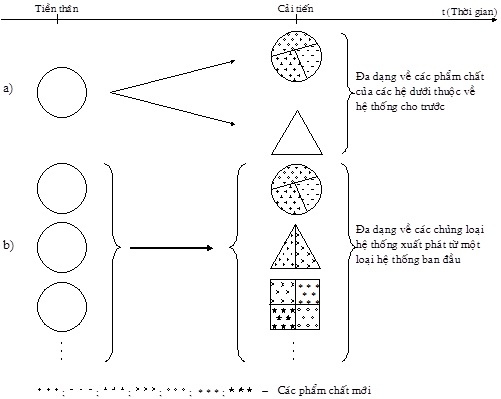
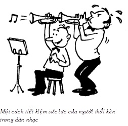

Chương 11 NỘI DUNG, Ý NGHĨA VÀ CÁC ÍCH LỢI CỦA CÁC THỦ THUẬT (NGUYÊN TẮC) SÁNG TẠO CƠ BẢN
11.1 Mở đầu
Trong bất kỳ lĩnh vực nào, thông qua việc giải thành công nhiều bài toán, người ta đều có thể rút ra được các kinh nghiệm, “bí quyết”, “mẹo” giúp giải quyết các vấn đề trong lĩnh vực đó nhanh hơn, hiệu quả hơn so với phương pháp thử và sai. Những kinh nghiệm, “bí quyết”, “mẹo” như vậy được gọi là các thủ thuật (thủ pháp) sáng tạo (Эвристический Приём - viết theo tiếng Nga; Heuristic Technique - viết theo tiếng Anh), hay gọi tắt là các thủ thuật. Nói cách khác, các thủ thuật có thể được coi là các phương pháp nhỏ, đơn giản nhất.
Bạn đọc có thể nhớ lại, khi học phổ thông, bạn đọc (do tự tìm ra hoặc được người khác mách cho) cũng có một số thủ thuật “chuyên trị” một số loại bài toán toán học, vật lý, hóa học… Trong các lớp luyện thi học sinh giỏi hoặc luyện thi đại học, nhiều thầy cô cũng cung cấp cho người học các thủ thuật giải đề với những ích lợi nhất định.
Thực tế cho thấy, từ đầu thế kỷ 20, trong lĩnh vực sáng tạo và đổi mới, công việc đầu tiên các nhà nghiên cứu và hoạt động thực tiễn làm là phát hiện, tập hợp các thủ thuật tìm được thành các bộ sưu tập các thủ thuật. Các bộ sưu tập như vậy thường có các hạn chế như:
- Không đầy đủ vì việc tìm kiếm thủ thuật, chủ yếu, dựa vào chính kinh nghiệm cá nhân người sưu tập, kinh nghiệm của một số người làm việc chung, các hồi ký, chuyện kể của một số nhà sáng tạo cùng lĩnh vực.
- Phạm vi áp dụng hẹp vì người sưu tập quan tâm hẹp (sưu tập chỉ theo một lĩnh vực hẹp; trước hết, sưu tập để cho chính mình dùng, sau đó, chia sẻ cùng các đồng nghiệp trong cùng lĩnh vực hẹp mà không đặt mục đích rộng hơn).
- Có không ít các thủ thuật yếu vì người sưu tập thiếu các tiêu chuẩn đánh giá, chọn lọc các thủ thuật một cách khách quan.
Trong quyển bốn và quyển năm, người viết tập trung trình bày hệ thống các thủ thuật (nguyên tắc) sáng tạo cơ bản của G.S. Altshuller. Đây là bộ sưu tập các thủ thuật được đánh giá rất cao trong lĩnh vực sáng tạo và đổi mới hiện nay, do đã khắc phục một cách đáng kể các hạn chế và có nhiều ưu việt hơn các bộ sưu tập khác. Hệ thống các thủ thuật (nguyên tắc) sáng tạo cơ bản là một bộ phận cấu thành của TRIZ (xem mục 4.4 Sơ đồ khối TRIZ của quyển một).
Như chúng ta đã biết, về nguyên tắc, sáng tạo và đổi mới có thể nảy sinh ở bất kỳ lĩnh vực nào. Tuy vậy, trong hầu hết các lĩnh vực, một mặt, các tác giả không bị bắt buộc phải chỉ ra một cách rõ ràng, cụ thể tính mới, tính ích lợi trong sản phẩm sáng tạo của mình so với tiền thân. Mặt khác, các tác giả cũng không bị bắt buộc phải có sự khẳng định chính thức bằng văn bản mang tính nhà nước rằng, sản phẩm của mình có đồng thời tính mới (ở mức độ thế giới) và tính ích lợi (sản phẩm sáng tạo đúng nghĩa). Ví dụ, nhà văn viết tiểu thuyết, họa sỹ vẽ tranh, nhạc sỹ soạn nhạc… đều không bị bắt buộc phải làm những điều nói trên.
Trong khi đó (xem mục 1.3 Sáng tạo của con người: Nhìn từ nhiều góc độ và mục 4.3 Các nguồn thông tin và tri thức của TRIZ của quyển một), các nhà sáng chế kỹ thuật phải làm hồ sơ đăng ký gởi Cơ quan nhà nước về patent (Patent Office). Trong hồ sơ, các tác giả phải làm rõ những điều sau đây: 1) Mô tả sáng chế tiền thân; 2) Mô tả giải pháp của mình khác tiền thân ở những điểm nào (tính mới); 3) Đạt mục đích sáng chế của mình, nhằm khắc phục những nhược điểm gì hoặc/và tạo thêm những ưu điểm gì (tính ích lợi) mà tiền thân chưa có.
Sau khi thẩm định, nếu giải pháp đăng ký thỏa mãn các yêu cầu, Cơ quan nhà nước về patent mới chính thức cấp bằng độc quyền (patent) cho người nộp hồ sơ và giải pháp đăng ký mới được chính thức công nhận là sáng chế về mặt nhà nước để bảo hộ độc quyền. Các thông tin patent thực chất là các thông tin sáng tạo xác thực, được phân loại theo các tiêu chuẩn cụ thể nhất định (ví dụ như về ngành nghề, lĩnh vực, chức năng… ), được lưu trữ tập trung, đầy đủ từ những patent đầu tiên đến nay và dễ tiếp cận đối với tất cả mọi người trong các thư viện quốc gia của các nước tiên tiến.
Những ưu điểm nói trên của thông tin patent đóng vai trò rất quan trọng trong việc nghiên cứu, phát hiện các thủ thuật sáng tạo, các quy luật phát triển. Do vậy, không phải ngẫu nhiên, các thủ thuật, phương pháp, lý thuyết sáng tạo hình thành sớm hơn và hiệu quả hơn trong lĩnh vực sáng chế kỹ thuật, so với các lĩnh vực sáng tạo khác. Nói như vậy không có nghĩa, chúng chỉ sử dụng riêng cho các lĩnh vực khoa học kỹ thuật. Về mặt nguyên tắc, có thể mở rộng, khái quát chúng để có thể áp dụng chúng sang các lĩnh vực sáng tạo khác, kể cả đời sống, sinh hoạt hàng ngày. Điều này có thể hiểu được vì, một giọt nước tuy là một phần nhỏ của đại dương cũng là sự phản ánh nhất định của cả đại dương; trong cái riêng có cái chung; thế giới là chỉnh thể thống nhất, tuy rất đa dạng. Thực tế phát triển của lĩnh vực sáng tạo và đổi mới nói chung cho thấy: Sự mở rộng, khái quát các thủ thuật, phương pháp, các quy luật phát triển tìm ra trong các lĩnh vực kỹ thuật đã đem lại nhiều ích lợi về sáng tạo và đổi mới cho cả các lĩnh vực không phải là kỹ thuật.
Từ năm 1946, G.S. Altshuller bắt đầu sưu tập các thủ thuật nhằm mục đích giúp cá nhân mình làm các sáng chế với năng suất và hiệu quả cao hơn. Đến năm 1948, ông đặt mục đích rộng hơn: Xây dựng lý thuyết và hệ thống các phương pháp giải các bài toán sáng tạo sáng chế (TRIZ) cho đông đảo mọi người.
Ngay từ thời kỳ đó ông đã nhận ra rằng, sáng tạo sáng chế chính là giải quyết các mâu thuẫn kỹ thuật (sau này là mâu thuẫn vật lý, khi khái niệm mâu thuẫn vật lý được phát hiện vào giữa những năm 1970), tạo ra sự phát triển. Ở đó, đối tượng sau khi được cải tiến (mâu thuẫn kỹ thuật được giải quyết) có đồng thời tính mới và tính ích lợi so với đối tượng tiền thân (trước khi mâu thuẫn kỹ thuật được giải quyết). Nhân đây, người viết đề nghị bạn đọc xem lại các mục 9.4 Tư duy biện chứng trong lĩnh vực sáng tạo và đổi mới và mục 9.5 Phân tích một số ví dụ, nhìn dưới quan điểm mâu thuẫn và sử dụng các công cụ của TRIZ để giải quyết mâu thuẫn của quyển ba. Do vậy, tiêu chuẩn lựa chọn các thủ thuật được G.S. Altshuller xác định là: Chúng phải có khả năng giải quyết các mâu thuẫn kỹ thuật có trong các bài toán sáng tạo sáng chế. Như vậy, tiêu chuẩn lựa chọn thủ thuật của G.S. Altshuller mang tính khách quan và mạnh vì các thủ thuật thực sự tạo ra sự phát triển bằng cách giải quyết mâu thuẫn. Với cách tiếp cận đi tìm thủ thuật này, ông cũng phát hiện ra rằng, các bài toán thuộc các lĩnh vực khác nhau, xa nhau, có những mâu thuẫn kỹ thuật phổ biến giống nhau. Để giải quyết chúng lại có những cách (thủ thuật) giống nhau tương ứng. Nói cách khác, với cách tiếp cận này, có thể tìm ra những thủ thuật không chỉ mạnh mà còn có phạm vi áp dụng rộng. Bằng cách xử lý thống kê, ông thành lập bảng tra cứu để giúp người giải bài toán xác định và dùng thủ thuật cần thiết giải quyết mâu thuẫn kỹ thuật có trong bài toán cho trước, không phân biệt, bài toán đó thuộc lĩnh vực kỹ thuật nào. Bảng này có tên gọi “Bảng các thủ thuật (nguyên tắc) sáng tạo cơ bản dùng để giải quyết các mâu thuẫn kỹ thuật” (sẽ được trình bày chi tiết và đầy đủ hơn trong quyển năm).
G.S. Altshuller tìm ra các thủ thuật dựa trên phân tích số lượng rất lớn (khoảng hơn 40.000 bản mô tả sáng chế) các thông tin sáng tạo sáng chế (thông tin patent), chọn lọc từ mức ba trở lên (xem mục nhỏ 4.2.6 Các mức sáng tạo - các mức khó của bài toán của quyển một) thuộc những lĩnh vực kỹ thuật khác nhau, đang phát triển mạnh. Như vậy, những thủ thuật tìm ra còn là sự phản ánh khách quan kinh nghiệm của rất nhiều các nhà sáng chế đủ mọi lĩnh vực, thuộc các thế hệ khác nhau, chứ không phải là kinh nghiệm chủ quan của một số nhỏ các nhà sáng chế thuộc một lĩnh vực, thu được theo cách đi phỏng vấn cá nhân một số nhà sáng chế.
Có lẽ do muốn nhấn mạnh tính khách quan và tầm quan trọng của các thủ thuật trong việc giải quyết mâu thuẫn để tạo ra sự phát triển, G.S. Altshuller còn gọi các thủ thuật là nguyên tắc (Принцип - viết theo tiếng Nga; Principle - viết theo tiếng Anh). Trong ý nghĩa như vậy, bạn đọc hiểu vì sao, trước khi giải thích, bên cạnh từ “thủ thuật”, người viết phải viết thêm từ “nguyên tắc” để trong ngoặc đơn. Sau khi giải thích, từ nay trở đi, lúc người viết dùng thuật ngữ “thủ thuật”, lúc dùng thuật ngữ “nguyên tắc”, bạn đọc hãy coi chúng là tương đương.
Kể từ năm 1946, số lượng các thủ thuật được G.S. Altshuller tìm ra tăng dần theo thời gian. Ở đây có sự tương tự với việc số lượng các nguyên tố hóa học được tìm ra, tăng dần theo thời gian. Đến đầu những năm 1970, sau nhiều lần bổ sung, chỉnh sửa, hoàn thiện nội dung và lời phát biểu các thủ thuật, phương án được chọn dùng từ đó đến nay là hệ thống 40 thủ thuật sáng tạo cơ bản. Khi nói 40, bạn đọc không nên nghĩ rằng, mãi mãi chỉ có 40 thủ thuật sáng tạo cơ bản. Tương tự như tìm các nguyên tố mới trong hóa học, trong tương lai còn có thể tìm ra thêm những thủ thuật 41, 42…
Trong chương này, mục 11.2 Lời phát biểu, các thí dụ minh họa và một số nhận xét về các thủ thuật (nguyên tắc) sáng tạo cơ bản tiếp theo đây sẽ trình bày lời phát biểu từng thủ thuật của hệ thống 40 thủ thuật với các thí dụ minh họa dễ hiểu kèm theo cho từng thủ thuật, các nhận xét sơ bộ, giúp bạn đọc bước đầu làm quen với nội dung, ý nghĩa và giá trị của các thủ thuật.
Mục 11.3 Các ích lợi của các thủ thuật (nguyên tắc) sáng tạo cơ bản nhìn dưới góc độ các kiến thức cơ sở của phương pháp luận sáng tạo và đổi mới giúp bạn đọc hiểu các thủ thuật sâu, rộng, khái quát hơn và thấy được nhiều tiềm năng ứng dụng của chúng trong giải quyết vấn đề và ra quyết định, để có được sự phát triển hiện thực, bền vững.
Cuối cùng, mục 11.4 Tổng kết chương sẽ làm nhiệm vụ tổng kết, nêu thêm một số gợi ý và liệt kê những gì sẽ đề cập trong quyển năm.
11.2 Lời phát biểu, các thí dụ minh họa và một số nhận xét về các thủ thuật (nguyên tắc) sáng tạo cơ bản
Thủ thuật trong TRIZ được hiểu là thao tác tư duy đơn lẻ, chỉ ra hướng người giải cần suy nghĩ.
Tính cơ bản của thủ thuật thể hiện ở tính đơn giản, tương đối độc lập, hay sử dụng trong thực tế sáng tạo và đổi mới và là sự thể hiện cụ thể một cách đa dạng các quy luật phát triển hệ thống (các quy luật này sẽ được trình bày trong quyển bảy). Ngoài ra, tính cơ bản của các thủ thuật còn thể hiện ở chỗ, chúng đóng vai trò trong PPLSTVĐM như vai trò của các chữ cái trong ngôn ngữ, các nguyên tố hóa học trong hóa học…, hiểu theo nghĩa, chúng có thể tổ hợp lại với nhau tạo nên những ý tưởng sáng tạo phức tạp hơn. Điều này cũng tương tự như trong ngôn ngữ, các chữ cái tổ hợp lại với nhau thành các từ, các từ tổ hợp lại với nhau thành câu…; trong hóa học, các nguyên tố (đơn chất) tổ hợp lại với nhau thành các hợp chất, các chuỗi polymer… Thực tế cho thấy, người ta thường dùng tổ hợp của các thủ thuật, nhiều hơn là dùng các thủ thuật đơn lẻ một cách độc lập. Một lần nữa lại có sự tương tự: Trong ngôn ngữ, người ta thường dùng từ nhiều hơn là các chữ cái riêng rẽ; trong hóa học, người ta thường dùng các hợp chất nhiều hơn là các đơn chất. Mỗi thủ thuật trong mục này được trình bày theo trình tự sau:
- Số thứ tự (được in đậm trong mỗi mục nhỏ và dưới mỗi trang) và tên gọi của từng thủ thuật trong số hệ thống 40 thủ thuật. Lưu ý, bạn đọc đừng tự ý thay đổi số thứ tự của từng thủ thuật vì nó còn liên quan đến việc tra cứu “Bảng các thủ thuật (nguyên tắc) sáng tạo cơ bản dùng để giải quyết các mâu thuẫn kỹ thuật” (sẽ được trình bày chi tiết trong quyển năm).
- NỘI DUNG (lời phát biểu) của từng thủ thuật. Phần này được người viết cố gắng dịch thoát ý từ các nguyên bản tiếng Nga.
- GIẢI THÍCH thuật ngữ ít biết, nếu nó có trong lời phát biểu thủ thuật nào đó. Điều này có nghĩa, không phải thủ thuật nào cũng có phần giải thích.
- CÁC THÍ DỤ minh họa nội dung của từng thủ thuật. Mỗi thủ thuật có khoảng trên, dưới mười thí dụ minh họa. Khởi đầu là những thí dụ gần gũi, ai cũng biết, có xung quanh mọi người. Sau đó là những thí dụ “sâu” hơn, được người viết sưu tầm, chọn lấy cho phù hợp với nội dung của từng thủ thuật, chủ yếu, từ các tạp chí tiếng Nga “Kỹ thuật và khoa học”, “Tạp chí của các kỹ sư”, “Nhà sáng chế và hợp lý hóa”, “Kỹ thuật và thanh niên”, “Nhà kỹ thuật trẻ”, “Nhà thiết kế và tạo mẫu”, “Khoa học và đời sống”. Tuy gọi là sâu hơn, những thí dụ đó hoàn toàn có thể hiểu được đối với những người có trình độ từ phổ thông trung học trở lên.
- Các NHẬN XÉT bước đầu về từng thủ thuật, sau khi bạn đọc làm quen với lời phát biểu thủ thuật và các thí dụ minh họa nội dung của thủ thuật. Những nhận xét này sẽ được diễn giải chi tiết hơn, khái quát hơn nhìn dưới góc độ các kiến thức cơ sở của PPLSTVĐM (xem mục 11.3), nhằm giúp bạn đọc mở rộng phạm vi áp dụng của các thủ thuật sáng tạo sang cả các lĩnh vực không phải là kỹ thuật.
11.2.1 NGUYÊN TẮC PHÂN NHỎ
11.2.1.1 NỘI DUNG:
a) Chia đối tượng thành các phần độc lập.
b) Làm đối tượng trở nên tháo lắp được.
c) Tăng mức độ phân nhỏ của đối tượng.
11.2.1.2 CÁC THÍ DỤ:
Dây kim loại một sợi phân nhỏ thành dây kim loại nhiều sợi.
Thước mét phân nhỏ thành thước gập, phân nhỏ nữa thành thước dây mềm, gọn.
Để lên cao được, cần có thang gồm nhiều bước nhỏ.
Báo khổ rộng in thành những cột nhỏ cho dễ đọc.
Ngũ cốc nghiền thành bột, từ đó làm bún, miến, mì, bánh các loại. Tương tự, trong kỹ thuật có ngành luyện kim bột, đúc nhựa từ các hạt nhỏ…
Trong toán học, thay vì nghiên cứu các hàm số phức tạp người ta phân tích thành các dãy, chuỗi.
Cho đến thời gian gần đây, kính thiên văn quang học, có gương phản xạ lớn nhất, đường kính 6 mét, đặt tại Bắc Capcadơ (Liên Xô). Các nhà chuyên môn cho rằng, nền kỹ thuật hiện đại đã tiến đến những giới hạn và không thể chế tạo kính thiên văn có gương phản xạ lớn hơn. Người ta đã gặp nhiều khó khăn to lớn trong việc sản xuất, mài và xây dựng bệ đỡ đối với những gương lớn. Ví dụ, chỉ riêng quá trình làm nguội khối thủy tinh đã kéo dài hơn một năm để đảm bảo tính đồng nhất, còn việc mài gương phải thực hiện trong vài năm.
Tuy vậy, các nhà bác học đòi hỏi phải có những kính thiên văn với độ phân giải cao hơn nữa, nói cách khác, cần tăng đường kính của gương. Các nhà thiên văn nói rằng, nếu có gương đường kính 10 mét, họ sẽ nhìn thấy rõ lửa của ngọn nến trên Mặt Trăng.
Các chuyên gia thuộc Viện công nghệ và Đại học tổng hợp California (Mỹ) quyết định chế tạo kính thiên văn đó. Hiểu rằng, khó có thể làm gương lớn một cách “nguyên khối”, họ chế tạo gương từ 36 mảnh, mỗi mảnh có đường chéo 1,8 mét. Việc mài gương trở nên dễ dàng hơn. Ngoài ra, giải pháp này cho phép làm gương mỏng hơn, khối lượng gương giảm đi ba lần, nên kết cấu bệ đỡ cũng nhẹ và đơn giản hơn. Công việc nối ghép các mảnh được thực hiện bằng hệ thống cơ-điện tử với độ chính xác cao.
Nước ép trái cây ngon và bổ dưỡng nhưng bị mất nhiều vitamin, axit amin… Những thứ này bị giữ lại trong chất xơ (xenlulô) khi đi qua các bộ ép cơ học và bị thải theo bã. Để lấy lại được những chất này, người ta nghĩ đến việc “bẻ gãy” các chuỗi polimer dài liên kết chúng. Người ta đưa thêm vào bã trái cây những chất men, làm bã hòa tan được trong nước. Kết quả, từ cùng một lượng nguyên liệu, các nhà sản xuất thu được thành phẩm nhiều gấp đôi, mà về mặt chất lượng bổ dưỡng, hầu như không thua kém trái cây ban đầu.
Kỹ sư người Úc R. Sarich đưa ra một loại động cơ hai kỳ, hơn hẳn động cơ bốn kỳ về công suất, tính kinh tế và độ sạch của khí thải. Điểm đặc biệt nổi bật của loại động cơ này là hệ thống phun nhiên liệu vào buồng đốt dùng khí nén, có thể thu được các hạt nhiên liệu kích thước nhỏ tới 10 micron, so với 150 - 600 micron trong các động cơ thường. Hỗn hợp không khí-nhiên liệu loại mới này cháy hiệu quả hơn và các tính năng tốt hơn thấy rõ: động cơ nhẹ hơn hai lần, có kích thước nhỏ hơn, do vậy thêm chỗ trống cho hành khách và hành lý, có 250 chi tiết ít hơn động cơ bốn kỳ và giá sản xuất rẻ hơn.
Phải ngồi vào xe ôtô, đậu lâu dưới ánh nắng mặt trời thật khó chịu vì nóng và sự ngột ngạt. Nhà vật lý người Mỹ, Domingo Ten sáng chế phương tiện làm mát không khí trong những trường hợp như vậy. Đó là bình xịt xon khí (aerosol) - dung dịch rượu etylic (C2H5OH) trộn bạc hà. Khi phun hỗn hợp các hạt nhỏ này vào khoang xe nóng tới 50oC, chỉ nửa phút sau, nhiệt độ không khí giảm đi hai lần và tạo ra cảm giác mát mẻ như vừa mưa xong.
Công ty “Expendid” của Anh sản xuất loại thùng chống cháy, đựng nhiên liệu. Thùng ngăn thành những lỗ tổ ong, làm từ hợp kim nhôm. Cứ một lít dung tích có đến 4200 ô. Vách của các ô mỏng đến nỗi, chỉ chiếm 1% tổng dung tích của thùng nhiên liệu. Tổ ong có tác dụng dẫn nhiệt nhanh khỏi chỗ bén lửa và làm ngọn lửa di chuyển chậm lại. Xăng cháy còn bị dập tắt bởi các sản phẩm cháy bị các ô giữ lại. Kết quả thử nghiệm cho thấy, thùng xăng ôtô kiểu mới dù bị đục thủng và đốt cháy ở 30 lỗ, bắt lửa yếu ớt và sau đó tắt hoàn toàn.
11.2.1.3 NHẬN XÉT:
Từ “đối tượng” trong quyển sách này cần hiểu theo nghĩa rộng. Đó có thể là bất kỳ cái gì có khả năng phân nhỏ được, không nhất thiết phải là đối tượng kỹ thuật. Tương tự như vậy đối với các thủ thuật khác, có từ “đối tượng”.
Từ “độc lập” cần được hiểu theo nghĩa tương đối với nhiều mức độ độc lập khác nhau. Không nên hiểu duy nhất một nghĩa là độc lập tuyệt đối: Phần cho trước hoàn toàn không tương tác với các phần khác, các đối tượng khác.
Thủ thuật này thường dùng trong những trường hợp khó làm “trọn gói”, “nguyên khối”, “một lần”. Nói cách khác, phân nhỏ ra cho vừa sức, cho dễ thực hiện, cho phù hợp với những phương tiện hiện có…
Phân nhỏ đặc biệt hay dùng trong những trường hợp cần có diện tích bề mặt tiếp xúc lớn như trong các phản ứng hóa học, tạo sự cháy, nổ, trao đổi nhiệt…
Tháo lắp làm đối tượng trở nên gọn, thuận tiện cho việc chuyên chở, xếp đặt và mở ra khả năng thay thế từng bộ phận đối tượng, kể cả việc mở rộng chức năng của từng bộ phận đó.
Cần tưởng tượng: Nhờ phân nhỏ mà đối tượng, ban đầu ở thể rắn, chuyển dần sang dẻo, lỏng, khí, plasma…, nói chung, có thể phân nhỏ đến vi mô.
Sự thay đổi về lượng dẫn đến sự thay đổi về chất, cho nên, phân nhỏ có thể làm đối tượng có thêm những tính chất mới, thậm chí, ngược với những tính chất đã có.
Nguyên tắc phân nhỏ hay dùng với các nguyên tắc: 2. Tách khỏi, 3. Phẩm chất cục bộ, 5. Kết hợp, 6. Vạn năng, 15. Linh động…
11.2.2 NGUYÊN TẮC ” TÁCH KHỎI ”
11.2.2.1 NỘI DUNG:
Tách phần gây “phiền phức” (tính chất “phiền phức”) hay ngược lại, tách phần duy nhất “cần thiết” (tính chất “cần thiết”) ra khỏi đối tượng.
11.2.2.2 CÁC THÍ DỤ:
Trước đây, tiếng hát là một phần của ca sĩ. Muốn nghe hát, người ta phải mời ca sĩ đến, trong khi đó cái thực sự “cần thiết” cho nhiều trường hợp chỉ là tiếng hát. Sau này, tiếng hát được tách ra thành đĩa hát, băng ghi âm.
Cà phê hòa tan, mắm cô, mì ăn liền, hương phở, bột ngọt, đường.
Trong các bộ phận của cái bàn, mặt bàn đóng vai trò quan trọng. Do yêu cầu của công việc, đời sống, cần có những mặt bàn khác nhau về trang trí. Khăn trải bàn, xét theo ý nghĩa này, chính là kết quả của việc “tách khỏi”.
Áo gối, vỏ chăn bông… tách khỏi gối và chăn, nên khi bị bẩn không cần phải giặt nguyên cả gối hay chăn.
Các thư viện lớn có nhiều sách, việc tìm sách trực tiếp gặp nhiều khó khăn. Người ta tách những thông tin chính về quyển sách thành thư mục, thuận tiện cho bạn đọc.
Số lượng các bài báo khoa học, kỹ thuật ngày càng nhiều. Nhằm giúp các nhà chuyên môn tiện theo dõi và quyết định chọn các bài báo cần thiết để đọc một cách chi tiết, người ta đưa ra các loại tạp chí, chỉ đăng tóm tắt nội dung chính các bài báo và “địa chỉ” của chúng.
Các loại kìm khác nhau ở phần gọng kìm và đây mới là phần chức năng chính của kìm. Trên cơ sở tách gọng ra khỏi tay cầm, người ta chế tạo ra loại kìm, chỉ trong vòng 2 - 3 phút thay gọng là có được chiếc kìm loại khác. Trước kia, chỉ cần phần làm việc của gọng kìm bị mòn quá độ hoặc hư, người ta phải bỏ nguyên cả cái kìm. Kìm loại mới bền hơn mà giá thành không cao, vì việc tách khỏi mở ra khả năng làm gọng và tay cầm từ các loại thép khác nhau: Gọng làm bằng thép tốt, chất lượng cao, còn tay cầm - gang chứa cacbon, rẻ tiền.
Loại sơn do các nhà hóa học thuộc công ty Nhật “Chugoku Marine Paints” chế tạo, biến công việc sơn trong nước trở nên dễ dàng như trong không khí. Sơn loại mới gồm hai thành phần, khi sử dụng trộn lẫn lại với nhau. Thành phần thứ nhất là một loại men màu trên cơ sở nhựa epoxy, thành phần thứ hai là loại chất làm dẻo, phản ứng độc đáo khi gặp nước. Hỗn hợp được đưa đến chi tiết cần sơn, các phân tử của chất làm dẻo đẩy các phân tử nước ra khỏi bề mặt chi tiết và chiếm chỗ của chúng, từng phân tử nước dần dần bị đẩy khỏi lớp sơn cho đến hết. Sơn dính tốt đối với nhiều loại vật liệu, không làm đầu độc và ô nhiễm nước. Thời gian khô hoàn toàn từ 4 đến 8 tiếng, tùy theo nhiệt độ.
- Viện sĩ quá cố P.L. Kapitsa, người được giải Nobel về vật lý, lúc còn sống rất thích ý tưởng truyền năng lượng đi xa bằng dòng bức xạ điện từ tần số cao. Ngày nay, ý tưởng đó đã có khả năng biến thành hiện thực. Hãng “Lockheed Georgia” đang thực hiện đề án do NASA đặt hàng, nhằm chế tạo loại máy bay không người lái, được tiếp năng lượng từ ăngten đặt trên mặt đất. Theo tính toán, máy bay như vậy có thể ở trên không liên tục suốt 2 - 3 tháng do được “nuôi” bằng chùm tia cao tần 2 MHz phát từ ăngten magnetron. Tần số nói trên được chọn, đủ nhỏ để không làm ion hóa không khí và đủ lớn để dòng năng lượng truyền không bị phân tán, do vậy, tiết kiệm được năng lượng. Ăngten thu, đặt dưới cánh máy bay, biến sóng điện từ thành dòng điện một chiều, công suất khoảng 30 KW. Động cơ 25 - 40 mã lực làm quay cánh quạt và cung cấp điện cho các máy móc thí nghiệm trên máy bay. Máy bay không người lái loại này sẽ sử dụng để theo dõi liên tục thành phần hóa học của khí quyển, đặc biệt là nồng độ. Máy bay thực hiện các vòng bay hình số 8 xung quanh ăngten ở độ cao 20 km, cho phép không chỉ theo dõi thành phần khí quyển mà còn chụp những bức ảnh có độ phân giải cao hơn nhiều về tình hình nông nghiệp và giao thông vận tải.
11.2.2.3 NHẬN XÉT:
- Thông thường, bất kỳ đối tượng nào đều có nhiều phần, tính chất, khía cạnh, chức năng… Trong khi đó, có nhiều lúc, người ta chỉ thực sự cần một trong những số đó. Nguyên tắc “tách khỏi” chỉ ra, không nên dùng cả đối tượng vì sẽ tốn thêm nhiều thứ khác, ví dụ, chi phí hoặc vận chuyển không thuận tiện. Người giải bài toán phải nghĩ cách tách đúng cái cần thiết ra để sử dụng riêng.
Tương tự như vậy đối với phần gây phiền phức, tách phần gây phiền phức ra khỏi đối tượng để khắc phục nhược điểm có trong đối tượng và chỉ sử dụng phần được giữ lại, lúc này không còn có nhược điểm đó nữa.
Do tách khỏi đối tượng phần không cần thiết, thậm chí, gây phiền phức mà phần giữ lại để sử dụng có thêm những tính chất, những khả năng mới (nhiều khi, ngược với cái cũ). Do đó, cần tận dụng chúng. Những tính chất, những khả năng mới có thể là gọn hơn, linh động hơn, dễ thay thế, tăng tính điều khiển…
Phần không cần thiết hoặc phần gây phiền phức sau khi tách khỏi có thể dùng trong những điều kiện khác, nơi khác, đem lại ích lợi chứ không nên hiểu đơn giản là bỏ, vứt chúng đi.
Khi nói “tách khỏi” mới chỉ ra định hướng suy nghĩ, định hướng việc làm. Để trả lời câu hỏi “Làm thế nào để tách khỏi?” cần tham khảo các ý tưởng, cách làm ở những lĩnh vực chủ đạo chuyên về công việc đó như luyện kim, lọc, trích ly, chọn giống, giải phẫu, tuyển lựa…
Nguyên tắc “tách khỏi” hay dùng với các nguyên tắc: 1. Phân nhỏ, 3. Phẩm chất cục bộ, 5. Kết hợp, 6. Vạn năng, 15. Linh động…
11.2.3 NGUYÊN TẮC PHẨM CHẤT CỤC BỘ
11.2.3.1 NỘI DUNG:
a) Chuyển đối tượng (hay môi trường bên ngoài, tác động bên ngoài) có cấu trúc đồng nhất thành không đồng nhất.
b) Các phần khác nhau của đối tượng phải có các chức năng khác nhau.
c) Mỗi phần của đối tượng phải ở trong những điều kiện thích hợp nhất đối với công việc.
11.2.3.2 GIẢI THÍCH:
Đồng nhất được hiểu là giống nhau, như nhau. Cấu trúc đồng nhất là cấu trúc có tất cả các phần giống nhau, như nhau về mọi khía cạnh, mọi mặt. Không đồng nhất có nghĩa là không giống nhau, khác nhau, ít nhất, về một khía cạnh, một mặt nào đó. Nếu như đồng nhất cho thấy sự đơn điệu, đơn dạng thì không đồng nhất chứa sự đa dạng, phong phú.
11.2.3.3 CÁC THÍ DỤ:
Các tờ lịch dùng để chỉ ngày, thứ trong tuần, nhưng các ngày không giống nhau: có ngày làm việc, chủ nhật và ngày lễ nghỉ. Để phân biệt điều ấy, các ngày nghỉ được in bằng mực đỏ.
37oC là thân nhiệt của người khỏe mạnh. Thân nhiệt thấp hoặc cao hơn nhiệt độ này là “có vấn đề”. Để nhấn mạnh điều này, trên các cặp nhiệt độ, 37oC ghi bằng màu đỏ.
Để bảo vệ sách tốt, bìa thường được làm dày hơn nhiều so với trang sách. Cẩn thận hơn nữa, bề mặt của bìa còn được phủ một lớp nhựa trong suốt bảo vệ.
Quần áo mặc thường bị rách trước tại những chỗ như đầu gối, mông, khuỷu tay, vai, nách, các đường chỉ may. Do vậy, đặc biệt đối với quần áo bảo hộ lao động, những chỗ nói trên thường được làm dày hơn và may thành gân ở những chỗ ghép các mảnh vải.
Mái nhà thường lợp bằng tôn tráng kẽm nhưng tại những chỗ cần lấy ánh sáng, người ta dùng tôn nhựa trong suốt.
Các đồ vật đa dạng hóa như bút có nhiều loại bút, bàn có nhiều loại bàn, xe có nhiều loại xe…
Cách sắp xếp các phím chữ cái trên máy đánh chữ đã quá quen thuộc với mọi người. Điều này dễ hiểu vì nó có tuổi thọ một trăm năm. Trong khi đó, các nhà tạo mẫu, xuất phát từ các quy luật tổ chức lao động văn phòng và các thành tựu hiện đại của kỹ thuật, từ lâu đã đề nghị cách sắp xếp khác, thuận lợi cho tay trái và tay phải hơn. Điều này có thể làm tăng tốc độ đánh máy chữ lên ba lần. Tuy vậy, chưa thấy nhà sản xuất nào vội vã áp dụng cả. Có lẽ, nhà máy “Optikoelektron” ở Bungari là nhà máy sớm nhất châu Âu sản xuất loại máy chữ này (xem hình).
Tại các nhà máy thuộc tổ hợp công nghiệp “Erikson” (Thụy Điển), người ta thực hiện cuộc thử nghiệm liên quan đến việc tổ chức lại cách chiếu sáng. Kết quả, độ chiếu sáng chung giảm đi hai lần nhưng độ chiếu sáng tại nơi làm việc lại tăng lên đáng kể, tiết kiệm được 55% năng lượng điện và năng suất đứng máy của công nhân tăng thêm 20%. Các chuyên gia giải thích kết quả đạt được bằng các nguyên nhân tâm lý: Tăng cảm giác tiện nghi đối với người làm việc.
Một số công ty tư bản, tuy làm được những sáng chế quan trọng nhưng không đăng ký nhận patent. Họ cho rằng giữ bí mật công nghệ để độc quyền sản xuất có lợi hơn. Ví dụ, Công ty “Portland-Cement” (Đan Mạch) đưa ra bán loại bánh xe răng cưa kích thước lớn, hầu như làm toàn bằng bêtông, chỉ lớp trên cùng của bánh răng là kim loại. Bánh răng bêtông nhẹ, có tuổi thọ cao hơn bánh răng kim loại, chịu ăn mòn tốt hơn.
Trong suốt một thời gian dài, người ta sử dụng Si siêu sạch làm pin mặt trời là chủ yếu. Sau đó, các nhà bác học quyết định thay nó bằng hợp chất bán dẫn GaAs, là loại vật liệu có hiệu suất cao hơn. Sự thay thế này chứng tỏ quá vội vã. Các kỹ sư Mỹ và Pháp đưa ra loại pin mặt trời tổ hợp hai loại trên. Trong đó, Si hấp thụ một phần phổ năng lượng mặt trời, GaAs thì hấp thụ phần khác. Hiệu suất của loại pin mới này đạt đến 27%. Hiệu suất còn có thể tăng lên hơn nữa, nếu sử dụng thêm các chất bán dẫn Ge và AlAs.
Trước đây, có đến 30% các tai nạn tại các cảng của Phần Lan là do các bao tải polyethylen: mưa, tuyết, sương sớm làm các bao trở nên trơn trượt và cả núi các bao đựng cá đông lạnh, ximăng, phân bón, các hạt nhựa polymer… đổ ập xuống. Công ty “Vyyk and Heglund” nghiên cứu và sản xuất loại bao tải polyethylen có bề mặt nhám với hệ số ma sát rất lớn.
Xoong, nồi chế tạo tại Thụy Điển, được các chuyên gia cho rằng, có thể dùng bền 100 năm. Trong khoảng thời gian này, chúng không bị cháy, rỉ sét hoặc nứt rạn. Bí quyết là ở chỗ xoong, nồi có ba lớp kim loại, sản xuất theo cách ép đẳng tĩnh. Lớp ngoài cùng, tiếp xúc với bếp được làm bằng đồng, dẫn nhiệt tốt. Lớp giữa dầy nhất, làm bằng nhôm, có tác dụng phân phối nhiệt đều. Lớp tiếp xúc với thức ăn làm bằng thép không rỉ, dễ cọ rửa và hợp vệ sinh.
11.2.3.4 NHẬN XÉT:
Các đối tượng đầu tiên thường có tính đồng nhất cao về vật liệu, cấu hình, chức năng, thời gian, không gian… đối với các phần trong đối tượng. Khuynh hướng phát triển tiếp theo là: Các phần có các phẩm chất, chức năng riêng cục bộ của mình nhằm phục vụ tốt nhất chức năng chính hoặc mở rộng chức năng chính đó.
Các đối tượng đồng nhất đầu tiên còn phát triển theo khuynh hướng chuyên dụng hóa, đa dạng hóa so với nhau, để phù hợp nhất với môi trường, điều kiện làm việc, sự thuận tiện đối với người sử dụng, thị hiếu của người tiêu dùng cụ thể…
Với thời gian, môi trường, tác động bên ngoài cũng bị biến đổi theo những khuynh hướng thích hợp với những điều kiện, hoàn cảnh cụ thể, đa dạng của đối tượng và của con người sử dụng đối tượng đó. Xuất hiện các loại vi môi trường, vi khí hậu, vi tác động…
Nói chung, nguyên tắc phẩm chất cục bộ phản ánh khuynh hướng phát triển: từ đơn giản sang phức tạp, từ đơn điệu sang đa dạng để có được thêm các ích lợi.
Tinh thần “phẩm chất cục bộ” có ý nghĩa lớn đối với việc nhận thức và xử lý thông tin: không phải thông tin nào cũng có giá trị như thông tin nào. Không thể có một cách tiếp cận, dùng chung cho mọi loại đối tượng - “chân lý luôn luôn là cụ thể”.
11.2.4 NGUYÊN TẮC PHẢN (BẤT) ĐỐI XỨNG
11.2.4.1 NỘI DUNG:
a) Chuyển đối tượng có hình dạng đối xứng thành không đối xứng - phản đối xứng (nói chung, làm giảm bậc đối xứng của đối tượng).
b) Nếu đối tượng phản đối xứng, tăng mức độ phản đối xứng (giảm bậc đối xứng).
11.2.4.2 GIẢI THÍCH:
Có nhiều loại đối xứng: đối xứng qua tâm, đối xứng qua trục, đối xứng qua mặt phẳng. Tổng số các phép đối xứng có thể có của đối tượng cho trước là bậc đối xứng của đối tượng đó. Các hình cầu, hình tròn là những hình có bậc đối xứng cao nhất.
11.2.4.3 CÁC THÍ DỤ:
Các xe ôtô du lịch loại nhỏ có cửa mở ở cả hai phía nhưng các xe lớn (ôtô buýt chẳng hạn), chỉ mở phía tay phải, sát với lề đường.
Theo dõi sự tiến hóa của cái kéo, ta thấy cái kéo ban đầu có dạng đối xứng cao, sau đó hai lỗ xỏ các ngón tay có kích thước khác nhau: lỗ lớn, lỗ bé. Tiếp theo, cả phần tay cầm nằm lệch hẳn một bên so với trục của cái kéo: kéo dùng cho thợ may.
Chân chống xe đạp đặt dưới trục giữa, có hình dạng đối xứng, nhưng ở xe gắn máy: một chân có hình thước thợ nhô ra, làm nơi người đi xe dẫm chân lên để dễ thực hiện các động tác chống xe. Hoặc, từ chỗ chân chống xe đặt chính giữa chuyển sang loại chân chống đặt ở phía trái xe, giữ xe không phải trong tư thế đứng thẳng (đối xứng) mà hơi nghiêng.
Để tăng độ tin cậy và làm công việc đóng, mở cống được dễ dàng, chỉ cần một người cũng làm được, nắp đậy cống làm hình ôvan thay vì có hình tròn (xem hình).
Chỗ ngồi của lái xe trong ôtô không ở chính giữa mà ở bên trái hay bên phải, tùy theo luật giao thông cho phép lưu thông phía phải hay phía trái.
Ở xe gắn máy, vỏ xe bánh trước và bánh sau có các vết khía khác nhau, không như xe đạp.
Các đồ trang sức, trang trí, mốt quần áo, kiến trúc cũng có khuynh hướng chuyển từ đối xứng sang phản đối xứng.
Từ rất lâu, người ta đã biết dùng compa để vẽ đường tròn. Điều này được chứng minh qua các bức tranh vẽ cái compa, có từ thời trung cổ tại nhiều nước châu Âu.
Xí nghiệp Kovopol của Tiệp Khắc sản xuất loại compa mới, chỉ có chiều dài 120 mm nhưng có thể vẽ được đường tròn đường kính tới 600 mm vì một chân của compa được ghép nối, dài thêm ra bằng một cái chân phụ (xem hình). Compa loại này được nhận huy chương vàng tại Hội chợ quốc tế, tổ chức tại Brno.
Các thống kê cho thấy, 50% các tai nạn ôtô thường xảy ra vào ban đêm, trong đó, 60% có người chết, mặc dù tốc độ của các xe đi ngược chiều lúc tránh nhau, nhiều khi, chỉ bằng 25 - 30 km/giờ. Trong đêm tối, ngay cả ánh đèn chiếu gần (đèn cốt) đủ làm người lái xe phía ngược chiều bị lóa mắt, đến nỗi mất định hướng và lái xe ép sát lề hoặc đụng vào xe phía ngược chiều. Trong các điều kiện như vậy, để nhìn rõ hố (thậm chí hố được che chắn bằng các hàng rào báo hiệu) hoặc các vật lạ nằm trên đường cũng rất khó khăn. Các chuyên gia cho rằng, tốt nhất, không nên chiếu vào xe đi ngược lại bằng bất kỳ ánh sáng nào, trừ những đèn nhỏ, thực sự không làm chói mắt và chỉ nên chiếu sáng phía bên phải đường. Công ty Thụy Điển “Remark AV” đề nghị gắn đèn pha ở tấm chắn bùn bên phải, phía trước để chiếu sáng đường đi mà không làm lóa mắt lái xe phía ngược lại.
Khi nói đến những chiếc khoan, người ta thường nghĩ ngay tới việc tạo ra các lỗ tròn. Trong khi đó, yêu cầu kỹ thuật, nhiều khi, đòi hỏi phải có những lỗ vuông hoặc hình chữ nhật. Các chuyên gia của một công ty Mỹ đã chế tạo ra loại khoan đáp ứng yêu cầu trên. Đó là chiếc khoan cầm tay, dùng pin hoặc ắc quy (đủ dùng cho 3 giờ), có tốc độ khoan 84 mm/phút đối với các tấm bêtông. Khoan sử dụng nguyên tắc cắt xọc để tạo lỗ vuông nhờ bộ rung cao tần.
11.2.4.4 NHẬN XÉT:
Từ “hình dạng”, phát biểu trong thủ thuật này có thể và cần hiểu theo nghĩa rộng, không chỉ thuần túy theo nghĩa hình học có trong thực tế. Ví dụ, hình dạng trong một không gian biểu diễn nào đó mang tính quy ước.
Tương tự như vậy, các từ “đối xứng”, “phản đối xứng” cũng có thể và cần hiểu theo nghĩa rộng: đối xứng và phản đối xứng không chỉ theo các đường nét hình học mà còn có thể là các chức năng nói riêng, tính chất nói chung.
Giảm bậc đối xứng, ví dụ, chuyển từ hình tròn sang hình ôvan, hình vuông sang hình chữ nhật…
Thủ thuật này rất có tác dụng trong việc khắc phục tính ì tâm lý, cho rằng các đối tượng phải luôn có các hình dạng đối xứng.
Khi đối tượng chuyển sang dạng ít đối xứng hơn (bậc đối xứng thấp hơn), có thể làm xuất hiện những tính chất mới, lợi hơn. Ví dụ, tận dụng được những nguồn dự trữ về không gian (nói chung là các khả năng tiềm ẩn), làm đối tượng ổn định hơn, bền vững hơn…
Nguyên tắc phản đối xứng, có thể nói, là trường hợp riêng của 3. Nguyên tắc phẩm chất cục bộ, có mục đích làm tăng tính tương hợp (tương ứng và phù hợp) giữa các phần của đối tượng với nhau và với môi trường bên ngoài, nhằm thực hiện chức năng của từng phần một cách tốt nhất.
11.2.5 NGUYÊN TẮC KẾT HỢP
11.2.5.1 NỘI DUNG:
a) Kết hợp các đối tượng đồng nhất hoặc các đối tượng dùng cho các hoạt động kế cận.
b) Kết hợp về mặt thời gian các hoạt động đồng nhất hoặc kế cận.
11.2.5.2 CÁC THÍ DỤ:
Nhiều chìa khóa kết hợp lại thành chùm chìa khóa, tránh thất lạc.
Súng hai nòng, nhiều nòng.
Máy may nhiều kim.
Bút kẻ khuông nhạc gồm năm đầu ngòi, kẻ một lần được năm dòng song song.
Các két bia, container.
Bút bi nhiều ruột với các màu mực khác nhau.
Bấm móng tay có phần giũa móng tay.
Hộp phấn phụ nữ có gương soi.
Bàn ủi gắn với bộ phận phun nước.
Loại búa có một đầu dùng để đóng đinh, đầu kia dùng nhổ đinh.
Bóng đèn có hai tim: pha và cốt.
Những vật trong ảnh, quả thật, trông giống như các tấm thảm dành cho những người tập yoga. Nhưng, trên thực tế, đây là những chiếc đinh có chung một cái mũ đinh. Kết hợp nhiều đinh lại làm một như vậy để làm gì? Tại nhà máy “VFZ” ở Zwickau (Đức), người ta sản xuất ra chúng bằng phương pháp dập từ các tấm thép tráng kẽm. Các “thảm” đinh với kích thước khác nhau, có 20, 40, 60, thậm chí, 100 cái đinh. Chúng được dùng để đóng các vì kèo, nói chung, những chỗ ghép nối các kết cấu gỗ nhẹ: “thảm” đinh tạo mối liên kết chặt hơn nhiều so với các đinh đơn.
Những cuộc hạ cánh ngoài kế hoạch của các nhà du hành vũ trụ cho thấy, họ cần có phương tiện để bắn pháo hiệu và tự bảo vệ chống lại thú dữ. Các chuyên gia về kỹ thuật hàng không và vũ trụ đề nghị các nhà sản xuất vũ khí vùng Tula (Liên Xô) thiết kế và chế tạo loại súng có độ tin cậy cao, sử dụng thuận tiện, bắn được đạn súng săn, đạn thường, pháo hiệu. Kết quả, công trình sư N.V. Upirov cùng các đồng nghiệp đã làm ra loại súng ngắn ba nòng, đáp ứng được các yêu cầu nói trên. Kết cấu của súng cho phép bắn từ các nòng ra theo thứ tự bất kỳ, thêm nữa, có thể bắn ba phát đạn dùng có một tay. Cấu tạo của súng loại trừ khả năng súng cướp cò do bị va đập hay làm rớt súng. Súng có thể dùng kèm theo báng phụ.
Chỉ một người bước ra sân khấu, vừa hát, vừa tự đệm đàn ghita, mà người nghe, nghe thấy cả dàn nhạc đệm theo: Từ tiếng trống đến bộ hòa âm điện tử. Tóm lại, một người thay thế cho cả ban nhạc. Bí mật nằm ở chỗ, chiếc ghita điện tổng hợp (sản xuất tại Nhật) được gắn cả máy ghi âm, micrô, máy khuếch đại, loa. Máy ghi âm dùng để phát phần nhạc đệm, còn nghệ sĩ tự đánh lấy giai điệu chính (xem hình).
Các chuyên gia Mỹ và Ý hợp tác xây dựng loại kính thiên văn quang học kép trên núi Greham, bang Arizona (Mỹ) ở độ cao 3.300 mét. Kính thiên văn này gồm hai kính thiên văn thường, có đường kính gương của mỗi cái là 8 mét và đặt cách nhau 22 mét. Bằng cách kết hợp như vậy, người ta thu được độ phân giải tương đương với kính đơn, có đường kính gương 22 mét.
Trong tương lai, các chuyên gia dự định xây dựng thêm hai kính thiên văn quang học mạnh hơn, mỗi cái trong số đó có bốn gương, đường kính 8 mét, kết hợp thành một hệ thống nhất.
11.2.5.3 NHẬN XÉT:
“Kế cận”, ở đây, không nên chỉ hiểu là gần nhau về mặt thời gian, vị trí hay chức năng, mà nên hiểu rộng hơn: Các đối tượng có thể có quan hệ với nhau, bổ sung, hỗ trợ cho nhau… Do vậy, có thể có cả những kết hợp các đối tượng “ngược nhau” (ví dụ, bút chì kết hợp với tẩy).
“Kết hợp” cần hiểu theo nghĩa rộng là thiết lập mối liên kết, không đơn thuần cộng thêm (kiểu số học) hay gắn thêm (kiểu cơ học), mà còn được hiểu kết hợp những ý tưởng, tính chất, chức năng… từ những lĩnh vực hoặc những đối tượng khác với lĩnh vực hoặc đối tượng cho trước để có được những sản phẩm sáng tạo. Các mối liên kết trên thực tế rất đa dạng, bạn cần chú ý sử dụng sự đa dạng này.
Đối tượng mới, tạo nên do sự kết hợp, thường có những tính chất, khả năng, ích lợi mà từng đối tượng riêng rẽ trước đây chưa có.
Trong thực tế, các hiện tượng, quá trình, sự việc… thường hay đan xen nhau nên khả năng kết hợp (thiết lập mối liên kết để tạo thêm các ích lợi) luôn luôn có. Do vậy, bạn đọc cần chú ý khai thác nguồn dự trữ này. Ví dụ, bạn làm công việc nào đó, bạn nên xem xét thêm có thể kết hợp các công việc khác với công việc đó không? Nếu được, “một phát súng sẽ bắn được hai con thỏ”.
Nguyên tắc kết hợp thường liên quan với 1. Nguyên tắc phân nhỏ, 3. Nguyên tắc phẩm chất cục bộ… Điều này phản ánh một cách nhìn biện chứng: Hai cách nhìn đối lập nhau có thể cho cùng một kết quả. Thí dụ 5, một mặt cho thấy kết hợp các chai bia lại với nhau, mặt khác cũng cho thấy không gian của cái két bị phân nhỏ ra thành các ô, mỗi ô cho một chai bia. Chưa kể, nguyên tắc kết hợp và phân nhỏ, phẩm chất cục bộ còn phản ánh khuynh hướng phát triển biện chứng: Sự liên kết, hợp tác hóa thường đi kèm với sự phân công lao động và chuyên môn hóa sâu hơn…
11.2.6 NGUYÊN TẮC VẠN NĂNG
11.2.6.1 NỘI DUNG:
Đối tượng thực hiện một số chức năng khác nhau, do đó không cần sự tham gia của đối tượng khác.
11.2.6.2 GIẢI THÍCH:
Tên của nguyên tắc là “vạn năng”. Điều này không có nghĩa làm cho đối tượng có mười ngàn (10.000) chức năng. Trên thực tế, nguyên tắc này đòi hỏi cải tiến đối tượng cho trước sao cho nó có thêm chức năng. Ví dụ, lúc đầu có một chức năng thì nay thành có hai chức năng; có hai chức năng thành có ba chức năng…
11.2.6.3 CÁC THÍ DỤ:
Xe lội nước vừa đi được trên bộ, vừa đi được dưới nước.
Thủy phi cơ.
Xẻng công binh dùng trong quân đội vừa có thể dùng như xẻng, vừa có thể dùng như cuốc.
Cánh cửa mở của một số máy bay đồng thời là thang lên, xuống cho hành khách.
Loại tủ mà mở cánh ra thì biến thành bàn học.
Loại ổ cắm cho phép sử dụng được với cả hai loại phích cắm dẹt và phích cắm tròn.
Ô che mưa, che nắng đồng thời có thể làm gậy chống.
Máy may, thêu, vắt sổ, đính cúc (khuy).
Đồng hồ đo điện vạn năng.
Bút thử điện, đồng thời là tuốc-nơ-vít.
Theo lời khuyên của các kỹ sư, ở một số vùng nông thôn Đức, người ta tiến hành thử nghiệm một cách có hiệu quả các bộ phận thu nhiệt từ ánh nắng mặt trời để làm nóng nước. Các bộ thu nhiệt này đồng thời thực hiện chức năng làm hàng rào các chuồng trại chăn nuôi (xem hình). Trong các ống polyethylen màu đen, vào mùa hè, nước được hâm nóng đến 54oC, còn vào mùa thu và mùa xuân đến 38oC, đủ cung cấp nước ấm không chỉ cho chuồng trại mà còn thêm một ngôi nhà ở. Mùa đông, các ống này dùng làm ống sưởi.
Giai đoạn đầu ở công trường xây dựng mới, thường chưa có điện. Nhưng cũng chính lúc đó, người ta rất cần sử dụng các máy khoan, bơm, máy mài và các dụng cụ dùng điện khác với điện thế 220 V. Công ty “Fein” (Đức), là công ty sản xuất chiếc khoan điện đầu tiên trên thế giới vào năm 1895, đã chế tạo bộ biến đổi bán dẫn và máy tăng thế. Chúng dễ dàng lắp thêm vào ôtô, máy kéo hoặc thuyền. Chỉ việc mở máy động cơ và ôtô biến thành trạm phát điện có công suất 650 W, đủ dùng cho các dụng cụ điện cầm tay.
Kỹ sư Ba Lan Iu. Borzen ở thành phố Vroslav chế tạo phương tiện di chuyển đa năng: xe đi trên tuyết và bay được. Xe có trọng lượng 92 kg, công suất động cơ 24 mã lực, cho phép đạt tốc độ 140 km/giờ. Xe có thể cất cánh từ bất kỳ khoảng trống nào. Trong khi bay, nếu tắt động cơ thì xe biến thành tàu lượn, độ dài sải cánh 10 mét. Trên mặt đất, chỉ trong vòng vài phút, cánh máy bay được xếp gọn lại thành thùng xe, các thanh trượt tuyết được lắp thêm vào bánh và xe biến thành xe trượt tuyết cánh quạt. Theo ý kiến của các chuyên gia, trong số đó có công trình sư O. Antonov (tác giả loại máy bay AN), xe trượt tuyết-tàu lượn rất có triển vọng.
- Những người vẽ kỹ thuật, nói chung, không thích vẽ các hình ôvan. Nếu vẽ đường tròn hoặc cung tròn, chỉ cần dùng compa là đủ, còn vẽ hình ôvan phải dùng bộ thước cong. Một trong những hình ôvan đơn giản là hình elip, vẽ nó cũng đã khá phức tạp. Các nhà sáng chế I. Gurevich và A. Kiseliov đưa ra loại compa vạn năng, có thể vẽ được các hình elip và cả những hình phức tạp hơn. Với compa mới này (xem hình), người ta vẽ hình elip nhanh hơn 6 lần so với phương pháp cổ điển, đối với các hình khác cũng tiết kiệm nhiều thời gian.
Dạng của đường cong phụ thuộc vào loại bánh xe răng cưa hay khớp ma sát (1 và 2) nào được sử dụng. Các đai ốc (3 và 4) dùng để xác định các thông số của đường cong (xem hình).
11.2.6.4 NHẬN XÉT:
Trong ý nghĩa nào đó, có thể coi nguyên tắc vạn năng là trường hợp riêng của 5. Nguyên tắc kết hợp: kết hợp nhiều chức năng trên cùng một đối tượng.
Nguyên tắc vạn năng mới đề cập chức năng, chưa đề cập cấu trúc của đối tượng vạn năng, cụ thể, chưa trả lời câu hỏi: “Để trở thành đối tượng vạn năng, đối tượng đó phải có cấu trúc như thế nào?”. Điều này có nghĩa, câu trả lời trong những trường hợp cụ thể phải tìm trong các nguyên tắc khác, các kiến thức…
Nguyên tắc vạn năng, trước tiên và hay được dùng trong các lĩnh vực, tại đó có những sự hạn chế việc phát triển theo “chiều rộng” như khó có thể tăng thêm về trọng lượng, thể tích, diện tích… Các lĩnh vực đó là quân sự, hàng không, vũ trụ, thám hiểm, du lịch, các trang thiết bị dùng tại những nơi chật chội…
Nguyên tắc vạn năng còn được dùng với mục đích tăng mức độ tận dụng các nguồn dự trữ có trong đối tượng, do vậy, tiết kiệm được vật liệu, không gian, thời gian, năng lượng.
Nguyên tắc vạn năng thường hay dùng với nguyên tắc 5. Kết hợp, 15. Linh động, 20. Nguyên tắc liên tục tác động có ích, 25. Tự phục vụ…
Nguyên tắc vạn năng đóng vai trò quan trọng trong thiết kế, chế tạo, dự báo…, vì nó phản ánh khuynh hướng phát triển: Tăng số chức năng mà đối tượng có thể thực hiện được theo thời gian.
Trên thực tế, bất kỳ đối tượng nào cũng có nhiều khía cạnh, tính chất. Trong ý nghĩa này, mỗi đối tượng, ngay cả khi chưa cải tiến, vẫn có thể được dùng như đối tượng vạn năng trong những trường hợp nhất định. Ví dụ, ghế có cả chức năng của cái thang (làm tăng độ cao); lúc khác, ghế có thể có chức năng làm vũ khí tấn công hoặc mộc đỡ…
11.2.7 NGUYÊN TẮC “CHỨA TRONG”
11.2.7.1 NỘI DUNG:
a) Một đối tượng chứa bên trong nó đối tượng khác và đối tượng khác đó lại chứa đối tượng thứ ba…
b) Một đối tượng chuyển động xuyên suốt bên trong đối tượng khác.
11.2.7.2 GIẢI THÍCH:
Trong tiếng Nga, nguyên tắc này có tên gọi là Nguyên tắc Matriôshka (Принцип “Матрёшки”). Matriôshka là tên gọi một loại búp bê Nga. Bạn mở con búp bê ra, bên trong nó có con búp bê thứ hai. Mở con búp bê thứ hai, bên trong nó có con búp bê thứ ba… Cứ như thế, có những con búp bê Matriôshka chứa bên trong tới chục con búp bê nhỏ hơn.
11.2.7.3 CÁC THÍ DỤ:
Loại ăngten, dùng cho các máy thu thanh, thu hình, khi cần có thể kéo dài hoặc thu ngắn lại nhờ những ống kim loại đặt bên trong nhau.
Tương tự như vậy đối với các chân máy ảnh, micrô, ô, dù, quạt đứng…
Loại cán (tay cầm) dùng cho tuốc-nơ-vit, khoan tay…, bên trong rỗng, có nắp vặn, đóng vai trò cái hộp đựng các đầu tuốc-nơ-vit hoặc các mũi khoan.
Loại thiếc hàn, được chế tạo dạng ống rỗng, bên trong chứa nhựa thông.
Tủ đặt trong tường nhà.
Loại cửa đóng, mở chạy từ trong tường ra.
Loại đường hầm mở trong lòng núi cho xe lửa, ôtô…
Vận chuyển vật liệu trong các đường ống.
Xí nghiệp “Sona” (Tiệp Khắc) sản xuất loại cần câu bỏ túi. Cần câu, khi xếp lại, trông giống như hộp đựng bút của học sinh, dài 20 cm. Cần câu có cấu tạo giống như ăngten rút của các máy thu thanh, làm từ các sợi thủy tinh phủ nhựa. Nếu tập thành thạo thì chỉ cần một động tác nhanh là có được chiếc cần câu dài ba mét. Với cần câu này, người ta có thể thoải mái sử dụng các phương tiện giao thông công cộng mà không làm phiền người khác. Những người có cần câu còn nói đùa rằng, do cần câu có thể đút túi được, nên trường hợp không câu được cá, không ai biết là họ đi câu về để chế giễu, nên người đi câu đỡ ngượng hơn.
Thiết bị nâng theo nguyên tắc ăngten rút, được chế tạo tại Đức, có thể nâng một giá đỡ cùng ba người làm việc trên đó lên độ cao 74 mét. Máy tự động cho phép nâng đúng đến độ cao cần thiết và tự động dừng lại nếu có nguy cơ va chạm chướng ngại vật. Có thể điều khiển thiết bị nâng từ buồng lái hoặc từ giá đỡ người làm việc. Trong ảnh là cảnh thiết bị này, được dùng để sửa chữa tháp nhà thờ ở Thụy Sĩ.
Các chuyên gia công ty “General Motors” (Mỹ) chế tạo loại pít-tông, có thể thay đổi được độ dài: phần đầu pít-tông gắn lò xo, khi cần, lò xo này bật ra và đẩy các thành ống pít-tông dài thêm như người ta kéo ăngten. Chiều dài của pít-tông có thể tăng lên hai lần. Loại pít-tông phức tạp này có tác dụng khởi động động cơ diesel dễ dàng hơn ở nhiệt độ thấp, khi trời rét. Lúc đầu, lò xo giữ pít-tông có kích thước giảm, nên thể tích buồng đốt lớn, động cơ dễ khởi động hơn. Khi đạt công suất tối ưu, lò xo bật ra và pít-tông có độ dài cực đại.
Để theo dõi hoạt động của các cửa hàng tự giác, một số nơi người ta đặt camera thu hình bên trong đầu của các hình nhân làm mẫu (xem hình).
Thụy Điển sản xuất loại búa cán rỗng dùng để đựng đinh. Chỉ cần bấm nút lò xo là đinh bật ra nơi đầu búa, việc đóng đinh trở nên đơn giản và thuận tiện.
Trên thế giới có nhiều sáng chế liên quan đến việc trộn thêm nước vào xăng trong các động cơ ôtô. Kỹ sư Nhật H. Kubota đăng ký một giải pháp độc đáo. Trong kết cấu của ông đưa ra, các hạt nước được cho vào buồng đốt qua rãnh nhỏ bên trong bugi, tức là được đưa vào vùng nóng nhất và ở đó, nước bị bốc hơi ngay lập tức. Hơi nước tham gia phản ứng với hỗn hợp cháy và làm tăng tính kích hoạt của động cơ. Kết quả, có thể tiết kiệm 10% nhiên liệu, các khí thải chứa ít chất độc hơn, đặc biệt quan trọng, giảm tỷ lệ các ôxít nitơ độc hại. Ngoài ra, cần kể thêm một ưu điểm nữa: nước còn có tác dụng làm nguội bugi, do đó, tuổi thọ của bugi tăng thêm.
11.2.7.4 NHẬN XÉT:
“Chứa trong” cần hiểu theo nghĩa rộng, không chỉ đơn thuần theo nghĩa không gian. Ví dụ, khái niệm này nằm trong khái niệm khác, lý thuyết này nằm trong lý thuyết khác, chung hơn…
Trong ý nghĩa nào đó, có thể coi nguyên tắc “chứa trong” là trường hợp riêng, cụ thể hóa 3. Nguyên tắc phẩm chất cục bộ. Điều này thể hiện ở chỗ, nếu trước kia không phân biệt “trong” và “ngoài” thì nay “trong” và “ngoài” có các phẩm chất, chức năng riêng, đem lại thêm nhiều lợi ích.
Tương tự như vậy, giữa “bề mặt” và “thể tích”.
“Chứa trong” làm cho đối tượng có thêm những tính chất mới mà trước đây chưa có như: Gọn hơn, tăng độ an toàn, bền vững, tiết kiệm năng lượng, linh động hơn…
“Chứa trong” chỉ ra hướng tận dụng những nguồn dự trữ có sẵn trong đối tượng, cụ thể là phần “thể tích” bên trong đối tượng chưa được dùng đến. Nếu để ý quan sát ta sẽ thấy rất nhiều đối tượng vẫn còn chưa được khai thác “tiềm năng” này.
Nguyên tắc “chứa trong” hay dùng với các nguyên tắc 1. Nguyên tắc phân nhỏ, 2. Nguyên tắc “tách khỏi”, 5. Nguyên tắc kết hợp, 6. Nguyên tắc vạn năng, 12. Nguyên tắc đẳng thế, 15. Nguyên tắc linh động, 20. Nguyên tắc liên tục tác động có ích…
11.2.8 NGUYÊN TẮC PHẢN TRỌNG LƯỢNG
11.2.8.1 NỘI DUNG:
a) Bù trừ trọng lượng của đối tượng bằng cách gắn nó với đối tượng khác, có lực nâng.
b) Bù trừ trọng lượng của đối tượng bằng tương tác với môi trường như sử dụng các lực thủy động, khí động…
11.2.8.2 GIẢI THÍCH:
“Trọng lượng” được đề cập trong nguyên tắc này không phải là trọng lượng chung chung, mà là “trọng lượng có hại”, “sức hút có hại”. Ví dụ, bạn bị rơi từ trên cao xuống do có trọng lượng, bạn bị thương. Giá như bạn không có trọng lượng lúc đó thì tốt biết bao. Tuy nhiên, trong điều kiện sức hút Trái Đất, bạn không làm được chuyện đó. Bạn có thể giải quyết bằng cách dùng lực nâng để bù trừ cho trọng lượng.
11.2.8.3 CÁC THÍ DỤ:
Các loại phao, cầu phao.
Đối trọng trong các barie, cần cẩu, gầu múc nước giếng, thang máy, đồng hồ đo điện…
Cánh máy bay có hình dạng thích hợp để tạo lực nâng khi chuyển động.
Lướt ván.
Nhảy dù, hãm máy bay bằng dù.
Mỏ neo giữ tàu khỏi trôi.
Con búp bê “lật đật” không bao giờ đổ.
Tàu thủy có cánh dưới nước.
Ít người thích xem quảng cáo. Bù vào đó, người ta chiếu quảng cáo vào giữa các chương trình hay như phim, kịch, ca nhạc…
Loại hàng hóa có bao bì, hình thức đẹp nhằm bù trừ cho chất lượng hàng không cao.
Để giữ máy khoan khỏi rơi khi phải khoan các tấm thép thẳng đứng, người ta sử dụng lực hút từ trường. Các ống dây dùng làm nam châm điện tiêu thụ công suất 90 W từ lưới điện, có cùng điện thế như máy khoan. Trường hợp mất điện đột ngột, máy khoan vẫn còn bám chặt vào tấm thép được thêm vài phút nữa. Thiết bị này tiện lợi khi phải xử lý vỏ tàu, các ống có đường kính lớn, các kết cấu thép của nhà xưởng, các bồn chứa chất lỏng, do vậy, công việc của người công nhân trở nên đỡ vất vả hơn. Nhà máy “Buks” của Hà Lan sản xuất loại thiết bị này (xem hình).
Tại Anh, người ta sử dụng đệm không khí trong công việc cắt vải. Bề mặt chiếc bàn làm việc có rất nhiều lỗ nhỏ, được thổi không khí từ dưới lên với áp suất không lớn. Tấm vải đặt trên bàn nằm lơ lửng trong không gian, ở tư thế rất dễ dàng cắt bằng kéo. Phương pháp này nâng cao năng suất lao động và làm người cắt đỡ mỏi mệt hơn.
Nếu các vệ tinh nhân tạo có thể bay được ở độ cao từ 100 đến 120 km, chúng sẽ là những thiết bị nghiên cứu rất có ích. Vì lúc đó, người ta có thể quan sát bề mặt Trái Đất chi tiết hơn so với các vệ tinh bay ở độ cao lớn. Trong khi đó, người ta biết rằng, quỹ đạo gần Trái Đất nhất, có độ cao 160 km. Nếu bay thấp hơn, các vệ tinh sẽ bị lực cản của khí quyển, chuyển động chậm lại, rơi và bốc cháy trong khí quyển. Năm 1978, các nhà nghiên cứu thuộc Viện “Smithson” (Mỹ) đã nhận được patent số 4.097.010, trong đó mô tả tỉ mỉ công nghệ phóng vệ tinh nghiên cứu từ tàu con thoi. Vệ tinh được nối với tàu con thoi bằng một sợi dây cáp dài hàng trăm kilômét. Dưới tác động của trọng trường và lực hãm của khí quyển, vệ tinh được kéo ra khỏi tàu, bay ở độ cao 220 km và hạ xuống đến độ cao 120 km, thích hợp cho việc nghiên cứu. Thông tin được truyền lên tàu con thoi theo đường cáp, khi cần, người ta có thể kéo vệ tinh trở về tàu. Theo Lầu năm góc, vệ tinh loại này có thể trở thành vệ tinh gián điệp lý tưởng nhưng tiếc rằng việc công bố chi tiết nội dung patent đã không giữ được bí mật công nghệ phóng vệ tinh bay thấp nữa.
Cần phải tăng cường các chất dinh dưỡng cho trẻ em khi chúng vừa khỏi bệnh. Nhưng cũng chính thời gian này, chúng thường khảnh ăn và tỏ ra đỏng đảnh. Để hấp dẫn chúng, các bác sĩ Ý chế ra những loại kem ngon có trộn nhiều nước rau quả, chứa hàm lượng lớn các vitamin như cà rốt, bí đỏ, cà chua, củ cải đỏ… Loại kem nhiều màu sắc này cũng được những người lớn ăn kiêng yêu thích.
11.2.8.4 NHẬN XÉT:
Nếu hiểu theo nghĩa đen, nguyên tắc phản trọng lượng là cụ thể hóa 5. Nguyên tắc kết hợp: Kết hợp đối tượng cho trước với đối tượng khác hoặc với môi trường bên ngoài, có lực nâng, để bù trừ với cái “có hại” là trọng lượng của đối tượng cho trước.
Về mặt ngôn từ phát biểu, nguyên tắc phản trọng lượng đặc thù riêng cho kỹ thuật. Tuy nhiên, ta có thể nắm tinh thần thủ thuật này bằng cách khái quát hóa như sau: đối tượng cho trước có nhược điểm, cần kết hợp đối tượng cho trước với đối tượng khác, có ưu điểm, mà ưu điểm đó có thể bù trừ cho nhược điểm.
Thủ thuật này đòi hỏi sự mềm dẻo trong cách tiếp cận giải quyết vấn đề: nếu khắc phục trực tiếp nhược điểm là điều khó làm thì nên nghĩ cách bù trừ nó bằng sự kết hợp với ưu điểm nào đó (xem ví dụ 14 của thủ thuật này). Trong ý nghĩa này, bạn không nên cầu toàn phải khắc phục đối đầu, triệt để đối với loại nhược điểm chưa thể khắc phục trong các điều kiện hiện nay. Thay vì “khắc phục” nên “bù trừ”. Tuy nhiên, khi điều kiện trong tương lai cho phép, bạn có thể khắc phục nhược điểm đó một cách trực tiếp, triệt để.
“Bù trừ” một cách tiết kiệm nhất, trước hết, cần nghĩ đến việc khai thác các nguồn dự trữ trời cho không mất tiền, có sẵn trong tự nhiên.
Nhiều khi, sự bù trừ lại cho những tính chất, khả năng mới. Cần chú ý tận dụng chúng.
11.2.9 NGUYÊN TẮC GÂY ỨNG SUẤT (PHẢN TÁC ĐỘNG) SƠ BỘ
11.2.9.1 NỘI DUNG:
a) Gây ứng suất trước đối với đối tượng để chống lại ứng suất không cho phép hoặc không mong muốn khi đối tượng làm việc.
b) Nếu theo điều kiện bài toán cần thực hiện tác động nào đó, cần thực hiện phản tác động trước.
11.2.9.2 GIẢI THÍCH:
“Ứng suất” trong kỹ thuật có nghĩa là “sự nén” hoặc “sự căng”. Sự nén là phản tác động của sự căng và ngược lại, sự căng là phản tác động của sự nén. Điều này có nghĩa, gọi cái này là “tác động” thì cái kia sẽ là “phản tác động” và ngược lại, tùy theo quy ước. Tuy nhiên, quan hệ giữa sự nén và sự căng là mối quan hệ nhân quả. Ví dụ, bạn nén lò xo, bạn sẽ thấy có lực đẩy ra. Ngược lại, bạn kéo căng lò xo, bạn thấy có lực kéo lại. Có thể xem sự nén là nguyên nhân của sự căng và ngược lại, sự căng là nguyên nhân của sự nén. Đồng thời, sự căng là kết quả của sự nén và sự nén là kết quả của sự căng. “Sơ bộ” được hiểu là tạo ra trước so với tiền thân. Ví dụ, trong trường hợp tiền thân, tạo sự nén ở thời hiện tại sẽ có sự căng ở thời tương lai thì bây giờ cần tạo ra sự nén ở thời quá khứ để có sự căng ở thời hiện tại.
11.2.9.3 CÁC THÍ DỤ:
Dán ép.
Đúc áp lực, đúc ly tâm.
Loại đồ chơi phải lên giây cót trước.
Súng phải lên quy-lát trước khi bắn. Nói chung, các loại lò xo cần phải nén hoặc kéo căng trước để khi làm việc dùng ứng suất ngược lại.
Các xoong, nồi, sau một thời gian nấu ăn, đáy bị võng xuống dưới. Để tránh tình trạng này, người ta sản xuất chúng có đáy hơi lồi lên trên để sau này, đáy võng xuống dưới và trở nên phẳng là vừa.
Bơm trước nước lên các bể chứa nước, đặt trên tầng thượng, để dùng nước chảy xuống.
Muốn dùng ắc quy phải nạp điện trước.
Trước khi phẫu thuật phải gây tê, gây mê bệnh nhân.
Để bắt và chuyên chở các loại thú dữ, người ta gây mê chúng hoặc cho chúng uống thuốc ngủ.
Học và đào tạo trước khi làm việc.
Chúng ta biết rằng bút bi không dùng để viết ngược được (ở tư thế nằm ngửa). Dưới đây là kết cấu một loại bút bi cho phép làm điều đó, rất thích hợp cho những bệnh nhân phải nằm liệt trên giường bệnh, xem hình. Phía đuôi của bút (1) lắp thêm một cái nút bằng cao su (2). Giữa nút cao su có một rãnh nhỏ (3) để không khí thông với ruột bút đựng mực. Tất cả những chi tiết nói trên đặt trong một cái nắp. Khi vặn nắp vào bút, phần không khí trên nút cao su bị nén lại, có áp suất lớn, áp suất này qua đường rãnh, nén lên mực, làm mực dễ dàng chảy ra khi viết ngược.
- Công ty “Highmatic Engineering” của Anh sản xuất nhiều loại bình bằng kim loại, chịu áp suất cao, đựng khí nén. Loại bình này được dùng trong nhiều lĩnh vực kỹ thuật, quốc phòng. Nó đóng vai trò như một loại ắc quy tích năng lượng. Áp suất trong bình lên tới 12.000 kG/cm². Bình có kết cấu để sử dụng một cách thuận tiện. Ví dụ, có thể giải phóng lượng khí trong bình ngay lập tức trong những trường hợp cấp bách, như phải đưa một chi tiết kỹ thuật nào đó trở về chỗ cũ thật nhanh, bơm phao, xuồng cấp cứu, ruột xe… hoặc có thể giải phóng khí nén từ từ tùy theo yêu cầu công việc. Trong hình là camera quan trắc nhiệt, làm việc nhờ năng lượng giải phóng khí nén từ trong bình gắn bên cạnh.
Các bình ắc quy không khí nén này có thể sử dụng trong bất kỳ điều kiện nào, kể cả dưới nước, và trong vũ trụ. Công ty sản xuất cam đoan rằng khí bảo quản tốt trong bình suốt 10 năm.
Bêtông chịu ứng suất nén tốt mà chịu ứng suất căng lại kém, dễ bị nứt. Người ta đúc loại bêtông cốt thép, gây ứng suất trước: Cốt thép được kéo căng ra trước khi đổ bêtông vào. Loại bêtông này chống nứt tốt hơn, tuổi thọ cao và chịu được lực kéo lớn.
Gang là loại vật liệu ròn, dễ gãy. Trong khi đó, có những thí nghiệm khoa học đòi hỏi phải uốn cong gang mới thu nhận được kết quả cần thiết. Nhiều lần người ta đã thực hiện uốn thử, nhưng không thành công. Sau khi xem xét kỹ, người ta nhận thấy, gang gãy là do có những vết nứt nhỏ ở phía đối diện với chỗ uốn, tức là nơi phải chịu lực căng. Từ đây, người ta tìm ra cách khắc phục: Trước khi uốn, tại những chỗ sẽ căng, người ta tạo lực nén trước để bù trừ với lực căng lúc uốn. Bằng cách như vậy gang trở nên uốn tốt.
11.2.9.4 NHẬN XÉT:
Từ “ứng suất” cần phải hiểu theo nghĩa rộng, không chỉ đơn thuần là sự nén, sự kéo căng cơ học… mà là bất kỳ loại ảnh hưởng, tác động nào.
Thông thường, sau tác động sẽ có phản tác động hoặc sau phản tác động sẽ có tác động (tùy theo sự quy ước, xem GIẢI THÍCH). Cần chú ý làm sao cho phản tác động (tác động) mang lại ích lợi nhất.
Tinh thần chung của nguyên tắc này là chú ý quan hệ nhân quả, muốn gặt thì phải gieo trồng, chăm bón, đầu tư từ trước đó.
Nguyên tắc gây ứng suất sơ bộ cùng với 10. Nguyên tắc thực hiện sơ bộ, 11. Nguyên tắc dự phòng (sẽ trình bày tiếp theo đây), phản ánh sự thống nhất giữa quá khứ, hiện tại và tương lai. Ba nguyên tắc nói trên đòi hỏi phải có sự nhìn trước, dự báo, tưởng tượng, nghĩ trước, thậm chí, chuẩn bị giải pháp trước. Chúng giúp khắc phục thói quen xấu “nước đến chân mới nhảy”, “chờ sung rụng”.
Chúng đòi hỏi xem xét khả năng tận dụng các nguồn dự trữ về thời gian, do đó, sẽ tiết kiệm được thời gian trên thực tế, không làm nảy sinh các vấn đề không đáng nảy sinh.
Việc sử dụng ba nguyên tắc nói trên có thể làm đối tượng có được những tính chất mới mà trước đây đối tượng chưa có và tạo sự thống nhất mới của các mặt đối lập.
11.2.10 NGUYÊN TẮC THỰC HIỆN SƠ BỘ
11.2.10.1 NỘI DUNG:
a) Thực hiện trước sự thay đổi, tác động cần có, hoàn toàn hoặc từng phần, đối với đối tượng.
b) Cần sắp xếp các đối tượng trước, sao cho chúng có thể hoạt động từ vị trí thuận lợi nhất và không mất thời gian dịch chuyển.
11.2.10.2 CÁC THÍ DỤ:
Các loại giấy tờ đã in sẵn trước những phần chung cho tất cả mọi người để tiết kiệm thời gian: cá nhân cụ thể chỉ cần điền vào các chỗ trống các thông tin riêng của mình. Đặc biệt, trong các giấy thăm dò ý kiến, các câu trả lời cũng được in sẵn, người được hỏi ý kiến chỉ việc đánh dấu là xong.
Tem, nhãn bôi keo trước, khi dùng chỉ việc dán.
Tem, biên lai đã tạo lỗ trước, khi cần xé ra dễ dàng, nhanh chóng.
Loại bao bì (bao thuốc lá chẳng hạn) được dán sẵn băng giấy bóng, giúp bóc ra nhanh chóng.
Trong các hộp sữa bột có để thìa múc bột, đồng thời, làm chức năng định mức.
Cưa đặt cùng với các ống tiêm trong hộp. Cao hơn nữa, người ta đã tạo vết cưa trước trên ống tiêm, khi cần chỉ việc bẻ ống.
Thực phẩm làm sẵn, mua về là có thể nấu ngay được.
Chuẩn bị, sắp đặt các dụng cụ cần thiết trước cuộc giải phẫu…
Các chi tiết, kết cấu được chế tạo trước để làm nhà tiền chế, lắp ghép, bêtông đúc sẵn…
Các bác sĩ Phần Lan không chỉ kê đơn thuốc cho bệnh nhân mà còn cấp thuốc, đựng trong hộp nhựa có nhiều ngăn. Mỗi ngăn đựng số lượng và loại thuốc dùng cho một lần uống. Trên mỗi ngăn có đề rõ ngày, giờ uống liều thuốc đó. Hộp được các kỹ sư thuộc công ty “Farmos” chế tạo. Nhờ loại hộp này, bệnh nhân nhớ uống thuốc đúng giờ, đúng liều. Ngoài ra, về mặt tâm lý, bệnh nhân thấy mình được chăm sóc, tôn trọng và tin tưởng hơn vào quá trình điều trị. Điều này cũng giúp bệnh nhân mau lành bệnh (xem hình).
Các kỹ sư tập đoàn “Hitachi” (Nhật) đưa ra phương pháp hàn ở nhiệt độ phòng, không cần dùng đến hồ quang, mỏ đốt. Để làm điều đó cần máy phay và ép. Phương pháp này được dùng để liên kết các mặt phẳng, ví dụ, các tấm nhôm với các tấm thép. Trên bề mặt của tấm nhôm người ta tạo trước các chỗ lồi, hình giọt nước. Tương ứng ngược lại, người ta tạo các chỗ lõm trên bề mặt tấm thép, xem hình. Sau đó, hai tấm được đưa lên máy ép. Những chỗ lồi áp khít vào những chỗ lõm và bị biến dạng trong đó, tạo mối liên kết chặt, độ tin cậy cao.
- Máy đóng cọc tự hành, do công ty “Kobe” (Nhật) chế tạo, trên một cần nhấc có cả búa và khoan. Máy không đóng cọc ngay mà trước tiên khoan lỗ để định hướng cọc. Sau khi đặt cọc vào lỗ, búa mới làm việc. Phương pháp này ưu việt ở chỗ: 1) Tạo lỗ trước làm công việc tiến hành nhanh hơn; 2) Tiếng ồn giảm hẳn.
Tính chung, trong một giờ, máy có thể đóng được cọc sâu tới 10 mét, phần của cọc bị búa đập ít bị hư hại. Độ sâu của cọc, máy có thể đóng được là 30 mét. Phương pháp này thích hợp với công việc tại những nơi dân cư đông đúc, nơi không cho phép có những tiếng ồn lớn và cả những vùng đất băng giá quanh năm.
- Các phân xưởng sản xuất phụ của hai hợp tác xã nông nghiệp Tiệp Khắc “Libun” và “Sedmigorki” đã biến ý tưởng của hai kỹ sư Stock và Kadles thành hiện thực: sản xuất sẵn các tấm thảm cỏ. Tấm thảm là bao hai lớp, dệt từ những phế liệu của ngành dệt. Giữa hai lớp vải, người ta đặt các hạt cỏ. Thảm được cuộn lại, chuyên chở tới nơi cần trồng. Tại đó, người ta trải thảm phủ lên rồi rắc thêm một lớp đất. Thảm được cố định bằng những cái cọc nhỏ và tưới nước. Các mầm cỏ nhanh chóng xuất hiện sau đó. Lớp vải, trong khoảng gần hai năm, có tác dụng giữ đất, bảo vệ rễ cỏ và sau đó bị phân hủy trộn vào đất. Các tấm thảm cỏ làm sẵn có thể dùng rộng rãi mọi nơi.
11.2.10.3 NHẬN XÉT:
Từ “thay đổi”, “tác động” cần phải hiểu theo nghĩa rộng.
Nguyên tắc thực hiện sơ bộ giống “Nguyên tắc gây ứng suất sơ bộ” ở chỗ cả hai nguyên tắc đều đòi hỏi phải tạo ra các sự thay đổi, tác động cần thiết trước so với tiền thân (xem GIẢI THÍCH của 9. Nguyên tắc gây ứng suất sơ bộ).
Tuy nhiên, hai nguyên tắc nói trên có điểm khác nhau cơ bản. Nếu như “Nguyên tắc gây ứng suất sơ bộ” tập trung vào quan hệ nhân quả: đi tìm nguyên nhân, tác động lên nguyên nhân để có được kết quả mong muốn, thì “Nguyên tắc thực hiện sơ bộ” nhấn mạnh sự chuẩn bị, thực hiện trước những gì đã biết cách làm.
Có những việc, dù thế nào, cũng cần phải thực hiện. Thủ thuật này đòi hỏi phải tính đến khả năng thực hiện trước đi một phần hoặc toàn bộ và sẽ được lợi hơn nhiều so với thực hiện ở thì hiện tại (hiểu theo nghĩa tương đối).
Tinh thần chung của thủ thuật này là trước khi làm bất cứ việc gì, cần có sự chuẩn bị trước đó một cách toàn diện, chu đáo và thực hiện trước những gì có thể thực hiện được - “chuẩn bị tốt là một nửa của thành công”. Do vậy, ở thời hiện tại chỉ cần thực hiện nốt phần việc còn lại.
Xem thêm phần NHẬN XÉT của 9. Nguyên tắc gây ứng suất sơ bộ.
11.2.11 NGUYÊN TẮC DỰ PHÒNG
11.2.11.1 NỘI DUNG:
Bù đắp độ tin cậy không lớn của đối tượng bằng cách chuẩn bị trước các phương tiện báo động, ứng cứu, an toàn.
11.2.11.2 CÁC THÍ DỤ:
Các phương tiện báo cháy, phòng cháy, chữa cháy.
Các phao, xuồng cấp cứu trên các tàu thủy.
Phi công mang dù.
Các loại cầu chì, van, chốt an toàn.
Các loại chuông, đèn báo sự nguy hiểm.
Các loại kính (kính ôtô chẳng hạn) vỡ thành những mảnh tròn thay vì những mảnh sắc, nhọn.
Các loại quỹ lương thực, hàng hóa, tiền… dự phòng.
Các biện pháp phòng bệnh.
Các biện pháp phòng tội phạm.
Mẩu thuốc lá hút dở, vứt một cách cẩu thả, có thể gây nên đám cháy lớn. Nhà sáng chế Đan Mạch K. Ensen đưa ra loại thuốc lá có kết cấu đặc biệt: Ông đặt một ống nhỏ bằng nhựa, đựng nước gần phần đầu lọc của điếu thuốc. Ống có đầu nhọn và mỏng, hướng về phía đốt thuốc. Khi thuốc cháy đến đầu ống, nước thoát ra ngoài và dập tắt điếu thuốc. Ống đựng nước có thể đặt gần phía đầu đốt thuốc hơn để ngăn người hút, không cho hút hết điếu thuốc, nơi tập trung nhiều nicôtin, có hại cho sức khỏe. Tác giả đăng ký nhận patent ở 37 quốc gia.
Các kỹ sư Hà Lan đưa ra phương pháp chống mối, mọt, mục trong gỗ khá độc đáo. Hóa chất, đựng trong các con nhộng, làm từ polimer. Người ta khoan vào các khung cửa hoặc các chi tiết gỗ cần thiết khác những lỗ có đường kính 0,5 cm và đặt các con nhộng vào. Sau đó, các lỗ được đóng bằng các nút gỗ chặt, kín. Con nhộng bị ép mạnh, tiết ra hóa chất, thấm dần vào thớ gỗ.
Công ty “Fiskars” (Phần Lan) chế tạo loại thuyền cấp cứu dùng cho các tàu chở dầu và các giàn khoan trên biển. Thuyền, sức chứa 150 người, có hai lớp vỏ bằng nhựa-thủy tinh, ở giữa là lớp bọt xốp, làm thuyền không thể bị chìm. Thuyền được bịt kín. Tiết diện của thuyền hình quả trứng và trọng tâm thấp nên thuyền luôn giữ tư thế thuận, dù được đưa xuống nước theo cách nào. Không khí được tạo ra bên trong thuyền có áp suất thặng dư để khí độc của đám cháy không lọt vào thuyền được và đủ để cho động cơ diesel của thuyền hoạt động trong 12 phút, nghĩa là, đủ để vượt qua vùng dầu cháy có chiều dài hai kilômét.
Tìm người bị vùi trong tuyết là công việc rất khó khăn. Công ty “Sulab” (Thụy Sĩ) chế tạo thiết bị nhằm giúp tìm ra những người bị tuyết vùi lấp. Thiết bị này trông giống chiếc vòng kim loại đeo tay, đóng vai trò của chiếc máy thu-phát thụ động không dùng năng lượng riêng, có ăngten làm từ lá kim loại. Ăngten thu tín hiệu từ máy phát mạnh của những người tìm kiếm và biến đổi thành dòng cảm ứng trong chiếc vòng. Dòng điện đủ nuôi một mạch phi tuyến, làm tăng hoặc giảm tần số ban đầu hai lần và phát qua ăngten lá kim loại nói trên. Bắt được tần số nhân hoặc chia đôi và sử dụng ăngten định hướng, những người tìm kiếm có thể xác định được nơi xuất phát tín hiệu.
- Để nhận diện đúng những người được phép ra vào các phòng tuyệt mật, người ta đưa ra nhiều cách khác nhau. Các kỹ sư tập đoàn “Siemens” (Đức) sáng chế ra chiếc máy kiểm tra biometric đặt ở cửa ra vào. Máy nhận diện người căn cứ vào các đường chỉ tay trong lòng bàn tay và so sánh với “trí nhớ” của máy tính (mỗi nhân viên được dành cho 574 bit thông tin). Người muốn vào phòng phải đặt tay lên máy kiểm tra và chờ vài giây (xem hình).
Trong khi đó tại nhiều viện nghiên cứu khoa học của bang New Mexico (Mỹ), việc ra vào các phòng nghiên cứu tuyệt mật được kiểm tra bằng chiếc máy làm việc như bác sĩ nhãn khoa: Máy soi vào tận đáy mắt người cần nhận diện và so sánh các mạch máu trên võng mạc với những dữ liệu, lưu trữ trong “trí nhớ” máy tính. Nếu có sự trùng hợp thì cửa ra vào sẽ mở.
11.2.11.3 NHẬN XÉT:
Ít có công việc nào có thể thực hiện với độ tin cậy tuyệt đối. Đấy chưa kể, điều kiện, môi trường, hoàn cảnh với thời gian cũng thay đổi. Do vậy, cần tiên liệu trước những mạo hiểm, rủi ro, tai nạn, ốm đau, bệnh tật, thiên tai… có thể xảy ra mà có những biện pháp dự phòng từ trước.
Ngoài ra, cần chú ý đến các hậu quả xấu có thể có do kết quả công việc mang lại: Mọi cái đều có phạm vi áp dụng của nó, nếu đi ra ngoài phạm vi áp dụng này, lợi có thể biến thành hại; trong cái lợi có thể có cái hại; có thể lợi về mặt này nhưng thiệt hại về mặt khác… để dự phòng.
Nguyên tắc này nhắc nhở phải chuẩn bị trước các phương tiện báo động, ứng cứu, an toàn nhưng không trả lời cụ thể những phương tiện đó là những phương tiện gì. Điều này có nghĩa các phương tiện dự phòng rất đa dạng, được quy định bởi những hoàn cảnh, điều kiện… cụ thể. Các thủ thuật khác, trong nhiều trường hợp, cũng giúp tạo ra các phương tiện dự phòng.
Có thể nói, chi phí cho dự phòng là chi phí thêm, không mong muốn. Khuynh hướng phát triển là tăng độ tin cậy của đối tượng, công việc. Để làm điều đó cần phải sử dụng các vật liệu mới, các hiệu ứng mới, cách tổ chức mới…
Tinh thần chung của nguyên tắc này là cảnh giác và chuẩn bị biện pháp đối phó, ngăn chặn từ trước đối với mọi rủi ro, bất ngờ có thể xảy ra.
Xem thêm phần NHẬN XÉT của thủ thuật 9. Nguyên tắc gây ứng suất sơ bộ.
11.2.12 NGUYÊN TẮC ĐẲNG THẾ
11.2.12.2 GIẢI THÍCH:
Quỹ tích của những điểm có cùng một thế năng gọi là mặt đẳng thế. Trong vật lý người ta đã chứng minh được rằng, một vật chuyển động trên mặt đẳng thế thì không sinh công. Điều này có nghĩa, trên thực tế, muốn tiết kiệm năng lượng, cần phải cho các vật chuyển động trên các mặt đẳng thế.
11.2.12.3 CÁC THÍ DỤ:
Các loại đồ dùng, vật dụng có gắn bánh xe như: túi, valy, bàn, ghế, tủ…
Dùng băng tải thay cho cần cẩu và ôtô.
Dùng các ống dẫn, đặt cùng một độ cao.
Tại các nhà ga, người ta làm sân ga bằng với chiều cao của sàn tàu, hành khách dễ dàng ra, vào các toa tàu.
Đường lên núi làm theo kiểu xoáy trôn ốc để đường dốc thoai thoải, dễ leo.
Công tắc điện xe gắn máy đặt ở ghi đông thay vì đặt thấp, người sử dụng phải cúi xuống, đứng lên.
Các bảng điện, bảng đồng hồ điều khiển, bảng thông báo… đặt đúng tầm với tầm nhìn.
Những người đan len, nhất là khi phải đan cùng một lúc vài cuộn, hay phải sửa các cuộn len cho đừng lăn đi xa hoặc phải gỡ rối, khá mất công sức. Trong hình là một kết cấu đơn giản, giúp người đan đỡ vất vả hơn. Đó là chiếc hộp có vài ngăn, mỗi ngăn để một cuộn len. Trên nắp hộp có đục lỗ cho các sợi len đi qua.
Các ống cấp nước nóng cho các nhà máy và khu dân cư thường phải chôn sâu dưới đất, do vậy tốn nhiều công sức của người và năng lượng dùng cho máy. Các kỹ sư thuộc tập đoàn “Lokhya” (Phần Lan) chế tạo loại ống mới, chỉ cần đặt cách mặt đất 40 cm là đủ, không bị mất nhiệt ngay cả khi trời băng giá. Ống mới từ hai ống ghép lại, làm bằng sắt tráng kẽm, cách nhiệt bằng bông thủy tinh và bao bọc bởi vật liệu xốp (độ xốp - 94%), cứng. Ngoài cùng là lớp vỏ chịu nước, có độ dầy 5 mm, xem hình. Kết cấu có tuổi thọ, độ bền cao, nhẹ và rẻ.
Tại cảng Hamburg (Đức), người ta đưa vào sử dụng công nghệ mới để chất những hàng cồng kềnh lên tàu thủy có trang bị đặc biệt. Trên bến tàu, hàng hóa được đóng vào những container nổi được trên mặt nước, có trọng tải 800 tấn. Sau đó, người ta hạ thủy các container xuống nước, kéo chúng đến tàu vận tải và đưa hàng vào khoang tàu qua các cánh cửa mở rộng. Khi công việc chất hàng hoàn thành, người ta đóng chặt các cánh cửa khoang tàu lại, bơm nước từ khoang ra và buộc chắc các container. Công nghệ này rẻ hơn cách làm thông thường và cho phép bốc dỡ các container tại những cảng không được trang bị hiện đại.
Khi cần dịch chuyển các vật góc cạnh, kích thước lớn như ôtô, container…, thường phải dùng đến cần cẩu. Trong khi đó, cái thùng phuy rất dễ lăn đi. Kỹ sư A. Melikhốp (Liên Xô) đề nghị sử dụng các “thắt lưng ruột tượng” quàng quanh vật cần di chuyển rồi bơm khí vào cho chúng căng lên, xem hình. Bây giờ chỉ cần một người, đủ để lăn nguyên một chiếc xe ôtô. “Thắt lưng ruột tượng” khi không dùng, xếp lại rất gọn.
11.2.12.4 NHẬN XÉT:
Nghĩa đen của nguyên tắc này là: trong điều kiện làm việc có lực trọng trường của Trái Đất, cần làm sao mọi cái xảy ra trên cùng một độ cao (mặt đẳng thế trong trường hợp này là các mặt cầu, đồng tâm với tâm Trái Đất), tránh nâng lên hạ xuống, thay đổi độ cao trong quá trình làm việc. Vì như vậy sẽ mất nhiều năng lượng.
Tinh thần chung của nguyên tắc này là phải đạt được kết quả cần thiết với năng lượng, chi phí ít nhất. Điều này có nguồn gốc sâu xa là nhu cầu tiết kiệm sức lực của con người để tồn tại. Thời gian sau này, xuất hiện thêm nhu cầu về tiết kiệm các nguồn năng lượng không tái tạo và chống lại sự phá vỡ cân bằng (do Trái Đất nóng lên), ô nhiễm môi trường.
Tuy thế giới xung quanh cực kỳ đa dạng nhưng giữa chúng có những cái chung, những cái ít bị thay đổi theo thời gian. Về mặt nhận thức, cần chú ý đặc biệt đến những cái đó, ví dụ, các định luật bảo toàn.
Về cách nhìn, cách tiếp cận, đánh giá, xây dựng các cấu trúc, cần xuất phát từ những quy luật có phạm vi áp dụng lớn; dĩ bất biến ứng vạn biến.
Ít thay đổi, sự chống đối, cản trở cũng sẽ ít. Do vậy, việc thực hiện diễn ra nhanh hơn.
11.2.13 NGUYÊN TẮC ĐẢO NGƯỢC
11.2.13.1 NỘI DUNG:
a) Thay vì hành động như yêu cầu bài toán, hành động ngược lại (ví dụ, không làm nóng mà làm lạnh đối tượng).
b) Làm phần chuyển động của đối tượng (hay môi trường bên ngoài) thành đứng yên và ngược lại, phần đứng yên thành chuyển động.
c) Lật ngược đối tượng (chân thành đầu, đầu thành chân), lộn trái đối tượng (trong thành ngoài, ngoài thành trong).
11.2.13.2 CÁC THÍ DỤ:
- Chữa cơm sống bằng cách lật ngược nồi trên bếp lửa, hoặc gắp than đỏ để lên nắp vung nồi.
Loại băng chuyền chạy về một phía, người trên đó chạy về phía ngược lại, dùng để tập chạy trong nhà. So với tập chạy bình thường, tại đó mặt đường đứng yên, người di động đối với nhà cửa, cây cối thì ở đây có sự ngược lại: đường (băng chuyền) chuyển động còn người chạy “đứng yên”.
Tương tự như vậy đối với việc thử nghiệm xe: các bánh xe quay trên những trục lăn, còn bản thân xe đứng yên. Hay là, ống thổi khí động học: máy bay đứng yên, không khí chuyển động.
Nhiều công việc, để chuyển từ làm thủ công sang cơ khí hóa, người ta làm ngược lại. Ví dụ, nếu cưa gỗ bằng cưa tay thì gỗ đứng yên nhưng khi cưa bằng máy thì cho gỗ chuyển động, tương tự như vậy đối với đá mài…
Trong việc đun nấu, thông thường, người ta cung cấp nhiệt từ bên ngoài vào, nhưng, như ấm đun nước bằng điện hoặc dùng “que đun nước”, thì nhiệt lại cung cấp từ trong ra. Rõ ràng, trong các trường hợp nói trên, hiệu suất cao hơn.
Nguyên tắc đảo ngược cũng hay dùng trong điện ảnh, đặc biệt, khi làm phim cổ tích, thần thoại. Ví dụ, cảnh ông tiên giơ tay chỉ, thì các mảnh bình vỡ chắp lại thành bình lành. Trên thực tế, người ta quay cảnh bình vỡ, rồi ráp các hình ngược lại (theo thời gian), khi chiếu, người xem tưởng như bình vỡ biến thành bình lành.
Thay vì muốn mua hàng người ta phải ra chợ hoặc cửa hàng, có cách phục vụ ngược lại là mang hàng đến bán tận nhà.
Khi đại tu xe tải, xe du lịch, máy kéo, người ta thường phải đốt nóng vỏ động cơ, khá tốn năng lượng. Việc đốt nóng này cần thiết, ví dụ, để lắp các trục khuỷu. Các kỹ sư Ba Lan đã làm ngược lại. Thay vì đốt nóng vỏ động cơ, họ làm lạnh các vòng ngoài ổ bi bằng băng khô. Bằng cách này, không chỉ tiết kiệm được nhiên liệu mà cả thời gian nữa. Việc làm lạnh giải quyết tốt bài toán tạo sự chênh lệnh đường kính của các chi tiết cần ghép nhờ sự khác nhau về nhiệt độ.
Các nhà nghiên cứu luôn tìm cách làm tăng tính chất cơ bản của cao su: độ đàn hồi. Nhưng các chuyên gia của nhà máy “Taurus” ở Budapest (Hungary) đã mất vài năm để “khử” tính chất đó. Loại cao su mới, không bị giãn căng ngay cả đối với áp suất 200 atmốtphe. Loại cao su này được dùng làm các ống đặt dưới đáy biển hoặc sông thay cho các ống thép. Ống cao su còn khá dẻo nên bảo đảm tính linh động, không bị rỉ sét, chịu được nước mặn và áp suất cao từ ngoài vào cũng như từ trong ra. Để tăng độ tin cậy, người ta còn đưa thêm vào cao su sợi thủy tinh có dạng xoắn.
Người ta thường mài nhẵn các pít-tông nhưng các nhà sáng chế London (Anh) lại chế tạo loại pít-tông có bề mặt “xù xì”. Họ phủ lên pít-tông một lớp “màng nhện” với những chỗ lồi cao 30 micron. Nhờ vậy, sự tiếp xúc giữa pít-tông và xi-lanh tăng thêm 25%, ma sát giảm 14%. Ngoài ra, lớp dầu bôi trơn được giữ tốt trong các rãnh trên pít-tông nhiều hơn bình thường nên kim loại được làm nguội tốt và lâu mòn.
Nhà sáng chế N.P. Koval (Liên Xô) xây dựng cột đèn chiếu sáng có độ cao 70 mét (xem hình), với giàn đèn công suất 200 KW. Đèn có thể chiếu sáng diện tích 70 hécta, thích hợp cho các công viên lớn, trang trại, cảnh quan, bến cảng… Để bảo trì, sửa chữa, thay bóng đèn thuận lợi, thay vì người thợ phải trèo lên tận giàn đèn, ông làm hệ thống dây cáp, cho phép hạ nguyên cả giá đỡ giàn đèn xuống mặt đất. Điều này còn mang lại lợi ích mới: bảo vệ được đèn và cột đèn khi có gió lớn.
11.2.13.3 NHẬN XÉT:
Hiện thực khách quan gồm các mặt đối lập (khác nhau, ngược nhau, loại trừ nhau…). Trong một số hoàn cảnh nhất định, xét theo mối quan hệ đối với mình, con người chỉ sử dụng một mặt đối lập vì nó đem lại ích lợi. Lâu dần, hình thành tính ì tâm lý, không cho phép người ta, mặc dù hoàn cảnh đã thay đổi, thấy và sử dụng mặt đối lập kia cùng ích lợi của nó.
Việc xem xét khả năng lật ngược vấn đề, trên thực tế, là sự xem xét “nửa kia” của hiện thực khách quan nhằm mục đích tăng tính bao quát, toàn diện, đầy đủ và khắc phục tính ì tâm lý.
Về mặt suy nghĩ, khi giải bài toán cho trước (bài toán thuận), người giải nên xem xét thêm khả năng giải bài toán ngược và khả năng đem lại lợi ích của lời giải bài toán ngược trong những điều kiện, hoàn cảnh cụ thể nào, để tận dụng nó.
Tuy trong 40 thủ thuật đã có những đôi thủ thuật ngược nhau (ví dụ, 1. Nguyên tắc phân nhỏ và 5. Nguyên tắc kết hợp…) nhưng “Nguyên tắc đảo ngược” đòi hỏi hiểu rộng hơn, chung hơn.
Ngoài ra, các thủ thuật trình bày trong quyển sách này đều có tác dụng làm đối tượng cho trước có thêm các tính chất ngược lại, tạo nên sự thống nhất mới. Do vậy, cần chú ý đến điều vừa nói khi nghiên cứu và sử dụng các thủ thuật.
Làm ngược lại có thể cho đối tượng có thêm những chức năng, tính chất, khả năng mới, trước đây không có.
11.2.14 NGUYÊN TẮC CẦU (TRÒN) HÓA
11.2.14.1 NỘI DUNG:
a) Chuyển những phần thẳng của đối tượng thành cong, mặt phẳng thành mặt cầu, kết cấu hình hộp các loại thành kết cấu hình cầu.
b) Sử dụng các con lăn, viên bi, vòng xoắn.
c) Chuyển từ chuyển động thẳng sang chuyển động quay, sử dụng lực ly tâm.
11.2.14.2 CÁC THÍ DỤ:
Thước dây chuyển thành thước cuộn. Tương tự như vậy, thước lôgarit thẳng chuyển thành thước lôgarit tròn.
Dây may-so bếp điện, dây nối ống nghe với máy điện thoại có dạng lò xo xoắn.
Đầu ngòi viết cầu hóa thành bi, bút thường chuyển thành bút bi.
Gương phẳng, các bản thủy tinh phẳng, sau này có thêm gương lõm, gương lồi, các loại thấu kính hội tụ, phân kỳ.
Bàn hình chữ nhật, hình vuông chuyển thành hình ôvan, hình tròn.
Sơn bằng chổi rulô, có dạng hình trụ.
Sân khấu thẳng, sân khấu cong, sân khấu quay.
Nòng súng thường, nòng súng có rãnh khương tuyến.
- Công ty “Airam” (Phần Lan) sản xuất loại đèn huỳnh quang, không có dạng ống dài mà có dạng xoắn tròn, có thể lắp vào đui bóng đèn tròn dùng dây tóc thường, xem hình. Điều này thực hiện được vì các kỹ sư của công ty chế tạo thành công các tụ điện và chấn lưu tý hon, giấu được trong chuôi đèn. Ngoài ra, công ty còn sử dụng loại bột huỳnh quang mới, cho ánh sáng ấm và đồng đều, không làm mắt mệt mỏi. Đèn có tuổi thọ gấp năm lần đèn bình thường, công suất của đèn 20 W nhưng sáng bằng đèn dây tóc 75 W.
Các khu phố cổ ở New Zealand có nhiều đường hẹp, mật độ xe cộ lớn nên người lái xe nhiều khi rất khó quay đầu xe để đi về hướng ngược lại. Thành phố Wellington đã giải quyết vấn đề trên bằng một thiết bị khá đơn giản. Thiết bị có dạng đĩa tròn, lớn, nhô cao hơn mặt đường một xăng-ti-mét. Người lái xe đánh xe lên đậu trên đĩa này, thả một đồng tiền vào chiếc máy tự động rồi bấm nút. Chỉ cần 15 giây, đĩa quay 180o. Bằng cách đó, xe quay đầu dễ dàng và nhanh chóng.
Chúng ta biết nhiều loại quạt gió khác nhau như quạt bàn, quạt đứng, quạt tường, quạt trần… Gần đây, loại quạt tạo gió đồng thời phía trên, phía dưới và theo các góc phương vị khác nhau được kỹ sư V.P. Gôlưsép cùng các đồng nghiệp chế tạo tại Viện nghiên cứu điện kỹ thuật Baku (Liên Xô) (xem hình).
Trên trục của động cơ điện, đặt trên đế (1), người ta lắp quả cầu lưới (3), có các cạnh cứng dọc theo các đường kinh tuyến. Trên các cạnh cứng này lắp các cánh (4), nằm phía trên và phía dưới “đường xích đạo”. Ngoài cùng là khung an toàn (2). Nếu đặt loại quạt này ở giữa phòng thì không có chỗ nào trong phòng là không cảm thấy có gió cả.
- Các nhà thiết kế Công ty “Munbaggie” (Anh) nhận patent № 2190635 về một loại xe môtô có các bánh xe đặc biệt. Xe có ba bánh, mỗi bánh có dạng quả cầu, xem hình. Xe trông cồng kềnh và có kích thước lớn nhưng không đáng kể so với những ưu điểm mới: Xe có thể chạy trên các cánh đồng tuyết, sa mạc và cả trên đồng lầy do có diện tích tiếp xúc lớn giữa bánh và “đường”, còn trên mặt nước, các quả cầu đóng vai trò của phao.
- Các chuyên gia thuộc Công ty Lockheed (Mỹ) nghiên cứu chế tạo loại máy bay tương lai, có cánh không ở dạng phẳng như bình thường mà uốn cong lên phía trên tạo thành hình tròn, xem hình. Theo các đánh giá, có cơ sở để coi máy bay mới có nhiều triển vọng: máy bay nhẹ hơn, sức cản ít hơn, do vậy, có thể tiết kiệm nhiều năng lượng trong các chuyến bay xa.
11.2.14.3 NHẬN XÉT:
Việc tạo chuyển động quay trong kỹ thuật không khó, nên các công cụ làm việc muốn cơ khí hóa được tốt, cần chuyển về dạng tròn, trụ, cầu.
Một đối tượng dạng tròn, cầu có những ưu điểm như: Bậc đối xứng cao, đồng đều, ít bị va quệt, bề mặt tiếp xúc với môi trường là nhỏ nhất, tác động bên ngoài là ít nhất nên có tính bền vững, an toàn cao, độ linh động lớn…
Hình tròn, cầu chứa trong nó tính thống nhất của hai mặt đối lập: Hữu hạn và vô hạn.
“Cầu (tròn) hóa” cần hiểu theo nghĩa rộng, ví dụ thẳng và vòng (theo nghĩa bóng), hở và khép kín (theo nghĩa bóng)…
Nguyên tắc cầu (tròn) hóa còn nói lên sự đa dạng: Đường thẳng chỉ có một nhưng đường cong thì có vô số. Do vậy, cách tiếp cận không nên quá cứng nhắc (người ta thường nói: “Nguyên tắc quá (thẳng quá) thì hỏng việc”).
Trong kỹ thuật có khuynh hướng tạo những công nghệ khép kín, không thải chất độc hại ra môi trường.
“Cầu (tròn) hóa” còn cần được hiểu theo nghĩa rộng chứ không chỉ hiểu theo nghĩa đen (hình học).
11.2.15 NGUYÊN TẮC LINH ĐỘNG
11.2.15.1 NỘI DUNG:
a) Cần thay đổi các đặc trưng của đối tượng hay môi trường bên ngoài sao cho chúng tối ưu trong từng giai đoạn làm việc.
b) Phân chia đối tượng thành từng phần có khả năng dịch chuyển đối với nhau.
c) Nếu đối tượng nhìn chung bất động, làm nó di động được.
11.2.15.2 CÁC THÍ DỤ:
Các loại bìa kẹp, cho phép lấy bớt hoặc thêm các tờ giấy rời.
Các loại ghế, bàn, giường… xếp hoặc thay đổi được độ cao, độ nghiêng…
Líp xe đạp có thể quay ngược mà không ảnh hưởng đến chuyển động xe, líp xe nhiều tầng, xe có nhiều số tốc độ…
Ô, dù xếp gọn lại được.
Thỏi son bôi môi của phụ nữ, ruột bút chì máy… có thể nhô ra hay thụt vào.
Túi xách nhiều tầng.
Kẹo có giấy bọc ăn được, kem ăn được cả ly.
Ly xếp uống nước.
Súng báng gập.
Ôtô mui xếp.
Giá đỡ micrô nâng lên hạ xuống được cho vừa chiều cao, micrô có thể tháo rời khỏi giá để cầm tay, micrô không dây, micrô thu nhỏ gài được trên áo.
Máy bay thu càng, thả càng, máy bay thay đổi được dạng hình học của cánh, máy bay có khả năng thay đổi hướng của mũi, cánh quạt, động cơ.
Thời gian sau này, xuất hiện nhiều cải tiến, liên quan đến việc giải quyết vấn đề giảm nhiên liệu khi hãm xe. Các kỹ sư Ba Lan chế tạo thiết bị làm thay đổi thành phần hỗn hợp khí-nhiên liệu nhờ sự che chắn bộ phận cấp nhiên liệu trong cacburatơ ở chế độ thắng xe. Nhờ thiết bị này, khi xe đi trong thành phố, nhiên liệu được tiết kiệm tới 10%. Các thử nghiệm còn cho thấy, lượng ôxit cácbon giảm 20%, hyđrôcacbon - 16% trong khí thải.
Kỹ sư Ý, Petro Julio chế tạo loại xe xích dùng để dọn các đống tuyết và cứu người bị nạn tại các vùng núi cao. Máy kéo có công suất 40 mã lực, chở được 6 người. Điểm đặc biệt của xe là bộ phận truyền động từ động cơ đến các bánh xích thông qua hệ thống thủy lực: Các tay đòn ống lồng của hệ thống này cho phép nâng lên hay hạ xuống các bánh xích khoảng một mét so với nhau, xem hình. Điều này làm tăng tính chạy được mọi địa hình của xe.
Các kỹ sư của nhà máy “Volvo-Penta” (Thụy Điển) thiết kế loại xe chở và bốc xếp container dùng bánh đà. Khi làm việc ngoài trời, xe hoạt động nhờ động cơ diesel như các xe thường, nhưng khi phải chui vào hầm tàu hoặc nhà kho kín, động cơ diesel ngừng làm việc, xe hoạt động nhờ năng lượng dự trữ của bánh đà, đủ dùng để chuyển container chuẩn đi quãng đường 70 mét và quay trở lại ra cửa. Xe loại này không làm đầu độc không khí ở nơi kín, do vậy, sức khỏe những người làm việc ở đó được bảo vệ tốt hơn.
Khi xây dựng các tuyến đường xe lửa, người ta phải cố gắng “uốn thẳng” địa hình vì độ linh động của các đoàn tàu kém. Ở đồng bằng, công việc này có thể tiến hành dễ dàng nhưng ở những vùng đồi núi, các khu dân cư đông đúc công việc trở nên khó khăn và phức tạp hẳn lên. Giá như đoàn tàu dễ dàng uốn lượn được như con rắn. Nhà sáng chế Iu. Ermacốp (Liên Xô) đưa ra loại xe lửa, có các toa tàu cấu thành từ các đoạn toa chiều dài 2,5 mét, bằng chiều dài một ngăn trong toa. Các đoạn toa này được nối với nhau một cách “mềm dẻo”. Loại xe lửa mới có thể đi được trên những con đường luốn lượn, ngoằn ngèo (xem hình) và do vậy, có thể được dùng tại những nơi có các địa hình phức tạp.
W. Pepper, nhà sáng chế Mỹ đưa ra loại dù gồm 12 mảnh vải hình tam giác, giữa chúng có các khe hở. Khi ra khỏi máy bay, dù căng phồng lên, các dải vải làm quay chiếc dù và do lực ly tâm, dù trở nên phẳng hơn. Sức cản của dù tăng lên, dù rơi chậm lại, ổn định hơn. Dù “cối xay gió” này có ưu điểm nhẹ và gọn hơn dù thường.
11.2.15.3 NHẬN XÉT:
Thông thường, một công việc là quá trình xảy ra trong khoảng thời gian nhất định, gồm các giai đoạn với những tình huống khác nhau. Nguyên tắc linh động đòi hỏi phải có cái nhìn bao quát cả quá trình để làm đối tượng hoạt động tối ưu trong từng giai đoạn. Muốn thế, đối tượng không thể ở dạng cố định, cứng nhắc mà phải trở nên điều khiển được. Xét về mặt cấu trúc, các mối liên kết trong đối tượng phải “mềm dẻo”, “có nhiều trạng thái”, để từng phần đối tượng có khả năng “dịch chuyển” (hiểu theo nghĩa rộng) đối với nhau.
Cần phải hiểu từ “tối ưu” trong hai mối quan hệ: 1) Đối với chính đối tượng, công việc mà đối tượng thực hiện và 2) Đối với người sử dụng và môi trường bên ngoài (bảo đảm sức khỏe, không gây ô nhiễm).
Tinh thần chung của “Nguyên tắc linh động” là, theo thời gian, đối tượng phải có những đa dạng phù hợp với sự thay đổi đa dạng của bên ngoài để đem lại hiệu quả cao nhất.
Nguyên tắc linh động tạo sự thống nhất giữa “tĩnh” và “động, “cố định” và “thay đổi”.
Nguyên tắc linh động phản ánh khuynh hướng phát triển cho nên nó có tính định hướng cao, dùng rất có ích trong trường hợp đặt bài toán, phê bình cái đã có và dự báo.
Về mặt tư duy sáng tạo, cần khắc phục tính ì tâm lý, sao cho các ý nghĩ, cách tiếp cận trở nên linh động, tránh giáo điều, cứng nhắc.
11.2.16 NGUYÊN TẮC GIẢI (TÁC ĐỘNG) “THIẾU” HOẶC “THỪA”
11.2.16.1 NỘI DUNG:
Nếu như khó nhận được 100% hiệu ứng, kết quả cần thiết, nên nhận ít hơn hoặc nhiều hơn “một chút”. Lúc đó bài toán có thể trở nên đơn giản và dễ giải hơn một cách đáng kể.
11.2.16.2 CÁC THÍ DỤ:
Thắt lưng, dây đeo đồng hồ… đục thừa nhiều lỗ để thích hợp với “số đo” của những người sử dụng khác nhau.
Người ta làm các loại phôi chìa khóa khác nhau rồi tùy chìa khóa của khách hàng mà giũa cho đúng răng. Điều này cho phép tiết kiệm thời gian và nhà sản xuất có thể làm hàng loạt, bảo đảm tính kinh tế.
Tương tự như vậy đối với các mạch in điện tử.
Sửa chữa trong xây dựng, ví dụ chống dột, người ta phải đục thêm vào phần nứt để bảo đảm ximăng trét vô có độ bám tốt.
Lát gạch, nếu giải đúng bài toán (cho ximăng vào đúng khe giữa các viên gạch) thì rất khó. Người ta đổ tràn ximăng ra nền rồi gạt cho ximăng lọt vào các khe và lau sạch phần ximăng còn bám trên mặt các viên gạch.
Các mạch chức năng điện tử làm dưới dạng các thẻ, bloc, môđun. Nếu dù chỉ một phần nào trong mạch bị hư, người ta tháo cả thẻ, bloc, môđun và thay thế chúng bằng những cái mới. Nhờ vậy, công việc khôi phục hoạt động máy móc trở nên dễ dàng, tiết kiệm thời gian.
Phép tính làm tròn số, tính gần đúng trong toán học.
Để có được nhiều trái cây lớn, người ta tỉa bớt các quả non.
Thiết bị dùng để định lượng chính xác bột kim loại (bằng tác giả số 262333), với mục đích bảo đảm cung cấp bột kim loại đều đặn trong ống (1), bột kim loại được đổ đầy tràn phễu (2), phần rớt xuống bunke (3) được máy bơm điện từ truyền ngược trở lại phễu (2), xem hình.
Bằng tác giả số 181897 (Liên Xô): Phương pháp chống mưa đá trên cơ sở làm kết tinh các đám mây sinh mưa đá nhờ chất phản ứng (iôđơ bạc), với mục đích tiết kiệm chất phản ứng và các phương tiện phóng chúng một cách đáng kể, việc kết tinh không thực hiện toàn bộ đám mây mà chỉ phần có những giọt lớn.
Trong chụp ảnh khoa học và trong thực tế nhiếp ảnh của các phóng viên, không ít các trường hợp lấy thiếu ánh sáng. Các phương pháp hóa học, dùng để sửa lại, không cho chất lượng mong muốn. Các nhà nghiên cứu Pháp nhận được patent Mỹ về phương pháp khắc phục các cuộn phim lấy thiếu ánh sáng và cho chất lượng tối ưu. Phim trước khi cho hiện, được xử lý bằng dung dịch chứa đồng vị lưu huỳnh 35: Các hạt bạc trong nhũ tương trở thành chất phóng xạ và giống như được chiếu sáng lần nữa. Có thể điều khiển được mức độ ôxy hóa bạc trong dung dịch bằng cách thay đổi thời gian và nhiệt độ. Sau khi tráng phim như bình thường, tất cả các chi tiết trên phim hiện ra với độ tương phản lý tưởng. Phương pháp này được sử dụng trong thiên văn học để chụp những ngôi sao sáng yếu và trong y học, rút ngắn thời gian chiếu tia Roentgen lên bệnh nhân 2 - 3 lần.
Sản xuất các mạch tổ hợp bán dẫn (IC) thường đem lại lợi nhuận khi số lượng nhiều: Chục ngàn, trăm ngàn bản… Trên thực tế, trừ những IC đa dụng, các IC khác không đòi hỏi tới con số đó. Cho nên, thay vì sử dụng một IC, trong các thiết bị thường bố trí các IC chuẩn. Điều này ảnh hưởng đến kích thước và các đặc trưng của thiết bị.
Để sản xuất số lượng ít các IC-số chuyên dụng, từ lâu, người ta đã tìm ra cách giải quyết: Trên tinh thể bán dẫn tạo sẵn các thành phần của mạch - các transistor, điện trở, tụ điện; chỉ cần nối hoặc cắt các dây dẫn giữa chúng là có được các mạch mong muốn. Điều này thực hiện được, chỉ cần thêm một thao tác công nghệ. Những IC bán thành phẩm loại này cho phép sản xuất hàng loạt với giá thành hạ.
Đối với các IC-tương tự, việc sản xuất trở nên phức tạp hơn nhiều vì cần phải làm khớp các thông số của các thành phần riêng rẽ trong mạch một cách chính xác. Tuy vậy, công ty “Techtronics” (Mỹ) đã chuyển được công nghệ sản xuất IC-số bán thành phẩm sang các IC-tương tự. Họ chế tạo hàng loạt các tinh thể “Quick Chip”, trên mỗi tinh thể có tới 524 transistor cao tần loại n-p-n, 2.046 điện trở màng mỏng với điện trở 50 ôm cho một ô vuông và các tụ điện. Khi muốn chế tạo IC-tương tự chuyên dùng, cần làm mặt nạ quang khắc thích hợp và máy laser sẽ tự động tiến hành theo chương trình, làm khớp các thông số của các thành phần IC.
11.2.16.3 NHẬN XÉT:
Từ “một chút” ở đây phải hiểu linh động, không nhất định phải là “quá nhỏ”, “không đáng kể”, miễn sao bài toán trở nên dễ giải hơn.
Sự tiến hóa, phát triển nói chung, kể cả quá trình nhận thức thường đi từ đơn giản đến phức tạp, từ dễ đến khó, từ chưa hoàn thiện đến hoàn thiện. Tinh thần chung của nguyên tắc này là không nên quá cầu toàn, chờ đợi các điều kiện lý tưởng.
Về cách tiếp cận, nếu việc giải chính bài toán là khó thì 1) Giảm bớt đòi hỏi để bài toán dễ giải hơn, mặc dù kết quả không thật hoàn toàn như ý muốn, hoặc phải tốn thêm chi phí trong khả năng chấp nhận được; 2) Giải bài toán dễ hơn (có thể đưa bài toán về trường hợp đặc biệt) để qua đó tìm được những gợi ý có giá trị, giúp giải chính bài toán cho trước.
Khuynh hướng phát triển tiếp theo, khi điều kiện, hoàn cảnh, kiến thức cho phép, cần tiến tới đạt 100% hiệu quả cần thiết mà không phải tốn thêm chi phí.
Khi tiếp thu kiến thức, tìm và xử lý thông tin, không nên chỉ dừng lại với cái cho trước mà cần xem xét các trường hợp riêng đặc biệt hoặc mở rộng, khái quát hóa, đưa về trường hợp chung…
Giải “thiếu”, giải “thừa” trong nhiều trường hợp làm đối tượng có thêm những tính chất mới, trước đây chưa có.
11.2.17 NGUYÊN TẮC CHUYỂN SANG CHIỀU KHÁC
11.2.17.1 NỘI DUNG:
a) Những khó khăn do chuyển động (hay sắp xếp) đối tượng theo đường (một chiều) sẽ được khắc phục nếu cho đối tượng khả năng di chuyển trên mặt phẳng (hai chiều), tương tự, những bài toán liên quan đến chuyển động (hay sắp xếp) các đối tượng trên mặt phẳng sẽ được đơn giản hóa khi chuyển sang không gian (ba chiều).
b) Chuyển các đối tượng có kết cấu một tầng thành nhiều tầng.
c) Đặt đối tượng nằm nghiêng.
d) Sử dụng mặt sau của diện tích cho trước.
e) Sử dụng các luồng ánh sáng tới diện tích bên cạnh hoặc tới mặt sau của diện tích cho trước.
11.2.17.2 CÁC THÍ DỤ:
Chìa khóa có răng ở cả hai cạnh, nên lúc cho chìa vào ổ không phải mất thời gian để lựa chiều.
Các loại áo quần mặc được cả hai mặt.
Nhà ở một tầng, hai tầng…, nhiều tầng.
Giường hai tầng, ba tầng.
Omnibus: Xe buýt hai tầng.
Tương tự như vậy có tàu hỏa, tàu thủy, máy bay nhiều tầng.
Các đường giao thông nhiều tầng trên mặt đất và dưới mặt đất.
Các công trình làm dưới đáy biển, sông, trong lòng đất.
- Chữ in nổi, chữ khắc, tranh nổi, phim nổi…
Loại tranh, tùy theo góc nghiêng khi nhìn, thấy những hình khác nhau.
Chúng ta đã biết loại bảng viết, sử dụng được cả hai mặt, bằng cách quay mặt sau ra trước. Thực tế của các buổi seminar, thảo luận khoa học cho thấy, nhiều khi, hai mặt bảng vẫn không đủ trình bày những công thức dài, hoặc người trình bày không muốn xóa bảng, sợ làm đứt đoạn lôgích chứng minh. Các kỹ sư Matscơva (Liên Xô) đưa ra loại bảng có thể viết được cả ba mặt, gồm ba lăng trụ tam giác đặt cạnh nhau và quay được, xem hình. Mặt bảng chung có kích thước 2700 × 950 mm. Bảng được quay góc, cần thiết nhờ môtơ điện, các gờ lăng trụ xếp khít với nhau nên không ảnh hưởng tới việc viết liên tục.
Công ty “Bieffe” (Ý) sản xuất loại bàn vẽ có mặt bàn làm bằng nhựa bán trong suốt, được chiếu sáng từ phía dưới lên, xem hình. Bàn vẽ loại này có những ích lợi sau: 1) Làm cho công việc sao chép, căn-ke dễ dàng hơn; 2) Có thể vẽ, cắt các hình lên giấy kim loại rồi chụp hình rất tiện; 3) Các nhà kiến trúc có thể vẽ phác thảo ngay trên mặt bàn, tẩy xóa, sửa bản vẽ dễ dàng; 4) Bàn rất thích hợp cho những người thiết kế các mạch tổ hợp (IC). Họ có thể bố trí, xếp các tấm phim chụp các lớp khác nhau của mạch cho khớp.

Để đào những giếng lò thẳng đứng, Công ty “Liden-Alimak” (Thụy Điển) chế tạo máy xúc thủy lực, cần nhấc của nó gắn gầu xúc 0,7 m3, đặt phía dưới buồng lái, xem hình. Buồng lái hạ thấp xuống nhờ các dây cáp treo. Để lấy đất đá người ta sử dụng thùng tải 1,5 m3. Các kết quả thử nghiệm cho thấy máy xúc thẳng đứng có nhiều ưu điểm.
Chúng ta biết rằng ánh sáng truyền theo đường thẳng nên bị che chắn nếu gặp chướng ngại vật trên đường đi. Làm sao có thể sử dụng ánh nắng mặt trời để chiếu sáng những công trình nằm sâu dưới mặt đất, mặt nước? Các nhà khoa học Nhật Bản chế tạo bè bằng polimer nổi trên mặt biển, có gắn hệ thống các gương, lăng kính, thấu kính. Hệ thống này tự điều chỉnh theo vị trí của mặt trời để thu nhiều ánh sáng nhất, truyền theo các dây dẫn ánh sáng xuống tận trạm nghiên cứu khoa học, đặt ở độ sâu 200 mét. Các gương lõm phản xạ trong trạm đóng vai trò các nguồn chiếu sáng.
Tại Tokyo (Nhật), giáo sư Kei Mori thử nghiệm thành công hệ thống chiếu sáng tàu điện ngầm và Trung tâm Thương mại đặt dưới mặt đất: Trên nóc tòa nhà cao tầng gần đó, ông đặt thiết bị thu ánh nắng mặt trời gồm quả cầu lớn, trong suốt bên trong có 19 thấu kính Fresnel lục giác, xem hình. Ánh sáng truyền xuống đất qua các sợi quang học đến hệ thống lăng kính, gương. Bằng cách như vậy, người ta tận dụng được nguồn năng lượng rẻ và người làm việc dưới mặt đất bớt cảm giác tù túng.
Nhờ các sợi quang học, ngày nay, người ta dễ dàng đổi chiều ánh sáng và mở ra khả năng rộng lớn khi cần phải quan sát những chi tiết máy móc, hoạt động tại những chỗ bị che chắn nhiều như trong động cơ diesel, tuốcbin… Tương tự như vậy đối với các bộ phận trong cơ thể người.
11.2.17.3 NHẬN XÉT:
Từ “chiều” (Dimension) cần được hiểu theo nghĩa rất rộng, không chỉ là chiều hình học không gian.
“Chuyển chiều” phản ánh khuynh hướng phát triển, thấy rõ nhất trong các lĩnh vực xây dựng, giao thông vận tải, không gian toán học, vật lý tinh thể, cấu trúc hóa học…
Nguyên tắc này nhắc nhở người giải xem xét và tận dụng những nguồn dự trữ về “chiều”, có trong đối tượng và môi trường.
Cần rèn luyện cách nhìn đối tượng từ những góc độ, những “chiều” khác nhau để cố gắng thấy hết các khía cạnh, các mặt, các tính chất…
Khắc phục tính ì tâm lý trong việc sử dụng “chiều” nào đó quen thuộc.
Việc “chuyển chiều” làm cho đối tượng, trong nhiều trường hợp, có thêm những khả năng, tính chất mới mà trước đây đối tượng chưa có.
11.2.18 SỬ DỤNG CÁC DAO ĐỘNG CƠ HỌC
11.2.18.1 NỘI DUNG:
a) Làm đối tượng dao động.
b) Nếu đã có dao động, tăng tần số dao động (đến tần số siêu âm).
c) Sử dụng tần số cộng hưởng.
d) Thay vì dùng các bộ rung cơ học, dùng các bộ rung áp điện.
e) Sử dụng siêu âm kết hợp với trường điện từ.
11.2.18.2 GIẢI THÍCH:
Bộ rung áp điện là bộ tạo dao động dựa trên hiệu ứng áp điện (piezoeffect). Hiệu ứng do Pierre và Jacque Curie tìm ra. Nội dung hiệu ứng như sau: Khi nén hoặc kéo căng tinh thể theo phương nhất định, ở một số tinh thể (tinh thể thạch anh chẳng hạn) xuất hiện các điện tích trái dấu trên các bề mặt đối diện và chúng thay đổi dấu khi thay đổi chiều của lực cơ học tác động (từ nén sang căng hoặc ngược lại). Hiệu ứng ngược thể hiện ở chỗ, nếu đặt trong điện trường thì trong tinh thể xuất hiện lực nén hay căng, tùy thuộc vào sự thay đổi (chiều) của điện trường. Do vậy, nếu điện trường biến thiên thì tinh thể trở thành nguồn dao động. Người ta sử dụng hiệu ứng áp điện ngược để trực tiếp biến đổi điện xoay chiều thành dao động cơ học.
11.2.18.3 CÁC THÍ DỤ:
Quả chuông, ghế xích đu, võng, cầu bập bênh cho trẻ em chơi, đồng hồ cơ học…
Trong kỹ thuật dùng rất nhiều các bộ rung tạo các dao động cơ học.
Người ta đưa ra nhiều loại máy móc dùng để “thắt nút” các dải băng nhựa đối với các gói, thùng, kiện hàng lớn: Các đầu dải băng được giữ bằng những cái kẹp hoặc khóa. Làm điều này tuy không mất nhiều thời gian nhưng dẫn đến sự phức tạp hóa các thiết bị đóng gói. Công ty “Erap” (Thụy Sĩ) chế tạo thiết bị “thắt nút” các dải băng nhờ ma sát: Các dải băng được kéo căng và cho trượt lên nhau với tần số dao động 300 Hz, mặt tiếp xúc giữa chúng nóng lên rất nhanh và tự hàn lại với nhau.
Những thực vật và động vật biển bám vào phần tàu thủy chìm trong nước có thể làm giảm tốc độ của tàu một cách đáng kể, làm tăng độ mớm nước (nói cách khác, làm giảm trọng tải tàu), tăng chi phí về nhiên liệu. Để chống lại chúng, cho đến thời gian gần đây, người ta sử dụng các loại sơn độc hại. Các loại sơn này đắt tiền, công việc sơn phức tạp, nguy hiểm đối với người dùng và gây ô nhiễm biển. Các chuyên gia thuộc “Quỹ Cousteau” (Pháp) chế tạo thiết bị điện tử, không cho các thực vật, động vật bám vào tàu. Thiết bị có dạng bán cầu, đường kính 11 cm, gắn vào thân tàu, tạo ra dao động cơ học 26 - 30 Hz. Thiết bị có tuổi thọ cao, không đòi hỏi bảo dưỡng, thay thế, diện tích hoạt động - 20 m².
Các kỹ sư công ty “Korsnas-Marma” (Thụy Điển) chứng minh trên thực tế rằng, có thể dùng các sóng hạ âm để “chải” sạch các chất đọng, bồ hóng… bám lên thành các ống khói và các nồi hơi. Để làm điều đó, người ta đưa vào bên trong ống khói máy phát sóng hạ âm và ống thổi không khí nén. Kết quả, bằng cách này, người ta có thể làm sạch 100% các ống dẫn khí nói chung. Phương pháp cho phép tiết kiệm năng lượng hai lần, thời gian - bốn lần so với cách “chải” cơ học thông thường.
Các kỹ sư Pháp đưa ra loại thiết bị độc đáo chống mưa đá. Họ đề nghị bắn các làn sóng khí, tạo bởi sự nổ hỗn hợp khí axêtilen và ôxy. Nòng của “khẩu súng” hình ống, dài hơn bốn mét, được tính toán sao cho tạo ra các vòng sóng mở rộng không ngừng thành cái phễu khổng lồ. Khi gặp đám mây, đường kính miệng phễu có thể lên đến 3 km. Sóng làm rung chuyển các đám mây, phá vỡ quá trình kết tinh và bắn phá các hạt băng. Kết quả, các hạt băng bị mất tính bền vững và rơi xuống đất dưới dạng các hạt tuyết nhỏ.
Làm thế nào xác định được chất lượng thịt heo trước khi giết, mổ? Heo chứ không phải dưa hấu để có thể cắt một miếng cho khách hàng xem. Liên hiệp chế tạo máy “Krautkremer” (Đức) chế tạo máy sử dụng siêu âm DM-2, cho phép xác định các lớp mỡ, thịt chính xác đến 0,1 mm. Độ dày của các lớp này lần lượt hiện lên bảng số sau mỗi ba giây.
Làm đơn giản hóa kết cấu động cơ pít-tông, tăng độ tin cậy của nó, giảm mức độ độc hại của khí thải là các khuynh hướng chủ yếu trong ngành chế tạo ôtô. Nhằm đáp ứng các đòi hỏi này, các nhà sáng chế London (Anh) đưa ra hệ thống mồi lửa mới, sử dụng hiệu ứng áp điện giống như trong các bật lửa áp điện (Piezo). Người ta chế tạo bugi với tinh thể thạch anh và pít-tông. Trong kỳ nén hỗn hợp nhiên liệu, pittông được giải phóng ra khỏi chốt lò xo và đập mạnh vào tinh thể. Xung điện thế xuất hiện, được các triôt khuếch đại, truyền đến các cực của bugi. Hệ thống này không cần đến ắcquy, bộ phân phối, ngắt… phức tạp. Trong động cơ mới không có hiện tượng đánh lửa sớm. Ngoài ra, điện thế cao thu được bằng cách nói trên, tạo thành sự phóng điện quầng sáng làm nhiên liệu cháy hoàn toàn hơn.
Công ty “Piezo Electric Production” (Mỹ) chế tạo loại “quạt” dùng làm nguội các mạch điện. “Quạt” gồm nhiều bản mỏng xếp lại và được giữ chặt một phía. Người ta làm dao động các bản này nhờ các tinh thể áp điện. Khác với các loại quạt dùng động cơ, loại quạt này chỉ tiêu thụ vài milioát năng lượng đủ làm tản vài oát nhiệt lượng.
11.2.18.4 NHẬN XÉT:
Thủ thuật này liên quan trực tiếp đến việc sử dụng kiến thức. Dao động cơ học, sóng âm là những hiện tượng rất phổ biến trong tự nhiên. Để sử dụng tốt các hiện tượng, hiệu ứng này, cần có sự hiểu biết về chúng một cách khoa học.
Việc học các kiến thức cần chú ý đào sâu khả năng ứng dụng của các kiến thức đó, cụ thể, khả năng giải quyết mâu thuẫn của các kiến thức đó. Ví dụ, dao động kiểu con lắc hay nguồn phát sóng âm cho ta sự thống nhất giữa xa và gần…
Thủ thuật nhắc chú ý đến “những trường hợp đặc biệt” như cộng hưởng, siêu âm, hiệu ứng áp điện… để sử dụng giải bài toán.
Ngoài dao động cơ học ra còn có những loại dao động khác như dao động, sóng điện từ. Nguyên tắc này cũng đòi hỏi cần có kiến thức về các loại dao động khác và sử dụng dao động cơ học kết hợp với chúng.
Các loại dao động, sóng được sử dụng rất phổ biến trong các lĩnh vực kỹ thuật và trong đời sống hàng ngày, đem lại các ích lợi to lớn. Do vậy, bạn có thể dễ dàng tự lấy nhiều thí dụ minh họa cho nguyên tắc này.
11.2.19 NGUYÊN TẮC TÁC ĐỘNG THEO CHU KỲ
11.2.19.1 NỘI DUNG:
a) Chuyển tác động liên tục thành tác động theo chu kỳ (xung).
b) Nếu đã có tác động theo chu kỳ, hãy thay đổi chu kỳ.
c) Sử dụng khoảng thời gian giữa các xung để thực hiện tác động khác.
11.2.19.3 CÁC THÍ DỤ:
Đèn quảng cáo, phòng khiêu vũ, các loại đèn tín hiệu như hải đăng, đèn trên các cột cao, đèn quẹo trái, quẹo phải của các loại xe… đều ở dạng nhấp nháy (lúc tối, lúc sáng).
Các tín hiệu âm thanh mang tính báo hiệu như còi xe cấp cứu, cứu hỏa, báo hiệu xe lùi, tín hiệu báo đổ chuông, máy bận trong điện thoại…
Thay vì chiếu sáng liên tục khi chụp hình hoặc quay phim, người ta chuyển sang dùng đèn flash, đèn chiếu sáng đồng thời với việc mở ống kính.
Trong điện tử học có nguyên một bộ môn: kỹ thuật xung.
Máy tự động đính cúc vào áo sơ mi mất 15 giây. Xí nghiệp “New Products” (Thụy Điển) đưa ra loại máy mới, giảm thời gian đính cúc 10 lần. Tuy nhiên, đây không phải là loại cúc áo bình thường: Mặt sau cúc áo mới có tấm bản đặc biệt để “hàn” vào vải bằng xung siêu âm.
Trước đây, khi một sợi trong bó dây điện thoại bị hư, người ta phải đào cả một đoạn cáp. Tại Oslo (Na Uy), các nhà khoa học nghiên cứu đưa ra giải pháp mới. Giá thành sửa chữa giảm hai lần mà không cần dùng đến xẻng. Người thợ chỉ cần chui xuống giếng cáp, bơm vào vỏ kim loại của đoạn cáp hư một lượng ôxy, sau đó cho một xung điện chạy qua dây bị hư. Xung điện làm lớp polimer cách điện cháy thành than và người ta dễ dàng rút sợi dây đồng ra và thay dây mới vào. Việc tính toán các đặc trưng của xung được giao cho máy tự động thực hiện.
Công ty “Atlas-Kopko” (Thụy Điển) sản xuất thiết bị “Krak-200”, có khả năng trong vòng một phút, biến khối đá granite, thể tích một mét khối thành đống đá dăm. Người ta khoan trước vào tảng đá một lỗ sâu 600 mm, đường kính 30 mm. Sau đó, người ta phun gần 1,6 lít nước vào lỗ và ngay lập tức, tạo xung áp suất siêu mạnh, gây ra vụ nổ bên trong tảng đá mà không tạo tiếng ồn, bụi và khí độc. Tảng đá nứt, vỡ thành nhiều mảnh. Chúng không bị văng ra các phía mà rớt xuống dưới, rất gọn.
Ở một số nước châu Âu, người ta đăng ký patent về loại thiết bị độc đáo chống cướp xe ôtô. Các điện cực được đặt giấu dưới đệm ghế ngồi của tài xế hoặc (và) của hành khách. Nguồn điện là cuộn cảm mồi lửa, điều khiển bằng hai nút bấm để chỗ bí mật. Nếu có người khả nghi ngồi vào xe, tài xế dùng chân nhấn một nút, chưa có gì đặc biệt xảy ra. Nhưng khi xuất hiện tình huống nguy hiểm, tài xế nhấn nút thứ hai và kẻ gian sẽ bị “đánh” bằng một xung điện 60.000 V vào mông. Dòng điện không lớn, không gây chết người nhưng tạo được thời gian cần thiết để người lái xe làm chủ tình thế.
Phương pháp truyền thống thu nhận nước ngọt từ nước biển là chưng cất: dùng nhiệt làm bay hơi nước. Còn có phương pháp khác: làm bay hơi nước trong chân không, dùng nhiều năng lượng hơn. Tại “Viện nghiên cứu kinh tế năng lượng” Budapest (Hungary), trong vài năm, đã nghiên cứu hoàn thiện phương pháp nói trên. Kết quả, họ chế tạo ra thiết bị làm việc nhanh hơn những máy tương tự, dùng ít năng lượng hơn một phần tư. Mấu chốt của cải tiến là ở chỗ, chân không, không tạo ra từ từ mà dưới dạng các xung. Khi hạ áp suất đột ngột, nước dường như bị nổ bùng. Các đám hơi nước bị hút ngay vào các bộ thu góp. Sau đó là xung tiếp theo… Thiết bị được lắp đặt trên đảo Aruba trong vùng biển Caribê, cho năng suất 4.000 m3 nước ngọt trong một ngày đêm.
Công ty “Buler-Miag” (Đức) chế tạo hệ thống vận tải bằng khí nén “Takt-Shub”, chuyên chở theo đường ống các nguyên vật liệu thể hạt như cà phê, nhựa, quặng nghiền, vụn đá cẩm thạch… không theo chế độ thổi liên tục mà theo chế độ xung. Nguyên vật liệu được đưa vào ống thành từng đợt riêng, cách nhau một lớp không khí. Cách làm này tạo cho các hạt không bị dính kết vào nhau, ngăn cản sự chà xát và sự dịch chuyển trở nên nhẹ nhàng hơn. Tính chung, tiết kiệm 40% năng lượng so với các hệ thống vận tải bằng khí nén thông thường. Năng suất cực đại của hệ thống là 40 tấn/giờ, chiều dài tối đa của ống 1,2 km.
Các chuyên gia của công ty cho rằng hệ thống mới còn có thể chuyên chở bột mài vì chính phương pháp mô tả ở trên bảo đảm sự tiếp xúc tối thiểu của nguyên vật liệu với thành trong của ống, do vậy, không làm mòn ống.
11.2.19.4 NHẬN XÉT:
Từ “tác động” cần hiểu rộng, không nhất thiết phải là lực vật lý mà có thể là bất kỳ ảnh hưởng nào.
Trong hiện thực khách quan có hai mặt đối lập: “liên tục” và “rời rạc” (ngắt quãng). Từ “xung” ở đây có thể hiểu là tác động mang tính “rời rạc”, “ngắt quãng”.
Việc chuyển sang “chế độ xung” đem lại những tính chất mới mà “chế độ tác động liên tục” không có, ví dụ, tạo sự thống nhất giữa có tác động và không có tác động, tăng tính tương hợp của hệ thống, tiết kiệm năng lượng, tăng độ tin cậy, tăng sự đa dạng…
Nguyên tắc tác động theo chu kỳ còn có ý nghĩa đối với con người chứ không chỉ riêng đối với máy móc. Ví dụ, các kết quả nghiên cứu cho thấy, ánh sáng nhấp nháy, âm thanh thay đổi ngắt quãng gây sự chú ý tốt hơn là chiếu sáng liên tục hoặc âm thanh đều đều. Trên thế giới hiện nay có bộ môn khoa học “Tâm lý học công nghiệp và kinh doanh” (Industrial and Business Psychology) hay còn gọi là “Tâm lý học kỹ thuật”. Khoa học này chuyên nghiên cứu những quy luật khách quan của các quá trình tương tác thông tin giữa người và máy móc, với mục đích sử dụng những quy luật này vào thực tế thiết kế, chế tạo và vận hành các hệ thống “Người - Máy móc”. Điều này làm tăng tính tương hợp giữa các sản phẩm kỹ thuật với các đặc điểm cơ thể người, sao cho con người thấy thoải mái, dễ chịu và đỡ mệt mỏi nhất khi làm việc với máy móc nói chung, các sản phẩm nhân tạo nói riêng.
11.2.20 NGUYÊN TẮC LIÊN TỤC CÁC TÁC ĐỘNG CÓ ÍCH
11.2.20.1 NỘI DUNG:
a) Thực hiện công việc một cách liên tục (tất cả các phần của đối tượng cần luôn luôn làm việc ở chế độ đủ tải).
b) Khắc phục vận hành không tải và trung gian.
c) Chuyển chuyển động tịnh tiến qua lại thành chuyển động quay.
11.2.20.2 CÁC THÍ DỤ:
Ôtô vận tải, chuyến đi, chuyến về phải chở hàng, tránh chạy không.
Ở thời kỳ đầu của ôtô tải, tại những chỗ lên xuống hàng, thùng xe “làm việc” trong khi đó đầu máy “nghỉ”. Sau này, người ta tách riêng thành máy kéo và rơmoóc, xe tự đổ, ôtô vận tải kết hợp với cần cẩu, máy xúc…
Ắc quy phát điện lúc xe, tàu không hoạt động để thắp sáng hay khởi động xe và tích điện bù lại khi động cơ làm việc.
Tàu đánh cá kết hợp với chế biến, đóng hộp trên đường về.
Tàu chở dầu kết hợp với lọc dầu trên đường vận chuyển.
Tiền phải luôn luôn quay vòng sinh lời.
Bố trí mùa vụ, loại cây thích hợp để không cho đất “nghỉ” trong nông nghiệp.
Các đồ dùng, vật dụng chuyển từ sử dụng một lần sang sử dụng nhiều lần: các nguyên vật liệu tái sinh, tàu con thoi…
Công ty “Partek” (Phần Lan) chế tạo loại xe tải, có thể làm việc suốt ngày vì có thể nhanh chóng thay đổi loại thùng chở hàng: Thùng xe thường, thùng xe chở container, bồn đựng nhiên liệu…, một cách nhanh chóng, dễ dàng. Trong một ngày, xe có thể chở dầu madút, container, rác, máy kéo rơmoóc… Thời gian xe không làm việc giảm 60%.
Các thành phố hiện đại hàng ngày thải ra lượng rác khổng lồ, nhiều đến nỗi, ngoại thành không còn chỗ để chứa rác. Ngoài ra, rác còn làm hỏng đất vì trong rác có những chất thải công nghiệp độc hại và những bãi rác còn là nơi sinh sôi, phát triển đàn chuột. Các kỹ sư Pháp đề nghị cách giải quyết vấn đề trên như sau: Xe chở rác, trọng tải 8 tấn, trên đường ra bãi rác, sấy khô rác bằng khí thải của động cơ xe. Sau đó, người ta bật các mỏ đốt dùng dầu madút để đốt rác. Khói đi qua ống được đốt thêm lần nữa và lọc. Kết quả, khi xe đến bãi đổ rác thì trên xe chỉ còn tro, làm phân bón thích hợp cho đất cát và đất thịt. Tóm lại, bãi rác sẽ trở thành vùng đất trồng trọt tốt.
Tốc độ dỡ hàng tàu biển đối với những nguyên vật liệu dạng hạt là 370 tấn cho một ngày đêm. Cho nên, có những trường hợp, tàu đi mất bốn ngày nhưng phải nằm ở cảng tới bốn tuần lễ để bốc hàng. Ở Nhật, người ta thiết kế loại tàu biển vận tải lớn, gồm hai phần. Một phần gồm động cơ, các phòng của thủy thủ đoàn, đài chỉ huy. Phần kia, làm hầm tàu lớn chứa hàng. Khi tàu cập bến, tàu tách thành hai: Hầm tàu chứa hàng ở lại để dỡ hàng, phần có động cơ ghép với hầm tàu tương tự đã được chất hàng và có thể lên đường luôn, không mất thời gian chờ đợi.
Dưới sức nặng của các toa tàu, các bánh xe bị ép sát vào ray. Điều này cần thiết để có độ bám thích hợp. Nhưng gờ của các bánh xe, giữ cho đoàn tàu khỏi bị trật bánh, ngược lại, không nên có ma sát với đường ray. Công ty “Durafilm” (Mỹ) chế tạo hệ thống bôi trơn gờ các bánh xe một cách tự động. Dầu có dạng rắn, không giống các loại dầu bôi trơn thường và hoàn toàn không gây ô nhiễm môi trường. Sử dụng hệ thống này tiết kiệm năng lượng đầu máy, tăng tuổi thọ của các bánh xe và đường ray một cách đáng kể.
Nhà máy kỹ thuật vệ sinh ở thành phố Sliven (Bungari) sản xuất loại vòi tắm hoa sen, bên trong có đặt cái đun điện, xem hình. Khi vặn vòi, cái đun nước có công suất 4.100 W tự động bật và kịp thời làm nóng nước đến nhiệt độ cần thiết. Người ta có thể thay đổi nhiệt độ bằng cách điều chỉnh nước chảy mạnh hay yếu. Vòi tắm hoa sen nước nóng kiểu này tiết kiệm năng lượng và không phải mất thời gian chờ đợi.
Một nhóm nhà khoa học Canada chế tạo loại nồi hơi, ở đó nước tiếp xúc trực tiếp với lửa, không có các ống hoặc thiết bị trao đổi nhiệt trung gian. Phương pháp này dùng cho các thiết bị xoáy thủy lực, ở đó nước chảy theo thành trong, còn chính giữa là mỏ đốt khí công suất lớn. Trong một giờ, thiết bị có thể làm nóng 1.200 lít nước đến 90oC, hiệu suất cao hơn các loại nồi hơi truyền thống 10%.
11.2.20.3 NHẬN XÉT:
Hệ thống sinh ra để làm việc và đem lại lợi ích, vậy phải cải tiến sao cho không chỉ toàn bộ hệ thống nói chung luôn luôn làm việc mà đến từng bộ phận của nó cũng phải luôn luôn làm việc để đem lại lợi ích và lợi ích phải càng ngày càng cao. Điều này thể hiện ở chỗ tăng năng suất, hiệu quả, tiết kiệm thời gian, tăng tính tương hợp, độ bền, tuổi thọ…
Chuyển chuyển động tịnh tiến qua lại thành chuyển động quay làm tăng tính ích lợi. Ví dụ, mài dao bằng tay (chuyển động tịnh tiến qua lại) gồm có một lần mài và một lần đưa dao về vị trí ban đầu (không mài nên không có ích lợi). Sau đó, người ta làm hòn đá mài có hình tròn và chuyển sang chuyển động quay. Lúc này, tất cả chuyển động quay của hòn đá mài đều đem lại ích lợi: mài dao.
Nguyên tắc này, cũng như các nguyên tắc khác, phản ánh khuynh hướng phát triển, do vậy rất có tác dụng trong việc đánh giá, phê bình những giải pháp đã có, đặt và lựa chọn những bài toán, dự báo về sự phát triển.
“Nguyên tắc liên tục tác động có ích” mang tính định hướng cao, nên cần biến nó thành cách nhìn, cách nghĩ, cách tiếp cận vấn đề mang tính thường trực và khởi phát.
Nguyên tắc này hay được dùng với rất nhiều các thủ thuật khác như 1. Nguyên tắc phân nhỏ, 2. Nguyên tắc “tách khỏi”, 3. Nguyên tắc phẩm chất cục bộ, 5. Nguyên tắc kết hợp, 6. Nguyên tắc vạn năng, 15. Nguyên tắc linh động, 25. Nguyên tắc tự phục vụ….
“Nguyên tắc liên tục tác động có ích” còn thích hợp với chính người giải: Cần luôn luôn sống có ích, tránh để thời gian chết, “nhàn cư vi bất thiện”, làm tăng mức độ có ích của chính mình.
11.2.21 NGUYÊN TẮC “VƯỢT NHANH”
11.2.21.1 NỘI DUNG:
a) Vượt qua các giai đoạn có hại hoặc nguy hiểm với vận tốc lớn.
b) Vượt nhanh để có được hiệu ứng cần thiết.
11.2.21.2 CÁC THÍ DỤ:
Để tránh đau đớn cho bệnh nhân, những thao tác như tiêm, chủng, nhổ răng… thường làm rất nhanh.
Máy khoan răng có tần số vòng quay lớn.
Để tránh nhiệt có thể làm hỏng các mạch bán dẫn trong sửa chữa, lắp ráp, người ta hàn thật nhanh.
Do yêu cầu công việc, người ta chế tạo các loại sơn, keo dán, ximăng… mau khô.
Ghế ngồi cùng phi công bật ra khỏi buồng lái rất nhanh khi máy bay bị cháy, có nguy cơ nổ.
“Vượt nhanh” là nguyên tắc hoạt động của các loại bẫy.
Có những nghề nghiệp đòi hỏi phải làm thật nhanh như cứu hỏa, cấp cứu, ảo thuật…
Chỉ cần một mồi lửa nhỏ trong các hầm mỏ cũng có thể gây cháy, nổ và sụp lở. Nhiều khi phát hiện nơi phát lửa mà không kịp mang bình chữa cháy tới thì chuyện đáng tiếc đã xảy ra. Ở đây, vài giây cũng trở nên rất quý. Các nhà sáng chế trẻ ở Đại học bách khoa Kuzbas (Liên Xô) chế tạo ra loại súng phóng lựu đạn, với “lựu đạn” đặc biệt, bên trong chứa freon chữa lửa (xem hình). Bây giờ người ta không mất thời gian chạy đến nơi có ngọn lửa phát ra nữa mà có thể đứng tại chỗ để bắn. Thuốc súng dùng cho loại súng này là loại thuốc hoàn toàn không tạo ra lửa.
Nạn phá rừng bừa bãi đưa lại hậu quả rất nghiêm trọng cho bang San-Paulu (Braxin): các lớp đất màu mỡ trên các sườn đồi núi bị xói mòn, lũ lụt thường xuyên đe dọa các làng mạc và tính mạng người dân. Với cách trồng rừng truyền thống, công việc tiến triển rất chậm và khó lòng thay đổi tình thế. Nhu cầu cấp bách đòi hỏi phải có công nghệ trồng rừng đặc biệt. Kết quả, người ta chế tạo các “viên đạn” - các viên bi nhỏ làm từ gelatin, bên trong đựng hạt cây trồng. Còn “súng bắn” chính là máy bay. Gelatin hút ẩm tốt cho nên các hạt giống không sợ thiếu nước. Ngoài ra, người ta còn cho thêm vào “viên đạn” các chất dinh dưỡng cần thiết cho cây ở giai đoạn đầu. Mỗi 10 km² cần khoảng một tấn rưỡi “đạn”. Bằng cách này, người ta dự định trồng 60 km² rừng trên các sườn đồi, núi trong vài tháng. Ở vùng nhiệt đới cây mọc quanh năm và nhanh nên kinh nghiệm này được các nhà trồng rừng nhiều nước chú ý.
Trong kỹ thuật có những tình huống cần phải bịt đường ống dẫn thật nhanh để khí hoặc các hóa chất độc không rò rỉ ra ngoài. Các chuyên gia Đức đưa ra phương pháp có thể bịt các ống dẫn tại bất kỳ chỗ nào, giống như người ta ép thành ống cao su bằng một lực từ bên ngoài, chỉ khác ở chỗ sử dụng chất nổ. Người ta gắn lên đoạn ống cần bịt một vòng khớp đựng chất nổ và gây nổ. Kết quả, thành ống bị ép chặt lại với nhau không còn có lỗ rò nào nữa.
Dây cháy chậm đã được dùng nhiều năm để nổ mìn một cách an toàn. Sau đó, người ta chuyển sang sử dụng sự phóng điện để làm bốc cháy kíp nổ: Khi nhiệt độ dây dẫn kim loại có điện trở lớn đạt tới 1.200oC, thuốc nén chặt quanh dây bốc cháy và chỉ một phần ngàn giây sau là vụ nổ xảy ra. Cách làm này rất tin cậy và tiện lợi.

Tại Đại học New Mexico (Mỹ) các chuyên gia chế tạo thiết bị gây nổ tý hon, có tên gọi là “cầu bán dẫn”. Vi mạch, diện tích 1,5 mm², hình chữ H, được phủ lớp phốtpho. Khi xung điện chạy qua, phốtpho bốc hơi, biến thành plasma có nhiệt độ cực cao và gây nổ rất nhanh: Không phải phần ngàn mà là phần triệu giây. Nổ nhanh như vậy để làm gì? Dùng ở đâu được? Người ta tìm ra rằng, trước hết, việc gây nổ nhanh có thể dùng trong kỹ thuật vũ trụ. “Cầu bán dẫn” được điều khiển bằng tín hiệu phát từ Trái Đất có thể điều chỉnh “ngay lập tức” quỹ đạo của các vệ tinh nhân tạo, ở đó, được lợi một phần ngàn giây là điều rất quan trọng.
11.2.21.3 NHẬN XÉT:
Nếu tác động là nguy hiểm, có hại thì có thể làm nó không còn có hại nữa bằng cách giảm thời gian tác động lên đối tượng đến tối thiểu. Nói cách khác, ở đây có thể có hai cách làm: 1) Tác động lên đối tượng phải xảy ra thật nhanh trong khoảng thời gian chưa kịp gây tác hại cho đối tượng; 2) Đối tượng phải vượt thật nhanh để có được độ an toàn cao.
Trong nhiều trường hợp, đối tượng phải làm việc với những quá trình xảy ra nhanh. Để có sự phù hợp, để có được những kết quả cần thiết, bản thân đối tượng cũng phải chuyển sang trạng thái “vượt nhanh”.
Tinh thần chung của nguyên tắc này là cần xem xét, chú ý đến khả năng làm tăng năng suất công việc.
“Vượt nhanh” có thể đem lại những tính chất, hiệu ứng mới cho đối tượng, ví dụ, việc hạ nhiệt độ thật nhanh được áp dụng cho các quá trình tôi hay để chế tạo các chất vô định hình…
Nguyên tắc “vượt nhanh” tạo ra sự thống nhất giữa “có tác động” và “không có tác động”…
Nguyên tắc “vượt nhanh” thường hay dùng với các thủ thuật như 19. Nguyên tắc tác động theo chu kỳ, 28. Thay thế sơ đồ cơ học, 34. Nguyên tắc phân hủy hoặc tái sinh các phần, 36. Sử dụng chuyển pha…
11.2.22 NGUYÊN TẮC BIẾN HẠI THÀNH LỢI
11.2.22.1 NỘI DUNG:
a) Sử dụng những tác nhân có hại (ví dụ tác động có hại của môi trường) để thu được hiệu ứng có lợi.
b) Khắc phục tác nhân có hại bằng cách kết hợp nó với tác nhân có hại khác.
c) Thay đổi tác nhân có hại đến mức nó không còn có hại nữa.
11.2.22.2 CÁC THÍ DỤ:
- Người ta biến sức tàn phá của lũ lụt thành điện năng bằng cách xây dựng các hồ chứa nước và nhà máy thủy điện.
Nhiều loại chất độc với những liều lượng thích hợp lại có tác dụng điều trị bệnh tốt như thuốc phiện, nọc rắn, nọc ong…
Dùng đỉa để hút máu độc.
Tiêm vi trùng yếu (vắcxin các loại) vào cơ thể để tạo miễn dịch.
Ói mửa là có hại nhưng đối với những người quá say hoặc bị ngộ độc thức ăn, ói mửa được, lại có lợi.
“Lỗ mũi mười tám gánh lông.
Chồng yêu, chồng bảo “Râu rồng trời cho”
Đêm nằm thì ngáy o… o …
Chồng yêu, chồng bảo “ngáy cho vui nhà”
Đi chợ thì hay ăn quà
Chồng yêu, chồng bảo “về nhà đỡ cơm”
Các kỹ sư thành phố Gdansk (Ba Lan) chế tạo thiết bị điều hòa khí hậu độc đáo cho những thủy thủ làm việc tại các vùng biển nhiệt đới, nơi độ ẩm rất cao. Thiết bị thu gió thổi, tách hơi nước và làm mát không khí. Không khí khô mát được thổi vào các phòng trên tàu còn nước tách ra là nước ngọt, được sử dụng phục vụ nhu cầu sinh hoạt trên tàu.
Để tàu cháy giữa biển khơi là điều không thể chấp nhận được. Các kỹ sư hóa học Đức chế tạo vật liệu ốp tường mới, được các chuyên viên phòng cháy ủng hộ. Vật liệu được làm từ những thành phần mà nếu để riêng, chúng bắt cháy tốt. Bí mật nằm trong công nghệ chế tạo: Các lớp giấy tẩm polimer và chất màu, được ép vài lần ở nhiệt độ cao. Vật liệu được ép chặt đến nỗi mất khả năng cháy. Độ dầy của các tấm vật liệu - 1,3 mm. Chúng được dùng để ốp tường trên các tàu thủy chở hành khách và các buồng trên tàu hỏa.
Nhiều nơi nghiên cứu và sử dụng rộng rãi các thứ thuốc diệt cỏ. Trong khi đó các nhà chọn giống Ireland mất tới 15 năm để đưa ra loại cỏ mới với tên gọi “Siêu cỏ”, mà không thứ thuốc diệt cỏ nào có thể diệt được chúng. Thứ cỏ này có lợi gì? “Siêu cỏ-28” cho năng suất cao và nhiều chất dinh dưỡng, được trồng trên các đồng cỏ chăn nuôi và được phun các thứ thuốc diệt cỏ để các loại cỏ dại khác, trừ “siêu cỏ”, không thể mọc nổi.
Nếu buồng của hành khách trên tàu thủy đặt gần khoang máy, hành khách rất khó chịu vì tiếng ồn và độ rung động lớn. Các thành viên của “Hội các kỹ sư đóng tàu Ba Lan” đề nghị giải pháp khắc phục vấn đề này: Ở gần những nguồn gây rung động (các động cơ tàu), người ta đặt thêm những nguồn phát dao động phụ, trùng về tần số nhưng ngược về pha. Máy tự động theo dõi chính xác các thông số làm việc của các động cơ diesel để sự rung động hầu như bị dập tắt hoàn toàn.
Nước Anh nổi tiếng về sương mù. Người ta đã đưa ra nhiều biện pháp khắc phục cho các phương tiện giao thông vận tải. Gần thành phố Manchester, các chuyên gia đã tiến hành thử nghiệm phương pháp chống sương mù bằng chính sương mù: Một thiết bị phun sương mù nhân tạo về phía trước thành những luồng mạnh, có chứa các xon khí tích điện. Dưới sự ảnh hưởng của điện trường, các hạt sương mù tự nhiên nhanh chóng kết hợp với các hạt sương mù nhân tạo và biến thành những giọt mưa rơi xuống đất. Phương pháp mới làm tăng tính an toàn giao thông cho các ôtô và máy bay khi cất cánh và hạ cánh.
Các nhà hóa học Ba Lan chế tạo ra chất “Complexor”, có thể phủ ngay lên sắt đang bị rỉ sét mà không cần phải làm sạch bề mặt. “Complexor” kết hợp với các sản phẩm ăn mòn tạo thành phức chất dưới dạng lớp màng bền, màu đen. Lớp màng chống ẩm, các khí sunphua, nước muối và không bị phá hủy ngay cả ở nhiệt độ 300oC. Ngoài ra, ở nhiệt độ cao hơn nhiệt độ phòng, nó còn bền hơn. Lớp màng phức chất này rất có triển vọng trong việc bảo vệ các ống xả khí của động cơ, bảo vệ các toa xe bồn, máy liên hợp, các tháp ở biển, các thiết bị hóa chất…
11.2.22.3 NHẬN XÉT:
“Lợi” và “hại” mang tính chủ quan và tương đối. Trên thực tế, đây chỉ là hai mặt đối lập của hiện thực khách quan. Vấn đề là làm sao từ cái hại (mặt đối lập này) tìm ra được cái lợi (mặt đối lập kia) phục vụ con người và hài hòa với tự nhiên. Do vậy, lợi và hại ở đây không hiểu theo nghĩa phiến diện, bất biến và “ích kỷ”. Đây là một cách để biến hại thành lợi.
Cái cho trước có hại, rất có thể là do nó được dùng ra ngoài phạm vi áp dụng của nó. Khi chuyển sang sử dụng nó đúng phạm vi áp dụng, nó sẽ đem lại ích lợi. Đây là cách thứ hai để biến hại thành lợi.
Cách thứ ba biến hại thành lợi có thể là kết hợp hai tác nhân có hại lại với nhau để kết quả là có lợi, kiểu “lấy độc trị độc”, “lấy độc giải độc”.
Từ “thay đổi” cần hiểu theo nghĩa rộng, để biến cái có hại thành lợi. Nguyên tắc biến hại thành lợi chỉ ra một số cách làm thế nào biến hại thành lợi. Ngoài ra, một số thủ thuật khác cũng giúp những cách biến hại thành lợi. Điều này phụ thuộc vào hoàn cảnh, điều kiện có trong các bài toán cụ thể.
Tinh thần chung của nguyên tắc này là lạc quan khi gặp những cái có hại. Thay vì chán nản, bực bội, tìm cách đổ lỗi cho người khác, không làm gì cả thì hãy đặt các câu hỏi đại loại như: hại đối với cái gì? trong thời gian bao lâu? khi nào? ở đâu? trong những điều kiện nào thì hại biến thành lợi? tạo ra các điều kiện đó như thế nào?… Người ta thường nói rằng: “Trong cái rủi có cái may”, “Không có hoàn cảnh không có lối thoát, chỉ có con người không tìm ra lối thoát”. Vậy nếu tìm chắc sẽ thấy.
Thủ thuật này hay dùng với các thủ thuật khác như: 2. Nguyên tắc “tách khỏi”, 5. Nguyên tắc kết hợp, 13. Nguyên tắc đảo ngược…
11.2.23 NGUYÊN TẮC QUAN HỆ PHẢN HỒI
11.2.23.1 NỘI DUNG:
a) Thiết lập quan hệ phản hồi.
b) Nếu đã có quan hệ phản hồi, hãy thay đổi (hoàn thiện) nó.
11.2.23.2 GIẢI THÍCH:
Bạn đọc cần xem lại mục 7.2 Điều khiển học: Một số ý tưởng cơ bản chung của quyển hai. Dưới đây, chỉ là vài ý tóm tắt về quan hệ phản hồi.
Thông thường, mỗi đối tượng (hệ thống) thực hiện một công việc (chức năng) nào đó. Ví dụ, vòi nước chảy vào bể. Nếu như kết quả công việc không có ảnh hưởng gì đến đặc tính của công việc thì ta chỉ có quan hệ thuận. Nhưng nếu kết quả công việc tác động ngược trở lại đặc tính của công việc, ví dụ, nước dâng lên đầy bể và mực nước làm cho vòi nước chảy nhỏ lại cho đến khi đầy bể thì tắt hẳn (nhờ phao gắn với bộ phận đóng, mở vòi nước, xem hình). Trong trường hợp này ta có thêm quan hệ ngược hay gọi chung là quan hệ phản hồi.
Quan hệ phản hồi mà tác động của nó làm tăng kết quả nhận được, gọi là quan hệ phản hồi dương, còn nếu ngược lại thì gọi là quan hệ phản hồi âm.
11.2.23.3 CÁC THÍ DỤ:
Phao xăng trong cacburatơ có tác dụng giữ xăng ở một mức nhất định.
Các loại rơle đóng ngắt tự động tùy theo nhiệt độ, cường độ dòng điện…
Kính đeo mắt thay đổi độ sáng, tối tùy theo cường độ ánh nắng mặt trời.
Tên lửa tự tìm máy bay.
Các mạch phản hồi dùng trong điện tử.
Các cuộc thăm dò ý kiến, điều tra xã hội học, trưng cầu dân ý nhằm xây dựng, sửa đổi các quyết định, chính sách.
Cơ chế tự điều chỉnh của các loài động vật máu nóng để luôn giữ thân nhiệt ở một nhiệt độ nhất định dù nhiệt độ của môi trường thay đổi.
Mối quan hệ giữa cung và cầu, tiền và hàng trong kinh tế…
Đồng hồ đo áp suất (áp kế) đã được sáng chế từ đầu thế kỷ 19 và ít bị thay đổi cho đến tận ngày nay. Tuy vậy, các chuyên gia công ty “Wika” (Đức) quyết định hoàn thiện thêm. Nếu như trước kia áp suất giới hạn được đánh dấu trên thang đo và người sử dụng quan sát bằng mắt thường thì bây giờ khi áp suất quá ngưỡng, lập tức tín hiệu âm thanh được phát ra. Ngoài ra, giá trị giới hạn của áp suất trên áp kế có thể điều chỉnh tùy theo công việc nhờ một cái kim phụ, giống như trong đồng hồ báo thức. Áp kế không chỉ báo động mà còn tự động ngắt việc nạp khí nén hay hơi và truyền tín hiệu về trung tâm điểu khiển. Áp kế loại này rất thích hợp cho các thí nghiệm khoa học và cả trong sinh hoạt nữa. Ví dụ, khi bơm bánh ôtô, chuông reo sẽ nhắc nhở người tài xế đãng trí đừng cố thêm nữa.
Khi gọi điện thoại đường dài, thời gian tưởng chừng trôi nhanh hơn bình thường, nhất là lúc thanh toán tiền. Để người gọi điện thoại, ngay trong lúc nói chuyện, theo dõi được mình đã nói được bao lâu và số tiền tương ứng, công ty “Montinel” (Anh) lắp thêm vào điện thoại nhà hoặc cơ quan thiết bị với bảng số chỉ thời gian và giá tiền. Thực tế sử dụng cho thấy, thiết bị đơn giản này đã làm giảm một cách đáng kể thói quen của những người “nói dai”.
Tàu điện cũng lắm khi bị kẹt hoặc bị dồn đống như ôtô trên các đường phố. Công ty “Philips” (Hà Lan) không chỉ cung cấp các máy bộ đàm cho các lái xe mà còn xây dựng hệ thống, giúp phòng điều độ “thấy” được toàn cảnh tình hình lưu thông của cả mạng lưới xe điện, như vị trí các tàu, các đoạn bị tắc nghẽn… Người ta đặt bên dưới đường ray những đầu dò từ, phản ứng đối với trọng lượng xe điện. Tín hiệu được truyền về bộ lôgích của máy tính trung tâm, được xử lý và vẽ lên màn hình dưới dạng các chấm trên sơ đồ mạng lưới xe điện. Phòng điều động, căn cứ vào đó, đưa ra các lệnh cần thiết cho các lái xe để giải tỏa tình huống.
Ban đêm, người lái xe lửa có thể ngủ quên, không nhận biết kịp thời đèn đỏ trên đường và đưa đến tai nạn. Tại “Trung tâm khoa học thử nghiệm các phương tiện vận tải” (Đức), người ta chế tạo loại kính chống buồn ngủ, trông bề ngoài rất giống kính thường, chỉ có thêm sợi dây dẫn đến thiết bị điện tử trên bàn điều khiển. Hệ thống mới kiểm tra tần số chớp mắt. Nếu mi mắt cụp xuống, các lông mi không chạm đầu dò tý hon lâu hơn 20 giây, máy phát tín hiệu âm thanh đánh thức người lái tàu. Nếu anh ta ngủ say, vẫn nhắm mắt thì chỉ 7 giây sau hệ thống hãm tàu tự động làm việc.
Nhà máy “Vein” (Đức) lắp thêm bộ vi xử lý vào chiếc máy khoan điện, điều này làm giá thành tăng lên nhưng công dụng của nó hoàn toàn bù đắp lại được: Máy khoan mới dường như phân biệt được loại vật liệu đang khoan như gỗ, bêtông… và tự động điều chỉnh tốc độ quay, giá trị mômen xoắn… Nếu dùng khoan để vặn ốc vít thì máy tự động ngắt điện ở cuối thao tác. Máy khoan mới tiết kiệm năng lượng và có tuổi thọ cao hơn máy khoan truyền thống.
11.2.23.4 NHẬN XÉT:
Quan hệ phản hồi là khái niệm rất cơ bản của điều khiển học, có phạm vi ứng dụng rất rộng. Có thể nói, ở đâu cần có sự điều khiển (quản lý, điều chỉnh, dẫn dắt, lái, ra quyết định…), ở đó cần chú ý tạo lập quan hệ phản hồi và hoàn thiện nó.
Khi thành lập quan hệ phản hồi cần chú ý tận dụng những nguồn dự trữ có sẵn trong hệ để đưa ra cấu trúc tối ưu.
Nguyên tắc này phản ánh khuynh hướng phát triển: làm tăng tính điều khiển đối tượng, tự động hóa, cho nên rất có ích cho việc suy nghĩ định hướng như lựa chọn bài toán, cách tiếp cận, dự báo.
Nguyên tắc này còn có tác dụng với chính người giải: Thường xuyên rút kinh nghiệm dựa trên những tác động (thông tin) ngược lại, tự điều chỉnh để ngày càng tiến bộ, tránh mắc lại những sai lầm của chính mình và của người khác.
11.2.24 NGUYÊN TẮC SỬ DỤNG TRUNG GIAN
11.2.24.1 NỘI DUNG:
a) Sử dụng đối tượng trung gian, chuyển tiếp để mang, truyền tác động.
b) Tạm thời gắn đối tượng cho trước với đối tượng khác, dễ tách rời sau đó.
11.2.24.2 CÁC THÍ DỤ:
Phích cắm điện dẹt không cắm được vào ổ cắm tròn. Người ta phải dùng thêm cái đổi từ “dẹt” sang “tròn”.
Các loại biến thế dùng để chuyển đổi điện thế cho phù hợp với từng loại thiết bị.
Các loại dịch vụ trong xã hội mang tính trung gian.
Các chất xúc tác hóa học.
Trong tính toán, để tiết kiệm thời gian, nhiều khi, người ta chuyển các số thực thành số phức rồi dùng những “công cụ mạnh” của số phức để biến đổi, đến kết quả cuối cùng mới chuyển lại về số thực.
Các con vật trung gian truyền một số loại bệnh như muỗi, ruồi, chuột… Để phòng bệnh có hiệu quả cần diệt những con vật trung gian.
Khi trình bày một vấn đề phức tạp, đòi hỏi kiến thức chuyên môn hẹp, để dễ hiểu, có thể trình bày thông qua những cái tương tự, gần gũi.
Xí nghiệp sản xuất dây khóa kéo (phéc-mơ-tuya) tại thành phố Sesin (Ba Lan), tiếp theo công ty “Optilon” (Đức), sản xuất dây khóa kéo cho các bác sĩ phẫu thuật. Trước khi mổ, người ta dán dây khóa nhựa lên nơi sẽ tạo vết rạch bằng keo dán. Dây kéo được mở ra và bác sĩ thực hiện cuộc giải phẫu. Mổ xong chỉ cần kéo đóng dây lại mà khỏi cần khâu. Khi vết mổ liền, người ta bóc dây khóa kéo ra khỏi da bệnh nhân một cách dễ dàng.
Do chịu rung động thường xuyên, các ốc vít dần dần bị lỏng ra trong các máy công cụ, ôtô, máy may… Nhằm khắc phục tình trạng này, một xí nghiệp của Đức sản xuất loại ốc, vít tự dán. Người ta đính sẵn vào phần ren ở cuối con ốc một con nhộng polimer nhỏ, chứa keo dán bên trong. Khi vặn ốc, con nhộng này bị ép vỡ, keo chảy ra lấp đầy khe giữa ốc, đai ốc và máy, rồi đông cứng lại sau đó. Ốc, vít loại này chịu được độ rung động lớn. Nếu cần tháo chúng, công việc không vì thế mà phức tạp hơn: Người ta vẫn sử dụng tuốc-nơ-vit, chỉ tội phải “mạnh tay” hơn so với các loại ốc, vít thường.
Các chuyên gia thuộc Viện môi trường, Đại học bách khoa Tây Berlin xác định được rằng, thảm cây leo bám trên mặt tường ngoài ngôi nhà (xem hình) cách nhiệt tốt nhờ hiệu ứng “đệm không khí”. Vào mùa hè, nhiệt độ trong nhà thấp hơn 4oC, mùa đông cao hơn 3oC so với ngôi nhà trần trụi. Ngoài ra các cây leo còn đóng vai trò lọc bụi: Cứ mỗi mét vuông bề mặt lá giữ được 6 gram bụi. Các nhà khoa học cho rằng tại những nơi có sân hẹp hoặc trên đường phố, trồng các cây leo bám tường nhà tốt hơn là trồng cây thường, vì chúng có ưu điểm: Không cản trở sự lưu thông khí nhờ gió thổi tự nhiên. “Nhà cây leo” tiết kiệm được nhiên liệu sưởi ấm.
Trước đây những ngôi sao băng chỉ đem lại ích lợi cho các nhà thơ lãng mạn. Ngày nay, người ta sử dụng hiện tượng này trong thông tin, liên lạc vô tuyến điện. Vệt iôn hóa, do các bụi sao băng ở độ cao 100 km, tồn tại được khoảng vài giây. Nhưng trong một ngày, một đêm có đến vài tỷ hạt như vậy lao vào khí quyển Trái Đất và chúng tạo thành tấm màn phản xạ sóng vô tuyến một cách liên tục. Ở Phần Lan, người ta sử dụng màn iôn này vào công việc của các máy truyền thông tin về thời tiết từ các trạm khí tượng tự động. Các sóng vô tuyến được hướng vào một vùng xác định trên bầu trời, bị phản xạ lại theo một góc, quay về Trái Đất. Bằng cách như vậy, khoảng cách liên lạc có thể tăng đến 2.000 km. Công ty “Veisala” là công ty chế tạo loại thiết bị truyền tin này.
Ở Anh, người ta đưa ra phương pháp làm hiện rõ những dấu tay mờ nhờ vi trùng. Người ta tìm được loại vi trùng, sống trên da người, có thể sinh sản nhanh trên một lượng tối thiểu chất bài tiết của các tuyến mỡ. Các vi khuẩn được nuôi trong điều kiện của phòng thí nghiệm và bảo quản trong tủ lạnh. Khi cần đến, người ta cấy chúng lên vết dấu tay. Sau một ngày đêm, các vi khuẩn tạo thành những tập đoàn vi khuẩn (khuẩn lạc) thấy được, dấu tay trở nên “đọc được”.
11.2.24.3 NHẬN XÉT:
Mới thoạt nhìn, ta thấy không thuận lắm, vì trung gian, chuyển tiếp thường gây phiền phức, tốn thêm chi phí… (20. Nguyên tắc liên tục tác động có ích khuyên chúng ta cần khắc phục vận hành không tải, trung gian). Ở đây cần hiểu là do tính lịch sử-cụ thể của các kiến thức, giải pháp… đã biết, không cho phép người ta giải quyết vấn đề tác động lên đối tượng một cách trực tiếp. Vậy không nên cầu toàn, chờ đợi mà nên giải quyết thông qua các đối tượng trung gian, chuyển tiếp. Tuy nhiên, khi xuất hiện các điều kiện cho phép làm trực tiếp thì trung gian loại này nên bỏ.
Có những trường hợp tác động trực tiếp có phần gây hại cho đối tượng, lúc đó cũng cần có trung gian để khắc phục phần gây hại và giữ lại phần ích lợi của tác động lên đối tượng. Khi đối tượng được cải tiến để có thể tự mình khắc phục được phần có hại của tác động thì trung gian loại này cũng có thể bỏ.
Mặt khác, có những trường hợp, “trung gian” là sự đòi hỏi khách quan, thiếu nó hoạt động của hệ thống sẽ kém hiệu quả. Điều này thường liên quan đến quá trình phân công, chuyên môn hóa, ghép nối, sự cần thiết quy về một mối… Ví dụ, tiền là hàng hóa trung gian, ta thử tưởng tượng không có tiền thì sự lưu thông trong kinh tế sẽ ra sao.
Nhờ “trung gian” mà trong nhiều trường hợp, người ta có thể tạo nên sự thống nhất các mặt đối lập, loại trừ nhau nhưng đều mang lại lợi ích cho con người, nếu xét riêng rẽ từng mặt đối lập.
Trong khi sử dụng, tìm kiếm “trung gian”, đặc biệt cần chú ý tận dụng các nguồn dự trữ có sẵn trong hệ, đặc biệt là những nguồn trời cho không mất tiền.
“Trung gian” khách quan có thể cho thêm những tính chất, hiệu ứng mới, có những trường hợp, là dấu hiệu đánh giá mức phát triển. Ví dụ, các nước công nghiệp đều có hệ thống dịch vụ phát triển.
11.2.25 NGUYÊN TẮC TỰ PHỤC VỤ
11.2.25.1 NỘI DUNG:
a) Đối tượng phải tự phục vụ bằng cách thực hiện các thao tác (hoạt động) phụ trợ, sửa chữa…
b) Sử dụng phế liệu, chất thải, năng lượng dư…
11.2.25.2 CÁC THÍ DỤ:
Khi nhấc máy điện thoại, lò xo bên trong máy đẩy lên nối công tắc, người gọi điện thoại có thể sử dụng được ngay. Ngược lại, khi gác máy, lò xo bị nén xuống - ngắt mạch.
Các ống hứng gió đặt trên mái nhà có phần giống như đuôi cá, giúp quay được ống khi gió đổi hướng, để ống luôn ở chế độ tối ưu.
Loại vòi tưới rau hoặc tưới hoa, vừa phun nước, vừa tự quay vòng tròn nên diện tích được tưới rất rộng và không cần có người.
Autostop các loại. Ví dụ, khi hết băng cassette, máy ghi âm tự động tắt.
Trước kia người ta vứt bỏ các loại vỏ trái cây, ngày nay có thể dùng chúng làm nguồn tách những hương liệu cần thiết…
Sử dụng phân, rác làm khí đốt (biogas).
Mô hình VAC (Vườn - Ao - Chuồng).
Các cửa hàng tự giác, các nhà ăn tự phục vụ…
Các hệ thống thủy lợi tự tưới, tiêu.
Các kỹ sư ở New Orleans (Mỹ) đưa ra phương pháp độc đáo, tận dụng những phần bỏ đi sau khi chế biến cá trong các nhà máy đồ hộp thành thức ăn gia súc. Những phần bỏ đi, chiếm tới 40% trọng lượng cá, được lên men để thu được protit cô đặc. Sau đó, người ta cho khối sệt này đi qua bộ phận lọc để tách xương ra, còn mỡ được tách bằng cách quay ly tâm. Bột đạm thu được, thích hợp làm thức ăn cho gia súc, gia cầm và rẻ hơn nhiều so với thức ăn làm từ cá theo phương pháp truyền thống.
Thang máy, cần cẩu, tời, đường sắt cáp… cũng làm ô nhiễm môi trường vì các dây cáp hư, thải ra khá nhiều ở các bãi rác. Loại vật liệu này còn khó nấu lại. Nếu các nhà luyện kim từ chối thì các nhà xây dựng lại tìm được chỗ sử dụng. Họ cắt dây cáp thành những sợi dây thép ngắn, rất thích hợp để làm cốt cho bêtông phun. Các “sợi tóc thép”, nằm trong khối vật liệu xây dựng một cách vô trật tự và chiếm 3,5% thể tích của toàn khối, làm tăng tính bền chịu nứt 20 lần, sức kháng va đập và uốn lên 2 - 3 lần. Vật liệu mới ít bị phong hóa, chịu ẩm tốt. Công ty “Aliva” (Thụy Sĩ) là nơi chế tạo các loại thiết bị sản xuất loại vật liệu mới này.
Ở Anh, người ta thông qua dự án sử dụng lại các lò cao đã hết hạn phục vụ. Lò cao được cải tạo thành lò chế biến rác sinh hoạt và công nghiệp gồm các hỗn hợp chất hữu cơ, giấy và nhựa. Lò hoạt động như lò phản ứng dùng cho các quá trình nhiệt phân ở nhiệt độ 350oC. Kết quả, các vật liệu thải biến thành các hạt than cốc, khí đốt và nhiên liệu lỏng hiđrocacbon, sử dụng được trong các động cơ diesel.
Kỹ sư Bungari, S. Nikolov đề ra phương pháp rửa sạch số lượng lớn các tô, chén, dĩa, ly… trong các nhà ăn, nhà hàng mà không cần dùng đến xà bông. Thiết bị gồm hai bể chứa làm bằng thép không gỉ. Bể thứ nhất chứa dung dịch sôđa ấm. Các chất béo còn bám trên những thứ cần rửa, phản ứng với dung dịch và tạo ra các bọt xà phòng chính hiệu (ở đây cần tạo chuyển động rối cho dung dịch). Bể thứ hai với dòng nước nóng luân chuyển có nhiệm vụ rửa sạch xà bông. Các bộ đồ ăn trở nên sạch một cách lý tưởng, trong khi số lượng nhân viên phục vụ và chi phí cho công việc giảm đi vài lần.
Người ta cho rằng, những cố gắng của các nhà hóa học hiện đại nhằm biến khí cácbonic thành nhiên liệu cũng gặp những khó khăn, như các nhà giả kim thuật định biến chì thành vàng vậy. Tuy nhiên, M. Gretsel - cộng tác viên khoa học Trường bách khoa Lausanne (Thụy Sĩ) - đã biến được khí thành mêtan. Ông tìm ra chất xúc tác cho phép thực hiện phản ứng giữa và để có được khí mêtan. Chất xúc tác được làm từ hai chất hóa học: Rutenium và ôxit titan, giúp phản ứng xảy ra ở nhiệt độ phòng và khi có ánh sáng. Công trình được thực hiện trong khuôn khổ của một trong những chương trình, được tổ chức “Gas Research Institute” ở Chicago (Mỹ) tài trợ. Các chương trình này được tiến hành nhằm mục đích chuẩn bị cho thời kỳ khí đốt tự nhiên bị khai thác cạn kiệt.
11.2.25.3 NHẬN XÉT:
Để đối tượng, ngoài việc thực hiện chức năng chính, còn thực hiện thêm được những chức năng phụ trợ, cần chú ý sử dụng các nguồn dự trữ có sẵn trong hệ, đặc biệt, những nguồn dự trữ trời cho không mất tiền như lực trọng trường, nhiệt độ môi trường, độ ẩm, không khí…
Do sự ô nhiễm môi trường, sự cạn kiệt dần các nguồn cung cấp tự nhiên, vấn đề sử dụng phế liệu, chất thải, năng lượng dư là những thứ bỏ đi, thải vào môi trường trước đây, nay ngày càng được chú ý giải quyết. Theo cách nhìn mới, đây cũng là các loại nguồn dự trữ cần khai thác chứ không phải bỏ đi. Về mặt lý tưởng, cần có được chu trình sản xuất khép kín.
Nguyên tắc này hay được dùng với các nguyên tắc 2. Nguyên tắc tách khỏi, 6. Nguyên tắc vạn năng, 20. Nguyên tắc liên tục tác động có ích, 23. Nguyên tắc quan hệ phản hồi…
Nguyên tắc tự phục vụ phản ánh khuynh hướng phát triển: đối tượng dần tiến đến hình mẫu lý tưởng tự thực hiện công việc hoàn toàn nhờ sử dụng tối đa các nguồn dự trữ có sẵn. Nói cách khác, vai trò tham gia của các đối tượng khác sẽ dần tiến tới không. Khi các quá trình nhân tạo được thay thế bằng các quá trình có sẵn trong tự nhiên đã trải qua thử thách lâu dài của chọn lọc tự nhiên, thì “tự phục vụ” sẽ đạt được mức phát triển bền vững.
“Tự phục vụ” có nguyên nhân sâu xa là: Các mâu thuẫn bên trong quyết định sự phát triển và sự vận động là tự thân vận động.
Tinh thần của nguyên tắc này đặc biệt có ý nghĩa đối với giáo dục, đào tạo. Phải làm những công việc cần thiết để có được những con người biết tự học, tự rèn luyện, tự điều khiển bản thân, tự giác hành động… (có nhiều chữ “tự”) theo những quy luật phát triển của hiện thực khách quan…
11.2.26 NGUYÊN TẮC SAO CHÉP (COPY)
11.2.26.1 NỘI DUNG:
a) Thay vì sử dụng những cái không được phép, phức tạp, đắt tiền, không tiện lợi hoặc dễ vỡ, sử dụng bản sao.
b) Thay thế đối tượng hoặc hệ các đối tượng bằng bản sao quang học (ảnh, hình vẽ) với các tỷ lệ phóng to, thu nhỏ cần thiết.
c) Nếu không thể sử dụng bản sao quang học ở vùng khả kiến (vùng ánh sáng nhìn thấy được bằng mắt thường), chuyển sang sử dụng bản sao hồng ngoại hoặc tử ngoại…
11.2.26.2 CÁC THÍ DỤ:
Các loại bản đồ, sơ đồ, hình vẽ, ảnh chụp, đồ thị…
Các phép tương tự hóa.
Các cách mô hình hóa.
Sự bắt chước.
Đóng kịch, đóng phim.
Các cuộc điều tra xã hội học.
Các bác sĩ nha khoa ở Rostock (Đức) cùng với các chuyên gia của nhà máy “Piko” ở thành phố Sonenberg chế tạo dụng cụ để cho các sinh viên thực tập. Dụng cụ có tên gọi là “đầu làm mẫu”. Với dụng cụ mới này, sinh viên có thể thực hành sử dụng máy khoan răng, nhổ răng và chân răng, tiêm, cùng các thao tác khác. “Đầu làm mẫu” có thể dễ dàng và nhanh chóng cố định trên đế giữ, thay đổi vị trí của hàm dưới. Trên các hàm có lắp các loại răng khác nhau, có mặt nạ với các khoang miệng to nhỏ khác nhau, có các “răng bị hư” để thực hiện các công việc trị liệu hoặc chỉnh hình. Vật liệu làm lợi (nướu) giống như cao su, cho phép tiêm. Nếu tiêm đúng chỗ cần làm giảm đau, máy đặc biệt sẽ thông báo cho biết kết quả.
Phụ nữ thường than phiền: “Giá như các ông biết rằng mang bầu vất vả như thế nào, chắc sẽ thông cảm với chúng tôi hơn”.
Bà Linda Ware, làm tư vấn về các vấn đề phụ nữ đã sáng chế ra máy bắt chước việc mang bầu, tạo được hơn 20 cảm giác đặc trưng cho trạng thái này. Thiết bị dùng giáo dục đàn ông và các thanh niên nam nữ. Chỉ cần “khoác” thiết bị này vài phút là người ta có thể cảm nhận được gánh nặng của số phận đàn bà. Máy gồm một số bộ phận: Thắt lưng to bản để ép xương sườn , làm tăng huyết áp động mạch, “bộ ngực” lớn, bao đựng nước nặng 5 kg với thiết bị “bắt chước” chuyển động của đứa bé và 2 kg chì đè vào bàng quang để tạo cảm giác luôn muốn đi tiểu. Người ta nói rằng, sau khi mang thử chiếc máy này, đã có nhiều thay đổi lớn ở đàn ông. Họ xuýt xoa, ì ạch mang chiếc máy và cố gắng buộc dây giầy hay xách cặp, than phiền về bộ ngực bị bó và đau ở lưng. Nhà nữ sáng chế tuyên bố rằng: “Điều này mở mắt cho các cho các ông và chỉ như vậy họ mới có thể đánh giá đúng sức mạnh và nghị lực của phụ nữ”.
Những máy này được bán cho các phòng tư vấn về phụ nữ, các nhà hộ sinh và… cả trường học nữa. Vấn đề “con của các trẻ con” khá nghiêm trọng trong thế giới hiện đại. Chỉ riêng ở Mỹ có hơn một triệu các “bà mẹ trẻ con”. Thay vì giảng giải về việc “Cái gì sẽ xảy ra, nếu như…”, tốt nhất là cho họ mang thử chiếc máy bắt chước này.
Nhiều đàn cá hàng năm di cư từ vùng này đến vùng khác. Các ngư dân và các nhà ngư học cần biết thời điểm chính xác của các cuộc di cư để hoặc đánh bắt kịp thời, hoặc có biện pháp ngăn chặn việc đánh cá trộm. Nhưng xác định thời kỳ di cư chỉ dễ dàng ở những dòng sông nhỏ, nơi có thể lập những trạm quan sát. Ở biển hay đại dương, dù bắt được cá thì cũng khó kết luận là nó “đi chơi” hay di cư. Các cộng tác viên khoa học “Viện thủy sinh vật” thuộc Viện hàn lâm khoa học Liên Xô đề ra phương pháp đơn giản, rẻ và tin cậy, giải quyết vấn đề nói trên. Người ta bắt cá từ môi trường thiên nhiên và nuôi trong bể với những điều kiện giống như nơi đã bắt chúng. Khi bắt đầu thời kỳ di cư của loài cá cho trước, các con cá trong bể bắt đầu bơi một cách trật tự, hướng theo vòng tròn. Điều còn lại là ghi nhận thời điểm và thông báo tin đó cho những nơi cần biết.
Căn cứ vào những vòng tuổi của mặt cắt thân cây, người ta không chỉ xác định được cây đã sống bao nhiêu năm mà còn biết được, khi nào đã có hạn hán, núi lửa phun, ảnh hưởng của sự ô nhiễm môi trường, làm chính xác tuổi của các hiện vật khảo cổ… Điều này có thể hiểu được vì tổ hợp của các vòng tuổi cũng khác nhau như những vân tay vậy. Phòng thí nghiệm nghiên cứu vòng tuổi của cây thuộc Đại học tổng hợp Arizona (Mỹ) sử dụng máy tính, đã xây dựng được những đồ thị về các sự thay đổi trong thân cây dưới tác động của những điều kiện bên ngoài. Điều này cho phép theo dõi sự tiến triển của một số chất độc hại có trong khí quyển suốt một thời kỳ dài, khi nghiên cứu những loại cây sống lâu đến hàng ngàn năm. Người ta cho rằng nghiên cứu các vòng tuổi của cây có thể lập được quyển lịch khá độc đáo.
11.2.26.3 NHẬN XÉT:
Từ “sao chép” cần hiểu theo nghĩa rộng: bản sao, mô phỏng, mô hình, maket, bắt chước…, chúng phản ánh những cái chính của đối tượng, cần thiết cho việc giải bài toán, nếu như làm trực tiếp với đối tượng gặp khó khăn. Việc phản ánh đối tượng theo từng mặt, khía cạnh, phương diện… rất có ích lợi trong việc đi tìm bản chất của đối tượng cho trước hoặc tìm những cái tương tự giữa những đối tượng khác nhau, thậm chí rất xa nhau. Mặt khác, đối tượng phản ánh đối tượng cho trước chính là bản sao, mô hình của đối tượng cho trước thường dễ “giải”, dễ nghiên cứu hơn. Mô hình hóa là cách tiếp cận hiệu quả khi giải các bài toán khó.
Đối tượng, nhận được do sao chép, nhiều khi, có được thêm những tính chất mới mà trước đây đối tượng cũ không có như gọn, nhẹ, rẻ, dễ bảo quản, lưu trữ…
Nguyên tắc sao chép hay dùng với các thủ thuật 2. Nguyên tắc “tách khỏi”, 17. Nguyên tắc chuyển sang chiều khác, 24. Nguyên tắc sử dụng trung gian, 27. Nguyên tắc “rẻ” thay cho “đắt”, 28. Nguyên tắc thay thế sơ đồ cơ học, 32. Nguyên tắc thay đổi màu sắc…
Nếu thường xuyên sử dụng bản sao, mô hình của đối tượng, bạn cần chú ý đề phòng tính ì tâm lý: coi bản sao, mô hình chính là đối tượng thật, có trên thực tế. Do vậy, bạn có thể đi đến những kết luận chủ quan, duy ý chí, “sách vở”.
11.2.27 NGUYÊN TẮC “RẺ” THAY CHO “ĐẮT”
11.2.27.1 NỘI DUNG:
Thay đối tượng đắt tiền bằng bộ các đối tượng rẻ có phẩm chất kém hơn (ví dụ như về tuổi thọ).
11.2.27.2 CÁC THÍ DỤ
Khăn lau mặt, lau tay dùng một lần rồi bỏ.
Ly, chén, đĩa… bằng giấy hoặc nhựa rẻ tiền, dùng một lần, đảm bảo vệ sinh, dùng tại những nơi không có điều kiện rửa hoặc cần phải tiết kiệm thời gian.
Ống và kim tiêm bằng nhựa, dùng một lần rồi bỏ, bảo đảm không lây truyền bệnh. Điều này đặc biệt quan trọng đối với các loại bệnh nguy hiểm như viêm gan siêu vi trùng, HIV/AIDS…
Các loại vật liệu, sản phẩm nhân tạo như giả da, giả đồi mồi, răng giả, hoa giả…
Khuynh hướng dùng nhựa thay cho kim loại.
Tàu, thuyền vỏ xi măng, lưới thép.
Dùng cừ tràm thay cho đóng cọc bằng bêtông cốt thép.
Các cảnh giả dùng trong đóng phim, kịch…
Các thí nghiệm dùng súc vật thay người.
Nhà địa lý Eratosfen, sống ở Alexandria vào những năm 275 - 195 trước công nguyên đã tính được kích thước Trái Đất bằng những phương tiện rất thô sơ.
Ông đã làm phát minh này trong… giếng. Eratosfen nhận thấy rằng, trong thời gian chí điểm mùa hè, các tia sáng mặt trời rọi sáng đến tận đáy những chiếc giếng sâu nhất của thành phố Siena (thành phố Asuan ngày nay), tức là Mặt Trời ở thiên đỉnh. Trong khi đó ở Alexandria, nằm về phía bắc, đáy của các giếng sâu vẫn nằm trong bóng tối. Thời đó, người Ai Cập vẫn còn dùng một chiếc “máy” thay cho đồng hồ, có tên gọi là Scafe. Máy gồm bán cầu rỗng, có đặt một cái que nhỏ, tùy theo vị trí Mặt Trời mà bóng của nó có độ dài, ngắn khác nhau trên mặt bán cầu. Tỷ lệ chiều dài bóng của que nhỏ và vòng tròn lớn của Scafe phải bằng tỷ lệ độ dài cung và kinh tuyến đôi, qua Siena và Alexandria (Eratosfen coi cả hai thành phố cùng nằm trên một kinh tuyến - giả thuyết này thật ra không chính xác). Sau một thời gian tính toán, ông thu được chiều dài của vòng tròn lớn nhất Trái Đất bằng 39.690 km. Giá trị này khá chính xác và gây kinh ngạc, khi người ta biết rằng các dụng cụ đo lại rất đơn giản.
Chi phí cho giặt ủi và vô trùng các áo choàng y tế (áo blouse) khá cao. Lợi hơn nhiều, nếu như có được áo choàng bằng giấy, dùng một lần. Tuy nhiên, ở đây cần phải tính đến những yêu cầu đặc thù của ngành y. Công ty “Konverta” và nhà máy “Valky” (Phần Lan) tìm ra được loại vật liệu rất thích hợp. Đó là giấy sợi đàn hồi, được phủ phía ngoài một lớp polimer dày vài micron. Vật liệu rất nhẹ, bền, dùng làm mũ và áo choàng, được các bác sỹ hài lòng. Ngoài ra, chính các bác sỹ còn đề nghị, sau khi dùng, không nên vứt đi ngay mà làm vô trùng vật liệu, cắt ra thành từng miếng lót bàn mổ, vì loại vật liệu này ngăn không cho hơi ẩm đi qua.
Các môn thể thao liên quan đến tuyết, chỉ mùa đông mới có, gây khó khăn cho các vận động viên muốn luyện tập quanh năm. Người ta đã đưa ra nhiều giải pháp mang tính nửa vời như trượt trên rơm nhựa, trên lông gà… Nhà sáng chế Na Uy - Erling Ostraat Viig đưa ra loại tuyết nhân tạo làm từ… muối ăn. Những hạt nhỏ muối ăn có đường kính gần 3 mm được sấy thật khô trong lò và được làm bão hòa bằng hỗn hợp gồm một chất vẫn còn được giữ bí mật thành phần hóa học và nhũ tương silicon, có tác dụng tăng độ trượt của các hạt và làm chúng không hút nước, thậm chí không hòa tan ngay cả khi trời mưa. “Nordic Snow” có các ưu điểm về thẩm mỹ, trông giống như tuyết thật, cũng lấp lánh dưới ánh nắng Mặt Trời, để lại vệt khi trượt qua. Tuyết nhân tạo xốp, dễ ép, nén như tuyết tự nhiên nên không nguy hiểm cho người khi bị ngã.
Các nhà hóa học Thụy Sĩ tìm ra được thành phần hóa học, cho phép tăng độ bền, độ đàn hồi, nhuộm màu da… chân gà mà xưa nay người ta bỏ đi. Từ nay, da chân gà được dùng làm ví, thắt lưng, túi xách, valy…
Công việc nghiên cứu được “Hội bảo vệ động vật quốc tế” ủng hộ, vì xét theo hình vẩy bên ngoài, da chân gà làm nhớ đến da cá sấu. Do vậy, người ta hy vọng, bằng cách này sẽ cứu thoát loài bò sát đã trở nên hiếm hoi.
11.2.27.3 NHẬN XÉT:
Các khái niệm “rẻ” và “đắt” ở đây cần hiểu theo nghĩa tương đối, so với nhau: đối tượng sau khi cải tiến trở nên rẻ hơn so với đối tượng tiền thân. Có nhiều nguyên nhân dẫn đến việc cần tìm bộ các đối tượng rẻ tiền thay cho đối tượng đắt tiền, ví dụ như: dùng đối tượng một lần để khỏi mất thời gian bảo trì, sửa chữa, khôi phục lại đối tượng, đáp ứng được nhu cầu đông đảo của người tiêu dùng (vừa túi tiền). Các nguyên vật liệu lấy từ tự nhiên ngày càng khan hiếm, khó tái tạo, vậy cần đưa ra những cái nhân tạo, gần tương đương, tránh tàn phá môi trường…
“Rẻ” thay cho “đắt”, một mặt, có phẩm chất kém hơn, nhưng mặt khác có thể có thêm những tính chất mới như có thể sản xuất nhanh, nhiều, thay đổi mẫu mã, kiểu dáng nhanh chóng, bảo đảm các điều kiện vệ sinh, tránh lây lan bệnh tật (vì chỉ dùng một lần)… mà đối tượng đắt tiền không có những tính chất đó.
Về cách tiếp cận giải quyết vấn đề, nguyên tắc này đòi hỏi người giải không cứng nhắc, cầu toàn, chờ đợi có nhiều tiền và các điều kiện lý tưởng khi phải giải các bài toán khó. Người giải có thể biến bài toán đắt tiền ban đầu thành những bài toán rẻ tiền dễ giải hơn, mà lời giải của chúng được thực tế tiếp nhận.
Cần chú ý tới cả khả năng nâng chất lượng của bộ các đối tượng rẻ kèm theo hạ giá thành của chúng, chứ không nên quan niệm chúng đã rẻ rồi thì không cần cải tiến nữa. Để làm được việc này cần khai thác các nguồn dự trữ có sẵn, đặc biệt những nguồn dự trữ trời cho không mất tiền.
Nguyên tắc “rẻ” thay cho “đắt” thường hay được dùng với các nguyên tắc như 2. Nguyên tắc tách khỏi, 16. Nguyên tắc giải (tác động) “thiếu”, hoặc “thừa”, 24. Nguyên tắc sử dụng trung gian, 25. Nguyên tắc tự phục vụ, 26. Nguyên tắc sao chép (copy), 30. Sử dụng vỏ dẻo và màng mỏng, 31. Sử dụng các vật liệu nhiều lỗ, 34. Nguyên tắc phân hủy hoặc tái sinh các phần.
11.2.28 THAY THẾ SƠ ĐỒ (KẾT CẤU) CƠ HỌC
11.2.28.1 NỘI DUNG:
a) Thay thế sơ đồ (kết cấu) cơ học bằng điện, quang, nhiệt, âm hoặc mùi, vị…
b) Sử dụng điện trường, từ trường, và điện từ trường trong tương tác với đối tượng.
c) Chuyển các trường đứng yên sang chuyển động, các trường cố định sang thay đổi theo thời gian, các trường đồng nhất sang có cấu trúc nhất định.
d) Sử dụng các trường kết hợp với các hạt sắt từ.
11.2.28.2 CÁC THÍ DỤ:
Cần cẩu dùng móc được thay bằng cần cẩu dùng nam châm điện.
Bộ đề khởi động xe gắn máy hay ôtô bằng điện thay cho đạp chân hay quay maniven.
Đồng hồ lên giây cót cơ học chuyển sang đồng hồ điện tử.
Bàn tính, máy tính quay tay cơ học chuyển sang máy tính điện, điện tử, quang-điện tử.
Cắt gọt kim loại bằng dao, cưa cơ học chuyển sang sử dụng tia laser, plasma.
Điều trị bằng các loại tia, thay cho dao mổ.
Xe chạy bằng bánh xe, bánh xích chuyển sang chạy trên đệm từ.
Ghi, đọc, lưu trữ dữ liệu bằng băng từ, laser…
Công ty “Shibaura” (Nhật) sản xuất cặp nhiệt độ y tế có bảng số dùng tinh thể lỏng. Ưu điểm của nhiệt kế không chỉ cho biết chính xác đến một phần trăm độ mà còn có thời gian đo rất nhanh - 10 giây. Khoảng nhiệt độ đo được từ 30 đến 45oC. Đầu dò nhiệt rất nhạy, làm bằng mạch bán dẫn tổ hợp. Nhiệt kế được nuôi bằng pin ôxít bạc tí hon, đủ dùng cho 200 giờ.
Nhà máy sản xuất giày ở Somerset (Anh) tận dụng các mảnh da vụn, trộn với keo, ép làm đế giày. Vấn đề tiếp theo nảy sinh là phải sấy khô chúng. Cách sấy thông thường chỉ làm khô lớp bề mặt, nếu tăng thời gian sấy, vật liệu bị hỏng. Các kỹ sư của công ty đưa ra phương pháp sấy mới: Dùng sóng điện từ cao tần kết hợp với thổi không khí nóng (90oC). Dưới tác dụng của bức xạ điện từ, các phân tử nước thoát theo các lỗ trên bề mặt vật liệu, tại đó bị bốc bay nhờ dòng không khí nóng. Vật liệu được sấy khô nhanh và đồng đều về thể tích. Xử lý theo cách mới không chỉ tiết kiệm thời gian mà cả điện năng một cách đáng kể.
Ở Mỹ, người ta cấp patent cho “máy hút bụi”, sử dụng laser mà lẽ ra phải gọi là “máy đốt bụi” mới đúng. Tia laser vùng hồng ngoại, được điều khiển bằng bộ vi xử lý, quét với vận tốc cực nhanh, đốt cháy trong tích tắc các hạt bụi phủ trên bề mặt máy móc, đồ vật, thậm chí trên các bức tượng nghệ thuật mà không làm ảnh hưởng tới chính bề mặt. Năng suất của máy đạt tới 200 m²/giờ.
Kính hiển vi được sử dụng rộng rãi trong y, sinh học và trong kỹ thuật. Công ty “Opton” (Đức) sản xuất loại kính hiển vi dùng cho các nhà phẫu thuật không “rảnh tay” điều chỉnh kính trong khi mổ. Kính không cho độ phóng đại lớn nhưng khoảng cách làm việc đạt tới 200 - 400 mm, cho phép nhà phẫu thuật làm việc mà không sợ va quệt các dụng cụ mổ lên kính. Kính hiển vi có thể cố định trên giá đặt cạnh bàn mổ hoặc “treo” từ trên trần xuống để không cản trở sự di chuyển của những người tham gia giải phẫu. Điểm đặc biệt nhất của kính hiển vi loại này là nó được điều khiển bằng tiếng nói của bác sĩ. Thiết bị có thể nhớ các giọng nói của 15 bác sĩ và thực hiện mọi sự điều chỉnh và chuyển đổi cần thiết mà không cần phải chạm vào kính. Kính hiển vi rất thích hợp cho các cuộc giải phẫu mắt và hệ thần kinh.
Theo thống kê, Thụy Điển có tới 3 triệu cột điện tín làm bằng gỗ. Với thời gian các cột này bị mục dần. Trước đây, tình trạng kỹ thuật của cột được những người đi kiểm tra giám định theo kinh nghiệm một cách chủ quan. Sau này, công việc được giao cho các “chuyên gia bốn chân” thực hiện. Đó là loài chó lai tạp chủng giữa các giống chó Châu Âu và Canada. Các chú chó này được dẫn đến các cột điện tín. Chúng đánh hơi và xác định rất chính xác mức độ hư hỏng của cây gỗ. Nếu quả thật cây gỗ đã đến tình trạng “tới hạn”, cần phải thay thế, chúng gầm gừ một cách dữ tợn để báo cho người đi kiểm tra biết.
11.2.28.3 NHẬN XÉT:
Nguyên tắc này phản ánh khuynh hướng phát triển: Những gì trước đây và bây giờ còn là “cơ học” sẽ chuyển thành “không cơ học” (dùng điện, từ, điện từ, ánh sáng… kể cả các hiệu ứng hóa học, sinh học), và những trường năng lượng mới sẽ mang tính chất “phẩm chất cục bộ” với các mức độ đa dạng cao. Điều này sẽ làm tăng tính điều khiển và tăng năng suất, hiệu quả làm việc của đối tượng, vì nó có thể sử dụng được các hiệu ứng chỉ có ở mức độ vi mô.
Do vậy, có thể dùng “thay thế sơ đồ (kết cấu) cơ học” để phát hiện, đặt bài toán, dự báo về sự phát triển của đối tượng cho trước, nếu đối tượng cho trước vẫn còn đang ở trạng thái cơ học.
Thủ thuật đòi hỏi người giải phải chú ý để có được những kiến thức cần thiết về các khoa học “không cơ học” tương ứng và sử dụng các hiệu ứng thích hợp trong bài toán của mình. Ở đây cần đặc biệt tận dụng những ưu điểm, những mặt mạnh mà sơ đồ (kết cấu) cơ học không có được.
Nguyên tắc thay thế sơ đồ (kết cấu) cơ học là nguyên tắc đòi hỏi sự thay đổi nguyên lý làm việc của đối tượng (từ cơ học chuyển sang “không cơ học”) nên thường cho những kết quả ở các mức sáng tạo cao.
11.2.29 SỬ DỤNG CÁC KẾT CẤU KHÍ VÀ LỎNG
11.2.29.1 NỘI DUNG:
Thay cho các phần đối tượng ở thể rắn, sử dụng các chất khí và lỏng: Các kết cấu nạp khí, nạp chất lỏng, đệm không khí, thủy tĩnh, thủy phản lực…
11.2.29.2 CÁC THÍ DỤ:
Dây cung, dây nỏ chuyển sang sử dụng hơi nén: súng hơi.
Các con thú đồ chơi, thay vì nhồi bông, rơm trấu hay mùn cưa người ta làm loại thú đồ chơi chỉ cần thổi lên.
Các loại đệm hơi, ghế hơi, nệm hơi…
Các loại bánh xe, trước kia làm ở dạng rắn, sau chuyển sang bánh hơi. Phao gỗ - phao khí…
Các hệ thống đóng mở (cửa trên xe buýt chẳng hạn) dùng khí nén hay nói chung các loại thiết bị dùng khí nén trong kỹ thuật.
Tàu, xe chạy trên đệm không khí.
Công ty “Suspa” (Áo) sản xuất loại ghế ngồi đặc biệt, dành cho những người làm việc với máy vi tính. Ghế khác với ghế thường ở chỗ, lò xo thép được thay bằng khí nitơ nén có áp suất không lớn. Ghế ngồi êm, có thể thay đổi chiều cao nhờ các ống lồng và đòn bẩy nén khí. Lò xo khí nitơ kiểu này có ưu điểm không bị gỉ sét và không làm ôxy hóa ống kim loại chứa nó.
Công ty “Otto Wolf” (Đức) sản xuất loại “nút đậy” vạn năng có kết cấu khí. Nếu trên công trường, chẳng may ống nước bị vỡ (bể) thành miệng lớn, từ đó nước tuôn ra xối xả, người ta đặt vào đó miếng bêtông, được cuộn bên ngoài bằng cái gối tròn bằng cao su. Tiếp theo, người ta bơm khí vào gối thật nhanh. Gối căng phồng, tự nó sẽ ép chặt đúng theo hình dạng chỗ vỡ (bể), bằng cách đó, nước không còn chảy ra nữa. Đối với chỗ nứt ở bên sườn ống, người ta chỉ việc quấn gối quanh ống, buộc chặt và bơm căng là sự cố được tạm thời khắc phục.
Công ty “Hews Helicopters” (Mỹ) chế tạo hệ thống NOTAR - máy bay lên thẳng không có chong chóng ở đuôi. Máy bay lên thẳng thử nghiệm ON-6A được thay chong chóng ở đuôi bằng một luồng khí phản lực hướng về phía hông máy bay. Theo các chuyên gia, máy bay lên thẳng kiểu mới có thiết kế đơn giản hơn, công tác bảo trì dễ dàng hơn, tiết kiệm nhiên liệu và ít ồn hơn máy bay lên thẳng truyền thống.
Các thấu kính lớn của các đài thiên văn, đặc biệt nhạy cảm với nhiệt độ, cho nên, có hệ thống điều chỉnh nhiệt độ rất phức tạp. Để tránh điều đó, người ta chế tạo vật kính cho kính thiên văn, không phải làm bằng thủy tinh hay gương mà làm bằng… khí. Ống kính kim loại quay tạo ra hiệu ứng thấu kính: Vách của ống kính có nhiệt độ cao… làm nóng không khí bên trong - càng gần vách, không khí càng nóng, do vậy độ khúc xạ của không khí thay đổi.
Các chuyên gia Đại học tổng hợp kỹ thuật Gannoversk (Đức) xây dựng loại nhà kính, ban đêm được sưởi ấm nhờ tích tụ nhiệt vào ban ngày. Tường nhà gồm những khung có hai lớp kính, giữa các lớp kính là nước. Nhà loại này cho phần sóng ngắn trong quang phổ Mặt Trời đi qua để các cây trồng dùng trong các quá trình quang hợp và hấp thụ phần sóng dài. Kết quả, nước nóng lên và được đưa về bể tích nhiệt, từ đó người ta bơm ngược trở lại để sưởi ấm vào buổi tối. Theo tính toán, nhờ vậy, người ta tiết kiệm được tới 80% năng lượng sưởi.
Các kỹ sư Hungary đưa ra công nghệ mới khai thác khoáng sản, có tên là “Hydrop”. Họ cho rằng, khai thác khoáng sản ở dạng bùn tốt hơn ở dạng rắn. Tại những chỗ có khoáng sản, người ta đào một hố sâu (tức là bỏ phần đất trống trên bề mặt), sau đó, đổ nước vào và đặt máy hút bùn. Dòng bùn được bơm theo các ống dẫn về nhà máy làm giàu quặng thay cho xe tải hoặc xe goòng. Công nghệ này có thể được dùng khai thác các kim loại màu, cát xây dựng… Trong nhiều trường hợp, quá trình khai thác tiến hành nhanh hơn và chi phí thấp hơn một cách đáng kể.
Dòng nước chứa các hạt bột mài, được nén dưới áp suất cao và hội tụ thành tia mảnh, có khả năng cắt một cách dễ dàng thép không gỉ, thủy tinh, gốm, các hợp kim, các vật liệu composite, titan, nhôm, thiếc… Tóm lại, cắt được tất cả những gì mà lối cắt truyền thống gặp khó khăn. “Tia nước” có đường kính chỉ bằng vài phần mười milimét cắt một cách sạch sẽ những vật liệu kể trên có độ dày đến 30 mm. Ngoài ra, tia loại này còn dùng thay thế cách cắt bằng nhiệt các loại bìa các-tông dầy, hoặc nhựa xốp, không tạo ra khói và những mùi khó chịu làm ô nhiễm môi trường.
11.2.29.3 NHẬN XÉT:
Xét về một số khía cạnh nào đấy, các kết cấu khí và lỏng có những ưu điểm hơn chất rắn như linh động, dễ điều khiển. Môi trường xung quanh chúng ta luôn có nhiều không khí và nước, dễ khai thác…
Thủ thuật này đòi hỏi người giải phải có những kiến thức cần thiết về các chất khí và lỏng, vận dụng các hiệu ứng cần thiết, liên quan đến các chất khí và lỏng trong các bài toán của mình.
Ở mức độ nào đó, thủ thuật này cũng phản ánh khuynh hướng phát triển: các kết cấu rắn bị thay thế bởi các kết cấu khí và lỏng. Do vậy, trong khi giải các bài toán cần chú ý đến khả năng có thể thay thế và khắc phục tính ì tâm lý: quen coi các đối tượng kỹ thuật làm từ vật liệu rắn.
Tinh thần chung của nguyên tắc này là thay thế cái cứng nhắc, gò bó, nặng nề bằng cái nhẹ, mềm dẻo, linh động.
Sử dụng được các kết cấu khí và lỏng, trên thực tế là khai thác những nguồn dự trữ có sẵn trong hệ và môi trường vì xung quanh chúng ta đâu cũng có nhiều khí và chất lỏng, ít ra, cũng dưới dạng không khí và nước các loại.
“Sử dụng các kết cấu khí và lỏng” hay được dùng với các nguyên tắc như 7. Nguyên tắc “chứa trong”, 8. Nguyên tắc phản trọng lượng, 9. Nguyên tắc linh động, 21. Nguyên tắc vượt nhanh, 25. Nguyên tắc tự phục vụ, 30. Sử dụng vỏ dẻo và màng mỏng, 32. Nguyên tắc thay đổi màu sắc…
11.2.30 SỬ DỤNG VỎ DẺO VÀ MÀNG MỎNG
11.2.30.1 NỘI DUNG:
a) Sử dụng các vỏ dẻo và màng mỏng thay cho các kết cấu khối.
b) Cách ly đối tượng với môi trường bên ngoài bằng các vỏ dẻo và màng mỏng.
11.2.30.2 CÁC THÍ DỤ:
Các loại bao bì, túi nylon, áo đi mưa, khăn trải bàn nylon…
Bìa sách, lịch treo tường có phủ lớp nhựa mỏng bảo vệ, tăng độ bền, ép plastic…
Ống nhựa dẻo các loại.
Lớp nhôm, bạc… phủ làm gương.
Điện tử học hiện đại với các mạch tổ hợp, trên thực tế là điện tử học màng mỏng.
Các đồ đựng như can, chậu, xô, ly… làm bằng nhựa.
- Một trong những đặc điểm của nền nông nghiệp hiện đại là sử dụng rộng rãi các màng polimer. Chúng dùng để đóng gói, làm các nhà ấm (nhà kính) và dùng để bảo quản các nông phẩm. Công ty “Polydress Plastic” (Áo) đưa ra hàng loạt cách sử dụng màng polimer với những đặc tính chất lượng khác nhau, xem hình. Màng hoặc lưới mỏng được sử dụng để “gói” cỏ, rơm… cho phép giảm đến tối thiểu những chi phí về bảo quản, làm kho chứa và vận chuyển. Người ta sử dụng màng hai lớp để xây dựng các nhà ấm, tùy theo điều kiện khí hậu, có tuổi thọ từ 3 đến 5 năm. Màng polimer màu đen là phương tiện rất tốt để phủ đất, giữ độ ẩm, nhiệt độ và diệt được cỏ dại.
Người ta còn nghiên cứu, chế tạo loại màng để bọc hạt giống ngô, cho tới 90% các tia tử, hồng ngoại đi qua, tạo hiệu ứng nhà kính và cho phép gieo hạt sớm hơn bình thường hai tuần lễ. Sau khi hoàn thành nhiệm vụ, dưới tác động của ánh sáng mặt trời, màng phân hủy thành nước, khí cácbonic và các oxit sắt.
30 giây sau khi tiện, chi tiết kim loại đã có thể bị các quá trình ăn mòn tấn công, đôi khi sớm hơn. Thông thường, kim loại được bảo vệ bằng lớp mỡ hay sáp. Lớp bảo vệ này gây nhiều phiền phức khi tiếp xúc, vận chuyển. Các nhà hóa học công ty “Bero” (Thụy Điển) chế tạo ra loại hóa chất không làm bẩn sàn xe. Độ dầy của lớp màng bảo vệ chỉ bằng một micron, có khả năng chống ẩm, các chất điện phân, các khí ăn mòn và ôxy trong không khí. Màng được sản xuất từ các chế phẩm xenlulô, có chứa các chất kìm hãm, giữ chắc trên bề mặt chi tiết kim loại từ 6 tháng đến 2 năm. Loại màng này có ưu điểm: Không cần phải bóc chúng khi gia công như tiện, hàn…
Vỏ nhựa của các băng ghi âm, băng video thường bị tích các hạt tĩnh điện, dẫn đến làm chất lượng âm thanh hoặc hình ảnh xấu đi. Điện thế tĩnh điện có khi đạt đến 20.000 V. Kết quả, băng từ bị hãm quay chậm lại, bụi bám trên băng cọ sát làm hỏng đầu từ và băng. Công ty “3M” (Mỹ) nhận patent số 4.570.197 về phương pháp khá đơn giản, loại trừ các điện tích tĩnh điện trên các loại băng vừa kể. Khác với các giải pháp trước: Trộn vật liệu dẫn điện với nhựa để làm vỏ băng, các chuyên gia đề nghị phủ lên vỏ băng, sau khi sản xuất, một lớp màng mỏng chất hữu cơ dẫn điện, có diện tích càng lớn càng tốt, cả mặt trong lẫn mặt ngoài hộp băng.
Các nhà sáng chế người Anh William Johnson và Noel Mackensi đưa ra loại nhà kính, sưởi ấm bằng sóng cực ngắn. Ưu việt của nhà kính loại này ở chỗ, không sưởi ấm gián tiếp qua không khí mà làm ấm cây trực tiếp bằng bức xạ cực ngắn do magnetron phát ra (cây trồng là bia hấp thụ sóng cực ngắn). Bí mật nằm ở lớp kim loại mỏng bán trong suốt, làm từ đồng thanh hoặc kẽm, phủ trên bề mặt các màn che plastic. Nhờ vậy, các màn che, một mặt, vẫn cho ánh sáng đi qua, mặt khác, phản xạ các sóng cực ngắn lên các cây trồng. Không có lớp màng kim loại mỏng này, bức xạ vô tuyến sẽ truyền vào khí quyển đi mất. Sưởi ấm các cây trồng bằng sóng cực ngắn rẻ gấp 10 lần so với sưởi bằng các nhiên liệu làm từ dầu mỏ.
Để tránh cho các lá cây bị mất nước, các nhà khoa học Mỹ đưa ra phương pháp khá độc đáo. Họ tạo “mưa polyethylen” để có được lớp màng mỏng trên bề mặt lá cây. Cây được phủ “lớp chăn” này vẫn phát triển bình thường vì màng polyethylen vẫn cho ôxy và khí cácbonic đi qua dễ dàng, chỉ giữ nước lại.
11.2.30.3 NHẬN XÉT:
Ở đây có hai từ đi liền nhau là “vỏ dẻo” và “màng mỏng”. Do vậy, bạn đọc có thể hiểu lầm là “màng mỏng” chỉ là “màng mỏng dẻo”. Trên thực tế, các vật liệu rắn vẫn có thể chế tạo thành các màng mỏng. Độ dầy của “vỏ” và “màng” mang tính tương đối. Do vậy, bạn đừng quá băn khoăn về các giá trị định lượng của chúng.
Thủ thuật này liên quan đến bề mặt, lớp ngăn cách đối tượng, tại đó có những yêu cầu mà kết cấu khối không đáp ứng được hoặc đáp ứng nhưng với mức độ hiệu quả không lớn. Vỏ dẻo và màng mỏng có nhiều ưu điểm như nhẹ, linh động, chiếm ít không gian, có chức năng bảo vệ tốt, cho phép đối tượng có được những bề mặt đa dạng về trang trí, mỹ thuật, tiết kiệm nguyên vật liệu…
Màng mỏng không đơn thuần là chuyển từ mô hình ba chiều thành hai chiều, cần chú ý, ở đây có thể có sự thay đổi về chất: xuất hiện những hiệu ứng mới, đặc thù riêng cho màng mỏng (đặc biệt ở mức vi mô).
“Sử dụng vỏ dẻo và màng mỏng” hay dùng với các thủ thuật như 2. Nguyên tắc tách khỏi, 3. Nguyên tắc phẩm chất cục bộ, 11. Nguyên tắc dự phòng, 27. Nguyên tắc “rẻ” thay cho “đắt”, 29. Sử dụng các kết cấu khí và lỏng, 31. Sử dụng các vật liệu nhiều lỗ, 32. Nguyên tắc thay đổi màu sắc…
Vật liệu hay dùng để chế tạo vỏ dẻo và màng mỏng thường là nhựa, cao su nhưng thật ra, nếu có sự cần thiết, màng mỏng có thể được chế tạo từ bất kỳ loại vật liệu nào.
11.2.31 SỬ DỤNG CÁC VẬT LIỆU NHIỀU LỖ
11.2.31.1 NỘI DUNG:
a) Làm đối tượng có nhiều lỗ hoặc sử dụng thêm những chi tiết nhiều lỗ (miếng đệm, tấm phủ…).
b) Nếu đối tượng đã có nhiều lỗ, sơ bộ tẩm nó bằng chất nào đó.
11.2.31.2 CÁC THÍ DỤ:
Các loại bao bì, phương tiện đóng gói làm từ vật liệu xốp.
Các tấm mút, đệm mút…
Các vách ngăn dùng cách âm, cách nhiệt.
Bút dạ.
Trước đây có ý kiến khó thay đổi cho rằng, vỏ cáp điện thoại phải không có vết nứt dù nhỏ nào, đấy chưa kể còn có nhiều lỗ. Nhưng các chuyên gia tập đoàn “Nokia” (Phần Lan) đã chế tạo thiết bị sản xuất lớp vỏ bọc xốp cho dây cáp. Không khí là chất cách điện lý tưởng và người ta tiết kiệm được rất nhiều vật liệu tổng hợp. Máy tự động đúc ép cho phép sản xuất các lớp vỏ bọc nhựa nhiều bọt với tốc độ kỷ lục: 2 km/phút. Loại vỏ bọc xốp này không chỉ dùng cho cáp điện thoại mà còn có thể dùng cho các loại cáp khác.
Người ta sản xuất các tấm lát làm bằng gốm, được vẽ trang trí, rất được ưa chuộng dùng để ốp tường các phòng tắm, bếp, nhà vệ sinh… nhưng có nhược điểm là bị bể, nứt khi đóng đinh. Các nhà sản xuất Đức đưa ra tấm lát có bề dày 1,5 mm, làm từ gốm nhiều lỗ. Tấm lát mới nhẹ hơn hai lần và cho phép đóng đinh thoải mái lên chúng mà không gây vỡ, nứt…
Các chuyên gia công ty “Esso” đề nghị phủ lên bề mặt đường nhựa một lớp đặc biệt: cao su nhiều lỗ. Lớp này cho phép nước thấm nhanh xuống các kênh dẫn tiêu nước. Mặc dù lớp phủ mới, trung bình, đắt hơn cách làm thông thường 30% nhưng ôtô chuyển động an toàn hơn ngay cả dưới những cơn mưa rào lớn. Các chuyên gia còn khẳng định rằng, thời hạn sử dụng đường có lớp phủ mới cũng tăng lên.
Từ tro dễ bốc bay của nhà máy nhiệt điện và thủy tinh lỏng, các nhà hóa học Ba Lan chế tạo ra chế phẩm “Femanal” dạng hạt nhiều lỗ, dùng lọc nước cho các nồi hơi. Chế phẩm này giữ lại sắt, làm trung hòa axit và tách ra tới 75% các loại muối làm “cứng” nước. Một lớp dầy 30 cm chất này làm việc một cách tin cậy trong vòng 8 tháng. Các chuyên gia còn cho rằng, có thể chế tạo những cái lọc cho những người đi biển: Chỉ cần độ nửa giờ, cái lọc sẽ biến nước mặn thành nước ngọt.
Các màng mỏng, nhiều lỗ, được dùng để thu những sản phẩm có giá trị từ các dung dịch, huyền phù, để lọc sạch và phân tích các chất thải khí và lỏng… Ngoài ra, người ta còn nghiên cứu chế tạo được những loại màng phân chia khí, làm việc như những cái van. Chúng được dùng làm nắp đậy các túi đựng rau, trái cây, luôn giữ một thành phần cố định của không khí trong túi. Thời gian bảo quản rau, trái cây tăng lên từ 3 đến 5 lần. Có những loại trái cây giữ được lâu tới 3 tháng, khi mở ra, trái cây còn tươi nguyên như mới hái từ trên cây xuống.
Josef và Selia Bonaventura thuộc phòng thí nghiệm hóa sinh biển của Đại học Duck, nghiên cứu chế tạo ra loại vật liệu nhiều lỗ, có khả năng tách ôxy từ nước biển. Các hồng huyết cầu được tẩm vào trong những tấm mút xốp, tương tự như loại mút xốp dùng lót các ghế mềm. Nước biển đi qua tấm mút, hồng huyết cầu hấp thụ ôxy, sau đó, ôxy được tách ra nhờ thiết bị hút chân không, hoặc bằng một dòng điện yếu. Một túi nhỏ đeo trên lưng có thể cấp lượng ôxy, đủ dùng cho một người lặn sâu dưới đáy biển. Thùng có đường kính một mét và chiều cao ba mét, có thể cung cấp đủ ôxy cho thủy thủ đoàn tàu ngầm, gồm 150 người.
Để dự báo chính xác thời tiết, cần thường xuyên theo dõi nhiệt độ, độ ẩm không khí, tốc độ và hướng gió trên địa bàn rộng lớn. Đây là công việc khó khăn, tốn nhiều thời gian, cần nhiều người tham gia. Tốt hơn cả là sử dụng các trạm khí tượng tự động, thường xuyên thông báo đầy đủ các số liệu cần thiết về trung tâm xử lý. Khâu yếu nhất trong các phép đo là đầu dò độ ẩm. Những đầu dò gốm, hấp thụ hơi nước, dần dần bị mất độ nhạy, làm người ta phải thường xuyên nung, sấy để khôi phục lại khả năng làm việc. Các đầu dò hữu cơ có tính ì lớn, gây khó khăn cho sự theo dõi.
Công ty “Mitsubishi Electric” (Nhật) chế tạo đầu dò độ ẩm có độ nhạy cao, tính ì nhỏ, tuổi thọ cao và rẻ. Đầu dò là lớp màng mỏng silic vô định hình có nhiều lỗ nhỏ, phủ trên đế cũng làm từ silic. Người ta “tẩm” các iôn của một số chất khí trong các lỗ. Độ dẫn điện của màng được xác định bởi các điện tử và ion, trong đó, độ dẫn điện iôn thay đổi rất mạnh theo độ ẩm. Căn cứ vào sự tương quan giữa dòng điện tử và ion, người ta có thể xác định độ ẩm. Thời gian ì của đầu dò 30 đến 60 giây.
11.2.31.3 NHẬN XÉT:
Vật liệu nhiều lỗ có nhiều ưu điểm như nhẹ, cách nhiệt, cách âm tốt, tiết kiệm nguyên vật liệu, có thể dùng làm những thiết bị lọc, có thể tích nhỏ nhưng tổng diện tích các lỗ rất lớn…
“Nhiều lỗ” cần hiểu theo nghĩa rộng như: Trong thể tích của các chất rắn, dẻo, lỏng có nhiều khoảng trống nhỏ thông nhau (nhiều lỗ); vỏ dẻo, màng mỏng… có nhiều khoảng trống nhỏ bên trong hoặc có nhiều lỗ xuyên suốt từ mặt bên này sang mặt bên kia của vỏ dẻo, màng mỏng.
Nếu kích thước các lỗ đủ bé, cần chú ý đến những hiệu ứng mới có thể nảy sinh, thậm chí những hiệu ứng chỉ có ở mức vi mô.
Các lỗ trống thường chứa không khí hoặc nước nên thủ thuật này còn nhắc người giải bài toán sử dụng nguồn dự trữ có sẵn, dễ kiếm từ môi trường xung quanh, trong đó, có không khí và nước.
Việc tẩm các lỗ bằng những chất khác nhau có thể cho sự thống nhất các mặt đối lập, rất cần thiết để giải quyết các mâu thuẫn có trong bài toán cho trước. Người giải cần chú ý khả năng này để sử dụng.
Thủ thuật này hay dùng với các thủ thuật 2. Nguyên tắc “tách khỏi”, 3. Nguyên tắc phẩm chất cục bộ, 5. Nguyên tắc kết hợp, 7. Nguyên tắc “chứa trong”, 9. Nguyên tắc gây ứng suất sơ bộ, 10. Nguyên tắc thực hiện sơ bộ, 24. Nguyên tắc sử dụng trung gian, 25. Nguyên tắc tự phục vụ, 30. Sử dụng vỏ dẻo và màng mỏng, 34. Nguyên tắc phân hủy hoặc tái sinh các phần…
11.2.32 NGUYÊN TẮC THAY ĐỔI MÀU SẮC
11.2.32.1 NỘI DUNG:
a) Thay đổi màu sắc của đối tượng hay môi trường bên ngoài.
b) Thay đổi độ trong suốt của đối tượng hay môi trường bên ngoài.
c) Để có thể quan sát được những đối tượng hoặc những quá trình, hãy sử dụng các chất phụ gia màu, huỳnh quang.
d) Nếu các chất phụ gia đó đã được sử dụng, hãy dùng các nguyên tử đánh dấu.
e) Sử dụng các hình vẽ, ký hiệu thích hợp.
11.2.32.2 CÁC THÍ DỤ:
Băng keo trong suốt, dán trang sách bị rách mà vẫn đọc được.
Bật lửa, bút bi có vỏ trong suốt nên dễ theo dõi mức gas hay mực. Điều này đem lại ích lợi: Khi mua thì biết gas, mực được nạp đủ; khi sử dụng thì chủ động, tránh trường hợp hết gas, hết mực mà không biết để nạp lại hoặc thay cái khác.
Các phòng làm việc có các bức tường trong suốt tiện lợi cho việc quan sát, bảo đảm tính công khai, minh bạch.
Các chai lọ thủy tinh có những màu sắc khác nhau, thích hợp cho việc bảo quản những chất đựng bên trong.
Các màu sắc, ký hiệu quy ước như đèn đỏ phải dừng; đèn xanh mới được đi…; hình đầu lâu xương chéo: Coi chừng, nguy hiểm chết người; dấu hiệu cấm đi ngược chiều…
Trong các nhà máy lớn, những người làm những công việc khác nhau mặc những bộ quần áo màu sắc, kiểu, đeo những phù hiệu khác nhau, để dễ theo dõi, kiểm tra chức năng, công việc.
Bảng hiệu, bảng chỉ đường dùng sơn huỳnh quang để dễ nhìn trong đêm tối.
Sử dụng các loại giấy với những màu sắc khác nhau để quy ước tính chất công việc và để dễ kiểm tra, kiểm soát.
Tự động hóa việc đóng dấu tem thư là công việc khó khăn, vì người gởi thư có thể dán tem ở những chỗ khác nhau trên phong bì. Các kỹ sư Tiệp Khắc đề nghị sản xuất loại tem chuẩn, trên đó, một phần của hình vẽ được in bằng mực huỳnh quang. Máy tự động với tế bào quang điện nhanh chóng “tìm” ra chỗ tem dán trên phong bì, các đầu hút khí có nhiệm vụ dịch chuyển, để con tem ở đúng vị trí dấu đóng xuống.
Tại các kho chứa các phụ tùng thay thế của công ty ôtô “Renault” (Pháp), người ta đặt câu hỏi: Tại sao 3% các tấm kính chắn gió cho ôtô bị vỡ khi vận chuyển từ kho đến những trạm bảo hành? Việc đóng gói dường như rất tin cậy: hộp cáctông có các tấm xốp lót chắc chắn, bên ngoài ghi rõ dấu hiệu dễ vỡ. Sau một thời gian nghiên cứu, các chuyên gia đi đến kết luận: nguyên nhân thuộc về tâm lý. Những người bốc dỡ, tuy có thấy dấu hiệu dễ vỡ nhưng không trực tiếp nhìn thấy thủy tinh, nên làm việc không thật nương nhẹ. Sau đó, thùng cáctông được thay bằng vỏ nhựa trong suốt, cho phép nhìn thấy những tấm kính bên trong. Kết quả, tỷ lệ kính vỡ giảm đi bốn lần.
Đã có nhiều phương pháp xác định độ bẩn của các hồ chứa nước thải công nghiệp. Các nhà khoa học Đại học tổng hợp kỹ thuật Budapest (Hungary) đưa ra phương pháp phân tích nhanh chóng, đơn giản và tin cậy. Họ tìm được 14 loại thuốc thử đặc biệt, mà khi cho vào mẫu nước thải, trả lời được câu hỏi đặt ra: Hợp chất của kim loại nào có trong đó? Mỗi lần như vậy, nước đổi sang màu nhất định, tương ứng. Máy quang - điện tử với những thang chuẩn “Acvaphot”, tính toán độ nhiễm bẩn theo cường độ các sắc màu.
Không dễ dàng gì phân loại cả đống kim loại phế thải thành từng loại riêng rẽ để sau đó tái sinh chúng. Trong đống kim loại có thể có đồng, hợp kim silumin và gốm kim loại, là những thứ không được đưa vào lò cao hoặc lò cung lửa điện. Tập đoàn “Autokumpu Engineering” (Phần Lan) đưa ra phương pháp phân loại tự động như sau:
Các miếng kim loại, kích thước 3 - 15 cm lần lượt được thả từ độ cao 3 mét xuống. Trong khi rơi, người ta kích thích nó phát quang bằng tia Roentgen. Mỗi kim loại hoặc hợp kim có phổ huỳnh quang đặc trưng riêng của mình và bộ vi xử lý nhanh chóng “nhận diện” miếng kim loại khi nó còn cách mặt đất khá xa. Ngay sau khi nhận diện, máy tính phát lệnh cho các vòi phun khí nén để một luồng khí có hướng và lực thích hợp “bắn” miếng kim loại cho rơi đúng vào thùng đựng loại kim loại đó. Việc phân loại đạt mức chính xác khá cao. Năng suất của thiết bị tuyển chọn này đạt tới 6 tấn/giờ.
- Các kỹ sư Tiệp Khắc chế tạo loại máy xúc có gắn rađa để khai thác các mỏ than lộ thiên. Rađa cho phép người lái xe xác định chính xác khoảng cách giữa vỉa than và mặt đất. Do vậy, máy vẫn có thể làm việc trong điều kiện thời tiết xấu như sương mù chẳng hạn. Ở đây, các lớp đất đá, sương mù “trong suốt” đối với rađa.
11.2.32.3 NHẬN XÉT:
Từ “trong suốt” cần được hiểu theo nghĩa rộng, không chỉ riêng cho vùng khả kiến - vùng ánh sáng nhìn thấy được bằng mắt thường.
Trong năm giác quan của con người, thị giác phát triển và đóng vai trò quan trọng nhất: hơn 90% thông tin nhận được từ thế giới bên ngoài là qua con đường thị giác và thị giác có khả năng tiếp nhận ngay một lúc khối lượng thông tin lớn, xử lý chúng rất nhanh. Nguyên tắc này, xét về mặt quan hệ với con người, liên quan đến bộ môn “Tâm lý học kỹ thuật” (xem phần NHẬN XÉT của thủ thuật 19. Nguyên tắc tác động theo chu kỳ).
Màu sắc có nhiều, do đó cần tránh thói quen chỉ sử dụng một loại màu nào đấy. Cần quy ước mỗi loại màu tương ứng với cái gì, trên cơ sở đó dễ bao quát, xử lý thông tin nhanh.
Các hình vẽ, ký hiệu thích hợp rất có tác dụng, giúp cho suy nghĩ thoáng, thấy được các mối liên hệ giữa các bộ phận. Nếu có thể, nên vẽ sơ đồ khối, chúng giúp không chỉ thấy cây mà còn thấy rừng.
Nguyên tắc này còn liên quan đến những kiến thức về các hiện tượng phát quang, gây ra bởi các cách kích thích khác nhau. Cho nên cần chú ý đến những hiệu ứng thuộc loại này.
Nguyên tắc thay đổi màu sắc hay sử dụng với các thủ thuật như 2. Nguyên tắc “tách khỏi”, 3. Nguyên tắc phẩm chất cục bộ, 10. Nguyên tắc thực hiện sơ bộ, 26. Nguyên tắc sao chép (copy)…
11.2.33 NGUYÊN TẮC ĐỒNG NHẤT
11.2.33.1 NỘI DUNG:
Những đối tượng, tương tác với đối tượng cho trước, phải được làm từ cùng một vật liệu (hoặc từ vật liệu gần về các tính chất) với vật liệu chế tạo đối tượng cho trước.
11.2.33.2 CÁC THÍ DỤ:
Các loại keo làm từ cao su để dán cao su, tương tự như vậy, nhựa để hàn nhựa.
Phải chọn máu cùng nhóm mới truyền, tiếp được.
Các loại xe cần có một thời gian chạy rôđa để các chi tiết mòn đều, khớp với nhau.
Các loài vật sống trong môi trường có màu sắc như thế nào thì thường có màu lông, da như thế.
Khi phải thay dây sên, người ta thường thay luôn cả những cái nhông liên quan để bảo đảm sự tương hợp.
Khi cần tìm hiểu đối tượng nào, cần phải đồng nhất với đối tượng đó. “Đi với bụt mặc áo cà sa, đi với ma mặc áo giấy”. “Nồi tròn úp vung tròn, nồi méo úp vung méo…”.
Bằng tác giả sáng chế số 234800 (Liên Xô): Phương pháp bôi trơn ổ trượt, khác ở chỗ, với mục đích làm tốt hơn sự bôi trơn khi nhiệt độ tăng, người ta sử dụng chính loại vật liệu của bạc lót ổ trượt làm chất bôi trơn.
Các chất bán dẫn Si sử dụng nhiều trong điện tử học hiện đại. Nhu cầu về chúng rất lớn. Các kỹ sư công ty “Pierre Boll” (Thụy Sĩ) chế tạo loại máy công cụ, có chương trình điều khiển tự động để mài và đánh bóng các tấm Si đường kính 15 mm. Máy có năng suất 50 tấm/giờ. Điểm đặc biệt của máy này là không sử dụng bột mài thông thường như bụi kim cương và corindon ( ). Người ta dùng ngay bột mài làm từ chính Si. Vật liệu đồng nhất ít làm hỏng cấu trúc của các phôi Si và bề mặt tấm Si trở nên đồng đều hơn.
Phương pháp bảo vệ lưu huỳnh khỏi bị phân tán, hao hụt trong khi chuyên chở bằng xe tải hoặc toa xe lửa được đề nghị tại Gdansk (Ba Lan). Các kỹ sư đưa ra phương pháp đơn giản, dựa trên tính chất của lưu huỳnh: Nóng chảy ở nhiệt độ 90oC. Sau khi (đổ) lưu huỳnh lên xe, người ta phun lên trên một lớp lưu huỳnh nóng chảy dày 3 - 4 cm, phủ kín bề mặt. Lớp này nhanh chóng đông cứng lại và trở thành lớp bảo vệ rất tốt trên đường đi. Tại nơi giao hàng, lớp vỏ này dễ dàng đập ra.
Bằng tác giả sáng chế số 180340 (Liên Xô): Phương pháp làm sạch khí khỏi các hạt bụi, trong đó có chứa các hạt nóng chảy, khác ở chỗ, với mục đích làm tăng hiệu quả quá trình làm sạch, người ta làm sủi bọt các khí đó trong môi trường, được tạo bởi sự hợp nhất chính những hạt này với khối nóng chảy.
Máng đúc để xử lý kim loại nóng chảy bằng sóng siêu âm, có nguồn phát sóng đặt trong lòng kim loại nóng chảy, khác ở chỗ, phần nguồn phát sóng tiếp xúc trực tiếp với kim loại nóng chảy, được làm từ cùng một vật liệu với kim loại đó hoặc từ một trong các thành phần hợp kim hóa và bị nóng chảy một phần. Phần còn lại của nguồn phát sóng được làm lạnh cưỡng bức nên vẫn bền vững (xem hình).
- Trong ngành điện kỹ thuật, người ta phải sử dụng lưỡng kim loại (bimetal), ví dụ, để thay thế đồng bằng nhôm trong các thiết bị tiếp xúc rơle. Từ những năm 1960, để tiết kiệm đồng, bằng phương pháp cán, người ta đã chế tạo được các sản phẩm lưỡng kim đồng-nhôm: Chỉ dùng đồng ở những chỗ cần có những tiếp xúc, còn những chỗ khác dùng nhôm. Công nghệ chế tạo lưỡng kim phức tạp, đắt tiền và chỉ thực hiện được tại các nhà máy luyện kim. Sau này, đồng càng trở nên khan hiếm hơn, nên người ta càng chú ý cải tiến các công nghệ chế tạo lưỡng kim loại.
Nhóm nghiên cứu, dưới sự lãnh đạo của N. Lukaskin thuộc Đại học luyện kim Matscơva, cùng với các chuyên gia Viện các hợp kim nhẹ đã tìm được loại vật liệu mới, gần về tính chất với cả đồng lẫn nhôm, xét dưới góc độ tạo tiếp xúc tốt. Nếu đặt vào giữa đồng và nhôm một lớp vật liệu mới, có thể tạo được sự liên kết, tin cậy hơn bất kỳ loại keo dán nào. Lớp vật liệu mới cho phép nhôm “gắn” tốt không chỉ với đồng mà còn với kim loại khác như thép, titan và cả vàng nữa. Điều này tạo ra khả năng dùng lưỡng kim làm lớp bảo vệ chống mài mòn, ăn mòn…
11.2.33.3 NHẬN XÉT:
Từ “đồng nhất” cần hiểu theo nghĩa rộng, không đơn thuần đồng nhất về mặt vật liệu, như nghĩa đen của thủ thuật. Tinh thần của thủ thuật này có thể hiểu là, phải làm sao đảm bảo tăng tính tương hợp giữa những đối tượng, tương tác với đối tượng cho trước. Sự tương hợp này thể hiện ở nhiều mặt, không riêng gì về vật liệu.
Tinh thần “tương hợp” có tính định hướng rất cao trong việc đánh giá, đặt bài toán và dự báo các bước phát triển tiếp theo của đối tượng, nhất là khi đối tượng chuyển lên phát triển ở mức hệ trên.
Sự tương hợp, trên thực tế, là sự thống nhất mới của các mặt đối lập, cho phép đối tượng hoạt động một cách có hiệu quả hơn trước.
Để tạo sự tương hợp, trước hết cần chú ý khai thác những nguồn dự trữ có sẵn trong đối tượng, đặc biệt những nguồn dự trữ trời cho không mất tiền.
Thủ thuật này thường dùng với 5. Nguyên tắc kết hợp, 7. Nguyên tắc “chứa trong”, 8. Nguyên tắc phản trọng lượng, 24. Nguyên tắc sử dụng trung gian, 25. Nguyên tắc tự phục vụ và các nguyên tắc sử dụng vật liệu.
11.2.34 NGUYÊN TẮC PHÂN HỦY HOẶC TÁI SINH CÁC PHẦN
11.2.34.1 NỘI DUNG:
a) Phần đối tượng đã hoàn thành nhiệm vụ hoặc trở nên không cần thiết phải tự phân hủy (hòa tan, bay hơi…) hoặc phải biến dạng.
b) Các phần mất mát của đối tượng phải được phục hồi trực tiếp trong quá trình làm việc.
11.2.34.2 CÁC THÍ DỤ:
Giấy vệ sinh tự hủy.
Các loại bao bì tự hủy, không biến thành rác làm bẩn môi trường.
Chỉ khâu tự tiêu dùng trong phẫu thuật.
Tên lửa nhiều tầng, dùng xong tầng nào thì vứt bỏ tầng đó.
Các máy bay, khi tham chiến, vứt bỏ các thùng dầu phụ cho nhẹ.
Loại dao tiện gồm nhiều lớp kim loại có độ cứng khác nhau để khi làm việc các lớp kim loại này dưới tác động của các lực khác nhau có độ mòn giống nhau. Kết quả, góc nhọn của lưỡi dao luôn được tái tạo trong quá trình làm việc, do vậy, không cần phải mài lại, lưỡi dao có thể hoạt động một cách liên tục.
Những người đi săn, sau khi bắn, vứt bỏ các vỏ đạn gây ô nhiễm cánh đồng, rừng và thảo nguyên. Công ty “Munitsioni” (Ý) nhận patent Châu Âu về loại vỏ đạn bằng nhựa, chịu được áp suất cao, có thể vứt bỏ tại nơi săn mà không sợ làm ô nhiễm môi trường. Trong vỏ đạn, có 0,1% vật liệu có tính hòa tan sinh học, làm từ muối sắt của axit stearin. Dưới tác động của ánh sáng Mặt Trời và các tác động khác của môi trường, vỏ đạn mới nhanh chóng nứt vỡ thành những mảnh nhỏ, hòa vào trong đất không để lại dấu vết. Tuy nhiên, để bảo quản đạn, những người đi săn phải để chúng trong những hộp kín, đặt ở chỗ tối. Thời gian sử dụng: không quá một năm.
Để tiết kiệm giấy, ở Nhật, người ta xây dựng nhà máy chế biến giấy vụn thành giấy báo, các loại bìa cáctông… Ngoài ra còn có những phương pháp khác. Các nhà hóa học Tokyo đưa ra loại mực viết, mất màu sau 24 giờ kể từ khi viết lên giấy. Giấy trở lại trắng, sạch và có thể dùng được nhiều lần. Sử dụng loại mực trên rõ ràng tiết kiệm giấy, nhưng cũng khá phiền phức, vì trước đó phải suy nghĩ xem, ngày mai còn cần cái mình viết ngày hôm nay hay không. Có lẽ do vậy, người ta chỉ mới sử dụng loại mực này trong một số công việc tại nơi sản xuất, cơ quan và ít dùng trong sinh hoạt.
Giấy than là loại giấy mỏng, được bôi mực ở dạng khô. Nó ra đời đã lâu, được sử dụng rộng rãi trong các văn phòng, các trung tâm tính toán, các phòng thí nghiệm, thiết kế… Tuy nhiên, giấy than có nhược điểm là hay phải thay. Công ty “Cores” (Áo) chế tạo loại giấy than mới, dùng mực nước. Bề mặt tờ giấy được phủ một lớp bột hút ẩm mỏng tẩm màu, có nhiều lỗ xốp. Sau mỗi lần gõ một chữ, mực tại chỗ đó được “tái sinh” nhờ mực lỏng từ những chỗ xung quanh dồn đến. Một tờ giấy than như vậy có thể dùng cho 120 bản sao với chất lượng tốt, rõ ràng.
Tại Viện quốc gia các nghiên cứu công nghiệp ở Nhật, người ta đưa ra phương pháp mới chế tạo các hợp kim đồng dạng xốp. Phương pháp truyền thống theo cách nung kết bột kim loại, không cho phép tăng tổng thể tích các lỗ quá 30% và sản phẩm chịu xử lý cơ học kém. Phương pháp mới về nguyên tắc: người ta cho bột muối vào khuôn rồi đổ kim loại nóng chảy vào. Sau khi đồng nguội, người ta dùng nước hòa tan hết muối trong vật đúc và thu được thành phẩm có nhiều lỗ hơn hẳn. Kích thước và số lượng các lỗ có thể thay đổi trong khoảng khá rộng, xử lý cơ học vật liệu mới dễ dàng hơn.
Bia dùng để bắn súng hay bắn cung ở trường bắn thường phải thay sau mỗi loạt bắn. Trong các cuộc thi đấu, nhiều khi, người ta chỉ bắn một loạt hai viên. Để khắc phục nhược điểm này, A.I. Skiba và M.B. Đưkov (Liên Xô) sáng chế loại bia bắn có thể “tái sinh” như bắn xuống cát hoặc mặt nước vậy. Bia là nam châm điện, hình tròn, được lấp đầy các hạt nhỏ có tính sắt từ. Khi nam châm làm việc, các hạt sắt từ định hướng theo các đường từ lực, đông kết lại một cách tin cậy. Độ đông kết phụ thuộc vào cường độ từ trường và được chọn cho phù hợp với phương tiện bắn: bắn súng hay bắn cung. Tại những lỗ đạn xuyên, dấu vết để lại dưới dạng các hạt sắt từ “mọc xù” lên. Ngắt và bật lại dòng điện, người ta lại có tấm bia mới. Còn các vòng bắn thì sao? Có cần phải thay hay không? Nếu dùng máy chiếu slide màu hình các vòng bắn lên bia thì sẽ có được loại vòng bắn vĩnh cửu, bền đến mức không loại đạn nào phá được.
11.2.34.3 NHẬN XÉT:
Nguyên tắc này là trường hợp đặc biệt, ở đó có sự kết hợp của hai nguyên tắc 15. Nguyên tắc linh động, 20. Nguyên tắc liên tục tác động có ích: khi không còn có ích nữa thì phần đối tượng tương ứng phải linh động biến mất, ngược lại khi cần có tác động có ích thì phần đối tượng tương ứng phải linh động xuất hiện. Như vậy hoạt động của đối tượng mới thật tối ưu đến từng giai đoạn làm việc. “Biến mất” có nhiều cách (“hòa tan”, “bay hơi” chỉ là hai trong các cách có thể), trong đó, tự phân hủy không cần nhiều năng lượng dành riêng, không làm ô nhiễm môi trường là sự biến mất tối ưu.
Với tinh thần trên, “Nguyên tắc phân hủy hoặc tái sinh các phần” có tính định hướng cao: đưa hệ (đối tượng) về phía tăng mức độ lý tưởng. Do đó, nguyên tắc này rất có ích trong việc đánh giá, đặt bài toán và dự báo khuynh hướng phát triển của đối tượng… Với thời gian, nguyên tắc này càng ngày càng trở nên quan trọng để có được môi trường sạch và sự phát triển bền vững.
Cần chú ý tránh tạo ra những tiền lệ (hiểu theo nghĩa rộng) khó bỏ, mặc dù đối tượng không còn đóng vai trò gì có ích nữa, nhưng vẫn phải mất chi phí duy trì, bảo quản, chiếm những không gian không cần thiết… Muốn vậy, cần phải nhìn trước, nghĩ trước, bao quát cả quá trình gồm nhiều những giai đoạn khác nhau và những hậu quả có thể có, nếu đối tượng không thay đổi để tối ưu trong từng giai đoạn làm việc.
Nguyên tắc này hay dùng với các thủ thuật như 1. Nguyên tắc phân nhỏ, 2. Nguyên tắc “tách khỏi”, 3. Nguyên tắc phẩm chất cục boä, 5. Nguyên tắc kết hợp, 9. Nguyên tắc gây ứng suất sơ bộ, 10. Nguyên tắc thực hiện sơ bộ, 11. Nguyên tắc dự phòng, 25. Nguyên tắc tự phục vụ, 28. Thay thế sơ đồ cơ học, 35. Thay đổi các thông số hóa lý của đối tượng, 36. Sử dụng chuyển pha…
Để thực hiện việc phân huỷ hoặc tái sinh, cần chú ý khai thác các nguồn dự trữ có sẵn trong hệ, đặc biệt những nguồn dự trữ không mất tiền.
11.2.35 THAY ĐỔI CÁC THÔNG SỐ HÓA LÝ CỦA ĐỐI TƯỢNG
11.2.35.1 NỘI DUNG:
a) Thay đổi trạng thái đối tượng.
b) Thay đổi nồng độ hay độ đậm đặc.
c) Thay đổi độ dẻo.
d) Thay đổi nhiệt độ, thể tích.
11.2.35.2 CÁC THÍ DỤ:
Để giữ thực phẩm được lâu, không bị hỏng, người ta làm đông lạnh chúng.
Cũng với mục đích như vậy, người ta phơi khô hoặc ướp muối.
Để dễ rèn, người ta nung sắt nóng đỏ.
Tương tự như vậy, để dễ uốn cây gỗ, tạo ra các hình khác nhau, người ta đốt nóng chúng.
Phương pháp bảo quản phấn hoa của ngô được nghiên cứu tại Viện hàn lâm khoa học Hungary. Người ta làm lạnh nhanh phấn hoa bằng nitơ lỏng, có nhiệt độ âm 196oC, sau đó đựng trong những hộp kín, giữ ở nhiệt độ âm 76oC. Các cuộc thử nghiệm cho thấy, trong suốt một năm, phấn hoa không bị hư và sử dụng một cách có kết quả để đưa ra những giống ngô lai tạo có giá trị. Điều này đặc biệt quan trọng, khi người ta phải lai tạo giữa các loài ngô nở hoa vào những thời kỳ khác nhau.
Công ty “Gillette” (Mỹ) đã nhiều năm tôi các dao cạo râu bằng cách làm lạnh đến âm 145oC, để chúng sử dụng lâu hơn. Nhà vật lý J. Livine và kỹ sư B. Noraien quyết định thử xem nitơ lỏng ảnh hưởng như thế nào đối với các sản phẩm công nghiệp khác. Kết quả cho thấy, các dây đàn vĩ cầm ngâm trong nitơ lỏng vài tiếng đồng hồ có âm thanh tốt hơn và có thể sử dụng lâu mà không cần phải lên dây lại. Dây đàn piano cũng không cần phải lên dây lại trong suốt thời gian dài gấp bốn lần so với dây bình thường. Banh đánh golf, sau cú đập, bay xa hơn banh thường 20 - 30 mét. Một số đồ dùng khác trở nên bền hơn. Các nguyên nhân của sự thay đổi bất ngờ, thú vị này được nghiên cứu tại Đại học công nghệ Massachusetts (MIT).
Khi sửa chữa các bánh xe ôtô hoặc các băng chuyền, đôi khi, cần phải cắt một miếng cao su. Công việc khá khó khăn, mất nhiều thời gian, thậm chí, ngay cả khi sử dụng dao được mài thật sắc. Nhưng người ta có thể cắt cao su dễ dàng như cắt bơ, nếu như lưỡi dao được nung nóng. Công ty “Zengl” (Đức) sản xuất loại dao nhiệt tiện lợi để cắt cao su, các tấm polimer, các tấm nhựa xốp, thủy tinh hữu cơ… Người ta ghép thêm vào lưỡi dao lớp hợp kim có điện trở lớn. Qua biến thế, dao được cắm vào ổ điện 220 V và 10 giây sau, nó đạt đến nhiệt độ 400oC. Có thể thay đổi nhiệt độ để chọn được chế độ cắt tối ưu và để vật liệu bốc khói ít nhất.
Từ lâu, các nhà công nghệ đã áp dụng cách xử lý các hợp kim cứng bằng cách dùng hiện tượng cảm ứng, đốt nóng chúng đến trạng thái dẻo. Do vậy, dao tiện thường cũng dễ dàng “bóc” các phôi kim loại. Các nhà vật lý Mỹ sử dụng cách tương tự để xử lý thủy tinh, là vật liệu dễ vỡ. Phôi thủy tinh được đốt nóng rồi đưa lên máy tiện. Bằng cách này, có thể chế tạo được thấu kính cho kính đeo mắt, máy chụp hình, thời gian xử lý ít hơn nhiều so với cách làm truyền thống.
Trong cuộc đấu tranh chống các loài sâu bọ, bảo vệ mùa màng, lắm khi, các nhà bác học đưa ra những phương pháp khá độc đáo.
Trên hình là ấu trùng loại bọ cánh cứng, phá hoại cây thuốc lá, được phóng đại lên 125 lần. Loài ký sinh này nhanh chóng thích nghi với các loại thuốc trừ sâu hiện đại nhất, đã chết sau khi ăn chất plomgabin, là chất nó hoàn toàn ăn được. Chất nói trên được tổng hợp tại Đại học tổng hợp California (Mỹ). Khi chất này vào cơ thể ấu trùng, nó làm cho vật liệu làm nhộng của ấu trùng trở nên cứng hơn bình thường một cách đáng kể. Ấu trùng không thể thoát ra khỏi vỏ của mình và chu kỳ phát triển chấm dứt ở đây. Mặc dù cơ thể ấu trùng phản ứng khá đặc biệt: Đầu của nó to ra và nếu vẫn không thoát ra khỏi vỏ được thì đầu thứ hai xuất hiện. Nhưng ngay cả trong trường hợp này, năng lượng dự trữ của ấu trùng cũng đã cạn, ấu trùng chết vì đói.
Các nhà bác học cho rằng, bằng cách này, có thể tiêu diệt các loại côn trùng phá hoại cà chua, táo, đào và những loại cây mọc thành bụi.
11.2.35.3 NHẬN XÉT:
“Trạng thái” cần hiểu theo nghĩa rộng, là trạng thái của bất kỳ đối tượng nào, không nhất thiết chỉ có rắn, khí, lỏng, plasma và các trạng thái hóa lý của đối tượng. Trong ý nghĩa đó, các đối tượng không phải vật chất cũng có các trạng thái với các thông số đặc trưng cho những trạng thái đó.
Khi thay đổi các thông số, cần chú ý sự thay đổi lượng - chất để có được những giá trị định lượng hoặc tính chất mới mà trước đây, đối tượng chưa có.
Cần khắc phục tính ì tâm lý, quen nhìn đối tượng chỉ ở một trạng thái nào đó hay bắt gặp.
Việc sử dụng các trạng thái khác nhau của đối tượng chính là sự thể hiện cụ thể của “khai thác các nguồn dự trữ có sẵn trong đối tượng”.
Người giải có thể áp dụng tinh thần của nguyên tắc này vào chính bản thân mình để có thể chủ động thay đổi các trạng thái tâm lý cho thích hợp với các tình huống, công việc… mà mình phải làm. Nói cách khác, rèn luyện để tự điều khiển mình.
Nguyên tắc “Thay đổi các thông số hóa lý của đối tượng” thường hay được dùng với các nguyên tắc như 2. Nguyên tắc “tách khỏi”, 3. Nguyên tắc phẩm chất cục bộ, 8. Nguyên tắc phản trọng lượng, 9. Nguyên tắc gây ứng suất sơ bộ, 10. Nguyên tắc thực hiện sơ bộ, 25. Nguyên tắc tự phục vụ…
11.2.36 SỬ DỤNG CHUYỂN PHA
11.2.36.1 NỘI DUNG:
Sử dụng các hiện tượng, nảy sinh trong các quá trình chuyển pha như thay đổi thể tích, tỏa hay hấp thu nhiệt lượng…
11.2.36.2 CÁC THÍ DỤ:
Người ta thường cho nước đá vào các đồ uống giải khát để làm mát chúng. Ở đây sử dụng hiện tượng hấp thu nhiệt lượng khi nước chuyển từ trạng thái rắn sang trạng thái lỏng.
Từ pha rắn, lỏng chuyển sang pha khí, hơi (nhờ đốt cháy hay đun nóng), thể tích của đối tượng tăng lên nhiều lần, có thể dùng để thực hiện công cơ học. Đây là nguyên tắc của các động cơ như máy hơi nước, động cơ đốt trong, động cơ phản lực.
Sự khan hiếm thép không gỉ, đặc biệt, các loại thép chứa nikel, tăng lên. Từ lâu, người ta đã thấy sự cần thiết phải thay chúng bằng các lưỡng kim chịu ăn mòn, có chiều dày lớp phủ 0,1 - 0,3 mm. Trước đây, người ta chế tạo lưỡng kim bằng phương pháp đúc tráng và cán. Sau này, người ta chuyển sang phương pháp ghép các vật liệu bằng cách tạo ra vụ nổ trong khuôn kín để có thể nhận được các vật liệu nhiều lớp, có độ dày mong muốn. Áp suất lớn của vụ nổ làm các lớp vật liệu bị ép sát, dính chặt với nhau.
Các cộng tác viên khoa học thuộc Viện vật liệu Sofia (Bungari) chế tạo máy ép thủy lực, ở đó, lực của vụ nổ tác động lên chất lỏng trung gian để tạo hình (đúc) các bình thép, dùng để chứa butan hoặc những nhiên liệu khí khác. Máy làm việc ở chế độ sản xuất liên tục, phôi kim loại và lượng thuốc nổ cần thiết được tự động đưa vào vùng xử lý. Công nghệ này không chỉ tiết kiệm thời gian mà còn cả nguyên liệu, vì phôi kim loại được dùng ít hơn một cách đáng kể so với các phương pháp cơ học truyền thống dùng sản xuất các bình đựng khí.
Trên những hòn đảo vùng Bắc cực, các nhà địa chất Canada tìm được mỏ khí đốt tự nhiên, chứa tới 98% mêtan. Hiệp hội các kỹ sư Canada tổ chức thảo luận về việc làm thế nào đưa khí về Montreal. Xây dựng đường ống trong các điều kiện khí hậu khắc nghiệt của vùng cực là điều không có lợi vì gặp nhiều khó khăn về kỹ thuật, chi phí lớn. Phương án thực tế hơn là: Hóa lỏng khí để chúng chiếm ít thể tích và chuyên chở bằng những tàu chở dầu-đông lạnh đến vùng Đông-Nam Canada. Tàu có chiều dài 400 mét, lượng choán nước 150.000 tấn và công suất 22.000 mã lực.
Các chuyên gia Đức chế tạo loại vải, chứa muối glauber, đựng trong vỏ không thấm nước. Vải giữ được nhiệt lâu. Cơ chế giữ nhiệt như sau: Muối sunphát natri, dưới tác dụng nhiệt, biến thành dạng lỏng, có khả năng tích nhiệt 60 lần nhiều hơn so với nước. Khi gặp lạnh, muối đông trở lại và tỏa nhiệt. Từ loại vải này, người ta không chỉ may các loại quần áo mùa đông mà còn làm các loại màn che cửa, cửa sổ, sử dụng bức xạ Mặt Trời để sưởi ấm nhà.
Giáo sư Đại học công nghệ Stockholm (Thụy Điển), E. Brunberg chứng minh rằng, một số loại muối canxi có khả năng tích nhiệt. Để thuyết phục những người nghi ngờ, ông chế ra thiết bị đặt tại ngôi nhà nghỉ của ông ở ngoại thành. Ông để trong tầng hầm 7 tấn muối. Trên mái nhà, ông đặt bộ phận thu nhiệt mặt trời để làm nóng nước, tiếp theo, nước được dẫn trao đổi nhiệt với muối đựng trong các container chân không. Mùa đông, giáo sư phun nước dưới dạng các hạt sương mù xuống tầng hầm, tại đó, xảy ra phản ứng tỏa nhiệt. Hỗn hợp hơi nước, có nhiệt độ 50oC được đưa vào hệ thống sưởi. Tác giả khẳng định rằng, hệ thống như vậy có thể hoạt động tin cậy suốt 25 năm.
Ở Đức người ta sản xuất loại chế phẩm tổng hợp dạng keo, có tên là “Discofilm”, dùng để làm sạch các đường rãnh hẹp như đường rãnh của các đĩa hát. Người ta phun chất này lên mặt đĩa, sau nửa tiếng, chất này khô và biến thành màng mỏng trong suốt. Lớp này trong khi khô đã dính hết các hạt bụi bám, kể cả tại những chỗ hẹp nhất. Người ta dễ dàng bóc lớp màng ra khỏi mặt đĩa bằng cách kéo nó từ ngoài rìa về phía tâm, xem hình. Sau khi làm sạch bụi, chất lượng âm thanh của đĩa tốt hơn, không còn nghe thấy những tiếng ồn khó chịu.
Thiếc có thể tồn tại ở hai dạng: Thiếc trắng và thiếc xám. Sự chuyển pha ở nhiệt độ 18 xảy ra đồng thời với việc tăng thể tích một cách đột ngột (lớn hơn nhiều so với sự đóng băng của nước), do vậy, hiệu ứng này được sử dụng trong nhiều sáng chế kỹ thuật.
11.2.36.3 NHẬN XÉT:
Từ “pha” cần hiểu nghĩa rộng như “trạng thái” trong thủ thuật 35. Thay đổi các thông số hóa lý của đối tượng.
Nguyên tắc này khác với 35. Thay đổi các thông số hóa lý của đối tượng ở chỗ, không sử dụng hoặc “pha” (trạng thái) này hoặc “pha” (trạng thái) kia, mà sử dụng những hiệu ứng chỉ xảy ra vào lúc “chuyển pha” (chuyển trạng thái) mang tính nhảy vọt. Ngoài ra, chính trong thời kỳ quá độ, đối tượng có sự thống nhất của hai pha (hai trạng thái) giúp giải quyết các mâu thuẫn nhất định.
Ở đây, người giải cần có những kiến thức về các quá trình chuyển pha cùng các hiệu ứng xảy ra trong quá trình chuyển pha để có thể dùng chúng trong lời giải bài toán của mình một cách có ích lợi nhất.
“Sử dụng chuyển pha” cũng là một cách cụ thể hóa việc “sử dụng những nguồn dự trữ có sẵn trong đối tượng”.
Tinh thần của nguyên tắc này đòi hỏi người giải phải khắc phục tính ì tâm lý, quen nhìn đối tượng ở dạng “trạng thái cân bằng”, “trạng thái dừng”, mà không để ý những gì nảy sinh trong các quá trình chuyển trạng thái, “thời kỳ quá độ”. Bản thân quá trình chuyển trạng thái là quá trình phức tạp với những quy luật đặc thù của nó mà trong khuôn khổ của cuốn sách này, người viết không đi vào chi tiết.
Đối với người giải, trong quá trình rèn luyện để làm chủ mình, cần có sự chú ý xứng đáng đến những “hiệu ứng” nảy sinh do chuyển trạng thái mà có. Những hiệu ứng này có thể “tốt” mà cũng có thể “xấu”. “Tốt” thì cần phát huy, khai thác, “xấu” cần có biện pháp hạn chế, khắc phục.
Thủ thuật 36. Sử dụng chuyển pha thường được sử dụng với các thủ thuật như 3. Nguyên tắc phẩm chất cục bộ, 5. Nguyên tắc kết hợp, 7. Nguyên tắc “chứa trong”, 8. Nguyên tắc phản trọng lượng, 9. Nguyên tắc gây ứng suất sơ bộ, 15. Nguyên tắc linh động…
11.2.37 SỬ DỤNG SỰ NỞ NHIỆT
11.2.37.1 NỘI DUNG:
a) Sử dụng sự nở (hay co) nhiệt của các vật liệu.
b) Nếu đã dùng sự nở nhiệt, hãy sử dụng vài vật liệu có các hệ số nở nhiệt khác nhau.
11.2.37.2 CÁC THÍ DỤ:
Các loại nhiệt kế sử dụng hiệu ứng nở nhiệt.
Để tạo chân không trong ống giác, người ta hơ nóng để không khí bên trong nở ra, thoát bớt ra ngoài. Sau đó, người ta áp sát vào đối tượng. Khi ống giác nguội, phần còn lại của không khí trong ống giác co lại, áp suất giảm, tạo nên lực hút.
Đèn kéo quân chuyển động được nhờ đốt nóng không khí và có sự đối lưu.
Quả bóng bàn bị móp, để làm tròn lại có thể cho vào nước sôi.
Còi báo hiệu nước sôi gắn trên nắp ấm đun nước.
Tấm lưỡng kim gồm hai kim loại có các hệ số nở nhiệt khác nhau, dùng làm rơ-le điều chỉnh nhiệt độ bằng cách nối - ngắt mạch điện, ví dụ trong bàn ủi chẳng hạn. Ở nhiệt độ phòng, tấm lưỡng kim có dạng phẳng và ở trạng thái nối mạch. Dòng điện làm đối tượng nóng lên, kể cả tấm lưỡng kim. Đến một nhiệt độ nào đó, do sự chênh lệch về các hệ số nở nhiệt, tấm lưỡng kim trở nên đủ cong, không còn tạo tiếp xúc - ngắt mạch (xem hình). Do không được cung cấp điện, đối tượng nguội dần, đến một nhiệt độ nào đấy, tấm lưỡng kim lại trở nên phẳng - nối mạch, và cứ như thế…
Bằng tác giả sáng chế số 242127 (Liên Xô): Thiết bị dùng để dịch chuyển trong khoảng cách vi mô đối tượng làm việc, ví dụ giá giữ mầm tinh thể, khác ở chỗ, với mục đích bảo đảm sự đều đặn tối đa, thiết bị có hai thanh kim loại, được đốt nóng và làm lạnh bằng điện theo một chương trình định trước, đặt trong các camera ổn nhiệt, được giữ chặt trong ổ và lần lượt làm dịch chuyển đối tượng theo hướng cần thiết.
Tương tự, người ta dùng sự nở nhiệt để di chuyển trong khoảng cách vi mô chiếc lam, đặt dưới kính hiển vi với độ chính xác cao, xem hình.
Bằng tác giả sáng chế số 312642 (Liên Xô): Phôi để ép nhiệt các sản phẩm nhiều lớp, được làm dưới dạng các ống bọc đặt đồng tâm, làm từ các vật liệu khác nhau, khác ở chỗ, với mục đích thu nhận các sản phẩm nhiều lớp với các lớp có độ ứng lực cao, mỗi ống bọc được chế tạo từ vật liệu có hệ số nở nhiệt tuyến tính cao hơn hệ số nở nhiệt tuyến tính của vật liệu ống bọc nằm bên trong nó.
Bằng tác giả sáng chế số 309758 (Liên Xô): Phương pháp kéo chuốt các ống trên trục vuốt, chuyển động ở nhiệt độ thấp, khác ở chỗ, với mục đích tạo khe hở giữa ống và trục vuốt sau khi kéo chuốt để tháo trục vuốt ra khỏi ống mà không cần lăn, người ta cho trục vuốt được đốt nóng sơ bộ, ví dụ, đến nhiệt độ 50 - 100oC vào trong ống nguội trước khi thực hiện kéo chuốt. Trục vuốt được tháo ra sau khi tạo biến hình và sau khi nhiệt độ giữa ống và trục vuốt trở về trạng thái cân bằng.
Hợp kim nitinol (55% Ni và 45% Ti) có “trí nhớ”. Tấm làm từ nitinol có khả năng “ghi nhớ” hình dạng mà người ta uốn nó ở nhiệt độ nhất định và nó có thể quay trở về hình dạng đó, không thay đổi, bao nhiêu lần cũng được, mỗi khi được đưa trở về nhiệt độ ban đầu. Nitinol có thể được sử dụng để chế tạo loại búa thay búa khí nén. Tấm nitinol có hình chữ S, dòng điện đi qua làm nó nóng lên và duỗi thẳng ra, tạo nên lực đập của búa. Lúc này, tấm nitinol bị rời khỏi chỗ tiếp xúc nên dòng điện bị ngắt, nó bị nguội đi và “nhớ” lại dạng hình chữ S ban đầu, chu trình lại tiếp tục từ đầu… Thí nghiệm cho thấy, tấm nitinol với kích thước 1 × 10 cm, khi bị đốt nóng, duỗi thẳng ra với lực 600 - 700 kG, đủ sức làm búa đập. Ý tưởng này do kỹ sư Liên Xô A. Ivanov đưa ra.
- Bằng tác giả sáng chế số 179489 (Liên Xô): Thiết bị dùng để định lượng lưu lượng cực nhỏ chất khí với độ chính xác cao gồm vỏ và ruột áp sát vào nhau. Vỏ có hệ số nở nhiệt lớn hơn nhiều so với vật liệu làm ruột. Khi đốt nóng, vỏ sẽ nở mạnh, ruột nở yếu hơn và tạo khe hở để chất khí đi qua, xem hình.
11.2.37.3 NHẬN XÉT:
Nguyên tắc này đòi hỏi sử dụng các kiến thức liên quan đến những hiệu ứng nở (hay co) nhiệt của các vật liệu. Do vậy, người giải cần chú ý “nắm” những kiến thức cần thiết để có thể sử dụng chúng trong quá trình giải các bài toán của mình: các hiệu ứng nói riêng, các kiến thức nói chung đều có tác dụng giải quyết những mâu thuẫn có trong bài toán (Bạn đọc có thể xem các nguyên tắc khác liên quan đến sử dụng các hiệu ứng, kiến thức như 18. Sử dụng các dao động cơ học, 28. Thay thế sơ đồ (kết cấu) cơ học, 35. Thay đổi các thông số hóa lý của đối tượng, 36. Sử dụng chuyển pha).
Tuy “nhiệt học” là bộ môn khoa học tương đối cổ nhưng với thời gian nó vẫn phát hiện được thêm những hiệu ứng mới, bất ngờ, có nhiều tính chất thú vị, có thể áp dụng trong các sáng chế, ví dụ, hiệu ứng “trí nhớ” của kim loại…
Cần chú ý khai thác các nguồn tạo nhiệt hoặc hấp thu nhiệt có sẵn trong môi trường xung quanh như ánh nắng mặt trời, nhiệt độ môi trường… cùng các hiệu ứng nhiệt liên quan.
Sự nở (hay co) nhiệt tạo nên sự thống nhất mới giữa các mặt đối lập như: Ngắn và dài, thẳng và cong, nóng và lạnh…
Ngoài ra, thủ thuật này còn khuyên người giải sử dụng kết hợp những vật liệu có các hệ số nở nhiệt khác nhau. Việc kết hợp này có thể làm tăng hiệu quả hoặc có được những tính chất mới.
11.2.38 SỬ DỤNG CÁC CHẤT ÔXY HÓA MẠNH
11.2.38.1 NỘI DUNG:
a) Thay không khí thường bằng không khí giàu ôxy.
b) Thay không khí giàu ôxy bằng chính ôxy.
c) Dùng các bức xạ ion hóa tác động lên không khí hoặc ôxy.
d) Sử dụng ôxy bị ôzôn hóa.
e) Thay ôxy giàu ôzôn (hoặc ôxy bị ion hóa) bằng chính ôzôn.
11.2.38.2 CÁC THÍ DỤ:
Người ta cho những người bệnh thở ôxy (không khí giàu ôxy) trong điều trị hoặc cho những người làm việc trong những môi trường thiếu ôxy.
Nước ôxy già dùng để rửa sạch, sát trùng vết thương, súc miệng…
Dùng ôzôn để sát trùng trong y tế, công nghiệp thực phẩm…
Ôxy trong không khí kết hợp với nhôm thành ôxit nhôm - lớp bề mặt bảo vệ nhôm rất tốt.
Trong đời sống, ta thường thấy ôxy được dùng dưới dạng các bình khí nén cho các mỏ đốt, hàn, cắt kim loại cùng với các bình khí axêtilen.
Cuộc cạnh tranh bắt buộc nhiều công ty luyện kim phải nghiên cứu, chế tạo những thiết bị sản xuất thế hệ mới. Công ty “Nippon Kokan K.K.” (Nhật) đưa ra công nghệ mới, sản xuất gang dùng ôxy, cho phép hạ giá thành sản phẩm. Cách giải quyết vấn đề đặc biệt ở chỗ, không khí với hàm lượng ôxy cao ở nhiệt độ phòng được thổi qua miệng gió lò cao và đồng thời được làm nóng sơ bộ. Người ta biết rằng, nồng độ ôxy trong khí lò càng cao thì tốc độ hoàn nguyên sắt từ quặng càng lớn, tức là năng suất lò cao tăng. Ở những giá trị nồng độ ôxy cao, trong các thể tích lớn hơn, người ta có thể sử dụng than nghiền nhỏ thay cho than cốc nên giá thành giảm.
Các thử nghiệm đối với lò cao, dung tích 3,9 m3 cho thấy: Lượng than nghiền nhỏ dùng thay than cốc tăng 3,2 lần; năng suất lò cao tăng gấp đôi; lượng Si chứa trong kim loại giảm từ 2 xuống 1%.
- Nếu các rìa, xước nằm ở gờ phía mặt ngoài của các chi tiết kim loại thì người thợ nguội có thể loại bỏ chúng bằng giũa hay các dụng cụ cầm tay khác. Còn nếu như chúng nằm sâu trong các ống, khe, ruột rỗng có kích thước nhỏ, công việc trở nên khó khăn hơn nhiều.
Các chuyên gia công ty “Bosch” (Đức) đề nghị sử dụng công nghệ nổ để tách chúng ra. Các chi tiết được cho vào một camera bọc sắt, rồi người ta đưa hỗn hợp ôxy, khí đốt vào. Bugi đánh lửa, tạo vụ nổ bên trong camera. Nhiệt độ trong camera lên đến 3.000oC nhưng chỉ trong vòng vài giây. Lượng nhiệt tạo ra đủ để làm các rìa, xước kim loại bay hơi trong nháy mắt. Thời gian ở nhiệt độ cao ngắn nên bản thân các chi tiết không bị ảnh hưởng gì.
Các kỹ sư Viện năng lượng mang tên G.M. Krigigianovski (Liên Xô) xác định được rằng ôxy trong nước không phải là nguyên nhân gây ăn mòn kim loại. Trái lại, ôxy lại cản trở sự ăn mòn ấy. Khi đưa thêm ôxy vào các ống dẫn nước, một màng ôxit được tạo ra trên thành ống và chính màng ôxit này bảo vệ kim loại khỏi bị ăn mòn. Bằng cách này, người ta giảm sự ăn mòn đối với thép không gỉ 1.000 lần, còn đối với thép chứa cacbon tới 10.000 lần. Sáng chế này được đưa vào sử dụng trong các nhà máy nhiệt điện.
Các thí nghiệm của các nhà chăn nuôi ở ngoại ô Matscơva cho thấy, nếu cho heo uống loại nước ga đặc biệt: hỗn hợp nước và ôxy hòa tan thì chúng tăng trọng lượng một cách đáng kể, so với những con heo uống nước thường.
Người ta tính rằng, nếu các trại nuôi heo quốc doanh ở Liên Xô dùng phương pháp này, trong những điều kiện khác vẫn như cũ thì hàng năm, lượng thịt tăng thêm đạt tới hơn 200.000 tấn.
- Công trình kiến trúc trên hình không phải là con tàu vũ trụ của người từ hành tinh khác, mà là thiết bị của các kỹ sư Đức dùng để “điều trị” những hồ nước bị ô nhiễm bởi chất thải công nghiệp. “Hòn đảo nhân tạo” này bỏ neo tại chỗ sâu nhất trên hồ, các máy bơm hoạt động và bơm xuống đáy hồ một lượng lớn không khí để tăng lượng ôxy hòa tan trong nước. Bằng cách như vậy, các chất có hại như các loại sunphát chứa trong nước, bị ôxy hóa nhanh và kết tủa lắng xuống dáy.
Ngoài ra, ôxy giúp hồi sinh các sinh vật trong hồ. Nếu một ngày, “hòn đảo nhân tạo” bơm xuống được 10.000 m3 không khí thì sau hai tuần lễ, hồ nước sẽ bình phục.
- Các kỹ sư Học viện nông nghiệp Ba Lan nghiên cứu, đưa ra phương pháp làm trung hòa những thành phần độc trong khí thải của ôtô, máy kéo. Người ta đưa thêm vào ống xả khí của động cơ lượng không khí bị ion hóa, có chứa ôzôn, dưới dạng các xung tuần tự, liên tiếp. Các chất độc bị ôxy hóa nhanh chóng và bị mất độc tính. Camera ion hóa và bơm hoạt động nhờ chính máy phát điện của ôtô, máy kéo.
11.2.38.3 NHẬN XÉT:
Ôxy rất cần cho sự cháy, nổ, thực hiện các phản ứng cần thiết, cho sự sống, thường được dùng để: a) Làm các quá trình cháy, nổ, các phản ứng xảy ra nhanh hơn, hiệu quả hơn; b) Tạo các lớp ôxit bảo vệ bề mặt; c) Cải tạo môi trường bị ô nhiễm; d) Chống các vi trùng kỵ khí. Hàng năm, riêng các nước phát triển sử dụng tới hơn 50 tỷ mét khối ôxy, trong đó, gần một nửa là dùng trong luyện kim.
Ôxy có nhiều trong không khí, trong nước. Do vậy, thủ thuật này, một lần nữa, mang tính nhắc nhở người giải bài toán luôn chú ý sử dụng những nguồn dự trữ có sẵn trong môi trường.
Chú ý sự tăng “nhịp độ” trong việc sử dụng ôxy: Không khí - không khí giàu ôxy - ôxy - ôxy bị ion hóa - ôzôn. Tinh thần của “nhịp độ” này, trong nhiều trường hợp, cũng cần áp dụng cho các loại tác động khác. Ở đây cần chú ý sự thay đổi về chất chứ không phải về lượng của đối tượng chịu sự tác động.
11.2.39 THAY ĐỔI ĐỘ TRƠ
11.2.39.1 NỘI DUNG:
a) Thay môi trường thông thường bằng môi trường trung hòa (trơ).
b) Đưa thêm vào đối tượng các phần, các chất phụ gia… trung hòa (trơ).
c) Thực hiện quá trình trong chân không.
11.2.39.2 CÁC THÍ DỤ:
Các loại bóng đèn được hút chân không hoặc được bơm các khí trơ để tránh những quá trình ôxy hóa có hại, tăng tuổi thọ của đèn.
Các loại bình có hai thành, giữa hút chân không, dùng đựng nước sôi (bình thủy) hay giữ các chất lạnh (cryostat)…
Các cái giác hút, dùng gắn lên kính hay gạch men…, sử dụng lực hút chân không.
Các biến thế điện ngâm trong môi trường dầu.
Các loại thuốc với mục đích bảo quản tốt, người ta thay không khí thường bằng trong các bao bì đóng gói.
Tá dược trong các dược phẩm không có tác dụng điều trị bệnh, người ta cho thêm vào với mục đích làm đầy, làm bóng, trơn hoặc thay đổi độ tan rã, kết dính của thuốc trong cơ thể.
Các phòng vô trùng dùng cho phẫu thuật hoặc các thí nghiệm sinh, y học. Các phòng thí nghiệm, phân xưởng siêu sạch dùng để nghiên cứu hoặc sản xuất các chất bán dẫn, các bản mạch vi điện tử.
Các chất kìm hãm ăn mòn hoạt động khá hiệu quả nhưng đắt tiền, đặc biệt, là những chất dùng cho những ống khoan, những công cụ làm việc ở độ sâu lớn và nhiệt độ cao. Nhằm mục đích giảm chi phí, phòng thí nghiệm khoa học “Sandya” (Mỹ) đề nghị thay thế chúng bằng nitơ. Người ta làm bão hòa dung dịch khoan bằng nitơ. Kết quả, kim loại chịu được cường độ làm việc cao trong suốt 600 ngày đêm, trong khi đó, các chất kìm hãm chỉ có tác dụng trong 60 ngày đêm.
Các bột từ thép vụn được thu nhận bằng phương pháp phun trong môi trường nước hoặc không khí. Các hạt này thường bị ôxy hóa. Các kỹ sư Nhật chế tạo môi trường mới là loại dầu tổng hợp, trung tính. Thép trong dầu này không bị ăn mòn, không bị bão hòa bởi các loại khí, không bị mất các thành phần hợp kim như cờ-rôm, nikel, măng-gan, mô-lip-đen. Hợp kim bây giờ đồng nhất về mặt thành phần trong từng hạt, không bị phân tụ và chịu ép tốt. Các nhà sản xuất ôtô đã chế tạo từ loại bột thép này các chi tiết bền, tính chống mài mòn cao, xem hình.
Bristol là thành phố của Anh có mưa nhiều. Mỗi năm đến 7 lần thành phố bị ngập lụt vì những cơn mưa rào. Để khắc phục tình trạng này, các nhà hóa học Anh đã chế tạo chất phụ gia polimerpoliocs hòa tan được trong nước và không gây ô nhiễm môi trường. Chất này có tác dụng làm tăng tốc độ dòng chảy tại các ống góp nước thêm 35%, do vậy, làm tăng khả năng truyền qua của hệ thống cống.
Các nhà khoa học Anh đưa thêm vào thức ăn gia súc một loại chất độn, hoàn toàn không có một tý chất dinh dưỡng nào, nghĩa là khi ăn vô thế nào thì sau đó thải ra như thế. Tuy vậy, nhờ chất phụ gia trơ này mà hệ số hấp thụ thức ăn ủ chua của gia súc tăng thêm 18%, gia súc tăng trọng thấy rõ. Chất phụ gia này có tác dụng như vậy vì có chứa các vi sinh vật giúp tiêu hóa xenlulô. Các súc vật có sừng thường được ăn cả ngũ cốc. Khi tiêu hóa ngũ cốc, một lượng lớn axít được tạo ra trong dạ dày và axít này làm cản trở sự phát triển các vi sinh vật giúp hấp thụ xenlulô.
Tại các xứ lạnh, cửa sổ thường làm hai lớp kính, có nơi làm tới ba lớp. Công ty “Unimac” (Ý) làm loại cửa sổ có hai lớp kính nhưng ở giữa, không khí được hút hết để tạo chân không. Sử dụng loại cửa sổ này có thể tiết kiệm tới 30% năng lượng dùng để sưởi trong nhà.
Khi phải đi thám hiểm những vùng xa, các nhà địa chất, thực vật, môi trường… của Pháp liên quan đến việc nghiên cứu thiên nhiên, nhất thiết mang theo người một dụng cụ trông giống như ống tiêm, nhưng nguyên tắc làm việc hơi khác. Khi kéo pít-tông, chân không sẽ tạo ra trong ống. Ngay sau đó, lỗ ở phần dưới ống được áp chặt vào vết cắn rồi mở van. Lực hút chân không nhanh chóng kéo theo nọc độc của rắn, bò cạp, nhện độc và các loại động vật nguy hiểm khác.
11.2.39.3 NHẬN XÉT:
Thủ thuật này có phần ngược với thủ thuật 38. Sử dụng các chất ôxy hóa mạnh. Điều này có thể hiểu được, vì trên thực tế trong nhiều trường hợp ôxy lại có hại. Lúc đó, thủ thuật 39. Thay đổi độ trơ được sử dụng để tránh những quá trình ôxy hóa không mong muốn.
“Độ trơ” ở đây không chỉ hiểu là không bị ôxy hóa mà còn hiểu theo nghĩa rộng hơn: Trung hòa, chân không…
Ngoài ra, trong thủ thuật còn có ý sử dụng các chất phụ gia (chất độn), không làm ảnh hưởng xấu, ngược lại, bổ sung thêm cho hoạt động chính của đối tượng. Sử dụng các chất phụ gia thích hợp, người giải có thêm được những tính chất mới, so với việc không dùng chất phụ gia.
Môi trường chân không là môi trường có nhiều ưu điểm như: rất sạch, cách nhiệt, cách điện rất tốt, tạo được lực hút mạnh… Sử dụng nguyên tắc này, người giải bài toán cần “nắm” các kiến thức liên quan đến chân không, ví dụ, vật lý chân không.
Thủ thuật này, phần nào, cũng cụ thể hóa việc xem xét khả năng và sử dụng các nguồn dự trữ có sẵn để giải bài toán.
“Thay đổi độ trơ” có thể dùng để giải quyết các mâu thuẫn như ít mà nhiều, nhỏ mà lớn…
Thủ thuật “Thay đổi độ trơ” thường dùng với các nguyên tắc như 2. Nguyên tắc “tách khỏi”, 3. Nguyên tắc phẩm chất cục bộ, 5. Nguyên tắc kết hợp, 7. Nguyên tắc “chứa trong”, 9. Nguyên tắc gây ứng suất sơ bộ, 10. Nguyên tắc thực hiện sơ bộ, 11. Nguyên tắc dự phòng…
11.2.40 SỬ DỤNG CÁC VẬT LIỆU HỢP THÀNH (COMPOSITE)
11.2.40.1 NỘI DUNG:
Chuyển từ các vật liệu đồng nhất sang sử dụng những vật liệu hợp thành (composite). Hay nói chung, sử dụng các loại vật liệu có tính hệ thống mới.
11.2.40.2 GIẢI THÍCH:
Vật liệu hợp thành (composite), là loại vật liệu gồm nhiều thành phần cấu tạo nên, có những tính chất mới mà không thể quy những tính chất đó thành những tính chất của từng thành phần riêng rẽ.
11.2.40.3 CÁC THÍ DỤ:
- Nhựa có cốt là các sợi cácbon được dùng làm vỏ các động cơ phản lực, các cánh quạt của máy bay trực thăng vì chúng có độ bền rất cao. Trong khi đó các cánh tay máy, rôbô, có lẽ do tính ì tâm lý, thời gian trước lại chỉ làm từ kim loại.
Các kỹ sư tập đoàn “Mitsubishi” (Nhật) chế tạo những cánh tay máy dùng để lắp ráp Tivi, đầu video, máy hát từ các loại polimer có cốt là các sợi cácbon. Rôbô mới cân nặng 35kg, thay vì 150kg, có khả năng di chuyển các chi tiết cần lắp ráp nhanh hơn các rôbô kim loại.
Công ty “Eksel” (Phần Lan) sử dụng vật liệu nói trên (xem thí dụ 1) làm gậy trượt tuyết hình ống. Đường kính gậy 14 mm, dài 1.400 mm, chỉ nặng có 150 gram. Chúng bền và nhẹ hơn gậy nhôm hoặc gậy trúc, không bị uốn cong ngay cả khi vận động viên dùng hết sức để đẩy. Tương tự, người ta chế tạo sào cho các vận động viên môn nhảy sào và nhiều loại dụng cụ dùng trong thể thao khác.
Nhựa có cốt là các sợi thủy tinh được dùng để chế tạo thân tàu ngầm 5 chỗ ngồi ở Anh. Đây là chiếc tàu ngầm nhẹ nhất, có độ chống ăn mòn cao đối với nước mặn, thời hạn đảm bảo sử dụng 15 năm. Đặc biệt, mức độ tiện nghi tăng lên cho thủy thủ đoàn vì các vách tường trên tàu không còn chảy mồ hôi. Do thân tàu ngầm nhẹ, người ta còn có thể lắp thêm các động cơ điện và chân vịt mới để nâng tính cơ động của tàu.
Các chuyên gia Công ty “Kotoko” (Nhật) cho rằng đinh làm bằng nhựa (composite) là loại đinh tốt nhất thế giới. “Đinh thế kỷ 21” này có rất nhiều ưu điểm: Không bị từ hóa, không bị gỉ sét, ăn nhanh vào gỗ, dễ đóng ngay cả đối với những gỗ cứng. Để đóng loại đinh nhựa composite này, tốt nhất, không nên dùng búa thường mà là búa khí nén. Đinh đã đóng vào rồi thì có thể nói là nó “chết” luôn trong gỗ. Để nhổ đinh nhựa phải cần một lực lớn gấp 4-6 lần so với loại đinh sắt thông thường. Do vậy, trước khi định đóng đinh nhựa composite vào đâu, người sử dụng cần suy nghĩ xem, trong tương lai mình có định nhổ nó ra không.
Các kỹ sư hóa học Anh cắt rơm thành những mẩu vụn, trộn với một loại keo polimer và ép nóng hỗn hợp đó để chế tạo mũ bảo vệ cho công nhân xây dựng. Mũ bền hơn mũ nhựa thường hai lần, nhẹ và rẻ hơn. Vật liệu mới cũng thích hợp để sản xuất các loại bao bì đóng gói như các thùng đựng hàng.

- Ở Anh, người ta chế tạo loại bêtông, trong đó, huyền phù cao su tổng hợp được dùng thay cho nước. Các thử nghiệm cho thấy bê tông cao su có khả năng chống thấm tốt, bền vững với các loại dầu, mỡ và nhiều loại hóa chất. Ngoài ra, nó không bị nứt khi tăng và hạ nhiệt độ đột ngột.
Công ty “Unitika” (Nhật) sản xuất loại vải làm từ vật liệu đặc biệt. Vải gồm hai lớp sợi, lõi của chúng chứa cácbua ziriconi. Hợp chất này hấp thụ các tia sáng vùng quang học và biến thành nhiệt. Vải ngăn không cho các tia hồng ngoại từ thân người thoát ra. Quần áo mùa đông may từ vải này rất nhẹ và ấm, đặc biệt, được những người lớn tuổi ưa chuộng. Các vận động viên trượt tuyết thi đấu tại Olympic, tổ chức ở Canada cũng mặc những bộ quần áo may từ loại vải này.
Trong tự nhiên, các kim loại cứng thường có nhiệt độ nóng chảy cao, ngược lại những kim loại mềm lại có nhiệt độ nóng chảy thấp. Yêu cầu kỹ thuật, nhiều khi, đòi hỏi phải có hợp kim cứng nhưng nhiệt độ nóng chảy thấp. Ví dụ, nếu bạn có chất hàn với nhiệt độ nóng chảy của thiếc nhưng khi nguội có độ cứng như thép thì bạn sẽ tiết kiệm được rất nhiều năng lượng và thiết bị dùng để hàn trở nên đơn giản hơn một cách đáng kể.
Hợp kim Wood làm từ kim loại mềm, nhiệt độ nóng chảy thấp, có chứa những sợi râu kim loại cứng sắp xếp hỗn độn, đáp ứng được yêu cầu nói trên, xem hình.
Hỗn hợp gồm dầu lỏng và các hạt Si ở thể vẩn trở nên đông rắn khi đặt trong điện trường.
Hỗn hợp gồm dầu lỏng và các hạt sắt từ ở thể vẩn trở nên đông cứng khi đặt trong từ trường.
Thân gỗ của cây, trên thực tế cũng là một loại vật liệu hợp thành gồm xenlulô và licnin (mộc tố). Các sợi xenlulô bền, dai khi kéo căng nhưng lại dễ bị uốn cong. Licnin kết hợp chúng lại với nhau thành thể thống nhất và làm vật liệu trở nên cứng.
11.2.40.4 NHẬN XÉT:
Hướng nghiên cứu, chế tạo các loại vật liệu mới, có những tính chất độc đáo, thỏa mãn các nhu cầu phát triển luôn mang tính thời sự. Các vật liệu hợp thành, do tạo được tính hệ thống mới, càng ngày càng được sử dụng rộng rãi trong kỹ thuật và đời sống.
Tinh thần chung của nguyên tắc này là chú ý đến tính hệ thống (tính chất không thể quy về thành tính chất của từng yếu tố riêng rẽ) và tính ích lợi. Cần khai thác những nguồn dự trữ có sẵn, bằng cách thay đổi sắp xếp, tổ chức lại nhằm đạt được những tính chất mới.
Cần tránh tính ì tâm lý: nói đến vật liệu composite, chỉ nghĩ đến duy nhất nhựa composite. Điều này xảy ra vì loại vật liệu composite được nhập vào nước ta sớm nhất và sử dụng rộng rãi, phổ biến là nhựa composite. Trong khi đó, vật liệu composite rất đa dạng.
Thủ thuật này hay dùng với 1. Nguyên tắc phân nhỏ, 3. Nguyên tắc phẩm chất cục bộ, 5. Nguyên tắc kết hợp, 6. Nguyên tắc tự phục vụ, 27. Nguyên tắc “rẻ” thay cho “đắt”, 31. Sử dụng vật liệu nhiều lỗ…
11.3 Các ích lợi của các thủ thuật (nguyên tắc) sáng tạo cơ bản nhìn dưới góc độ các kiến thức cơ sở của Phương pháp luận sáng tạo và đổi mới (PPLSTVĐM)
- Trong mục trước (xem 11.2) người viết đã trình bày văn bản phát biểu, các thí dụ minh họa và các nhận xét mang tính gợi ý để bạn đọc suy nghĩ thêm cho từng thủ thuật. Chúng giúp bạn đọc bước đầu làm quen với nội dung và các ích lợi của hệ thống 40 thủ thuật sáng tạo cơ bản.
Mục 11.3 này có mục đích giúp bạn đọc hiểu các thủ thuật sâu, rộng hơn, do vậy, khai thác các ích lợi của thủ thuật cũng sẽ đầy đủ, tốt hơn. Nói cách khác, mục 11.3 này có nhiệm vụ “nâng cấp” những gì bạn đã thu được qua giai đoạn làm quen với các thủ thuật ở mục trước.
Có nhiều lý do đòi hỏi phải có sự “nâng cấp”. Dưới đây là một số lý do chính:
- Những người sử dụng PPLSTVĐM luôn có yêu cầu được trang bị những phương pháp dễ hiểu, dễ nhớ, dễ áp dụng và đồng thời có phạm vi áp dụng rộng. Để đạt được điều này, trước hết, để không bị động chờ đợi các nhà nghiên cứu xây dựng các phương pháp mới, người sử dụng cần có thêm khả năng, một mặt, cụ thể hóa, mặt khác, khái quát hóa những ý đã có trong nội dung của các thủ thuật.
- Người sử dụng phương pháp một cách thực dụng thường chỉ quan tâm phần ngọn là nơi cho trái, cho hoa mà ít chú ý phần gốc là cơ chế nguồn để có được sự đơm hoa, kết trái. Nếu người sử dụng nắm được và sử dụng tốt cơ chế nguồn, những hoa, trái thu được còn nhiều hơn nữa. Điều này cũng tương tự như: người sử dụng ôtô thực dụng chỉ quan tâm chức năng “di chuyển và chuyên chở” của ôtô mà không quan tâm cơ chế hoạt động của ôtô. Do vậy, sử dụng ôtô một cách máy móc, người ấy trong nhiều trường hợp không khai thác hết khả năng vốn có của ôtô.
- Việc “nâng cấp” cách hiểu và áp dụng của các thủ thuật còn giúp chuẩn bị tốt cho tương lai khi người sử dụng được trang bị thêm các công cụ phức tạp hơn của PPLSTVĐM như các phương pháp sáng tạo, các chuẩn, ARIZ, các quy luật phát triển hệ thống.
Ở đây, công việc “nâng cấp” được thực hiện chủ yếu dựa trên các khái niệm cơ bản và các kiến thức cơ sở của PPLSTVĐM, đã được trình bày trong ba quyển sách đầu của bộ sách “Sáng tạo và đổi mới”. Trong đó, những ý sau được đặc biệt nhấn mạnh:
- Sáng tạo là hoạt động tạo ra bất kỳ cái gì có đồng thời tính mới và tính ích lợi (xem mục 1.2 Một số khái niệm cơ bản và các ý nghĩa của chúng của quyển một).
Trong hai “tính”, khác với các nhà kinh tế, các nhà sáng tạo thường chú ý “tính mới” bởi vì họ cho rằng (và quả thật thực tế cũng thường xảy ra như họ nghĩ), thế giới vô cùng đa dạng, trước sau gì cũng nhất định tìm ra được nơi (phạm vi áp dụng), ở đó “tính mới” đồng thời đem lại “tính ích lợi” (sáng tạo). Trong ý nghĩa này, các thủ thuật chính là các công cụ dùng để sáng tạo, dùng để tạo ra sự phát triển. Nói cách khác, nội dung các thủ thuật phản ánh khuynh hướng phát triển của sự vật ở các mức độ cụ thể nhất định. Các khuynh hướng phát triển này giúp người sử dụng các thủ thuật thấy được sự tương tự, thống nhất giữa các đối tượng tưởng chừng rất khác xa nhau. Ví dụ, xét theo khía cạnh nhất định, nhiều đối tượng rất khác xa nhau đều có khuynh hướng phát triển là phân nhỏ, “tách khỏi”, phẩm chất cục bộ…
Các khuynh hướng phát triển này (cùng với những gì sẽ được trình bày trong những quyển sách tiếp theo) góp phần giúp người sử dụng các thủ thuật sáng tạo xây dựng cơ chế định hướng trong tư duy giải quyết vấn đề và ra quyết định (xem mục nhỏ 4.2.3 Cơ chế định hướng và tư duy định hướng của quyển một). Nhờ vậy, số lượng các phép thử-sai và số lượng các vấn đề không đáng nảy sinh sẽ giảm đi một cách đáng kể.
Ngoài ra, người viết muốn lưu ý bạn đọc về số lượng các khuynh hướng phát triển được phản ánh trong các thủ thuật. Hiện nay chúng ta có 40 thủ thuật, trong số đó có những thủ thuật gồm nhiều ý nhỏ a), b)… Tổng cộng các ý nhỏ là 96, tức là gần 100. Các thủ thuật lại có thể (mà thường là) dùng dưới dạng tổ hợp. Số lượng các tổ hợp có thể có rất nhiều, tương tự như các hợp chất, tổ hợp từ hơn 100 nguyên tố hóa học. Điều này có nghĩa, hệ thống các thủ thuật có khả năng phản ánh vô vàn các khuynh hướng phát triển có thể có. Vì chân lý luôn luôn là cụ thể, sử dụng khuynh hướng phát triển cụ thể nào, bạn cần xuất phát từ bài toán, hệ thống, các nguồn dự trữ… cụ thể của bạn. Ở đây không có đơn thuốc chung cho mọi loại bệnh.
- Các thủ thuật được phát biểu bằng ngôn ngữ. Người sử dụng thủ thuật suy nghĩ giải bài toán, chủ yếu, cũng bằng ngôn ngữ trong tất cả các giai đoạn của toàn bộ quá trình thực hiện giải quyết vấn đề (xem mục 6.2 Mô hình quá trình suy nghĩ giải quyết vấn đề và ra quyết định của quyển hai). Tùy bài toán cụ thể, ở những giai đoạn cụ thể của quá trình suy nghĩ, người giải có thể có những mong muốn và yêu cầu làm phong phú (tư duy phân kỳ - Divergent Thinking) hoặc tập trung, rút gọn (tư duy hội tụ - Convergent Thinking) các ý nghĩ của mình dưới dạng ngôn ngữ (xem mục nhỏ 6.4.2 Tiếp thu thông tin và các mức độ hiểu của quyển hai). Bạn có thể sử dụng các lời khuyên sau để góp phần điều khiển các ý nghĩ của mình:
- Khi bạn muốn có sự suy luận tương đương, nhất quán, bạn cần sử dụng ngôn ngữ của mình tuân theo các quy tắc, quy luật của lôgích hình thức (xem Chương 8: Tư duy lôgích của quyển ba).
- Khi bạn cần tạo thêm nhiều ý nghĩ, phản ánh các khả năng, phương án (cụ thể hóa)… xuất phát từ một từ, ngữ khởi đầu, bạn có thể dùng những đặc thù của ngôn ngữ (có nhiều từ khác nhau nhưng đồng nghĩa, gần nghĩa; có nhiều loại nghĩa của một từ… - xem thêm mục nhỏ 6.4.3 Ngôn ngữ, ký hiệu, hình vẽ của quyển hai) hoặc/và liên tưởng, tưởng tượng (xem mục nhỏ 6.4.6 Liên tưởng và 6.4.9 Trí tưởng tượng của quyển hai). Ví dụ, từ khởi đầu là “phân nhỏ”, bạn muốn có thêm nhiều khả năng, phương án… của từ này. Một cách bài bản, căn cơ, bạn có thể lấy quyển từ điển tiếng Việt để tìm ra các từ đồng nghĩa, gần nghĩa về mọi loại nghĩa (đen, bóng, cụ thể, trừu tượng, khái quát, hẹp, rộng, tương đối, tuyệt đối, ngầm, nổi, lặn, riêng, chung, nghiêm túc, hài hước, lóng…) như: ăn chia, bán trả dần, cắn, cắt, cấu xé, chi tiết hóa, chia, chia cắt, chia chác, chia để trị, chia năm xẻ bảy… Bạn có thể liên tưởng từ “phân nhỏ” đến đạo hàm, vi phân, công nghệ nano… Bạn có thể tưởng tượng chất rắn phân nhỏ ra thành chất dẻo, phân nhỏ nữa thành chất lỏng, phân nhỏ nữa thành chất khí, phân nhỏ nữa thành plasma… Việc cụ thể hóa nói trên sẽ giúp bạn hiểu và áp dụng các thủ thuật dễ dàng hơn.
- Khi bạn cần mở rộng phạm vi áp dụng của thủ thuật nào đó, nhìn theo góc độ ngôn ngữ, bạn cần thay các từ có trong lời phát biểu thủ thuật bằng những từ mang tính khái quát cao hơn. Ví dụ, từ “đối tượng” có thể thay bằng từ “hệ thống”. Lúc này, về mặt nguyên tắc, bất kỳ cái gì cũng có thể coi là hệ thống và cao hơn nữa, bạn có quyền sử dụng các kiến thức về hệ thống, là những kiến thức có phạm vi áp dụng rất rộng (xem Chương 10: Tư duy hệ thống của quyển ba). Ngoài ra, bạn còn có thể mở rộng phạm vi áp dụng của thủ thuật nào đó bằng cách khái quát hóa những ý phản ánh nội dung của thủ thuật, nâng những ý đó lên thành tinh thần, triết lý của thủ thuật, chứ không chỉ khái quát hóa theo từng từ, ngữ có trong lời phát biểu thủ thuật.
Để kết thúc điểm này, người viết muốn lưu ý bạn đọc, trong nhiều trường hợp, tư duy sáng tạo rất khuyến khích bạn làm các công việc cụ thể hóa, khái quát hóa nói trên để tìm ra những ý tưởng mới. Nhưng lúc ra quyết định cuối cùng sử dụng cái gì, như thế nào, bạn cần chú ý, thực tiễn mới là tiêu chuẩn của chân lý, quyết định của bạn phải được hệ liên quan tiếp nhận và tuân theo tiêu chuẩn của quyết định tốt (xem mục nhỏ 10.5.1 Tiêu chuẩn của quyết định tốt: Nhìn theo quan điểm hệ thống phát triển bền vững của quyển ba).
- Mỗi thủ thuật cung cấp cho người sử dụng một (hoặc vài) cách xem xét đối tượng cho trước. Ví dụ, nguyên tắc phân nhỏ yêu cầu người sử dụng xem xét đối tượng tiền thân cho trước từ các góc độ: a) Nó có nguyên khối, trọn gói không?; b) Nó còn chưa tháo lắp được phải không?; c) Nó còn có thể phân nhỏ thêm nữa không? Nếu các câu trả lời là: Nó vẫn còn nguyên khối, trọn gói; ) Nó chưa tháo lắp được; ) Nó còn có thể phân nhỏ được nữa, điều này có nghĩa, bạn hoàn toàn có thể áp dụng nguyên tắc phân nhỏ cho đối tượng tiền thân, dưới góc độ xem xét cho trước của bạn.
Như vậy, 40 thủ thuật sáng tạo cung cấp cho bạn hệ thống các cách xem xét sự vật. Các cách xem xét này giúp bạn: a) Khắc phục tính ì tâm lý “thiếu” (xem Hình 65: Các nghĩa của đối tượng cho trước tùy thuộc vào chiều xem xét và văn bản đi kèm có trong mục nhỏ 6.5.3 Tính ì tâm lý do ức chế (Tính ì tâm lý “thiếu”) của quyển hai); b) Tạo những đường suy nghĩ � giúp tăng tính nhạy bén tư duy (xem mục nhỏ 6.4.5 Tính nhạy bén tư duy của quyển hai); c) Giúp phát hiện và sử dụng các nguồn dự trữ có sẵn trong đối tượng (hệ thống) (xem điểm 9 của mục nhỏ 10.3.2 Một số điểm lưu ý về tính ì hệ thống của quyển ba).
- Các thủ thuật có tác dụng biến đổi đối tượng tiền thân thành đối tượng cải tiến. Xét về mặt thời gian, đối tượng cải tiến ra đời sau đối tượng tiền thân (xem mục 1.2 Một số khái niệm cơ bản và các ý nghĩa của chúng của quyển một). Mặt khác, thời gian có thể xem xét theo hai cách: tuyệt đối và tương đối (xem điểm 11 của mục nhỏ 10.2.1 Một số khái niệm cơ bản và ý tưởng chung về hệ thống của quyển ba).
Từ đây chúng ta thấy:
- Nếu đối tượng cải tiến ở thì hiện tại tuyệt đối, các thủ thuật có tác dụng phân tích, lý giải một cách lôgích giải pháp sáng tạo đã có (chính là đối tượng cải tiến). Nói cách khác, người sử dụng thủ thuật có thể chỉ ra (gọi tên), nhờ thủ thuật nào mà đối tượng tiền thân trở thành đối tượng cải tiến (xem Hình 154a).
- Nếu đối tượng tiền thân ở thì hiện tại tuyệt đối, các thủ thuật có tác dụng (tùy theo các điều kiện, yêu cầu cụ thể): a) Dự báo khuynh hướng phát triển của đối tượng tiền thân, từ đó phát hiện các bài toán mới của đối tượng tiền thân; b) Phát các ý tưởng cải tiến đối tượng tiền thân (xem Hình 154b).
Hình 154: Công dụng của các thủ thuật: Nhìn theo quan điểm thời gian
Các thủ thuật giúp người sử dụng phát các ý tưởng sáng tạo (xem Hình 154b), đưa ra cái mới mà đối tượng tiền thân hiện tại chưa có. Do vậy, người sử dụng thủ thuật chưa thể tiếp nhận cái mới đó một cách trực tiếp thông qua các giác quan. Điều này có nghĩa, sử dụng thủ thuật, người sử dụng cần tưởng tượng (xem mục nhỏ 6.4.9 Trí tưởng tượng của quyển hai) và việc sử dụng các thủ thuật, ngược lại, giúp người sử dụng phát triển trí tưởng tượng sáng tạo của mình.
Sẽ là thiếu sót không chấp nhận được nếu nội dung, ý nghĩa, ích lợi của các thủ thuật không được xem xét dưới góc độ của phép biện chứng (xem Chương 9: Tư duy biện chứng của quyển ba). Theo kinh nghiệm của người viết, khi sử dụng các thủ thuật, ít nhất, người sử dụng cần đặc biệt lưu ý vận dụng quy luật về lượng-chất và khả năng giải quyết mâu thuẫn (mâu thuẫn chủ yếu là mâu thuẫn vật lý) của các thủ thuật để hiểu và sử dụng các thủ thuật có lý lẽ dựa trên lôgích biện chứng - lôgích của sự phát triển.
Ví dụ, sử dụng nguyên tắc phân nhỏ: xay gạo ra thành bột. Xét về mặt kích thước, phân nhỏ tạo ra sự thay đổi về lượng: kích thước của hạt gạo giảm thành kích thước của hạt bột. Sự thay đổi về lượng này dẫn đến sự thay đổi về chất: các hạt bột thấm nước tự dính vào nhau, là tính chất ở kích thước hạt gạo không có. Nhờ vậy, người ta có thể từ bột trộn nước nặn thành các loại bánh với các hình thù khác nhau muốn có (đạt mục đích đề ra trong bài toán).
Ví dụ khác, bạn cần sợi dây điện đường kính lõi đồng 10 mm trở nên dễ uốn vì nó không được mắc cố định, mà thường xuyên phải thay đổi đường đi dây, tùy theo các yêu cầu khác nhau của công việc. Sau khi phân tích bài toán, bạn đi đến mâu thuẫn vật lý (ML): Sợi dây đồng phải có đường kính lớn (10 mm) để chịu được cường độ dòng điện đi qua và phải có đường kính nhỏ (0,1 mm chẳng hạn) để dễ uốn (linh động) khi sử dụng. Sử dụng nguyên tắc phân nhỏ: Phân nhỏ dây một sợi (10 mm) thành dây gồm nhiều sợi nhỏ (0,1 mm). Dây nhiều sợi, lúc này, tạo ra sự thống nhất giữa hai mặt đối lập (Đ): lớn và (-Đ): nhỏ. Nó đáp ứng được yêu cầu vừa chịu được cường độ dòng điện cần thiết vừa trở nên dễ uốn (linh động). Như vậy, nguyên tắc phân nhỏ đã giúp giải quyết mâu thuẫn vật lý cụ thể (lớn và nhỏ) của bài toán cho trước.
- Sử dụng các công cụ để làm việc, con người không chỉ tác động, điều khiển công cụ mà các công cụ còn ảnh hưởng ngược trở lại suy nghĩ, tác phong làm việc của con người. Ví dụ, ở thời đại công nghiệp, các máy móc công nghiệp của nền sản xuất lớn ảnh hưởng đến cách suy nghĩ, tác phong làm việc của con người đã có ở thời đại nông nghiệp và biến đổi chúng thành cách suy nghĩ, tác phong làm việc công nghiệp.
Các thủ thuật sáng tạo nói riêng, PPLSTVĐM nói chung là hệ thống các công cụ. Chúng cũng có những ảnh hưởng ngược trở lại đối với người sử dụng chúng. Ví dụ, chúng giúp người sử dụng tăng óc quan sát, tò mò sáng tạo; khắc phục tính ì tâm lý; tăng tính nhanh nhạy của việc tiếp thu, xử lý và đánh giá giá trị của thông tin; phát triển trí tưởng tượng sáng tạo; giúp xây dựng tư duy biện chứng - hệ thống… (xem thêm các điểm từ 1 đến 6 của mục này).
Ngoài ra, người viết muốn nhấn mạnh loại ích lợi do các thủ thuật đem lại cho người sử dụng, nếu người sử dụng có ý thức coi chính mình cũng là đối tượng cần cải tiến, hoàn thiện, phát triển.
Khi nói đến hoạt động sáng tạo của con người, nhiều người thường nghĩ rằng, đấy là hoạt động của con người nhận thức và biến đổi những gì thuộc thế giới xung quanh ngoài con người.
Ví dụ, nhận thức các hiện tượng xảy ra trong tự nhiên để làm các phát minh; tạo ra các công cụ, vật dụng và cải tiến chúng bằng các sáng chế. Trên thực tế, con người nói chung, mỗi cá nhân nói riêng cũng cần được xem là đối tượng cần nhận thức và biến đổi một cách có ý thức. Với ý nghĩa như vậy, các thủ thuật sáng tạo nói riêng, PPLSTVĐM nói chung không chỉ dùng để cải tiến những gì bên ngoài con người mà người sử dụng có thể và cần dùng chúng một cách có ý thức để cải tiến, hoàn thiện, phát triển chính bản thân mình.
Ví dụ, nguyên tắc “tách khỏi” giúp bạn “quẳng gánh lo đi và vui sống”; nguyên tắc kết hợp giúp bạn “một phát súng bắn hai con thỏ”; nguyên tắc vạn năng giúp bạn thành con người đa năng; nguyên tắc liên tục tác động có ích giúp bạn trở thành con người biết tiết kiệm, không để thời gian chết, không lãng phí, luôn cải tiến để ích lợi ngày càng tăng…
- Dựa theo những gì trình bày ở trên, để bạn đọc tiện theo dõi, người viết tập hợp một cách tóm tắt các ích lợi của các thủ thuật sáng tạo nói riêng, PPLSTVĐM nói chung thành danh sách sau:
Trang bị các cách xem xét tốt sự vật
Khắc phục tính ì tâm lý
Cung cấp các cách tiếp cận khác nhau
Chỉ ra các nguồn dự trữ có thể có để sử dụng
Thấy được sự tương tự, thống nhất của các sự vật
Phản ánh các khuynh hướng phát triển
Lý giải một cách lôgích các giải pháp sáng tạo đã có
Dự báo sự phát triển của hệ thống cho trước
Phát hiện các vấn đề có thể nảy sinh
Tăng tính nhạy bén tư duy trong việc tiếp thu, đánh giá thông tin
Phát triển trí tưởng tượng
Giải quyết các loại mâu thuẫn
Phát các ý tưởng
Xây dựng tư duy hệ thống - biện chứng
Làm giảm số lượng các bài toán phải giải và giảm chi phí giải bài toán
Hoàn thiện chính người sử dụng
Các công dụng nêu trong danh sách chỉ mang tính liệt kê chứ không cố ý sắp xếp thứ tự theo lôgích hoặc tiêu chuẩn ưu tiên nào đó. Do vậy, bạn đọc có thể sắp xếp thứ tự lại các công dụng theo ý mình. Danh sách này giúp bạn xác định: bạn hay khai thác các công dụng nào, các công dụng nào còn ít được khai thác, các công dụng nào còn chưa được khai thác. Từ đó, bạn có thể lập kế hoạch để khai thác các công dụng một cách đầy đủ và hiệu quả nhất.
- Tiếp theo đây, người viết sẽ đi vào từng thủ thuật nhằm giúp bạn đọc “nâng cấp”, “tự nâng cấp” việc hiểu và sử dụng các thủ thuật sáng tạo, dựa trên những kiến thức cơ sở của PPLSTVĐM. Mỗi thủ thuật sẽ được trình bày theo trình tự các đề mục sau:
- Số thứ tự, tên và lời phát biểu thủ thuật (in đậm trong mỗi mục nhỏ và dưới mỗi trang).
- Diễn giải nhằm mở rộng các ý nghĩa, ích lợi và các áp dụng cụ thể của thủ thuật (xem kèm GIẢI THÍCH và NHẬN XÉT của mục 11.2 của quyển sách này).
- Tư duy hệ thống cung cấp một số ý có thể rút ra từ nội dung thủ thuật nhìn dưới các quan điểm của khoa học hệ thống (xem Chương 10: Tư duy hệ thống của quyển ba). Nhờ vậy, người sử dụng có thể thấy phạm vi áp dụng rộng của thủ thuật.
- Tư duy biện chứng trình bày những điểm cần lưu ý trong nội dung của thủ thuật, nhìn dưới góc độ của phép biện chứng (xem Chương 9: Tư duy biện chứng của quyển ba).
- Cách xem xét giúp người sử dụng có cách nhìn hệ thống mà mình quan tâm, để từ đó xác định có dùng thủ thuật cho trước cải tiến hệ thống đó hay không.
- Khuynh hướng phát triển phản ánh một hoặc vài hướng phát triển hệ thống có thể có, rút ra từ phân tích và tổng hợp nội dung của thủ thuật. Những gì trình bày ở đây có thể coi là sự tổng kết tóm tắt các đề mục trước đó; hoặc cũng có thể coi là lời phát biểu khái quát (tinh thần, triết lý) của thủ thuật.
- Chuyện vui trước hết đem lại sự vui vẻ, thư dãn cho bạn đọc. Sau đó, bạn sẽ thấy chuyện vui có thể: nhắc tên thủ thuật, từ đó, bạn nhớ lại lời phát biểu thủ thuật; hoặc minh họa nội dung thủ thuật giúp bạn dễ ghi nhớ; hoặc nhắc nhở bạn chú ý phạm vi áp dụng của thủ thuật và đừng dùng thủ thuật ra ngoài phạm vi áp dụng của nó; hoặc giúp bạn tưởng tượng; hoặc giúp bạn khái quát hóa nội dung thủ thuật; hoặc giúp bạn phát những ý tưởng đi trước thời đại khá xa… Ngoài ra, bạn đọc còn thấy được sự tương tự, thống nhất giữa sáng tạo “nghiêm chỉnh” và sáng tạo “hài hước”.
- Tranh vui cũng có các ý nghĩa và ích lợi tương tự như Chuyện vui.
- Thủ thuật đầu tiên trong số 40 thủ thuật - “Nguyên tắc phân nhỏ” sẽ được người viết trình bày chi tiết nhất. Người viết mong rằng, dựa theo và phát huy thêm cách làm đó, bạn đọc tự mình “chi tiết hóa” các thủ thuật còn lại.
11.3.1 NGUYÊN TẮC PHÂN NHỎ
11.3.1.1 NỘI DUNG:
a) Chia đối tượng thành các phần độc lập.
b) Làm đối tượng trở nên tháo lắp được.
c) Tăng mức độ phân nhỏ của đối tượng.
11.3.1.2 DIỄN GIẢI:
- Từ “phân nhỏ” theo từ điển (ở đây, người viết sử dụng “Từ điển tiếng Việt thông dụng”, Nguyễn Như Ý chủ biên, nhà xuất bản Giáo dục, 2001) có những từ, ngữ đồng nghĩa hoặc gần nghĩa (về các nghĩa đen, bóng, hẹp, rộng, cụ thể, trừu tượng…) như: ăn chia; băm; băm vằm; băm nát; bán trả dần (góp); bào; bóp nát; cạo; cắn; cắt; cấu tạo; cấu trúc; cấu xé; chặt; chém; chi tiết hóa; chia; chia buồn; chia bôi; chia cắt; chia chác; chia đều; chia để trị; chia li; chia lìa; chia lửa; chia năm xẻ bảy; chia ngọt sẻ bùi; chia nhỏ; chia ô; chia rẽ; chia sẻ; chia tay; chia thành từng phần; chia vui; chia xẻ; chọc (nát); chuyên môn (ngành) hóa; cụ thể hóa; cưa; cưa đứt đục suốt; cứa; dần (nát); dứt; đâm (nhiều nhát); đánh tan; đánh vỡ; đập tan; đập vỡ; đập vụn; đoạn tuyệt; đứt; gặm (nát); giày xéo; giọt hóa; gọt; gỡ ra; hất ra; khắc; khía; li dị; li hôn; li tán; lục lọi; manh mún; nạo; nạy; nghiền; nghiến đứt; ngoạm từng miếng; nhai (nát); nhay (nát); nhấm nháp (từng tý); nhấp (từng chút một); nhuyễn; nhừ; nổ; nước đôi; nứt; phá; phanh phui ra; phát tán; phân; phân biệt; phân bổ; phân bố; phân chia; phân định; phân giải; phân giới; phân hạng; phân hóa; phân hủy; phân kỳ; phân lập; phân liệt; phân loại; phân nhiệm; phân phát; phân phối; phân ra; phân rã; phân tán; phân tích; phân trần; phân vùng; phân xử; quết (giò); rã; rã đám; rã rời; rách; rách bươm; rách nát; rạch (đứt); rạn; rạn nứt; rạn vỡ; rỉa; sả (thịt); sẻ; tách; tách bạch; tách biệt; tan; tan hoang; tan nát; tan rã; tan tác; tan tành; tan vỡ; tan xương nát thịt; tản (ra); tản mát; tán; tán loạn; thái; thành phần; thành tố; tháo; tháo cũi sổ lồng; tháo gỡ; tháo ra; tiện; tơi (tả); vỡ (tan); xả (thịt); xát; xay; xay xát; xâu xé; xẻ; xé; xé lẻ; xơ xác; xới (đất); yếu tố…
Nếu sử dụng đại từ điển và các từ điển chuyên ngành, số từ ngữ tìm được có thể còn nhiều gấp bội.
“Phân nhỏ” có thể làm liên tưởng đến các hạt phấn, bụi, bột, cát, mưa, tuyết; các tép, múi trái cây; phân chia tế bào; giải phẫu; cành cây, rễ cây phân nhỏ thành các nhánh; hòa tan; bay hơi; đạo hàm; vi phân; công nghệ nano; phân tử; các loại hạt cơ bản…
“Phân nhỏ” ở mức các mối liên kết giữa các nguyên tử, có thể giúp tưởng tượng từ chất rắn phân nhỏ thành chất dẻo (đàn hồi); từ chất dẻo phân nhỏ thành chất lỏng; chất lỏng phân nhỏ thành chất khí; chất khí phân nhỏ thành plasma.
“Tháo lắp” có thể phân ra thành hai từ “tháo” và “lắp”. Tương tự như đối với từ “phân nhỏ” (xem các điểm 1, 2 và 3 của mục nhỏ này), chúng ta có thể tra từ điển, liên tưởng và tưởng tượng cho từ “tháo”, từ “lắp” để tìm các từ đồng nghĩa, gần nghĩa về mọi loại nghĩa, rồi sau đó kết hợp lại để có từ “tháo lắp”.
- Từ “tháo” thường có các nghĩa: a) Lấy rời ra các bộ phận được lắp ghép trong một vật; b) Lấy ra, bỏ ra, không đeo nữa (đồng hồ, nhẫn, kính); c) Mở, bỏ cái ngăn (tháo cũi, tháo nước vào ruộng).
- Từ “lắp” có nghĩa thông dụng: Đưa các bộ phận rời vào trong một chỉnh thể thống nhất.
- Từ “tháo lắp”, trước hết, có nghĩa: Từ một chỉnh thể thống nhất ban đầu, lấy rời ra các bộ phận, sau đó, đưa chúng trở lại chỉnh thể thống nhất ban đầu. Dưới đây là một số cụm từ đồng nghĩa, gần nghĩa với “tháo lắp”: bóc ra-dán lại; cầm lên-bỏ xuống; cắt ra-ghép lại; cậy ra-đậy lại; cởi ra-buộc (thắt) vào; chia ly-đoàn tụ; cởi (áo)-mặc (áo); công tác biệt phái một thời gian-quay về chỗ làm cũ; dứt ra-đính (dán) lại; đào-lấp lại; đeo vào-cởi ra; giải tán-tập hợp lại; giở ra-đóng lại; khai quật-an táng lại; khai thác-phục hồi lại nguyên trạng; khai trừ-kết nạp lại; lấy ra-cho vào lại; mở nắp-đóng nắp; mở phéc mơ tuya ra-kéo phéc mơ tuya lại; mổ ra-khâu lại; nậy ra-đóng lại; ngắt mạch-đóng mạch; nghỉ việc tạm thời-làm việc lại; nhổ (đinh) ra-đóng (đinh) lại; rút ra-cho vào lại; tách ra-nhập lại; tẩy đi-viết lại; thả ra-bắt lại; tháo chỉ-khâu lại; tháo ra-bện lại; tháo ra-ghép lại; tháo (vít)-bắt (vít); trừ đi-cộng vào; tụt xuống-kéo lên; vay, mượn-trả lại; vỡ ra-ghép (dán, hàn) lại…
- Có thể tưởng tượng thêm “tháo lắp” một lần; “tháo lắp” nhiều lần; “tháo lắp” ngày càng dễ dàng, nhanh chóng; “tháo” cái gì ra thì “lắp” lại đúng cái đó; “tháo” cái cũ, hỏng, “lắp” cái mới, tốt; “tháo” cái này nhưng “lắp” cái khác có chức năng khác hoặc có nhiều ưu việt hơn…
“Độc lập” cần được hiểu theo các nghĩa tương đối (giảm dần mức phụ thuộc đến hoàn toàn không phụ thuộc) chứ không chỉ hiểu nghĩa duy nhất là nghĩa tuyệt đối (hoàn toàn không phụ thuộc). Bạn đọc có thể tra từ điển, liên tưởng, tưởng tượng để tìm ra các từ, ngữ khác như điểm 1, 2 và 3 của mục nhỏ này.
Việc xuất phát từ các từ “phân nhỏ”, “độc lập”, “tháo”, “lắp”, “tháo lắp”, “đối tượng” tìm ra những từ đồng nghĩa, gần nghĩa hoặc liên quan (về các loại nghĩa), kể cả sử dụng tính liên tưởng và trí tưởng tượng, chính là quá trình cụ thể hóa nội dung “Nguyên tắc phân nhỏ”. Điều này đem lại các ích lợi cho bạn:
- Giúp bạn đi từ nghĩa khái quát, nghĩa rộng của các từ nói trên đến các nghĩa cụ thể và mở rộng các nghĩa cụ thể đó.
- Giúp bạn luyện tập tính liên tưởng, trí tưởng tượng.
- Giúp khắc phục tính ì tâm lý “thiếu”: “phân nhỏ” chỉ hiểu một, vài nghĩa… (xem mục nhỏ 6.5.3 Tính ì tâm lý “thiếu” của quyển hai).
- Thấy được sự tương tự, thống nhất về các mặt như “phân nhỏ”, thay đổi mức độ “độc lập”, “tháo lắp” của các đối tượng khác nhau, thậm chí, rất xa nhau.
- Giúp bạn khi gặp lại những từ, ngữ tìm ra (xem các điểm từ 1 đến 5 của mục nhỏ này) dễ quy ngược trở về nguyên tắc phân nhỏ, mặc dù trong những từ, ngữ đó không có từ “phân nhỏ”. Ví dụ, một người kể với bạn vì sao người đó giải quyết được vấn đề của mình: “Anh (chị) biết không, cứ để nguyên như thế thì đến mai nó mới tan hết. Tôi phải đập vụn nó ra, nó mới hòa tan nhanh như thế”. Bạn có thể nhận ra ngay, “đập vụn” chính là “phân nhỏ”. Cao hơn nữa, nghĩ đến nguyên tắc phân nhỏ, bạn sẽ nhớ đến các ý liên quan đến nguyên tắc phân nhỏ, được trình bày trong mục nhỏ này. Điều đó giúp bạn ghi nhớ, tái hiện và tạo điều kiện để hiểu và sử dụng nguyên tắc phân nhỏ tốt hơn nhiều so với cách học thuộc lòng.
- Giúp tự lấy các thí dụ minh họa cho “Nguyên tắc phân nhỏ” một cách dễ dàng.
- Giúp áp dụng “Nguyên tắc phân nhỏ” vào thực tế cụ thể của bạn.
- Giúp chuyển giao cách phân nhỏ cụ thể từ trường hợp này sang trường hợp khác.
- “Phân nhỏ” theo kiểu gì, như thế nào, đến mức nào; “độc lập” ở những mức độ nào; “tháo lắp” ra sao… không được chỉ ra cụ thể trong lời phát biểu thủ thuật. Những điều này có nghĩa, tùy bài toán, hệ thống, các nguồn dự trữ… cụ thể, bạn phải chọn hoặc sáng tạo ra cho mình cách “phân nhỏ”, mức độ “độc lập” và hình thức “tháo lắp” thích hợp (xem các thí dụ cụ thể minh họa “Nguyên tắc phân nhỏ” có trong mục nhỏ 11.2.1 Nguyên tắc phân nhỏ của quyển sách này). Ở đây không có đơn thuốc chung cho cách “phân nhỏ”, mức độ “độc lập” và hình thức “tháo lắp” cho mọi hệ thống.
Ngoài ra, người viết muốn lưu ý bạn đọc, các hiệu ứng khoa học nói riêng, các kiến thức nói chung rất giúp ích cho bạn trong việc xác định các yêu cầu cần đạt và sử dụng chúng để có được cách “phân nhỏ”, mức độ “độc lập” và hình thức “tháo lắp” thích hợp cho hệ thống cụ thể, có trong bài toán của bạn.
- Khái niệm “đối tượng” cần được hiểu như là khái niệm “hệ thống”. Do vậy, các kiến thức về hệ thống (xem Chương 10: Tư duy hệ thống của quyển ba) có thể và cần được sử dụng để đào sâu và mở rộng nội dung lời phát biểu thủ thuật. Điều này sẽ được người viết đề cập chi tiết hơn trong đề mục TƯ DUY HỆ THỐNG sau đề mục DIỄN GIẢI này.
11.3.1.3 TƯ DUY HỆ THỐNG:
- Có thể lấy nhiều thí dụ trong khoa học hệ thống để minh họa cho nguyên tắc phân nhỏ (xem mục nhỏ 10.2.1 Một số khái niệm cơ bản và ý tưởng chung về hệ thống của quyển ba):
- Hệ thống phân nhỏ thành các yếu tố, các mối liên kết (xem Hình 123 của mục nhỏ đã dẫn).
- Phân loại hệ thống (xem điểm 7 của mục nhỏ đã dẫn).
- Không gian hệ thống (xem các Hình 132, 133 của mục nhỏ đã dẫn) phân nhỏ thành ba chiều: a) Chiều xem xét hệ thống; b) Thời gian; c) Thang bậc hệ thống.
- Chiều xem xét hệ thống phân nhỏ thành nhiều chiều xem xét, tùy thuộc vào các tính chất khách quan của hệ thống và mong muốn chủ quan của người xem xét (xem điểm 10 và Hình 128 của mục nhỏ đã dẫn).
- Thời gian phân nhỏ thành các thì quá khứ, hiện tại, tương lai… (xem điểm 12 và các Hình 130, 131 của mục nhỏ đã dẫn).
- Thang bậc hệ thống phân nhỏ thành hệ, hệ trên, hệ dưới… cho đến yếu tố (xem điểm 12 và các Hình 130, 131 của mục nhỏ đã dẫn).
Khi suy nghĩ giải bài toán, người giải cần phân nhỏ thành hai trường hợp: Giải bài toán như là biến đổi hệ thống có trong bài toán sang trạng thái lời giải; Giải bài toán như bản thân bài toán cho trước chính là hệ thống, trong mối quan hệ với bài toán trên; các bài toán dưới… (xem điểm 1 của mục nhỏ 10.2.2 Những điểm cần lưu ý về tư duy hệ thống của quyển ba).
Từng màn hình hệ thống được phân nhỏ thành các thông tin về hệ thống đó (xem điểm 2 và Hình 135 của mục nhỏ 10.2.2 Những điểm cần lưu ý về tư duy hệ thống của quyển ba).
Giải bài toán có nghĩa là làm biến đổi hệ thống để khắc phục nhược điểm hoặc/và tạo thêm ưu điểm cho hệ thống hiện có, tùy theo mục đích cần đạt. Trong ý nghĩa này, nguyên tắc phân nhỏ giúp đưa ra những ý tưởng, giải pháp biến đổi hệ thống. Ví dụ, nước lũ có sức mạnh tàn phá nhà cửa, cây cối, hoa màu… trên đường đi của nó. Để tránh thiệt hại, người ta phân nhỏ sức mạnh đó bằng cách phân dòng lũ thành nhiều dòng chảy nhỏ, chảy theo nhiều hướng khác nhau (phân lũ). Để có khí hyđrô và ôxy, người ta phân nhỏ phân tử nước… (xem lại các thí dụ của mục nhỏ 11.2.1 của quyển sách này).
Khái niệm hệ thống mang tính khái quát cao nên nguyên tắc phân nhỏ có thể dùng cho bất kỳ hệ thống nào, kể cả các hệ thống phi vật chất. Ví dụ, bạn có thể phân nhỏ ý nghĩ phức tạp trong đầu thành những ý nghĩ đơn giản, dễ hiểu, dễ diễn đạt, trình bày.
Để phát triển hệ thống (giải bài toán), người ta có thể thay đổi (hiểu theo nghĩa rất rộng) riêng các yếu tố (hệ dưới), riêng các mối liên kết hoặc cùng một lúc cả hai của hệ thống có trong bài toán (xem điểm 6 của mục nhỏ 10.2.2 Những điểm cần lưu ý về tư duy hệ thống).
Về mặt nguyên tắc, sử dụng nguyên tắc phân nhỏ, người ta có thể phân nhỏ tính hệ thống (các chức năng của hệ), các yếu tố (hệ dưới), các mối liên kết của hệ thống có trong bài toán một cách đồng thời hoặc riêng rẽ. Tuy vậy, xét đến cùng, nguyên tắc phân nhỏ chủ yếu phân nhỏ các mối liên kết để các yếu tố (hệ dưới) trở nên “lỏng lẻo” dần cho đến lúc các yếu tố (hệ dưới) hoàn toàn độc lập với nhau hoặc/và trở nên mối liên kết tháo lắp được.
Hình 155 dưới đây minh họa nội dung nguyên tắc phân nhỏ nhìn theo quan điểm hệ thống: thay đổi mức độ độc lập của các yếu tố (hệ dưới), kể cả làm mối liên kết trở nên tháo lắp đuợc. Để đơn giản trong trình bày, người viết lấy hệ chỉ gồm có hai yếu tố (hệ dưới).
Hình 155: Nội dung nguyên tắc phân nhỏ nhìn theo quan điểm hệ thống
Các hệ thống có trong bài toán thường là các hệ mở: Chúng tương tác với các hệ thống khác và với môi trường thông qua các mối liên kết ngoài. Nguyên tắc phân nhỏ được dùng không chỉ cho các mối liên kết trong ở các thang bậc hệ thống khác nhau (hệ, hệ dưới, hệ dưới nữa…) mà cả cho các mối liên kết ngoài của hệ thống (hệ trên, hệ trên nữa…).
“Phân nhỏ” cũng như các thủ thuật khác, tạo ra sự thay đổi. Người sử dụng các thủ thuật nói chung, nguyên tắc phân nhỏ nói riêng, cần tính đến hiệu ứng hệ thống lan tỏa sự thay đổi, hay gọi tắt là hiệu ứng lan tỏa (xem điểm 14 của mục nhỏ 10.2.1 Một số khái niệm cơ bản và ý tưởng chung về hệ thống và điểm 9 của mục nhỏ 10.2.2 Những điểm cần lưu ý về tư duy hệ thống của quyển ba) để tránh làm nảy sinh các vấn đề không đáng có.
11.3.1.4 TƯ DUY BIỆN CHỨNG:
- Phân nhỏ (xem Hình 156) tạo nên sự thay đổi về lượng (L):
Hình 156: Phân nhỏ tạo ra sự thay đổi về lượng
Sự thay đổi về lượng vượt quá một giới hạn nào đó dẫn đến sự ra đời chất mới (xem điểm 1 của mục nhỏ 9.2.2 Các quy luật cơ bản của phép biện chứng và Hình 108 của quyển ba). Nhờ chất mới này mà người giải bài toán có thể đạt được mục đích của mình đề ra.
Bạn có thể xem lại ví dụ đã dẫn ở phần trước của mục nhỏ này: Xay gạo thành bột, các hạt bột thấm nước tự dính với nhau, là tính chất hạt gạo không có. Nhờ vậy, người ta có thể từ bột trộn nước nặn thành các loại bánh với các hình thù khác nhau muốn có. Các hạt bột trộn nước trở nên linh động hơn, dễ điều khiển hơn.
- Khi làm cho hệ thống từ chỗ “không” tháo lắp được thành “có” tháo lắp được, ở đây có sự thay đổi về chất. Sự thay đổi về chất này ảnh hưởng ngược trở lại sự thay đổi về lượng (xem điểm 1 của mục nhỏ 9.2.2 Các quy luật của phép biện chứng và các Hình 107, 108 của quyển ba).
Ví dụ, tủ đứng, giường đôi trước đây làm “nguyên khối”, “trọn gói” cho nên nặng, kích thước lớn, bất tiện khi chuyên chở, đặc biệt, khi phải lên, xuống cầu thang. Tủ đứng, giường đôi làm “tháo lắp” được, nhờ chất mới này, người ta “tháo” chúng ra thành các bộ phận. Lúc này, chúng có kích thước nhỏ, nhẹ, rất thuận tiện cho việc chuyên chở, kể cả lên, xuống cầu thang. Đến nơi sử dụng, người ta “lắp” các bộ phận này lại và có được tủ đứng, giường đôi như ý.
- Nguyên tắc phân nhỏ giúp giải quyết các mâu thuẫn cụ thể có trong các hệ thống cụ thể. Bạn đọc xem lại các thí dụ 2, 5, 6, 7, 19 đã trình bày trong mục 9.5 Phân tích một số ví dụ, nhìn dưới quan điểm về mâu thuẫn và sử dụng công cụ của TRIZ để giải quyết mâu thuẫn của quyển ba. Hoặc ví dụ đã dẫn ở phần trước của mục nhỏ này: Phân nhỏ dây đồng một sợi (đường kính 10 mm) thành dây gồm nhiều sợi nhỏ (đường kính 0,1 mm) đã giải quyết mâu thuẫn vật lý (ML) “lớn” và “nhỏ”. Dây đồng nhiều sợi đáp ứng được yêu cầu phải “lớn” để chịu được cường độ dòng điện cần thiết và phải “nhỏ” để dễ uốn (linh động).
Tương tự, trong ví dụ về tủ đứng, giường đôi nêu ở điểm 2 của đề mục này, nguyên tắc phân nhỏ đã giải quyết mâu thuẫn vật lý: Tủ đứng, giường đôi phải có kích thước “lớn” để đáp ứng các chức năng của chúng và phải có kích thước “nhỏ” để thuận tiện khi chuyên chở, đặc biệt, ở những chỗ hẹp. Nói cách khác, tủ đứng, giường đôi sau khi phân nhỏ (hiểu theo nghĩa làm tháo lắp được) cũng trở nên linh động, dễ điều khiển.
- Nhìn theo quan điểm của phép biện chứng, mâu thuẫn nảy sinh được giải quyết sẽ tạo ra sự phát triển. Các thủ thuật sáng tạo là các công cụ giải quyết mâu thuẫn để tạo ra sự phát triển. Trong ý nghĩa này, các thủ thuật cũng chính là sự phản ánh khuynh hướng phát triển.
Khi áp dụng các thủ thuật giải bài toán cho truớc, người giải thường phải tìm mâu thuẫn trước, phân tích nó rồi xác định dùng thủ thuật nào để giải quyết. Khi học TRIZ, giải các bài tập cho trên lớp hoặc ở nhà, điều nói trên là cần thiết, thậm chí bắt buộc. Tuy nhiên, ngoài đời, đây không phải là thủ tục luôn luôn phải làm. Bởi vì, trong cuộc sống, công việc, mục đích của bạn là giải xong bài toán cho trước, còn tìm, phân tích, giải quyết mâu thuẫn không phải là mục đích tự thân.
Thực tế cho thấy, đối với các bài toán không khó lắm, người ta thường dùng thẳng các thủ thuật để phát các ý tưởng giải bài toán, bỏ qua giai đoạn tìm và phân tích mâu thuẫn. Điều đó cũng xảy ra đối với các bài toán khó nhưng người giải thường là người đã có nhiều kinh nghiệm sử dụng các thủ thuật.
11.3.1.5 CÁCH XEM XÉT:
Bạn cần trả lời các câu hỏi liên quan đến nội dung của nguyên tắc phân nhỏ:
Hệ thống cho trước (tiền thân) có “nguyên khối”, “trọn gói” (các mối liên kết có chặt) không? Nếu có, hãy tìm cách thực hiện sự phân nhỏ?
Hệ thống cho trước đã tháo lắp được chưa? Mức độ tháo lắp đã đủ thuận tiện chưa? Nếu chưa, hãy tìm cách làm hệ thống cho trước tháo lắp được?
Hệ thống cho trước còn có thể phân nhỏ được nữa không? Nếu có, hãy tìm cách thực hiện?
Nhờ trả lời các câu hỏi trong cách xem xét này bạn có thể:
- Phát hiện ra các nguồn dự trữ về khả năng “phân nhỏ” của hệ thống cho trước còn chưa được sử dụng.
- Phát hiện ra vấn đề của hệ cho trước nếu như hệ cho trước phải phát triển về hướng “phân nhỏ” mà còn chưa “phân nhỏ”.
- Phát ý tưởng giải bài toán, mà thực chất là ý tưởng giải quyết mâu thuẫn có trong bài toán (đưa hệ cho trước phát triển theo hướng “phân nhỏ”) nhờ sử dụng nguyên tắc phân nhỏ.
Tóm lại, từ việc đặt các câu hỏi, trả lời, phân tích, đánh giá hệ thống cụ thể, bạn có thể quyết định sử dụng hay không sử dụng nguyên tắc phân nhỏ tương ứng với các câu trả lời để biến đổi hệ thống tiền thân thành hệ thống cải tiến (xem các Hình 155 và Hình 156 của mục nhỏ này). Ví dụ, không gian trong ruột xe hiện nay (tiền thân) còn nguyên khối giống Hình 156a, bạn có thể phân nhỏ nó (xem Hình 157):
Hình 157: Phân nhỏ không gian ruột xe
Bạn có ruột xe cải tiến, dù bị đinh đâm thủng, vẫn có thể tiếp tục chạy bình thường. Trong trường hợp cụ thể này, nguyên tắc phân nhỏ giúp bạn giải quyết mâu thuẫn vật lý (ML): Không gian chứa không khí của ruột xe phải lớn để bảo đảm chức năng của ruột xe và phải nhỏ để khi bị đinh đâm thủng, lượng không khí thoát ra không đáng kể, do vậy, không ảnh hưởng đến chức năng của ruột xe.
Nếu bạn là nguời thiết kế, chế tạo, sản xuất ruột xe, bạn hãy bắt tay vào việc thực hiện để có ruột xe cải tiến (xem Hình 157) tung ra thị trường. Nếu “ruột xe” không phải là lĩnh vực mà bạn quan tâm lấy patent hoặc thực hiện, ruột xe cải tiến nhờ phân nhỏ chỉ đơn giản là sự dự báo, sự tưởng tượng của bạn. Sau này, khi thấy ruột xe cải tiến xuất hiện trên thị trường, được đưa vào sử dụng, bạn sẽ rất vui vì thấy dự báo, tưởng tượng của mình biến thành hiện thực. Mặt khác, bạn còn tiếc, thậm chí, buồn vì tại sao nó (ruột xe phân nhỏ) không ra đời sớm hơn để tránh biết bao tai nạn, hậu quả xấu, liên quan đến thủng ruột xe các loại.
Ngoài ra, bạn còn thấy, trong trường hợp cải tiến ruột xe nói trên, cùng với nguyên tắc phân nhỏ còn có các nguyên tắc 11. Dự phòng, 30. Vỏ dẻo và màng mỏng (để tạo ra vỏ của các viên nang khí) được sử dụng. Nói cách khác, ở đây chúng ta có tổ hợp ba thủ thuật. Phân tích các thí dụ khác (xem mục 9.5 Phân tích một số ví dụ, nhìn dưới quan điểm về mâu thuẫn và sử dụng các công cụ của TRIZ để giải quyết mâu thuẫn của quyển ba và mục nhỏ 11.2.1 Nguyên tắc phân nhỏ của quyển sách này), bạn sẽ thấy tổ hợp các thủ thuật được dùng nhiều hơn là từng thủ thuật riêng rẽ.
11.3.1.6 KHUYNH HƯỚNG PHÁT TRIỂN:
Nguyên tắc phân nhỏ là sự thể hiện vài khuynh hướng phát triển trong số nhiều khuynh hướng phát triển có thể có, được 40 thủ thuật và các tổ hợp của chúng phản ánh:
Hệ thống cho truớc có thể phát triển theo hướng làm các mối liên kết của mỗi thang bậc hệ thống từ trên xuống dưới lỏng lẻo dần, tăng mức độ độc lập hoặc trở nên tháo lắp được.
Nhân đây, người viết lưu ý bạn đọc những điểm sau, liên quan đến các khuynh hướng phát triển hệ thống trình bày trong phần 40 nguyên tắc sáng tạo này và những phần khác của TRIZ:
Các khuynh hướng phát triển mang tính quy luật, nhờ vậy, người ta có thể dùng chúng để: a) Lý giải một cách lôgích những giải pháp sáng tạo đã có (xem lại các thí dụ trình bày trong mục 9.5 Phân tích một số ví dụ, nhìn dưới quan điểm về mâu thuẫn và sử dụng các công cụ của TRIZ để giải quyết mâu thuẫn của quyển ba; mục 11.2 và mục nhỏ 11.3.1 của quyển sách này); b) Dự báo khả năng phát triển có thể xảy ra, phát các ý tưởng sáng tạo (xem thí dụ trong Hình 157: Phân nhỏ không gian ruột xe và văn bản đi kèm).
Các khuynh hướng phát triển hệ thống được trình bày trong hầu hết các phần của TRIZ như hệ thống các thủ thuật (nguyên tắc) sáng tạo, hệ thống các biến đổi mẫu, hệ thống các chuẩn, ARIZ, hệ thống các quy luật phát triển hệ thống.
Các khuynh hướng phát triển trình bày trong TRIZ phản ánh các quy luật phát triển khách quan trong các chiều xem xét chủ quan của con người. Con người vận dụng các quy luật phát triển khách quan tạo ra sự phát triển phục vụ các nhu cầu tồn tại và phát triển của mình. Điều này thể hiện ở chỗ, các hệ thống nhân tạo, một mặt, phải được xây dựng dựa trên các quy luật khách quan, độc lập với con người. Mặt khác, các hệ thống đó cũng được xây dựng xuất phát từ các nhu cầu và nhằm thỏa mãn các nhu cầu chủ quan của con người. Ví dụ, nguyên tắc phân nhỏ, một mặt, phản ánh sự phát triển khách quan không có sự tham gia của con người như sinh sản, phân chia tế bào của phôi thai; tiến hóa phân nhánh của cành, rễ cây… Mặt khác, phân nhỏ có thể giúp con người thỏa mãn các nhu cầu của mình (ruột xe phân nhỏ giúp thỏa mãn nhu cầu tự bảo vệ, an toàn).
Một cách diễn đạt, phân tích theo chiều xem xét khác đối với khuynh hướng phát triển “phân nhỏ” trong ví dụ ruột xe: Bạn có thể đặt câu hỏi “Ruột xe phân nhỏ để làm gì?”. Câu trả lời sẽ là “Để khi bị đinh đâm thủng vẫn có thể tiếp tục chạy (dự phòng)”. Như vậy khuynh hướng phát triển “phân nhỏ” không phải là “phân nhỏ” tự thân mà phục vụ cho khuynh hướng phát triển “dự phòng”. Bạn có thể đặt câu hỏi tiếp “Dự phòng để làm gì?”. Câu trả lời sẽ là “Dự phòng để thỏa mãn nhu cầu tự bảo vệ, an toàn của con người”.
Các khuynh hướng phát triển có nhiều và rất đa dạng. Điều này hiểu được, vì chỉ có đa dạng mới điều khiển được đa dạng (xem mục 7.2 Điều khiển học: Một số ý tưởng cơ bản chung của quyển hai). Tuy nhiên chúng mang tính khái quát, trừu tượng nhất định. Trong khi đó, hệ thống có trong bài toán cho trước là hệ thống cụ thể, các điều kiện, hoàn cảnh là cụ thể, các nguồn dự trữ là cụ thể, các yêu cầu chủ quan cũng là cụ thể. Để xác định chính xác khuynh hướng phát triển nào trong số các khuynh hướng phát triển có thể có (theo lý thuyết), được ưu tiên áp dụng, người giải bài toán phải dựa trên những cái cụ thể vừa nêu. Trong ý nghĩa này, trên thực tế có thể xảy ra các trường hợp như: Trong cùng một khoảng thời gian, hệ này phát triển theo khuynh hướng A, hệ kia phát triển theo khuynh hướng B; hoặc cùng một hệ thống, giai đoạn này phát triển theo khuynh hướng A, giai đoạn khác phát triển theo khuynh hướng B.
Thế giới là một chỉnh thể thống nhất. Trong các nghĩa của cụm từ “chỉnh thể thống nhất”, có nghĩa: Tuy các hệ thống trên thực tế rất đa dạng (khác nhau) nhưng chúng lại tương tự nhau (giống nhau về một hoặc vài khía cạnh, phương diện nhất định); chúng cùng tuân theo những quy luật nhất định, kể cả các quy luật phát triển. Do vậy, còn có những trường hợp, nhiều hệ thống thuộc các lĩnh vực khác nhau bị chi phối bởi cùng một khuynh hướng phát triển, hoặc cùng một (vài) quy luật phát triển hệ thống (hệ thống các quy luật phát triển hệ thống sẽ được trình bày trong quyển bảy).
Nhìn theo quan điểm xem các thủ thuật như là sự phản ánh các khuynh hướng phát triển, bạn có thể thấy nhiều hệ thống thuộc các lĩnh vực khác nhau đều phát triển theo một hoặc tổ hợp giống nhau của một số thủ thuật nhất định.
Ví dụ:
- Để dễ cô lập và chữa cháy, rừng được trồng thành các ô, giữa các ô là các đường ngăn lửa (lĩnh vực lâm nghiệp).
- Để dễ cô lập và bịt không cho nước chảy vào thêm làm chìm, tàu thủy được thiết kế thành nhiều khoang. Mỗi khoang có những cánh cửa có thể đóng kín để không cho nước chảy vào các khoang khác (lĩnh vực giao thông đường thủy).
- Để tránh kẻ thù oanh kích dẫn đến thiệt hại lớn, các kho (lương thực, nhiên liệu…) trong chiến tranh thường được bố trí phân tán thành nhiều địa điểm xa nhau (lĩnh vực quân sự).
- Để tăng độ tin cậy khi đọc, tránh lầm lẫn do nhảy từ dòng này sang dòng khác, thay vì in mỗi dòng rất dài, các bài in trong báo được xếp thành các cột (lĩnh vực báo chí).
- Không để tất cả trứng vào một giỏ (thành ngữ).
- Ruột xe trên Hình 157(lĩnh vực giao thông đường bộ).
- ……
Các hệ thống kể trên đều phát triển theo hướng tổ hợp của hai thủ thuật: 11. Nguyên tắc dự phòng và 1. Nguyên tắc phân nhỏ.
- Các khuynh hướng phát triển tạo thành hệ thống. Điều này có nghĩa, các khuynh hướng phát triển, nếu coi chúng là các yếu tố, không đứng riêng rẽ mà liên kết với nhau: giao nhau, phụ thuộc nhau, bổ sung, hỗ trợ nhau.
Đồng thời, các khuynh hướng phát triển cũng khác nhau về mức độ cụ thể-khái quát. Nói cách khác, các khuynh hướng phát triển có thể phân loại theo thang bậc hệ thống và tuân theo lôgích của thang bậc hệ thống như tính hệ thống của hệ trên quy định các tính hệ thống của các hệ dưới (xem điểm 12 của mục nhỏ 10.2.1 Một số khái niệm cơ bản và ý tưởng chung về hệ thống của quyển ba).
Bạn đọc có thể xem lại thí dụ về ruột xe trên Hình 157 nhưng phân tích theo cách người viết vừa trình bày. Bạn đọc có thể thấy, trong thí dụ này có ba nguyên tắc được sử dụng: 1. Nguyên tắc phân nhỏ; 11. Nguyên tắc dự phòng; 30. Sử dụng vỏ dẻo và màng mỏng. Trong ba nguyên tắc, nguyên tắc dự phòng mang tính khái quát cao nhất, phản ánh chức năng cần có: tăng độ tin cậy của ruột xe. Từ đó, trong trường hợp cụ thể là cái ruột xe, nó quy định các hệ dưới: không gian ruột xe phải phân nhỏ ra (để ruột xe thủng, khí thoát ra ít); vách ngăn các không gian nhỏ phải thật đàn hồi, mỏng và nhẹ (sử dụng vỏ dẻo và màng mỏng).
Nhìn theo quan điểm hệ thống, để sử dụng các thủ thuật nói riêng, các khuynh hướng phát triển trình bày trong TRIZ nói chung một cách đầy đủ và hiệu quả, bạn đọc hãy xem lại Hình 148 và văn bản đi kèm của phần Tổng kết: Các kiến thức cơ sở của phương pháp luận sáng tạo và đổi mới của quyển ba.
11.3.1.7 CHUYỆN VUI:
Du khách hỏi hướng dẫn viên du lịch: “Nếu tôi lọt hố, rủi gãy chân, ông đem tôi lên được chứ?”.
Hướng dẫn viên du lịch:
- Ồ dĩ nhiên. Tôi đã từng vác một con bò bị gãy chân từ hố sâu lên một cách dễ dàng… (ngập ngừng một lát), chỉ có điều tôi phải xả nó ra làm tư cho vừa một lần mang.
Bình luận:
- Chuyện vui này giúp bạn nhớ đến và minh họa nội dung nguyên tắc phân nhỏ: “xả nó ra làm tư”.
- Phân nhỏ bò (“xả nó ra làm tư”) là thích hợp trong hoàn cảnh, điều kiện cho trước, nay hoàn cảnh, điều kiện đã thay đổi, hướng dẫn viên du lịch lại định phân nhỏ khách du lịch. Hướng dẫn viên du lịch đã “ngoại suy” nguyên tắc phân nhỏ ra ngoài phạm vi áp dụng của nó - tính ì tâm lý “thừa” (xem mục nhỏ 6.5.4 Tính ì tâm lý do ngoại suy ra ngoài phạm vi áp dụng (Tính ì tâm lý “thừa”) của quyển hai).
- Tuy vậy, bạn có thể tưởng tượng đến tương lai xa, nhờ các tiến bộ khoa học, kỹ thuật, người ta có thể tạo ra con người với các bộ phận cơ thể tháo lắp được (một trong những nội dung của nguyên tắc phân nhỏ). Lúc đó, hướng dẫn viên có thể mang du khách từ hố sâu lên một cách dễ dàng. Bạn thử đào sâu, mở rộng ý tưởng “con người có các bộ phận cơ thể tháo lắp được” xem nó mở ra những triển vọng gì? đem lại những ích lợi gì? có thể tạo ra thêm các vấn đề gì?… trong tương lai. Làm như vậy cũng có nghĩa bạn dùng nguyên tắc phân nhỏ để rèn luyện phát triển trí tưởng tượng của bạn.
TRANH VUI:
Bình luận:
- Tương tự như chuyện vui nói trên, tranh vui này giúp bạn nhớ đến và minh họa nội dung nguyên tắc phân nhỏ.
- Bạn thử tưởng tượng, ý tưởng trong tranh vui sẽ được thực hiện trong tương lai thì không còn lo gì cúm gia cầm. Vì, lúc đó, người ta sẽ nhanh chóng gây dựng lại đàn gà mới, thay thế đàn gà bị nhiễm cúm đã bị tiêu hủy.
- Bạn thử tưởng tượng, ý tưởng nói trên được chuyển giao cho các đối tượng khác. Ví dụ, bò một lần đẻ nhiều con như heo sẽ giúp xây dựng đàn bò sữa, bò thịt quốc gia trong thời gian ngắn; tê giác, gấu trúc… một lần đẻ nhiều con sẽ giúp bảo tồn các động vật có nguy cơ tuyệt chủng cao.
∗ ∗ ∗
Nguyên tắc phân nhỏ là nguyên tắc đầu tiên của hệ thống 40 nguyên tắc sáng tạo. Do vậy, người viết dành không ít thời gian cụ thể hóa, khái quát hóa nhằm giúp bạn đọc hiểu nội dung nguyên tắc phân nhỏ tốt hơn và dễ áp dụng nó trong phạm vi áp dụng rộng tối đa có thể có.
Đối với các nguyên tắc tiếp theo, người viết chỉ trình bày nhấn mạnh một số ý chính. Người viết mong bạn đọc dựa trên cách làm được trình bày ở mục nhỏ 11.3.1 Nguyên tắc phân nhỏ này, tự mình triển khai tiếp và phát hiện ra các ý tương tự cho mỗi nguyên tắc tương ứng trong số 39 nguyên tắc còn lại. Điều đó giúp bạn tiêu hóa, luyện tập, phát triển các kiến thức liên quan và hoàn thiện, nâng cao kỹ năng sử dụng các nguyên tắc sáng tạo của chính mình, mà nguời khác không nên hoặc không thể làm thay bạn được.
11.3.2 NGUYÊN TẮC “TÁCH KHỎI”
11.3.2.1 NỘI DUNG:
Tách phần gây “phiền phức” (tính chất “phiền phức”) hay ngược lại, tách phần duy nhất “cần thiết” (tính chất “cần thiết”) ra khỏi đối tượng.
11.3.2.2 DIỄN GIẢI:
Các từ xuất phát cần tra từ điển, liên tưởng, tưởng tượng để tìm các từ, ngữ đồng nghĩa, gần nghĩa về mọi loại nghĩa là: “đối tượng”, “tách”, “tách khỏi”, “tính chất”, “phiền phức”, “cần thiết”.
So sánh các từ, ngữ tìm ra trong điểm 1 với các từ, ngữ, tìm ra trong nguyên tắc phân nhỏ (xem mục nhỏ 11.3.1) , bạn đọc sẽ thấy nội dung của nguyên tắc “tách khỏi” và nguyên tắc phân nhỏ có những phần giao nhau, chứ không phải hoàn toàn độc lập đối với nhau. Nói cách khác, giữa hai nguyên tắc này có mối liên kết.
Tuy giao nhau, nguyên tắc “tách khỏi” khác nguyên tắc phân nhỏ một cách cơ bản. Cụ thể, nguyên tắc “tách khỏi” chỉ ra tiêu chuẩn phân nhỏ thành hai phần độc lập: phần giữ lại để sử dụng là phần cần thiết và phần không giữ lại (tách khỏi) là phần không cần thiết hoặc/và gây phiền phức. Phần không giữ lại không có nghĩa là bỏ đi, mà có nghĩa không được sử dụng để phục vụ chức năng cho trước của hệ thống tiền thân nữa. Phần không giữ lại có thể dùng vào việc khác, chức năng khác. Trong khi đó, đối với nguyên tắc phân nhỏ, sau khi phân nhỏ, các phần của hệ thống đều được giữ lại để sử dụng, làm tốt hơn chức năng cho trước của hệ thống.
11.3.2.3 TƯ DUY HỆ THỐNG:
- Sử dụng nguyên tắc “tách khỏi”, người ta cùng một lúc thay đổi cả các yếu tố và các mối liên kết. Thay đổi ở đây được hiểu là các yếu tố và các mối liên kết tạo nên hệ dưới không cần thiết hoặc/và gây phiền phức được bỏ ra ngoài hệ tiền thân (xem Hình 158).
Hình 158: Nội dung nguyên tắc “tách khỏi” nhìn theo quan điểm hệ thống
- Trường hợp đặc biệt của nguyên tắc “tách khỏi” là tất cả các yếu tố, mối liên kết của hệ tiền thân được bỏ ra ngoài mà tính hệ thống (chức năng) của hệ tiền thân vẫn được thực hiện tốt đẹp. Hệ cải tiến như vậy (không có hệ mà chức năng của hệ vẫn có) được gọi là hệ lý tưởng. Người viết sẽ còn quay trở lại hệ lý tưởng trong quyển bảy “Các quy luật phát triển hệ thống”.
11.3.2.4 TƯ DUY BIỆN CHỨNG:
Hệ dưới giữ lại (hệ cải tiến) so với hệ tiền thân là sự thay đổi đồng thời cả về lượng lẫn về chất (xem Hình 158). Do vậy, người giải cần chú ý trong ngữ cảnh giải bài toán cho trước để tận dụng: Thay đổi về lượng dẫn đến chất mới và thay đổi về chất dẫn đến lượng mới, là những ưu điểm mà hệ tiền thân không có.
Tương tự như vậy, trong hệ dưới tách khỏi cũng đồng thời có sự thay đổi về lượng và chất. Cần xem xét khả năng sử dụng hệ dưới tách khỏi để có được thêm ích lợi, chứ không phải vứt bỏ nó đi.
11.3.2.5 CÁCH XEM XÉT:
Người sử dụng thực sự cần tính hệ thống nào (chức năng gì) của hệ thống cho trước (tiền thân) ? (Nói cách khác, hệ cho trước sinh ra để làm gì?).
Những yếu tố, mối liên kết nào không phục vụ cho chức năng cần thiết, thậm chí còn gây phiền phức? Hãy tìm cách tách chúng ra khỏi hệ thống cho trước?
11.3.2.6 KHUYNH HƯỚNG PHÁT TRIỂN:
Hệ thống cho trước có thể phát triển theo hướng tách ra khỏi hệ thống các yếu tố và các mối liên kết (hệ dưới tách khỏi) không thực sự phục vụ tính hệ thống. Nói cách khác, hệ thống cho trước chỉ giữ lại các yếu tố, các mối liên kết (hệ dưới giữ lại) thực sự phục vụ cho chức năng của nó.
11.3.2.7 CHUYỆN VUI:
Sau khi người ta công bố phát minh tia Roentgen, một lần nhà bác học Roentgen nhận được bức thư kỳ lạ. Người gởi thư yêu cầu gởi cho anh ta vài tia Roentgen kèm theo bản hướng dẫn cách sử dụng chúng. Thì ra, trong lồng ngực của anh ta có mắc một viên đạn súng lục nhưng anh ta “không có thời giờ” để đến chỗ Roentgen. Nhà bác học có tính hài hước đã trả lời như sau: “Tiếc rằng bây giờ tôi không có tia X. Vả lại gởi đi cũng phiền toái lắm. Ta làm thế này cho tiện vậy: Anh hãy gởi lồng ngực đến cho tôi”.
TRANH VUI:
11.3.3 NGUYÊN TẮC PHẨM CHẤT CỤC BỘ
11.3.3.1 NỘI DUNG:
a) Chuyển đối tượng (hay môi trường bên ngoài, tác động bên ngoài) có cấu trúc đồng nhất thành không đồng nhất.
b) Các phần khác nhau của đối tượng phải có các chức năng khác nhau.
c) Mỗi phần của đối tượng phải ở trong những điều kiện thích hợp nhất đối với công việc.
11.3.3.2 DIỄN GIẢI:
Các từ xuất phát cần tra từ điển, liên tưởng, tưởng tượng để tìm ra các từ, ngữ đồng nghĩa, gần nghĩa về mọi loại nghĩa là: “đối tượng”, “phẩm chất”, “cục bộ”, “phẩm chất cục bộ”, “đồng nhất”, “cấu trúc”, “chức năng”, “môi trường”, “tác động”.
11.3.3.3 TƯ DUY HỆ THỐNG:
- Trên Hình 159, các hệ thống tiền thân được biểu diễn dưới dạng các hình tròn, thể hiện tính đồng nhất cao. Nếu xét một hệ thống (Hình 159a), hệ cải tiến có các hệ dưới với các phẩm chất riêng (cục bộ) để thực hiện tốt nhất (tối ưu) các chức năng của các hệ dưới, không còn đồng nhất như hệ tiền thân.

Hình 159: Nội dung nguyên tắc phẩm chất cục bộ nhìn theo quan điểm hệ thống
Nếu xét loại hệ thống (xem Hình 159b) thì tiền thân chỉ có một loại các hệ thống giống nhau (đồng nhất), sau đó nhờ cải tiến, loại hệ thống đó trở nên đa dạng về chủng loại. Ví dụ, trước đây chỉ có một loại bút (bút tre hoặc bút lông ngỗng), ngày nay có nhiều loại bút, đa dạng đến nỗi khó có thể kể ra hết.
- Nguyên tắc phẩm chất cục bộ thường liên quan đến sự thay đổi các yếu tố, hệ dưới. Tuy vậy, cũng có nhiều trường hợp nguyên tắc phẩm chất cục bộ cùng một lúc thay đổi cả các yếu tố và các mối liên kết.
11.3.3.4 TƯ DUY BIỆN CHỨNG:
Có thể thấy rõ trên Hình 159, nguyên tắc phẩm chất cục bộ chủ yếu liên quan đến thay đổi về chất, tạo ra sự thống nhất giữa các mặt đối lập là các chất đã có trong hệ thống tiền thân và các chất mới. Bạn cần chú ý xem các chất mới có thể dẫn đến những thay đổi về lượng nào trong ngữ cảnh giải bài toán cho trước.
11.3.3.5 CÁCH XEM XÉT:
Nhìn theo quan điểm chức năng, hệ thống cho trước có những hệ dưới nào?
Hãy liệt kê các chức năng cần có của từng hệ dưới?
Đối với từng hệ dưới đặt các câu hỏi: Hệ dưới đó phải có các yếu tố, cácmối liên kết với những phẩm chất gì thì hoạt động tối ưu? Hãy tìm cách để chúng có được những phẩm chất đó?
11.3.3.6 KHUYNH HƯỚNG PHÁT TRIỂN:
Hệ thống cho trước có thể phát triển theo hướng làm cho các yếu tố, các mối liên kết (các hệ dưới) có những phẩm chất đa dạng cần thiết để các hệ dưới hoạt động tối ưu, do vậy, hệ cho trước cũng hoạt động tối ưu và chính hệ thống cho trước trở nên đa dạng về chủng loại để tối ưu với các hoàn cảnh, điều kiện khác nhau.
11.3.3.7 CHUYỆN VUI:
Một chàng nghiện rượu người Scotland bước vào quán. Giá rượu ở đấy đắt đến nỗi anh phát khùng. “Tại sao đắt như vậy?” - Anh hỏi người chủ quán.
Chủ quán trả lời: “Tiền rượu bằng nửa chỗ đó, nửa kia dành cho việc khách ngắm cảnh trí trưng bày trong quán”.
Ngày hôm sau, anh chàng người Scotland trở lại quán, bịt mắt bằng miếng vải đen. Anh ta lò dò đi lại quầy, gọi một ly rượu, nốc cạn rồi trả nửa tiền, trở ra mà không nói một lời.
TRANH VUI:
11.3.4 NGUYÊN TẮC PHẢN (BẤT) ĐỐI XỨNG
11.3.4.1 NỘI DUNG:
a) Chuyển đối tượng có hình dạng đối xứng thành không đối xứng - phản đối xứng (nói chung, làm giảm bậc đối xứng của đối tượng).
b) Nếu đối tượng phản đối xứng, tăng mức độ phản đối xứng (giảm bậc đối xứng).
11.3.4.2 DIỄN GIẢI:
Các từ xuất phát dùng tra từ điển, liên tưởng, tưởng tượng để tìm ra các từ, ngữ đồng nghĩa, gần nghĩa về mọi loại nghĩa là: “đối tượng”, “đối xứng”, “bậc đối xứng”, “phản đối xứng”, “không đối xứng”.
Nguyên tắc này còn đòi hỏi sử dụng cả các công cụ nghiên cứu và các kiến thức thu được nhờ những nghiên cứu khoa học về đối xứng, bất đối xứng. Ví dụ, trong toán học có các phép biến đổi đối xứng, lý thuyết nhóm…, trong vật lý có tinh thể học, các định luật bảo toàn các loại…
Không nên chỉ hiểu đối xứng, bất đối xứng theo nghĩa hình dạng hình học. Ví dụ, đối xứng về mặt hình học nhưng không đối xứng về mặt phẩm chất; đối xứng về mặt hình thức nhưng không đối xứng về mặt nội dung…
11.3.4.3 TƯ DUY HỆ THỐNG:
Hình 160: Phản đối xứng đối với dạng hình học và biểu diễn của hệ thống
Bạn cần xem xét thêm hệ thống cụ thể có trong bài toán một cách trừu tượng, khái quát, chứ không phải chỉ theo hình dạng hình học thực tế của hệ thống. Ví dụ, xem xét “biểu diễn của hệ thống” thay vì chính hệ thống (xem Hình 123 và văn bản kèm theo trong mục nhỏ 10.2.1 Một số khái niệm cơ bản và ý tưởng chung về hệ thống của quyển ba). Hình 160 dành cho biểu diễn hệ thống.
Sử dụng nguyên tắc phản đối xứng, người ta có thể phải cùng một lúc thay đổi cả các yếu tố và các mối liên kết.
Có thể xem nguyên tắc phản đối xứng là trường hợp riêng, khá phổ biến của nguyên tắc phẩm chất cục bộ.
11.3.4.4 TƯ DUY BIỆN CHỨNG:
Hệ cải tiến so với hệ tiền thân có thể có cả sự thay đổi về lượng và về chất, là những điều người giải cần chú ý trong ngữ cảnh giải bài toán cho trước.
11.3.4.5 CÁCH XEM XÉT:
Hình dạng hình học của hệ trên thực tế có bậc đối xứng cao không? Bậc đối xứng cao như vậy có phải do tính hệ thống (chức năng của hệ) quy định hay không, hay do tính ì tâm lý của người thiết kế, chế tạo?
Có những khả năng nào làm giảm bậc đối xứng để hệ hoạt động tốt hơn không? Nếu có, hãy tìm cách thực hiện.
Tương tự như vậy, bạn hãy đặt câu hỏi cho “biểu diễn của hệ thống”.
11.3.4.6 KHUYNH HƯỚNG PHÁT TRIỂN:
Hệ thống cho trước có thể phát triển theo hướng giảm bậc đối xứng của
Hình dạng hình học hoặc / và phẩm chất các phần của hệ có trên thực tế;
Hình dạng hình học hoặc / và phẩm chất của “biểu diễn hệ thống”.
11.3.4.7 CHUYỆN VUI:
Anh A khoe với anh B: “Hôm qua tớ vừa thắng hai nhà vô địch, một vô địch về cờ, một vô địch về bóng bàn”.
Anh B: “Cậu giỏi thật ! Chơi với cậu đã lâu mà mình chưa biết tài năng của cậu”.
Anh A đáp: “Có gì đâu, đối với nhà vô địch bóng bàn tớ thắng về cờ, còn nhà vô địch về cờ thì tớ thắng về bóng bàn”.
TRANH VUI:
11.3.5 NGUYÊN TẮC KẾT HỢP
11.3.5.1 NỘI DUNG:
a) Kết hợp các đối tượng đồng nhất hoặc các đối tượng dùng cho các hoạt động kế cận.
b) Kết hợp về mặt thời gian các hoạt động đồng nhất hoặc kế cận.
11.3.5.2 DIỄN GIẢI:
Các từ xuất phát dùng tra từ điển, liên tưởng, tưởng tượng để tìm ra các từ, ngữ đồng nghĩa, gần nghĩa về mọi loại nghĩa là: “đối tượng”, “tác động”, “kết hợp”, “hoạt động”, “kế cận”, “hoạt động kế cận”.
“Kết hợp” theo kiểu gì, như thế nào, đến mức nào phụ thuộc vào từng trường hợp cụ thể.
11.3.5.3 TƯ DUY HỆ THỐNG:
Hình 161: Nội dung nguyên tắc kết hợp nhìn theo quan điểm hệ thống
Các hệ thống tiền thân là các hệ thống đồng nhất hoặc kế cận. Nguyên tắc kết hợp chỉ ra cần lập mối liên kết giữa chúng để có được hệ cải tiến. Hình 161 minh họa nội dung đó của nguyên tắc kết hợp. Để đơn giản trong trình bày, người viết chỉ lấy hai hệ tiền thân.
Hệ cải tiến là hệ trên của các hệ tiền thân và có những tính chất mới không thể quy về thành những tính chất của các hệ và các mối liên kết đứng riêng rẽ (xem mục nhỏ 10.2.1 Một số khái niệm cơ bản và ý tưởng chung về hệ thống của quyển ba).
Nguyên tắc kết hợp, chủ yếu, thay đổi (tạo thêm) các mối liên kết.
Có thể xem nguyên tắc kết hợp là nguyên tắc ngược với nguyên tắc phân nhỏ (xem mục nhỏ 11.3.1 Nguyên tắc phân nhỏ của quyển sách này).
11.3.5.4 TƯ DUY BIỆN CHỨNG:
Tính hệ thống của hệ cải tiến (hệ trên) chính là sự thay đổi về chất. Cần chú ý xem sự thay đổi về chất đó có thể dẫn đến những sự thay đổi về lượng nào trong ngữ cảnh giải bài toán cho trước. Ngoài ra, ở đây có thể còn có sự tăng số lượng các hệ.
11.3.5.5 CÁCH XEM XÉT:
Có các hệ đồng nhất nào? Các hoạt động (tác động) đồng nhất nào? Có khả năng kết hợp chúng lại với nhau không? Nếu có, hãy kết hợp chúng lại bằng cách lựa chọn và tạo ra các mối liên kết thích hợp?
Có các hệ kế cận nào? Các hoạt động (tác động) kế cận nào? Có khả năng kết hợp chúng lại với nhau không? Nếu có, hãy kết hợp chúng lại bằng cách lựa chọn hoặc tạo ra các mối liên kết thích hợp?
11.3.6 NGUYÊN TẮC VẠN NĂNG
11.3.6.1 NỘI DUNG:
Đối tượng thực hiện một số chức năng khác nhau, do đó không cần sự tham gia của đối tượng khác.
11.3.6.2 DIỄN GIẢI:
Các từ xuất phát cần tra từ điển, liên tưởng, tưởng tượng để tìm các từ, ngữ đồng nghĩa, gần nghĩa về mọi loại nghĩa là: “đối tượng”, “chức năng”, “tính chất”.
11.3.6.3 TƯ DUY HỆ THỐNG:
Nói chung, chức năng là sự thể hiện của tính hệ thống. Để tìm chức năng của hệ thống cần trả lời câu hỏi: “Hệ sinh ra (được thiết kế, chế tạo) để làm gì?” hoặc “Hệ thống hoạt động (làm việc) nhằm đạt mục đích gì?”.
Để các hệ thống tiền thân chuyển từ có một sang hệ cải tiến có hai chức năng trở lên, thường cần thay đổi cả các yếu tố và các mối liên kết của các hệ thống tiền thân. Nội dung của nguyên tắc vạn năng không chỉ ra các cách thay đổi cụ thể các yếu tố và các mối liên kết. Điều này có nghĩa, những nguyên tắc khác, các kiến thức… sẽ giúp xác định cách thay đổi cụ thể đối với hệ thống cho trước. Ví dụ, Hình 162 minh họa nguyên tắc vạn năng, trong đó bạn có thể thấy một số nguyên tắc khác như kết hợp, tách khỏi, phân nhỏ và tổ hợp của chúng được dùng để thay đổi các yếu tố và các mối liên kết của các hệ thống tiền thân. Để cho đơn giản trong trình bày, người viết chọn mỗi hệ tiền thân chỉ có ba yếu tố.
Hình 162: Nguyên tắc vạn năng nhìn theo quan điểm hệ thống
- Nguyên tắc vạn năng thường giúp làm tăng tính liên tục các tác động có ích, tính linh động, độ tin cậy của các hệ thống tiền thân.
11.3.6.4 TƯ DUY BIỆN CHỨNG:
Nguyên tắc vạn năng tạo sự thống nhất mới các chức năng khác nhau của các hệ tiền thân trong một hệ thống cải tiến.
Cần chú ý xem xét cả sự thay đổi về lượng và thay đổi về chất trong ngữ cảnh giải bài toán cho trước.
11.3.6.5 CÁCH XEM XÉT:
Hệ cho trước có chức năng gì? Căn cứ vào các điều kiện cụ thể, có khả năng cho hệ có thêm chức năng nữa không? Chức năng thêm vào là chức năng gì? Hệ nào đang thực hiện chức năng đó? Nếu có khả năng, hãy tìm cách thực hiện nhờ sự thay đổi các yếu tố, các mối liên kết của hệ cho trước, có tính đến các đặc thù của hệ cho thêm chức năng (xem Hình 162).
11.3.6.6 KHUYNH HƯỚNG PHÁT TRIỂN:
Hệ thống cho trước có thể phát triển theo hướng có thêm chức năng của (các) hệ khác, do vậy, trong hoạt động của mình, nó không cần sự tham gia của (các) hệ khác.
11.3.6.7 CHUYỆN VUI:
Một diễn viên trung bình đến nhờ nhà văn Bernard Shaw viết thư giới thiệu anh ta cho ban giám đốc một nhà hát nổi tiếng.
Nhà văn đồng ý và viết :
“Tôi khẩn thiết giới thiệu với các bạn người cầm thư này. Anh ta đóng Hamlet, Romeo… chơi pianô, thổi sáo và chơi bida. Chơi hay nhất là bida”.
TRANH VUI:
11.3.7 11.3 7. NGUYÊN TẮC “CHỨA TRONG”
11.3.7.1 NỘI DUNG:
a) Một đối tượng chứa bên trong nó đối tượng khác và đối tượng khác đó lại chứa đối tượng thứ ba…
b) Một đối tượng chuyển động xuyên suốt bên trong đối tượng khác.
11.3.7.2 DIỄN GIẢI:
Các từ xuất phát dùng tra từ điển, liên tưởng, tưởng tượng để tìm các từ, ngữ đồng nghĩa, gần nghĩa về mọi loại nghĩa là: “đối tượng”, “chứa trong”, “chuyển động bên trong”.
11.3.7.3 TƯ DUY HỆ THỐNG:
- Trong cách tiếp cận hệ thống, khi đi từ các thang bậc trên xuống các thang bậc dưới của hệ thống, người nghiên cứu càng ngày càng đi sâu vào phần bên trong hệ thống (xem Hình 130, mục nhỏ 10.2.1 Một số khái niệm cơ bản và ý tưởng chung về hệ thống của quyển ba).

Hình 163: Nội dung nguyên tắc “chứa trong” nhìn theo quan điểm hệ thống
- Nguyên tắc “chứa trong” đòi hỏi người sử dụng chú ý khai thác phần bên trong hệ thống, ít nhất, theo hai nghĩa. Thứ nhất, thay vì chỉ chú ý khai thác phần bên ngoài (bề mặt, các đầu vào và đầu ra của hệ thống) , nay cần chú ý khai thác cả phần bên trong (các thang bậc, đến tận các yếu tố, các mối liên kết, cấu trúc, cơ chế hoạt động của hệ thống). Điều này được thể hiện trên Hình 163a.
Thứ hai, khi xem xét phần bên trong hệ thống, nếu điều kiện cho phép, người sử dụng có thể đưa các hệ khác vào phần bên trong của hệ cho trước nhằm đạt mục đích đề ra khi giải bài toán (xem Hình 163b).
- Người sử dụng nguyên tắc “chứa trong” còn cần xem xét và sử dụng khả năng đưa hệ tiền thân vào bên trong hệ khác để có được hệ cải tiến (xem Hình 163c). Bạn cần xem lại các điểm 9, 10, 11, mục nhỏ 10.3.2 Một số điểm cần lưu ý về tính ì hệ thống của quyển ba, liên quan đến việc đưa những cái mới từ ngoài vào hệ.
11.3.7.4 TƯ DUY BIỆN CHỨNG:
Khi đưa các hệ mới vào bên trong hệ tiền thân (xem Hình 163b), cần chú ý tạo sự thống nhất giữa những cái mới và những cái đã có sẵn trong hệ tiền thân.
Hệ cải tiến so với hệ tiền thân có thể có cả sự thay đổi về lượng và chất, người giải cần xem xét và khai thác chúng trong ngữ cảnh giải bài toán cho trước.
11.3.7.5 CÁCH XEM XÉT:
- Hệ cho trước có những hệ dưới, hệ dưới nữa… nào? Có thể khai thác chúng ra sao về các mặt như chức năng, cơ chế hoạt động, cấu trúc, các yếu tố, các mối liên kết?; b) Có thể đưa thêm các hệ mới vào bên trong hệ cho trước không? Nếu có, hãy tìm cách thực hiện; c) Có thể đưa hệ cho trước vào bên trong hệ mới không? Nếu có, hãy tìm cách thực hiện.
11.3.7.6 KHUYNH HƯỚNG PHÁT TRIỂN:
Hệ thống cho trước có thể phát triển theo hướng: a) Phát huy các tiềm năng của các hệ dưới, dưới nữa…; b) Tiếp nhận các hệ mới vào bên trong hệ mình; c) Trở thành hệ dưới (thuộc bên trong) của hệ mới.
11.3.7.7 CHUYỆN VUI:
Vợ của người thợ săn nhận được tin chồng của mình bị cọp vồ ở châu Phi. Người ta chở quan tài về, lúc mở ra, chỉ thấy con cọp chết. Bà vợ vội đánh điện hỏi: “Nhầm lẫn khủng khiếp. Con cọp chết, sao nói chồng tôi chết?”.
Sau đó, bà nhận được điện trả lời:
- “Không nhầm lẫn. Con cọp ở trong quan tài, còn chồng bà ở trong con cọp”.
TRANH VUI:

11.3.8 NGUYÊN TẮC PHẢN TRỌNG LƯỢNG
11.3.8.1 NỘI DUNG:
a) Bù trừ trọng lượng của đối tượng bằng cách gắn nó với đối tượng khác, có lực nâng.
b) Bù trừ trọng lượng của đối tượng bằng tương tác với môi trường như sử dụng các lực thủy động, khí động…
11.3.8.2 DIỄN GIẢI:
Các từ xuất phát cần tra từ điển, liên tưởng, tưởng tượng để tìm các từ, ngữ đồng nghĩa, gần nghĩa về mọi loại nghĩa là: “đối tượng”, “sức hút có hại”, “tác động có hại”, “lực nâng”, “bù trừ”, “các lực thủy động”, “các lực khí động”.
11.3.8.3 TƯ DUY HỆ THỐNG:
- Nếu hệ thống tiền thân có trọng lượng (sức hút, tác động) có hại mà không hoặc khó khắc phục trực tiếp, đối đầu thì giải quyết như Hình 164a.
Hình 164: Nội dung nguyên tắc phản trọng lượng nhìn theo quan điểm hệ thống
Khái quát lên, nếu hệ thống tiền thân có nhược điểm mà không hoặc khó khắc phục trực tiếp, đối đầu thì giải quyết như Hình 164b.
Hệ tiền thân kết hợp với hệ bù trừ nó tạo thành hệ cải tiến (hệ trên) và hệ trên có tính hệ thống mà người giải bài toán muốn có. Hệ cải tiến (hệ trên) so với hệ tiền thân, có sự thay đổi cả về các yếu tố và các mối liên kết.
11.3.8.4 TƯ DUY BIỆN CHỨNG:
Sự “bù trừ” trong nguyên tắc phản trọng lượng giúp tạo nên sự thống nhất của các mặt đối lập.
Hệ cải tiến (hệ trên) so với hệ tiền thân có cả sự thay đổi về lượng lẫn về chất. Người sử dụng cần chú ý xem xét và khai thác chúng trong ngữ cảnh của mình.
11.3.8.5 CÁCH XEM XÉT:
Hệ cho trước có nhược điểm gì? Nhược điểm đó có khó hoặc không thể khắc phục trực tiếp, đối đầu không? Nếu có, tìm xem hệ thống nào khác có ưu điểm mà ưu điểm ấy có thể bù trừ được cho nhược điểm nói trên? Hãy tìm cách kết hợp hai hệ đó lại với nhau?
11.3.8.6 KHUYNH HƯỚNG PHÁT TRIỂN:
Nếu hệ thống cho trước có nhược điểm mà không hoặc khó khắc phục được một cách trực tiếp, đối đầu, thì nó có thể phát triển theo hướng liên kết với hệ thống khác có ưu điểm, bù trừ được nhược điểm của nó.
11.3.8.7 CHUYỆN VUI:
A và B nói chuyện với nhau:
A - Này anh bạn, tôi có câu hỏi.
B - Ờ thì nói đi.
A - Anh cứ tưởng tượng, anh đang đi ngoài phố…
B - Rồi sao?
A - Bỗng anh thấy hai cái túi nằm trên lề đường.
B - Chà, hai túi tiền chứ gì?
A - Một túi đựng tiền, một túi đựng trí khôn. Anh lấy túi nào?
B - Anh tưởng tôi tham tiền phải không? Không, tôi lấy túi trí khôn.
A -Tôi đã nghĩ mà. Ai không có thứ gì thì hay lấy thứ đó.
TRANH VUI:
11.3.9 NGUYÊN TẮC GÂY ỨNG SUẤT (PHẢN TÁC ĐỘNG) SƠ BỘ
11.3.9.1 NỘI DUNG:
a) Gây ứng suất trước đối với đối tượng để chống lại ứng suất không cho phép hoặc không mong muốn khi đối tượng làm việc.
b) Nếu theo điều kiện bài toán cần thực hiện tác động nào đó, cần thực hiện phản tác động trước.
11.3.9.2 DIỄN GIẢI:
Các từ xuất phát dùng tra từ điển, liên tưởng, tưởng tượng để tìm các từ, ngữ đồng nghĩa, gần nghĩa về mọi loại nghĩa là: “đối tượng”, “ứng suất”, “tác động”, “phản tác động”, “sơ bộ”, “nguyên nhân”, “kết quả”.
11.3.9.3 TƯ DUY HỆ THỐNG:
Hình 165: Nội dung nguyên tắc gây ứng suất sơ bộ nhìn theo quan điểm hệ thống
Trong không gian hệ thống có chiều thời gian (xem điểm 11 và Hình 133, mục nhỏ 10.2.1 Một số khái niệm cơ bản và ý tưởng chung về hệ thống của quyển ba). Nguyên tắc gây ứng suất sơ bộ (xem Hình 165) cùng với hai nguyên tắc tiếp theo 10. Nguyên tắc thực hiện sơ bộ, 11. Nguyên tắc dự phòng đòi hỏi người sử dụng phải xem xét hoạt động của hệ thống theo thời gian để cải tiến hệ tiền thân bằng cách “làm trước” những gì cần thiết. “Làm trước” có nghĩa, nếu hệ tiền thân làm ở thời hiện tại thì hệ cải tiến làm ở thời quá khứ; nếu hệ tiền thân làm ở thời tương lai thì hệ cải tiến làm ở thời hiện tại hoặc/và quá khứ (vì thời gian còn có nghĩa tương đối). Điều này giúp khắc phục các nhược điểm có ở hệ thống tiền thân.
Nguyên tắc gây ứng suất sơ bộ có thể thay đổi cả các yếu tố và các mối liên kết của hệ thống. Hình 142 cùng văn bản đi kèm trong mục nhỏ 10.3.2 Một số điểm cần lưu ý về hệ thống của quyển ba rất có ích lợi trong việc chủ động tác động lên nguyên nhân để có được các kết quả cần thiết đúng lúc.
11.3.9.4 TƯ DUY BIỆN CHỨNG:
“Làm trước” (thay đổi thời gian của tác động) giúp tạo sự thống nhất cần có của các mặt đối lập. Cần chú ý sự thay đổi lượng-chất trong ngữ cảnh giải bài toán cho trước, đặc biệt liên quan đến sự thay đổi thời gian.
11.3.9.5 CÁCH XEM XÉT:
Hệ cho trước cần thu được kết quả (phản tác động) gì? Hiện nay nó có những nhược điểm gì liên quan đến việc thu kết quả (phản tác động) cần có? Nhìn theo quan điểm thời gian, so với tiền thân có thể thực hiện trước tác động (nguyên nhân) để khắc phục các nhược điểm đó không? Nếu có, hãy tìm cách thực hiện.
11.3.9.6 KHUYNH HƯỚNG PHÁT TRIỂN:
Nếu hệ thống cho trước có các nhược điểm liên quan đến quan hệ tác động-phản tác động (nhân-quả), thì nó có thể phát triển theo hướng tạo tác động (nguyên nhân) trước (so với tiền thân), để phản tác động (kết quả) có được đúng lúc cần thiết. Do vậy, các nhược điểm được khắc phục.
11.3.9.7 CHUYỆN VUI:
Nhà văn Victor Hugo cần tập trung thời gian để viết cho xong một cuốn tiểu thuyết. Sợ mình thiếu kiên nhẫn và để giam mình ở nhà một cách có hiệu quả, ông liền cắt tóc một nửa đầu, cạo một nửa bộ râu. Cẩn thận hơn nữa, ông vứt cả dao, kéo qua cửa sổ. Ông không ra khỏi nhà, ngồi viết một mạch cho đến khi tóc và râu mọc lại.
Thế là một tác phẩm mới ra đời.
TRANH VUI:
11.3.10 NGUYÊN TẮC THỰC HIỆN SƠ BỘ
11.3.10.1 NỘI DUNG:
a) Thực hiện trước sự thay đổi, tác động cần có, hoàn toàn hoặc từng phần, đối với đối tượng.
b) Cần sắp xếp các đối tượng trước, sao cho chúng có thể hoạt động từ vị trí thuận lợi nhất và không mất thời gian dịch chuyển.
11.3.10.2 DIỄN GIẢI:
Các từ xuất phát dùng tra từ điển, liên tưởng, tưởng tượng để tìm các từ, ngữ đồng nghĩa, gần nghĩa về mọi loại nghĩa là: “đối tượng”, “thực hiện”, “thay đổi”, “tác động”, “sắp xếp”, “hoạt động”, “vị trí thuận lợi”, “không mất thời gian”.
11.3.10.3 TƯ DUY HỆ THỐNG:
- Nguyên tắc thực hiện sơ bộ thường dùng cho những công việc đã biết cách thực hiện (kể cả trong tưởng tượng). Có thể xem bất kỳ công việc nào là hệ thống các phần công việc được thực hiện tuần tự theo thời gian. Do hoàn cảnh thay đổi hoặc do những yêu cầu mới khách quan cũng như chủ quan, cách thực hiện công việc đã biết có thể bộc lộ các nhược điểm. Nguyên tắc thực hiện sơ bộ giúp đề ra cách giải quyết (xem Hình 166).
Hình 166: Nội dung nguyên tắc thực hiện sơ bộ nhìn theo quan điểm hệ thống
Sử dụng nguyên tắc thực hiện sơ bộ, người ta có thể làm thay đổi cả các yếu tố và các mối liên kết của hệ thống.
Nguyên tắc thực hiện sơ bộ và nguyên tắc gây ứng suất sơ bộ giao nhau đến mức, có những thí dụ cụ thể, tùy theo cách chọn tiền thân, bạn có thể thấy trong đó cả hai nguyên tắc cùng có mặt.
11.3.10.4 TƯ DUY BIỆN CHỨNG:
Xem phần TƯ DUY BIỆN CHỨNG của mục nhỏ 11.3.9 Nguyên tắc gây ứng suất sơ bộ.
11.3.10.5 CÁCH XEM XÉT:
Hệ thống (công việc đã biết cách làm) cho trước có những nhược điểm gì? Nó bao gồm những phần việc gì được thực hiện tuần tự theo thời gian? Việc thực hiện trước một (số) hoặc tất cả các phần việc có giúp khắc phục các nhược điểm nêu trên không? Nếu có, hãy tìm cách thực hiện.
11.3.10.6 KHUYNH HƯỚNG PHÁT TRIỂN:
Nếu hệ thống (công việc đã biết cách làm) cho trước có các nhược điểm liên quan đến thực hiện các phần việc tuần tự theo thời gian, thì nó có thể phát triển theo hướng thực hiện trước (so với tiền thân) một (số) hoặc tất cả các phần việc. Do vậy, các nhược điểm được khắc phục.
11.3.10.7 CHUYỆN VUI:
Giám ngục tại một trại giam nói với tử tù, kẻ ngày mai sẽ bị đưa lên giá treo cổ:
- Hôm nay anh muốn ăn gì? Anh được phép ăn uống tất cả những món mà anh thích và bao nhiêu cũng được.
Tử tù phàn nàn:
- Thật đáng tiếc! Thật đáng tiếc! Giá như tôi được một phần mười điều ông vừa nói cách đây vài tháng thì chắc chắn chuyện ăn cướp, giết người của tôi đã không xảy ra.
TRANH VUI:
11.3.11 NGUYÊN TẮC DỰ PHÒNG
11.3.11.1 NỘI DUNG:
Bù đắp độ tin cậy không lớn của đối tượng bằng cách chuẩn bị trước các phương tiện báo động, ứng cứu, an toàn.
11.3.11.2 DIỄN GIẢI:
Các từ xuất phát dùng tra từ điển, liên tưởng, tưởng tượng để tìm các từ, ngữ đồng nghĩa, gần nghĩa về mọi loại nghĩa là: “đối tượng”, “dự phòng”, “độ tin cậy”, “sự cố”, “rủi ro”, “tai nạn”, “phương tiện cảnh báo”, “phương tiện báo động”, “phương tiện ứng cứu”, “phương tiện an toàn”, “bù đắp”.
11.3.11.3 TƯ DUY HỆ THỐNG:
- Các hoạt động của các hệ thống trên thực tế thường không có độ tin cậy tuyệt đối. Do vậy, người ta phải luôn luôn chú ý tạo ra các hệ thống dự phòng để bù đắp cho các hệ thống đó về độ tin cậy. Nguyên tắc dự phòng được sử dụng tại những nơi chưa có dự phòng hoặc muốn hoàn thiện sự dự phòng đã có. Rõ ràng, các biện pháp, phương tiện dự phòng phải được chuẩn bị trước khi sự cố xảy ra (xem Hình 167).
Hình 167: Nội dung nguyên tắc dự phòng nhìn theo quan điểm hệ thống
Nguyên tắc dự phòng đòi hỏi thành lập hệ dự phòng, hoàn thiện nó, đồng thời tăng độ tin cậy của hệ thống cho trước mà nó có nhiệm vụ dự phòng (xem Hình 167). Ở đây có sự thay đổi (hiểu theo nghĩa rất rộng) các yếu tố và các mối liên kết.
Các nguyên tắc khác, các kiến thức và các điều kiện cụ thể của bài toán giúp xác định, đưa ra các biện pháp, phương tiện dự phòng cụ thể.
11.3.11.4 TƯ DUY BIỆN CHỨNG:
Nguyên tắc dự phòng giúp tạo ra sự thống nhất các mặt đối lập có trong hệ thống cho trước và hệ thống dự phòng nhằm bảo đảm hệ cho trước hoạt động với độ tin cậy cao. Cần chú ý sự thay đổi lượng-chất trong ngữ cảnh giải bài toán cho trước.
11.3.11.5 CÁCH XEM XÉT:
Hệ thống cho trước có tính hệ thống (chức năng) gì? Có thể có những sự cố nào ảnh hưởng xấu đến hoạt động của hệ thống cho trước (kể cả trong tưởng tượng) ? Hệ thống dự phòng phải như thế nào, gồm các biện pháp, phương tiện gì để đối phó, ngăn chặn những sự cố? Hãy tìm cách thực hiện. Mặt khác, hãy tìm cách làm tăng độ tin cậy của hệ thống cho trước.
11.3.11.6 KHUYNH HƯỚNG PHÁT TRIỂN:
Hệ thống cho trước có thể phát triển theo hướng thành lập, hoàn thiện hệ dự phòng cho nó (giúp đối phó, ngăn chặn các sự cố có thể xảy ra) và làm tăng độ tin cậy các hoạt động thực hiện tính hệ thống (chức năng) bằng cách cải tiến các yếu tố, các mối liên kết của chính nó.
11.3.11.7 CHUYỆN VUI:
Nhà khoa học A. Giliarốpski thường bực mình vì nhiều người mượn sách của ông mà không trả lại.
Ông nghĩ ra một cách bảo vệ sách. Trên mỗi trang đầu của cuốn sách, ông ghi dòng chữ:
“Quyển sách này lấy cắp từ thư viện của A. Giliarốpski”
Từ đó trở đi, sách được trả lại rất nhanh.
TRANH VUI:
11.3.12 NGUYÊN TẮC ĐẲNG THẾ
11.3.12.2 DIỄN GIẢI:
Các từ xuất phát dùng tra từ điển, liên tưởng, tưởng tượng để tìm các từ, ngữ đồng nghĩa, gần nghĩa về mọi loại nghĩa là: “đối tượng”, “nâng lên”, “hạ xuống”, “đẳng thế”, “mặt đẳng thế”, “tiết kiệm năng lượng”, “ít thay đổi”.
11.3.12.3 TƯ DUY HỆ THỐNG:
- Bất kỳ hệ thống nào hoạt động cũng phải tiêu tốn năng lượng. Các hệ thống thường “hành động” sao cho sự cản trở của môi trường đối với nó là nhỏ nhất, do vậy, ít tốn năng lượng nhất. Đối với các hệ thống sinh học, điều này được phản ánh trong nhu cầu “tiết kiệm sức lực” của chúng. Trong các hoạt động có thể có của hệ thống, chuyển động cơ học thuộc loại đơn giản nhất và nguyên tắc đẳng thế chỉ ra cách chuyển động tiết kiệm năng lượng (xem Hình 168a).
Hình 168: Nội dung nguyên tắc đẳng thế nhìn theo quan điểm hệ thống
Khái quát hóa, hệ thống nói chung tiết kiệm năng lượng bằng cách vận động đến trạng thái đích với sự thay đổi trong hệ thống ít nhất (xem Hình 168b). Trong trường hợp lý tưởng, hệ vẫn đạt mục đích mà không thay đổi gì cả. Trong ý nghĩa này, bạn đọc nên xem lại các điểm 4, 5, 9, 10 và 16g trong mục nhỏ 10.3.2 Một số điểm cần lưu ý về tính ì hệ thống của quyển ba.
Các nguyên tắc khác, các kiến thức và các điều kiện cụ thể của bài toán giúp xác định, đưa ra các cách làm sao hệ cho trước có thể đạt mục đích mà thay đổi ít nhất.
11.3.12.4 TƯ DUY BIỆN CHỨNG:
Nguyên tắc đẳng thế cho thấy một cách tạo nên sự thống nhất giữa hệ thống và môi trường: Hệ phải thay đổi ít nhất (tiết kiệm năng lượng) để có thể tồn tại, sống sót và tiến hóa, phát triển. Hệ thống thay đổi ít nhất vẫn có thể dẫn đến sự thay đổi lượng-chất, là điều người giải bài toán cần chú ý.
11.3.12.5 CÁCH XEM XÉT:
Hệ thống cho trước hoạt động nhằm đạt mục đích gì? Có những cách nào làm hệ ít thay đổi hơn nữa (so với tiền thân) mà vẫn đạt được mục đích không? Nếu có, hãy tìm cách thực hiện cải tiến.
11.3.12.6 KHUYNH HƯỚNG PHÁT TRIỂN:
Hệ thống có thể phát triển theo hướng đạt mục đích phát triển với sự thay đổi (hiểu theo nghĩa rộng nhất) các yếu tố, các mối liên kết của nó một cách ít nhất.
11.3.12.7 CHUYỆN VUI:
Khi A. Einstein di cư sang Mỹ sống ở New York, tình cờ ông gặp một người quen. Người ấy khuyên ông: “Ngài Einstein, ngài nên mua ngay chiếc áo khoác mới đi. Áo ngài đã cũ lắm rồi”. Einstein trả lời: “Để làm gì? Cả New York này có ai biết tôi đâu”.
Một thời gian sau, cũng chính người đó gặp lại Einstein ở New York và Einstein vẫn mặc chiếc áo khoác cũ trước đây. Người ấy lại khuyên ông mua chiếc áo mới.
Einstein trả lời:
- Để làm gì? Cả New York này ai cũng biết tôi cả.
TRANH VUI:
11.3.13 NGUYÊN TẮC ĐẢO NGƯỢC
11.3.13.1 NỘI DUNG:
a) Thay vì hành động như yêu cầu bài toán, hành động ngược lại (ví dụ, không làm nóng mà làm lạnh đối tượng).
b) Làm phần chuyển động của đối tượng (hay môi trường bên ngoài) thành đứng yên và ngược lại, phần đứng yên thành chuyển động.
c) Lật ngược đối tượng (chân thành đầu, đầu thành chân), lộn trái đối tượng (trong thành ngoài, ngoài thành trong).
11.3.13.2 DIỄN GIẢI:
Các từ xuất phát dùng tra từ điển, liên tưởng, tưởng tượng để tìm các từ, ngữ đồng nghĩa, gần nghĩa về mọi loại nghĩa là: “đối tượng”, “đảo ngược”, “hành động”, “hành động ngược lại”, “chuyển động”, “đứng yên”, “lật ngược”, “lộn trái”, “trong”, “ngoài”, “các mặt đối lập”.
11.3.13.3 TƯ DUY HỆ THỐNG:
- Thế giới bao gồm các mặt (hiểu theo nghĩa rộng nhất) đối lập (các mặt khác nhau, ngược nhau, loại trừ nhau). Nếu ký hiệu các mặt đối lập này là (Đ), các mặt đối lập kia là (-Đ), thì thế giới có thể biểu diễn thành hai nửa thế giới (xem Hình 169a). Trong từng giai đoạn lịch sử-cụ thể nhất định, do nhiều nguyên nhân, con người chỉ tập trung chú ý, khai thác và sử dụng các mặt đối lập (Đ) mà quên mất các mặt đối lập (-Đ) (xem Hình 169b). Ví dụ, bảng viết chỉ có bảng đen, giấy chỉ có giấy trắng…

Hình 169: Thế giới các mặt đối lập nhìn dưới quan điểm xem xét, sử dụng phục vụ giải quyết vấn đề
Nguyên tắc đảo ngược nhắc nhở người giải bài toán đừng bỏ sót (ít nhất) một nửa thế giới còn lại. Bởi vì, trong nhiều trường hợp, chính các mặt đối lập (-Đ) mới cho giải pháp tốt.
Đối với hệ thống nói chung, dưới đây là một số gợi ý đảo ngược: Đảo ngược về tính hệ thống (chức năng); đảo ngược các yếu tố, các mối liên kết về mọi mặt có thể có; đảo ngược các hoạt động của hệ thống theo thời gian… Tinh thần chung là: Tiền thân như thế nào thì cải tiến là đảo ngược của tiền thân (xem Hình 170).
Hình 170: Nguyên tắc đảo ngược nhìn dưới quan điểm hệ thống-biện chứng
11.3.13.4 TƯ DUY BIỆN CHỨNG:
(Xem TƯ DUY HỆ THỐNG).
Nguyên tắc đảo ngược giúp tạo nên sự thống nhất sâu hơn, rộng hơn, đầy đủ hơn và tạo nên sự đa dạng, phong phú hơn.
11.3.13.5 CÁCH XEM XÉT:
Hệ thống cho trước có tính hệ thống (chức năng) gì? Có thể đảo ngược về mặt chức năng không?
Đặt các câu hỏi tương tự đối với các hệ dưới… yếu tố, mối liên kết; đảo ngược theo các chiều xem xét khác nhau có thể có…
11.3.13.6 KHUYNH HƯỚNG PHÁT TRIỂN:
Hệ thống cho trước có thể phát triển theo hướng đảo ngược so với những gì nó đã và đang có trong các chiều xem xét khác nhau.
11.3.13.7 CHUYỆN VUI:
Chú bé nghèo gõ cửa nhà của một bà quý tộc: “Bà có thể cho cháu chút gì được không ạ?”
Bà quý tộc vốn keo kiệt, trả lời: “Cháu bé đáng thương ơi, ta chẳng có gì để cho cháu. Nhưng ta có thể sai người vá lại chỗ rách hoặc đơm nút vô quần áo cho cháu”.
Chú bé nghèo: “Ôi bà thật độ lượng. Vậy thì - chú bé móc túi lấy ra một chiếc nút - thưa bà, đây là chiếc nút áo, bà hãy làm phúc đơm vào đây cho cháu một chiếc áo sơmi”.
TRANH VUI:
11.3.14 NGUYÊN TẮC CẦU (TRÒN) HÓA
11.3.14.1 NỘI DUNG:
a) Chuyển những phần thẳng của đối tượng thành cong, mặt phẳng thành mặt cầu, kết cấu hình hộp các loại thành kết cấu hình cầu.
b) Sử dụng các con lăn, viên bi, vòng xoắn.
c) Chuyển từ chuyển động thẳng sang chuyển động quay, sử dụng lực ly tâm.
11.3.14.2 DIỄN GIẢI:
Các từ xuất phát dùng tra từ điển, liên tưởng, tưởng tượng để tìm các từ, ngữ đồng nghĩa, gần nghĩa về mọi loại nghĩa là: “đối tượng”, “cầu (tròn) hóa”, “cong”, “vòng”, “xoắn”, “quay”, “chu trình”, “tuần hoàn”, “khép kín”.
Không nên chỉ hiểu cầu (tròn) hóa thuần túy theo nghĩa hình học. Ví dụ, thay vì nói thẳng có thể gây sốc cho người nghe, người ta nói “vòng vo”, “lòng vòng” để người nghe tự đoán.
11.3.14.3 TƯ DUY HỆ THỐNG:
Hình 171: Nguyên tắc cầu (tròn) hóa đối với dạng hình học và biểu diễn của hệ thống
Cần xem xét thêm hệ thống cụ thể có trong bài toán một cách trừu tượng, khái quát dưới dạng các biểu diễn của hệ thống chứ không chỉ theo dạng hình học thực tế của hệ thống (xem Hình 171).
Sử dụng nguyên tắc cầu (tròn) hóa, người ta có thể phải cùng một lúc thay đổi cả các yếu tố và các mối liên kết.
Trong ý nghĩa nhất định, có thể xem nguyên tắc cầu (tròn) hóa là nguyên tắc ngược với nguyên tắc phản (bất) đối xứng (xem mục nhỏ 11.3.4 Nguyên tắc phản (bất) đối xứng của quyển sách này).
11.3.14.4 TƯ DUY BIỆN CHỨNG:
Nguyên tắc cầu (tròn) hóa tạo nên sự thống nhất của nhiều mặt đối lập và cho nhiều ưu điểm (xem lại NHẬN XÉT của mục nhỏ 11.2.14 Nguyên tắc cầu (tròn) hóa của quyển sách này). Hệ cải tiến so với hệ tiền thân có thể có cả sự thay đổi về lượng và chất, là những điều cần chú ý trong ngữ cảnh giải bài toán cho trước.
11.3.14.5 CÁCH XEM XÉT:
Hệ thống cho trước có chức năng (tính hệ thống) gì? Nếu cầu (tròn) hóa hệ thống hoặc/và biểu diễn của hệ thống, nó có hoạt động tốt hơn không? Nếu có, hãy tìm cách thực hiện?
11.3.14.6 KHUYNH HƯỚNG PHÁT TRIỂN:
Hệ thống cho trước có thể phát triển theo hướng cầu (tròn) hóa a) Hình dạng hình học của hệ có trên thực tế; b) Hình dạng hình học của “biểu diễn hệ thống”.
11.3.14.7 CHUYỆN VUI:
Nhà vật lý người Đức, Kirchhoff trình bày những kết quả nghiên cứu về quang phổ mặt trời. Ông chỉ ra những vạch đen và chứng minh rằng, trên mặt trời có vàng. Một chủ nhà băng ngồi nghe, bỗng hỏi :
- Nếu người ta không thể khai thác được thì thứ vàng đó có lợi gì?
Sau đó ít lâu, Kirchhoff được tặng huy chương vàng vì những phát hiện mới về quang phổ mặt trời. Ông đưa huy chương vàng cho chủ nhà băng nọ xem và nói:
- Ông thấy đấy, tuy tôi không đến được mặt trời, nhưng tôi vẫn lấy được vàng từ mặt trời.
TRANH VUI:
11.3.15 NGUYÊN TẮC LINH ĐỘNG
11.3.15.1 NỘI DUNG:
a) Cần thay đổi các đặc trưng của đối tượng hay môi trường bên ngoài sao cho chúng tối ưu trong từng giai đoạn làm việc.
b) Phân chia đối tượng thành từng phần có khả năng dịch chuyển đối với nhau.
c) Nếu đối tượng nhìn chung bất động, làm nó di động được.
11.3.15.2 DIỄN GIẢI:
Các từ xuất phát dùng tra từ điển, liên tưởng, tưởng tượng để tìm các từ, ngữ đồng nghĩa, gần nghĩa về mọi loại nghĩa là: “đối tượng”, “môi trường”, “đặc trưng”, “thay đổi”, “tối ưu”, “giai đoạn”, “từng phần”, “dịch chuyển, “di động”.
11.3.15.3 TƯ DUY HỆ THỐNG:
- Bất kỳ hệ thống nào cũng hoạt động theo thời gian. Hoạt động của hệ thống có thể là một quá trình gồm nhiều giai đoạn khác nhau về nguồn lực, điều kiện, hoàn cảnh, ảnh hưởng của môi trường, yêu cầu của công việc… Nguyên tắc linh động đòi hỏi hệ thống cho trước phải chuyển từ không thay đổi trong suốt quá trình hoạt động (tiền thân) sang thay đổi để phù hợp tốt nhất (tối ưu) với từng giai đoạn khác nhau của quá trình đó (xem Hình 172).
Hình 172: Nguyên tắc linh động nhìn dưới quan điểm hệ thống
Thay đổi cần được hiểu theo nghĩa rộng nhất về các mặt như chức năng, đặc trưng, cấu trúc, hình dạng, vật liệu, cách thức hoạt động của các yếu tố, các mối liên kết…, miễn sao hệ thống hoạt động tối ưu trong từng giai đoạn.
Thay đổi như thế nào được xác định bởi bài toán cụ thể và các nguyên tắc khác, các kiến thức liên quan… Những gì nói về thay đổi có trong nội dung lời phát biểu của nguyên tắc linh động chỉ là những gợi ý.
Trong ý nghĩa nào đó, nguyên tắc linh động ngược với 12. Nguyên tắc đẳng thế.
11.3.15.4 TƯ DUY BIỆN CHỨNG:
Nguyên tắc linh động đòi hỏi tạo sự thống nhất của các mặt đối lập như “bất biến”, “thay đổi”; “tĩnh”, “động”; “ổn định”, “phát triển”;… Cần chú ý xem xét và khai thác các sự thay đổi lượng-chất có thể có.
11.3.15.5 CÁCH XEM XÉT:
Có những tiêu chuẩn, yêu cầu… để cần thiết phải phân chia quá trình hoạt động của hệ thống cho trước thành các giai đoạn khác nhau không? Nếu có, hãy thực hiện sự phân chia đó? Hãy phát biểu mục đích cần đạt của từng giai đoạn? Hệ thống phải thay đổi những gì, như thế nào để có thể đạt mục đích của từng giai đoạn tốt nhất?
11.3.15.6 KHUYNH HƯỚNG PHÁT TRIỂN:
Hệ thống cho trước có thể phát triển theo hướng thay đổi (hiểu theo nghĩa rất rộng) để đạt mục đích của từng giai đoạn một cách tối ưu trong toàn bộ quá trình hoạt động của nó.
11.3.15.7 CHUYỆN VUI:
Bệnh nhân nói với bác sĩ :
- Thưa bác sĩ, bác sĩ đừng làm tôi lo lắng với những tên bệnh la-tinh dài dòng. Xin bác sĩ cứ nói thẳng tên bệnh của tôi bằng tiếng mẹ đẻ.
Bác sĩ:
- Nếu tôi hoàn toàn thật thà thì bệnh của anh gọi là bệnh lười.
Bệnh nhân:
- Cám ơn bác sĩ, bây giờ xin bác sĩ cho biết tiếng la-tinh gọi là gì để tôi còn về báo cáo với lãnh đạo cơ quan.
TRANH VUI:
11.3.16 NGUYÊN TẮC GIẢI (TÁC ĐỘNG) “THIẾU” HOẶC “THỪA”
11.3.16.1 NỘI DUNG:
Nếu như khó nhận được 100% hiệu ứng, kết quả cần thiết, nên nhận ít hơn hoặc nhiều hơn “một chút”. Lúc đó bài toán có thể trở nên đơn giản và dễ giải hơn một cách đáng kể.
11.3.16.2 DIỄN GIẢI:
Các từ xuất phát dùng tra từ điển, liên tưởng, tưởng tượng để tìm các từ, ngữ đồng nghĩa, gần nghĩa về mọi loại nghĩa là: “đối tượng”, “hiệu ứng”, “kết quả”, “bài toán”, “tác động”, “lời giải”, “thiếu”, “thừa”.
11.3.16.3 TƯ DUY HỆ THỐNG:
- Nguyên tắc giải (tác động) “thiếu” hoặc “thừa” thường dùng cho trường hợp: hiện tại người ta chưa có cách để có thể đạt trực tiếp đúng 100% như ý muốn. Trong khi đó, đạt “thừa” ra hoặc “thiếu” đi “một chút” lại có cách thực hiện dễ dàng (xem Hình 173).
Hình 173: Gợi ý sử dụng nguyên tắc giải (tác động) “thiếu” hoặc “thừa”
Nguyên tắc giải (tác động) “thiếu” hoặc “thừa” đề xuất một số cách giải quyết (xem Hình 174).
Nguyên tắc giải (tác động) “thiếu” hoặc “thừa” thay đổi (hiểu theo nghĩa rộng) cả các yếu tố và các mối liên kết của các hệ liên quan đến việc tạo ra kết quả mong muốn.
11.3.16.4 TƯ DUY BIỆN CHỨNG:
“Thiếu” (ít hơn), “thừa” (nhiều hơn) so với đúng (100%) là sự thay đổi về lượng. Có những trường hợp đạt “thiếu” hoặc “thừa” “một chút” lại dễ đạt hơn đạt đúng 100% (xem điểm 1 TƯ DUY HỆ THỐNG trong mục nhỏ này) là vì, sự thay đổi về lượng ở đây có thể tạo nên (những) chất mới làm bài toán dễ giải hơn so với lượng ở mức 100%. Cần chú ý khai thác (những) chất mới này.
Hình 174: Nguyên tắc giải (tác động) “thiếu” hoặc “thừa” nhìn theo quan điểm hệ thống
11.3.16.5 CÁCH XEM XÉT:
Nếu hệ thống cho trước chưa có cách đạt được mục đích đề ra 100%, hãy xem xét các khả năng đạt “thiếu” hoặc “thừa” có dễ hơn không? Nếu có, hãy thực hiện đạt “thiếu” hoặc “thừa”? Nếu vẫn có yêu cầu đạt 100%, hãy tìm cách bù trừ “thiếu” hoặc tách khỏi “thừa” để cuối cùng vẫn có thể đạt được mục đích 100%.
11.3.16.6 KHUYNH HƯỚNG PHÁT TRIỂN:
Nếu hệ thống cho trước chưa có cách đạt được mục đích đề ra 100% một cách trực tiếp, nó có thể phát triển theo hướng đạt “thiếu” hoặc “thừa”, rồi nếu cần thiết, bù trừ “thiếu” hoặc tách khỏi “thừa” để cuối cùng đạt đúng 100%.
11.3.16.7 CHUYỆN VUI:
Một lần, nhà báo Anh hỏi nhà sáng chế Edison:
- Những người trong gia đình có giúp đỡ ông trong việc sáng tạo không?
Ông trả lời :
- Có chứ. Chẳng hạn như khi trong đầu tôi lóe lên một ý tưởng, cần thời gian suy nghĩ, đánh giá. Lập tức tôi kiếm ngay một cớ nào đó để hoạnh họe mọi người trong gia đình. Điều đó giúp tôi làm bộ giận dỗi và đóng sập cửa, khóa chặt phòng làm việc. Tất cả mọi người trong nhà đều trở nên rón rén và cố gắng không quấy rầy tôi vì những chuyện vặt vãnh. Vậy là tôi có đủ thời gian dành cho các sáng chế của mình.
TRANH VUI:
11.3.17 NGUYÊN TẮC CHUYỂN SANG CHIỀU KHÁC
11.3.17.1 NỘI DUNG:
a) Những khó khăn do chuyển động (hay sắp xếp) đối tượng theo đường (một chiều) sẽ được khắc phục nếu cho đối tượng khả năng di chuyển trên mặt phẳng (hai chiều), tương tự, những bài toán liên quan đến chuyển động (hay sắp xếp) các đối tượng trên mặt phẳng sẽ được đơn giản hóa khi chuyển sang không gian (ba chiều).
b) Chuyển các đối tượng có kết cấu một tầng thành nhiều tầng.
c) Đặt đối tượng nằm nghiêng.
d) Sử dụng mặt sau của diện tích cho trước.
e) Sử dụng các luồng ánh sáng tới diện tích bên cạnh hoặc tới mặt sau của diện tích cho trước.
11.3.17.2 DIỄN GIẢI:
Các từ xuất phát dùng tra từ điển, liên tưởng, tưởng tượng để tìm các từ, ngữ đồng nghĩa, gần nghĩa về mọi loại nghĩa là: “đối tượng”, “chuyển động”, “sắp xếp”, “chiều”, “chuyển chiều”, “nghiêng”, “mặt sau”, “bên cạnh”.
11.3.17.3 TƯ DUY HỆ THỐNG:
- Hình 175 cho thấy, cần xem xét thêm hệ thống cụ thể có trong bài toán một cách trừu tượng, khái quát dưới dạng các chiều không gian hệ thống và chiều xem xét hệ thống của các biểu diễn hệ thống, chứ không chỉ theo dạng hình học không gian ba chiều. Bạn đọc có thể xem lại mục nhỏ 6.5.3 Tính ì tâm lý do ức chế (Tính ì tâm lý “thiếu”) của quyển hai; mục nhỏ 10.2.1 Một số khái niệm cơ bản và ý tưởng chung về hệ thống của quyển ba có đề cập đến “chiều” theo nghĩa rộng.
Hình 175: Nguyên tắc chuyển sang chiều khác nhìn theo quan điểm biểu diễn hệ thống
- “Chiều” trong tư duy hệ thống cần được xem như các nguồn dự trữ có sẵn cần được chú ý khai thác, sử dụng.
11.3.17.4 TƯ DUY BIỆN CHỨNG:
Nguyên tắc chuyển sang chiều khác, mà đích nhắm của nó là càng ngày càng sử dụng nhiều hơn các “chiều” có thể có của hệ thống cho trước, giúp tạo nên sự thống nhất của các chiều để có thể đưa ra quyết định tốt. Bạn đọc có thể xem lại mục nhỏ 10.5.1 Tiêu chuẩn của quyết định tốt: Nhìn theo quan điểm hệ thống phát triển bền vững của quyển ba. Ngoài ra, chuyển sang chiều khác còn có thể giúp cho người ta tìm ra các khái niệm, các kiến thức mới để giải quyết các mâu thuẫn.
11.3.17.5 CÁCH XEM XÉT:
Hệ thống cho trước có thể có những chiều nào (các chiều hình học, thời gian, thang bậc, xem xét hệ thống…)? Hiện nay đã khai thác, sử dụng những chiều nào của hệ thống cho trước? Hãy xem xét khả năng khai thác, sử dụng tiếp các chiều khác, có thể phát các ý tưởng gì?
11.3.18 SỬ DỤNG CÁC DAO ĐỘNG CƠ HỌC
11.3.18.1 NỘI DUNG:
a) Làm đối tượng dao động.
b) Nếu đã có dao động, tăng tần số dao động (đến tần số siêu âm).
c) Sử dụng tần số cộng hưởng.
d) Thay vì dùng các bộ rung cơ học, dùng các bộ rung áp điện.
e) Sử dụng siêu âm kết hợp với trường điện từ.
11.3.18.2 DIỄN GIẢI:
Các từ xuất phát dùng tra từ điển, liên tưởng, tưởng tượng để tìm các từ, ngữ đồng nghĩa, gần nghĩa về mọi loại nghĩa là: “đối tượng”, “dao động”, “tần số”, “sóng âm”, “siêu âm”, “cộng hưởng”, “trường điện từ”.
11.3.18.3 TƯ DUY HỆ THỐNG:
- Nguyên tắc sử dụng các dao động cơ học, yêu cầu sử dụng hiện tượng dao động cùng các kiến thức liên quan đến dao động, có phạm vi áp dụng hẹp hơn các nguyên tắc khác, vì không phải hệ thống nào cũng có thể hoặc cần dao động. Do vậy, nguyên tắc sử dụng các dao động cơ học thường dùng cho các hệ thống kỹ thuật, sinh, y học.
Hình 176: Nguyên tắc sử dụng các dao động cơ học
Hình 176 minh họa nguyên tắc sử dụng các dao động cơ học dành cho các hệ thống tiềm ẩn cần khai thác, sử dụng các kết quả có được nhờ làm dao động chính nó và các hiện tượng, quá trình liên quan.
Nguyên tắc sử dụng các dao động cơ học đòi hỏi cần có “Hệ tạo dao động” (xem Hình 176) và hệ này cần có những đặc trưng thay đổi (linh động) để phù hợp với các mục đích đề ra trong bài toán.
Có thể hiểu “dao động” theo nghĩa khái quát: Hệ thống có thể dễ dàng thay đổi xung quanh trạng thái cân bằng của mình. Những hệ thống có khả năng đó thường có sức sống cao, dễ thích nghi với các tác động của môi trường.
11.3.18.4 TƯ DUY BIỆN CHỨNG:
Xem lại NHẬN XÉT của mục nhỏ 11.2.18 Sử dụng các dao động cơ học của quyển sách này. Cần chú ý sự thay đổi lượng-chất, liên quan đến các hiện tượng, quá trình dao động trong ngữ cảnh giải bài toán cho trước.
11.3.18.5 CÁCH XEM XÉT:
Nếu làm hệ thống cho trước dao động, bài toán có giải được hay không? Nếu hệ thống đã dao động, tăng tần số đến siêu âm, sử dụng hiện tượng cộng hưởng… bài toán có giải được hay không?
11.3.18.6 KHUYNH HƯỚNG PHÁT TRIỂN:
Nếu hệ thống cho trước có khả năng dao động, nó có thể phát triển theo hướng khai thác các nguồn dự trữ (hiện tượng, quá trình, hiệu ứng) liên quan đến dao động.
11.3.18.7 CHUYỆN VUI:
Anh A ngạc nhiên hỏi anh B:
- Này, tại sao uống thuốc xong anh lại nhảy lên, nhảy xuống như con choi choi vậy? Bộ anh bị phản ứng thuốc hay sao?
Anh B trả lời :
- Không. Tôi phải làm như vậy vì trước khi uống, tôi quên lắc đều chai thuốc như lời bác sĩ dặn. Bây giờ lắc chắc vẫn còn kịp.
TRANH VUI:
11.3.19 NGUYÊN TẮC TÁC ĐỘNG THEO CHU KỲ
11.3.19.1 NỘI DUNG:
a) Chuyển tác động liên tục thành tác động theo chu kỳ (xung).
b) Nếu đã có tác động theo chu kỳ, hãy thay đổi chu kỳ.
c) Sử dụng khoảng thời gian giữa các xung để thực hiện tác động khác.
11.3.19.2 DIỄN GIẢI:
Các từ xuất phát dùng tra từ điển, liên tưởng, tưởng tượng để tìm các từ, ngữ đồng nghĩa, gần nghĩa về mọi loại nghĩa là: “tác động”, “tác động liên tục”, “ngắt quãng”, “chu kỳ”, “xung tác động”.
11.3.19.3 TƯ DUY HỆ THỐNG:
- Hệ thống được sinh ra (xây dựng) để thực hiện chức năng (tính hệ thống) của mình, nói cách khác, để tạo ra tác động nhất định. Bình thường mà nói (xem các mục nhỏ 11.2.20 và 11.3.20 Nguyên tắc liên tục các tác động có ích của quyển sách này) , tác động của hệ thống cần phải xảy ra liên tục. Tuy nhiên, có những trường hợp tác động liên tục làm nảy sinh các vấn đề và người ta giải quyết chúng bằng cách chuyển sang tác động theo chu kỳ (ngắt quãng, rời rạc).
Mặt khác, có những trường hợp, tác động theo chu kỳ tạo ra những tính chất mới mà tác động liên tục không có. Đây cũng là lý do để sử dụng nguyên tắc tác động theo chu kỳ.
Hình 177: Nguyên tắc tác động theo chu kỳ nhìn theo quan điểm tác động (chức năng) của hệ thống
Hình 177 minh họa nguyên tắc tác động theo chu kỳ.
Nguyên tắc tác động theo chu kỳ có thể làm thay đổi cả các yếu tố lẫn các mối liên kết của hệ thống.
Có những trường hợp, khi điều kiện, hoàn cảnh cho phép, người ta có thể có những cải tiến để chuyển ngược lại: tác động theo chu kỳ thành tác động liên tục có ích theo thời gian.
11.3.19.4 TƯ DUY BIỆN CHỨNG:
Hình 177 minh họa nguyên tắc tác động theo chu kỳ, ít nhất, có thể cho bạn thấy sự thống nhất giữa các mặt đối lập như “tác động” và “không tác động”; “tác động này” và “tác động khác” trong thời gian. Ngoài ra, cần chú ý sự thay đổi lượng-chất có thể có trong ngữ cảnh giải bài toán cho trước.
11.3.19.5 CÁCH XEM XÉT:
Bài toán nảy sinh có phải do tác động của hệ thống cho trước là liên tục hay không? Nếu có, hãy tìm cách chuyển tác động đó của hệ thống cho trước từ chế độ liên tục sang chế độ xung (xem Hình 177).
11.3.19.6 KHUYNH HƯỚNG PHÁT TRIỂN:
Nếu hệ thống cho trước có vấn đề liên quan đến tính liên tục tác động của nó, hệ có thể phát triển theo hướng chuyển sang tác động ngắt quãng, rời rạc và kết hợp với các tác động có ích khác giữa các xung.
11.3.19.7 CHUYỆN VUI:
Một khách du lịch nước ngoài mới đến Hy Lạp, hỏi người địa phương qua đường xin lửa hút thuốc lá. Người Hy Lạp móc túi lấy một hộp diêm còn đầy, rút một que đốt thuốc cho khách rồi vứt luôn hộp diêm vào thùng rác. Khách du lịch thấy vậy, tưởng do dị đoan hay phong tục, ngạc nhiên hỏi lý do. Người Hy Lạp trả lời:
- Ở nước tôi ai cũng biết rằng, cứ đánh nguyên cả một hộp diêm thì chỉ một que cháy được. Ngay que đầu châm thuốc cho ông đã cháy, vậy còn giữ lại hộp diêm làm gì nữa?
TRANH VUI:
11.3.20 NGUYÊN TẮC LIÊN TỤC CÁC TÁC ĐỘNG CÓ ÍCH
11.3.20.1 NỘI DUNG:
a) Thực hiện công việc một cách liên tục (tất cả các phần của đối tượng cần luôn luôn làm việc ở chế độ đủ tải).
b) Khắc phục vận hành không tải và trung gian.
c) Chuyển chuyển động tịnh tiến qua lại thành chuyển động quay.
11.3.20.2 DIỄN GIẢI:
Các từ xuất phát dùng tra từ điển, liên tưởng, tưởng tượng để tìm các từ, ngữ đồng nghĩa, gần nghĩa về mọi loại nghĩa là: “đối tượng”, “công việc”, “tác động”, “có ích”, “liên tục”, “tải”, “đủ tải”, “không tải”, “trung gian”.
11.3.20.3 TƯ DUY HỆ THỐNG:
Hệ thống được sinh ra (xây dựng) để thực hiện chức năng (tính hệ thống) của mình, nói cách khác, để tạo ra tác động có ích nào đó. Nguyên tắc liên tục các tác động có ích đòi hỏi các tác động có ích phải liên tục xảy ra (không có thời gian chết hoặc thiếu tải, non tải) và tính có ích của các tác động phải càng ngày, càng tăng.
Nội dung của nguyên tắc liên tục các tác động có ích được biểu diễn trên Hình 178.
Các quyết định “liên tục các tác động có ích” phải là các quyết định làm cho “tất cả các hệ thống, kể cả môi trường đều thắng” (xem mục nhỏ 10.5.1 Tiêu chuẩn của quyết định tốt: Nhìn theo quan điểm hệ thống phát triển bền vững của quyển ba).
11.3.20.4 TƯ DUY BIỆN CHỨNG:
Nguyên tắc liên tục các tác động có ích đòi hỏi đưa ra giải pháp thống nhất các mặt đối lập và không để xảy ra mâu thuẫn kỹ thuật mới: Ích lợi (tốt) về mặt này lại kéo theo thiệt hại (xấu) về mặt khác. Cần chú ý sự thay đổi lượng-chất trong ngữ cảnh giải bài toán cho trước.
11.3.20.5 CÁCH XEM XÉT:
Hệ thống cho trước có chức năng gì? Chức năng đó có thực sự đem lại ích lợi cần có không? Nếu không, hãy coi đấy là vấn đề và tìm cách giải quyết? Chức năng đó có được thực hiện liên tục để đem lại các ích lợi không? Nếu không, hãy coi đấy là vấn đề và tìm cách giải quyết. Hãy đặt các câu hỏi tương tự cho các hệ dưới, hệ dưới nữa… và làm tương tự. Hãy tìm cách làm tăng tính liên tục các tác động có ích thêm nữa.
Hình 178: Nguyên tắc liên tục các tác động có ích nhìn theo quan điểm hệ thống
11.3.21 NGUYÊN TẮC “VƯỢT NHANH”
11.3.21.1 NỘI DUNG:
a) Vượt qua các giai đoạn có hại hoặc nguy hiểm với vận tốc lớn.
b) Vượt nhanh để có được hiệu ứng cần thiết.
11.3.21.2 DIỄN GIẢI:
Các từ xuất phát dùng tra từ điển, liên tưởng, tưởng tượng để tìm các từ, ngữ đồng nghĩa, gần nghĩa về mọi loại nghĩa là: “đối tượng”, “giai đoạn có hại”, “giai đoạn nguy hiểm”, “vận tốc”, “tốc độ thay đổi”, “hiệu ứng cần thiết”.
11.3.21.3 TƯ DUY HỆ THỐNG:
- Trong quá trình hoạt động của mình, có những giai đoạn, ở đó hệ thống cho trước phải chịu những tác động (hiểu theo nghĩa rất rộng) làm phương hại, thậm chí, phá vỡ hệ thống. Nguyên tắc “vượt nhanh” mách bảo cách giải quyết (xem Hình 179a). Ngoài ra, bạn đọc có thể xem lại điểm 3, mục nhỏ 10.3.2 Một số điểm cần lưu ý về tính ì hệ thống của quyển ba.
Hình 179: Nội dung nguyên tắc vượt nhanh nhìn theo quan điểm hệ thống
Nguyên tắc “vượt nhanh” còn dùng cho những trường hợp, ở đó hệ thống cần có những phẩm chất mà những phẩm chất đó chỉ có thể đạt được bằng cách tăng nhanh vận tốc thay đổi đại lượng nào đó của hệ thống như nhiệt độ, thể tích, áp suất… (xem Hình 179b).
Nguyên tắc “vượt nhanh”, một mặt, là biện pháp bảo toàn các yếu tố, các mối liên kết của hệ thống (xem Hình 179a), mặt khác, cũng là biện pháp thay đổi các yếu tố, các mối liên kết để hệ thống có (những) phẩm chất cần thiết (xem Hình 179b).
11.3.21.4 TƯ DUY BIỆN CHỨNG:
Nguyên tắc “vượt nhanh” là sự minh họa khá rõ nét cho việc vận dụng quy luật biện chứng về lượng-chất: sự thay đổi về lượng (tăng tốc độ thay đổi) vượt quá giới hạn nhất định dẫn đến sự thay đổi về chất (hệ an toàn thay vì bị phương hại, phá vỡ; hệ có phẩm chất mới trước đây chưa có). Nhờ vậy, tạo nên sự thống nhất: hệ vẫn tiếp tục tồn tại và phát triển.
11.3.21.5 CÁCH XEM XÉT:
Hệ thống cho trước có phải trải qua những giai đoạn có hại, nguy hiểm nào không? Nếu có, hãy tìm cách điều khiển cho nó “vượt nhanh”.
Hệ thống cho trước cần có phẩm chất mới nào? Phẩm chất mới đó có thể thu được bằng cách thay đổi thật nhanh đại lượng (thông số) nào đó của hệ thống không? Nếu có, hãy tìm cách thực hiện.
11.3.21.6 KHUYNH HƯỚNG PHÁT TRIỂN:
Nếu hệ thống cho trước phải trải qua các giai đoạn có hại, nguy hiểm, nó có thể phát triển theo hướng tăng vận tốc để “vượt nhanh” qua các giai đoạn đó.
Nếu hệ thống cần có phẩm chất mới, nó có thể phát triển theo hướng tăng tốc độ thay đổi đại lượng (thông số) hệ thống, được lựa chọn một cách thích hợp.
11.3.22 NGUYÊN TẮC BIẾN HẠI THÀNH LỢI
11.3.22.1 NỘI DUNG:
a) Sử dụng những tác nhân có hại (ví dụ tác động có hại của môi trường) để thu được hiệu ứng có lợi.
b) Khắc phục tác nhân có hại bằng cách kết hợp nó với tác nhân có hại khác.
c) Thay đổi tác nhân có hại đến mức nó không còn có hại nữa.
11.3.22.2 DIỄN GIẢI:
Các từ xuất phát dùng tra từ điển, liên tưởng, tưởng tượng để tìm các từ, ngữ đồng nghĩa, gần nghĩa về mọi loại nghĩa là: “đối tượng”, “tác nhân”, “hại”, “lợi”, “tác động”, “môi trường”, “thay đổi”.
11.3.22.3 TƯ DUY HỆ THỐNG:
Nếu bạn phải làm việc với hệ thống gây ra tác động có hại, nguyên tắc biến hại thành lợi chỉ ra một số cách biến tác động có hại đó thành có lợi cho bạn hoặc/và hệ thống (xem Hình 180).
Trên đây chỉ là một số cách biến hại thành lợi. Các nguyên tắc khác, các kiến thức còn có thể tạo ra thêm nhiều cách làm nữa. Ở đây rất cần sự sáng tạo của bạn.
Thay đổi tác nhân có hại (xem Hình 180d) cần hiểu theo nghĩa rất rộng. Nhìn theo quan điểm hệ thống, đấy có thể là thay đổi riêng các yếu tố, riêng các mối liên kết hoặc cùng một lúc cả hai (các yếu tố, các mối liên kết) của hệ dưới, mà hệ dưới đó chịu trách nhiệm trực tiếp gây ra tác động có hại.
11.3.22.4 TƯ DUY BIỆN CHỨNG:
Thay đổi tác nhân có hại (xem Hình 180d), nhìn theo quan điểm biện chứng có thể là thay đổi về lượng (tăng hoặc giảm tác động có hại về số lượng) vượt qua giới hạn nhất định để có được chất mới mà chất đó không còn có hại hoặc trở nên có lợi. Ví dụ, một lượng nhỏ thuốc độc lại có tác dụng điều trị loại bệnh nào đó.
11.3.22.5 CÁCH XEM XÉT:
Hệ thống cho trước có gây ra tác động có hại nào không? Nếu có, hãy tìm cách biến hại thành lợi, trước hết, sử dụng những cách đã được gợi ý (xem Hình 180).
11.3.22.6 KHUYNH HƯỚNG PHÁT TRIỂN:
Nếu hệ thống cho trước phải chịu tác động có hại gây ra bởi hệ khác, hệ thống cho trước có thể phát triển theo hướng tìm các cách (ví dụ các cách mô tả trên Hình 180) biến tác động có hại đó thành không có hại hoặc có lợi.
Hình 180: Nguyên tắc biến hại thành lợi nhìn theo quan điểm hệ thống
11.3.22.7 CHUYỆN VUI:
Nghệ sĩ dương cầm nổi tiếng Ba Lan I. Pađêrepski đi ngang qua ngôi nhà trên một đường phố nước Mỹ, thấy tấm biển đề “Cô giáo Giôn dạy đàn dương cầm. Một tiết học một đôla”. Đúng lúc đó, cô Giôn đang đánh một bản nhạc của Sôpanh để lộ khá nhiều chỗ sai. Pađêrepski liền bấm chuông. Cô giáo dạy nhạc chưa nhận ra Pađêrepski. Ông liền ngồi vào đàn và chơi lại bản nhạc Sôpanh. Sau đó mấy ngày, đi qua ngôi nhà ấy, Pađêrepski thấy có tấm biển mới, to hơn, có viền vàng với dòng chữ “Cô giáo Giôn - học trò của nghệ sĩ vĩ đại Pađêrepski. Dạy dương cầm, một tiết học năm đôla”.
TRANH VUI:
11.3.23 NGUYÊN TẮC QUAN HỆ PHẢN HỒI
11.3.23.1 NỘI DUNG:
a) Thiết lập quan hệ phản hồi.
b) Nếu đã có quan hệ phản hồi, hãy thay đổi (hoàn thiện) nó.
11.3.23.2 DIỄN GIẢI:
Các từ xuất phát dùng tra từ điển, liên tưởng, tưởng tượng để tìm các từ, ngữ đồng nghĩa, gần nghĩa về mọi loại nghĩa là: “đối tượng”, “quan hệ phản hồi”, “thay đổi”, “hoàn thiện”.
11.3.23.3 TƯ DUY HỆ THỐNG:
- Bạn đọc nên đọc lại mục 7.2 Điều khiển học: Một số ý tưởng cơ bản chung của quyển hai và điểm 12, mục nhỏ 10.2.2 Những điểm cần lưu ý về tư duy hệ thống của quyển ba.
Hình 181: Nội dung nguyên tắc quan hệ phản hồi nhìn theo quan điểm hệ thống
Sự thiết lập, hoàn thiện quan hệ phản hồi đối với hệ thống cho trước được minh họa trên Hình 181.
Hình 181 cho thấy, sử dụng nguyên tắc quan hệ phản hồi cần lập thêm hệ mới (hệ điều khiển) nhưng quá trình hoàn thiện tiếp theo cần hướng đến “làm mất” hệ mới để hệ cho trước trở thành hệ tự điều khiển. Về điều này, người viết còn quay trở lại trong quyển bảy “Các quy luật phát triển hệ thống”.
11.3.23.4 TƯ DUY BIỆN CHỨNG:
Thiết lập quan hệ phản hồi (tạo ra hệ điều khiển) là sự thay đổi về chất. Sự thay đổi về chất này dẫn đến sự thay đổi về lượng, đáp ứng mục đích điều khiển. Hoàn thiện quan hệ phản hồi (điều khiển) , trong ý nghĩa của phép biện chứng, là hoàn thiện sự thống nhất giữa hệ cho trước và hệ điều khiển, mà đỉnh cao của sự thống nhất đó là hệ tự điều khiển.
11.3.23.5 CÁCH XEM XÉT:
Có yêu cầu điều khiển hệ thống cho trước không? Nếu có thì điều khiển cụ thể cái gì? Coi cái đó là kết quả, hãy tìm nguyên nhân. Hãy thiết lập quan hệ phản hồi cho kết quả và nguyên nhân tìm ra. Hãy tiếp tục hoàn thiện quan hệ phản hồi đó.
11.3.23.6 KHUYNH HƯỚNG PHÁT TRIỂN:
Hệ thống cho trước có thể phát triển theo hướng từ chưa có đến có yêu cầu bị điều khiển và yêu cầu đó được thỏa mãn bằng việc thiết lập, tiếp tục hoàn thiện quan hệ phản hồi.
11.3.23.7 CHUYỆN VUI:
Một người Scotland về thăm lại thành phố quê hương. Khi đi dạo công viên anh thấy tấm biển đề: “Dẫm lên cỏ bị phạt một shilling”. Anh đến hỏi người cảnh sát gần đấy:
- Thưa ông, tại sao ngày nay lại giảm nhẹ tiền phạt như vậy. Tôi nhớ ngày trước phạt những ba shilling.
Người cảnh sát trả lời:
- Hạ là phải. Phạt ba shilling, chẳng ma nào nó dẫm lên cỏ, nhà nước bị thất thu, ông hiểu chứ?
TRANH VUI:
11.3.24 NGUYÊN TẮC SỬ DỤNG TRUNG GIAN
11.3.24.1 NỘI DUNG:
a) Sử dụng đối tượng trung gian, chuyển tiếp để mang, truyền tác động.
b) Tạm thời gắn đối tượng cho trước với đối tượng khác, dễ tách rời sau đó.
11.3.24.2 DIỄN GIẢI:
Các từ xuất phát dùng tra từ điển, liên tưởng, tưởng tượng để tìm các từ, ngữ đồng nghĩa, gần nghĩa về mọi loại nghĩa là: “đối tượng”, “trung gian”, “chuyển tiếp”, “mang”, “truyền”, “tác động”, “gắn”, “dễ tách rời”.
11.3.24.3 TƯ DUY HỆ THỐNG:
- Các hệ thống mở luôn có sự tương tác với các hệ khác và môi trường. Có những trường hợp, vì những lý do nào đó, hệ cho trước khó hoặc không thể tác động lên hệ nhận tác động (hoặc nhận tác động từ hệ khác) một cách trực tiếp. Nguyên tắc sử dụng trung gian chỉ ra cách giải quyết: sử dụng hệ trung gian mang, truyền tác động đến hệ nhận tác động (hoặc mang, truyền tác động từ hệ khác đến hệ cho trước), xem Hình 182a. Khi xuất hiện các điều kiện thích hợp, cho phép tương tác trực tiếp, loại trung gian này sẽ bị loại bỏ.
Hình 182: Nguyên tắc sử dụng trung gian nhìn theo quan điểm hệ thống
- Lúc đầu, nhiều hệ thống phải thực hiện cùng một lúc nhiều chức năng (tương tác) khác nhau. Sau đó, do các đòi hỏi mới, một số chức năng (tương tác) được tách khỏi và giao cho các hệ trung gian thực hiện. Lúc này, hệ cho trước và các hệ trung gian liên kết với nhau thành hệ trên với tính hệ thống mới, không thể quy về thành tính hệ thống của từng hệ riêng rẽ (xem Hình 182b). Loại trung gian này là loại trung gian tạo ra sự phát triển vì các hệ có điều kiện tập trung cao các nguồn lực vào số lượng các chức năng (tương tác) ít hơn trước (ví dụ, quá trình chuyên môn hóa).
11.3.24.4 TƯ DUY BIỆN CHỨNG:
Nguyên tắc sử dụng trung gian giúp tạo sự thống nhất các mặt đối lập loại trừ nhau khi còn ở trạng thái tiền thân như: không tiếp nhận tác động, có tiếp nhận tác động; hệ phải có nhiều chức năng để tồn tại, ít chức năng để dễ tập trung cho sự phát triển. Tạo ra các hệ trung gian là sự thay đổi về chất. Cần chú ý sự thay đổi lượng-chất trong ngữ cảnh giải bài toán cho trước để sử dụng.
11.3.24.5 CÁCH XEM XÉT:
Trong các tương tác của hệ cho trước với các hệ khác và môi trường có tương tác nào khó hoặc không thực hiện được không? Nếu có, hãy xem xét khả năng sử dụng trung gian và tìm cách thực hiện. Đồng thời, đặt thêm các câu hỏi: Hệ cho trước có nhu cầu tất yếu chuyển giao chức năng nào đó cho hệ trung gian không? Nếu có, hãy tìm cách thực hiện.
11.3.24.6 KHUYNH HƯỚNG PHÁT TRIỂN:
Nếu hệ cho trước khó hoặc không tương tác được với các hệ khác, thì hệ cho trước có thể phát triển theo hướng tương tác với các hệ khác thông qua các hệ trung gian.
Nếu hệ cho trước có nhu cầu tất yếu tập trung vào phát triển một số chức năng nhất định, thì hệ cho trước có thể phát triển theo hướng chuyển các chức năng còn lại cho các hệ trung gian thực hiện và nhận lại các kết quả cần thiết từ các hệ trung gian.
11.3.24.7 CHUYỆN VUI:
Con nói với bố: Ba ơi, khi nào lớn lên con sẽ xin đi thám hiểm Nam cực.
- Giỏi lắm - Ông bố khen, động viên con.
Con: Nam cực lạnh và con cần phải rèn luyện để chịu được băng giá phải không bố?
- Rất đúng - Ông bố trả lời.
- Vậy thì từ nay, ngày nào ba cũng mua kem về cho con ăn nhé.
TRANH VUI:
11.3.25 NGUYÊN TẮC TỰ PHỤC VỤ
11.3.25.1 NỘI DUNG:
a) Đối tượng phải tự phục vụ bằng cách thực hiện các thao tác (hoạt động) phụ trợ, sửa chữa…
b) Sử dụng phế liệu, chất thải, năng lượng dư…
11.3.25.2 DIỄN GIẢI:
Các từ xuất phát dùng tra từ điển, liên tưởng, tưởng tượng để tìm các từ, ngữ đồng nghĩa, gần nghĩa về mọi loại nghĩa là: “đối tượng”, “tự phục vụ”, “thao tác”, “hoạt động”, “phụ trợ”, “sửa chữa”, “phế liệu”, “chất thải”, “năng lượng dư”.
11.3.25.3 TƯ DUY HỆ THỐNG:
- Chúng ta đã biết (xem các điểm 9, 16g, mục nhỏ 10.3.2 Một số điểm cần lưu ý về tính ì hệ thống của quyển ba) , khi có vấn đề, người giải trước hết, phải chú ý sử dụng các nguồn dự trữ có sẵn trong hệ, đặc biệt các nguồn dự trữ không mất tiền để giải quyết vấn đề. Các nguồn dự trữ này có thể là (vật) chất, năng lượng, thông tin (kể cả tri thức) và các tổ hợp của chúng. Nguyên tắc tự phục vụ đòi hỏi cao hơn, ngay cả khi không có vấn đề, cũng cần khai thác, sử dụng các nguồn dự trữ có sẵn trong hệ để hệ có thêm được các chức năng, hoạt động hỗ trợ (hiểu theo nghĩa rộng). Điều này được minh họa trên Hình 183.
Hình 183: Nguyên tắc tự phục vụ nhìn theo quan điểm hệ thống
Việc khai thác, sử dụng các nguồn dự trữ có sẵn trong hệ có thể thực hiện bằng cách coi chúng là hệ dưới và thực hiện các thay đổi cần thiết đối với các yếu tố, các mối liên kết hoặc cùng lúc cả hai (xem Hình 183). Ngoài ra, còn có thể có những cách khác, tùy theo các hệ thống, điều kiện, yêu cầu, mục đích cụ thể.
Việc hệ thống cho trước có thể tự mình thực hiện các chức năng, hoạt động hỗ trợ, do vậy, không cần sự giúp đỡ của các hệ khác là dấu hiệu cho thấy hệ cho trước có mức độ lý tưởng tăng (xem quyển bảy “Các quy luật phát triển hệ thống”).
11.3.25.4 TƯ DUY BIỆN CHỨNG:
Nguyên tắc tự phục vụ phản ánh luận điểm của phép biện chứng: Phát triển là tự thân phát triển và mâu thuẫn bên trong có vai trò quyết định trực tiếp đối với quá trình vận động và phát triển của sự vật. Sự phát triển có được nhờ khai thác các nguồn dự trữ có sẵn trong hệ mang tính bền vững cao hơn so với sự phát triển nhờ đưa các yếu tố mới từ bên ngoài vào hệ cho trước.
11.3.25.5 CÁCH XEM XÉT:
Hệ thống cho trước có những nguồn dự trữ nào về (vật) chất, năng lượng, thông tin và các tổ hợp của chúng (Nếu nguồn dự trữ dưới dạng tiền, thì cần quy tiền về các nguồn dự trữ nói trên)? Các nguồn dự trữ nói trên có thể tạo thêm các ích lợi gì cho hệ thống cho trước (các chức năng, hoạt động hỗ trợ cho chức năng chính của hệ thống)? Nếu có, hãy tìm cách thực hiện.
11.3.25.6 KHUYNH HƯỚNG PHÁT TRIỂN:
Hệ thống cho trước có thể phát triển theo hướng tăng cường khai thác, sử dụng các nguồn dự trữ có sẵn trong hệ, kể cả môi trường (đặc biệt, các nguồn dự trữ không mất tiền), để tạo thêm các ích lợi hỗ trợ cho chức năng, hoạt động chính của hệ thống.
11.3.25.7 CHUYỆN VUI:
Có lần giáo sư toán học I. Đônbơnhin chấm thi ở Học viện địa chất St. Petersburg (thời Nga hoàng). Một sinh viên đến trả thi vấn đáp có họ là Euler, thuộc dòng dõi nhà bác học nổi tiếng thế giới Leonard Euler. Giáo sư đưa ra một đề thi, anh sinh viên không trả lời được. Giáo sư đưa ra đề thi thứ hai, Euler không nói được câu nào. Cuối cùng, giáo sư đưa sổ ghi điểm thi cho anh sinh viên và trầm giọng bảo:
- Anh Euler, anh hãy viết vào đây điểm 2 bằng chính tay của anh. Tay của tôi không nỡ làm điều đó đối với một người mang dòng họ nổi danh như thế.
TRANH VUI:
11.3.26 NGUYÊN TẮC SAO CHÉP (COPY)
11.3.26.1 NỘI DUNG:
a) Thay vì sử dụng những cái không được phép, phức tạp, đắt tiền, không tiện lợi hoặc dễ vỡ, sử dụng bản sao.
b) Thay thế đối tượng hoặc hệ các đối tượng bằng bản sao quang học (ảnh, hình vẽ) với các tỷ lệ phóng to, thu nhỏ cần thiết.
c) Nếu không thể sử dụng bản sao quang học ở vùng khả kiến (vùng ánh sáng nhìn thấy được bằng mắt thường), chuyển sang sử dụng bản sao hồng ngoại hoặc tử ngoại…
11.3.26.2 DIỄN GIẢI:
Các từ xuất phát dùng tra từ điển, liên tưởng, tưởng tượng để tìm các từ, ngữ đồng nghĩa, gần nghĩa về mọi loại nghĩa là: “đối tượng”, “bản sao”, “sao chép”, “phản ánh”, “khả kiến”, “hồng ngoại”, “tử ngoại”.
11.3.26.3 TƯ DUY HỆ THỐNG:
Hình 184: Nguyên tắc sao chép (copy) nhìn theo quan điểm hệ thống
Có những trường hợp, vì những lý do nhất định, không được sử dụng hoặc tác động trực tiếp lên hệ thống cho trước (nguyên bản), người ta có thể sử dụng hoặc tác động trực tiếp lên bản sao (hiểu theo nghĩa rất rộng) của hệ thống cho trước để bài toán vẫn giải được.
Người ta có thể dùng các bản sao là những hệ thống sao chép chức năng, tính chất, cấu trúc, các hệ dưới (các yếu tố, các mối liên kết) của hệ thống cho trước (xem Hình 184).
Các nguyên tắc khác, các kiến thức và các điều kiện cụ thể của bài toán giúp xác định sao chép cái gì, sao chép như thế nào cho phù hợp.
Những gì thu được khi nghiên cứu, sử dụng, tác động lên hệ bản sao sẽ được dùng để giải bài toán của hệ cho trước.
11.3.26.4 TƯ DUY BIỆN CHỨNG:
Có thể thấy nguyên tắc sao chép (copy) giúp giải quyết nhiều loại mâu thuẫn vật lý như không được (sử dụng, tác động) và được (sử dụng, tác động); ít và nhiều; đắt và rẻ; khó và dễ…
11.3.26.5 CÁCH XEM XÉT:
Hãy tưởng tượng, nếu dự định sử dụng, tác động trực tiếp lên hệ cho trước, thì có thể thực hiện điều đó được không? Có thể dẫn đến các hậu quả xấu đối với hệ thống cho trước không? Nếu có, hãy tìm cách thay hệ cho trước bằng hệ bản sao để giải bài toán.
11.3.26.6 KHUYNH HƯỚNG PHÁT TRIỂN:
Nếu không được sử dụng, tác động trực tiếp lên hệ cho trước, thì hệ cho trước có thể phát triển theo hướng được thay thế bằng các hệ bản sao và việc sử dụng, tác động trực tiếp lên các hệ bản sao giúp giải bài toán của hệ cho trước.
11.3.26.7 CHUYỆN VUI:
Nhà bác học Thụy Điển Sêle, người phát minh ra nguyên tố hóa học clo, sống hết sức đạm bạc và khiêm tốn. Ông làm công trong một hiệu dược phẩm ở thành phố nhỏ Kêping. Ngay tại Thụy Điển, ít ai biết đến ông, trong khi đó cả Châu Âu đều biết đến các công trình khoa học của ông và rất khâm phục ông. Nhà vua Thụy Điển đi du lịch các nước Châu Âu, nghe nhiều người ca ngợi Sêle, đã quyết định ban thưởng cho nhà bác học đất nước mình. Lệnh vua được ban ra nhưng trong triều, ngoài phố chẳng ai biết nhà bác học sống và làm việc ở đâu. Cuối cùng, để thực hiện được lệnh của nhà vua, người ta tặng phần thưởng cho một người cũng có họ là Sêle.
Còn nhà bác học Sêle không hay biết gì về vinh quang của mình, kể cả phần thưởng được vua ban.
TRANH VUI:
11.3.27 NGUYÊN TẮC “RẺ” THAY CHO “ĐẮT”
11.3.27.1 NỘI DUNG:
Thay đối tượng đắt tiền bằng bộ các đối tượng rẻ có phẩm chất kém hơn (ví dụ như về tuổi thọ).
11.3.27.2 DIỄN GIẢI:
Các từ xuất phát dùng tra từ điển, liên tưởng, tưởng tượng để tìm các từ, ngữ đồng nghĩa, gần nghĩa về mọi loại nghĩa là: “đối tượng”, “đắt tiền”, “bộ các đối tượng rẻ”, “phẩm chất kém”, “tuổi thọ”.
11.3.27.3 TƯ DUY HỆ THỐNG:
Nguyên tắc “rẻ” thay cho “đắt” thường dùng cho các trường hợp sau: a) Hệ thống được chế tạo để dùng nhiều lần nhưng tổng chi phí đắt cho các lần cần dùng lại (ví dụ, tổng chi phí xà phòng, nước, công sức, thời gian giặt đắt (một cách tương đối) so với giá thành của khăn lau); b) Hệ thống dùng nhiều lần nhưng có nguy cơ trả giá đắt cho sự lây nhiễm bệnh tật; c) Hệ thống đắt vì thuộc loại quý, hiếm, khó tái tạo (ví dụ, các loại da, lông thú, ngà voi); d) Hệ thống đắt nhưng nhanh chóng bị lỗi thời về hình thức (ví dụ, thời trang, mẫu mã các loại thay đổi nhanh theo thời gian); e) Hệ thống với đầy đủ các phẩm chất có giá thành đắt nhưng người sử dụng chỉ cần vài phẩm chất nhất định; g) Những tình huống cấp bách như thiên tai, hỏa hoạn, chiến tranh… đòi hỏi một số lượng rất lớn hệ thống nào đó, người ta có thể giảm giá thành hệ thống bằng cách thiết kế, sản xuất những hệ thống thay thế có phẩm chất kém hơn nhưng đáp ứng được yêu cầu đề ra, kiểu “yếu còn hơn thiếu”.
Hình 185 minh họa nguyên tắc “rẻ” thay cho “đắt” nhìn theo quan điểm hệ thống.
Hình 185: Nguyên tắc “rẻ” thay cho “đắt” nhìn theo quan điểm hệ thống
Các nguyên tắc khác, các kiến thức, các nguồn dự trữ có sẵn trong hệ, các yêu cầu của bài toán giúp xác định cách làm cụ thể để thiết kế, chế tạo các hệ thống rẻ thay thế hệ thống đắt.
Cũng như các nguyên tắc sáng tạo khác, nguyên tắc “rẻ” thay cho “đắt” dùng để giải quyết vấn đề và ra quyết định tốt (xem mục nhỏ 10.5.1 Tiêu chuẩn của quyết định tốt: Nhìn theo quan điểm hệ thống phát triển bền vững của quyển ba) , chứ không phải tạo ra các hệ thống với phẩm chất kém hơn để kiếm lợi nhuận theo kiểu làm hàng gian, hàng giả.
11.3.27.4 TƯ DUY BIỆN CHỨNG:
Nguyên tắc “rẻ” thay cho “đắt” giúp thống nhất các mặt đối lập như rẻ và đắt; ít và nhiều; thời gian ngắn và thời gian dài; khai thác và không khai thác… Nguyên tắc này cũng cho thấy, trong những trường hợp nhất định, số lượng (bộ các hệ thống rẻ) có thể bù trừ sự thiếu về chất (có được chức năng chính của hệ thống đắt trong thời gian dài), mà trước khi có bộ các hệ thống rẻ thì không có. Đồng thời, các phẩm chất mới có thể xuất hiện, ví dụ, dụng cụ y tế giá rẻ dùng một lần không làm lây nhiễm bệnh tật.
11.3.27.5 CÁCH XEM XÉT:
Các trường hợp nêu trong điểm 1 TƯ DUY HỆ THỐNG ở mục nhỏ này có xảy ra với hệ thống cho trước không? Nếu có, hãy tìm cách thay thế hệ cho trước bằng bộ các hệ rẻ có phẩm chất nào đó kém hơn để giải quyết được vấn đề.
11.3.27.6 KHUYNH HƯỚNG PHÁT TRIỂN:
Hệ thống cho trước, nếu rơi vào các trường hợp nêu trong điểm 1 TƯ DUY HỆ THỐNG ở mục nhỏ này, có thể phát triển theo hướng: Hệ thống cho trước được thay thế bằng bộ các hệ thống rẻ có phẩm chất nào đó kém hơn nhưng vẫn bảo đảm thực hiện chức năng chính của hệ thống cho trước.
11.3.27.7 CHUYỆN VUI:
Vợ của nhà bác học A. Einstein đi xem một kính viễn vọng khổng lồ, đặt trong đài thiên văn. Nhà thiên văn học đi theo bà, thuyết minh rằng nhờ kính đắt tiền này mà người ta có thể nghiên cứu được vũ trụ. Bà vợ Einstein bỗng cắt lời ông ta:
- Chồng tôi cũng nghiên cứu kích thước và cấu trúc vũ trụ, nhưng ông ta thường làm điều đó trên mặt trái chiếc phong bì cũ nào đấy.
TRANH VUI:
11.3.28 THAY THẾ SƠ ĐỒ (KẾT CẤU) CƠ HỌC
11.3.28.1 NỘI DUNG:
a) Thay thế sơ đồ (kết cấu) cơ học bằng điện, quang, nhiệt, âm hoặc mùi, vị…
b) Sử dụng điện trường, từ trường, và điện từ trường trong tương tác với đối tượng.
c) Chuyển các trường đứng yên sang chuyển động, các trường cố định sang thay đổi theo thời gian, các trường đồng nhất sang có cấu trúc nhất định.
d) Sử dụng các trường kết hợp với các hạt sắt từ.
11.3.28.2 DIỄN GIẢI:
Các từ xuất phát dùng tra từ điển, liên tưởng, tưởng tượng để tìm các từ, ngữ đồng nghĩa, gần nghĩa về mọi loại nghĩa là: “đối tượng”, “sơ đồ”, “kết cấu”, “cơ học”, “điện”, “từ”, “điện từ”, “nhiệt”, “âm”, “mùi”, “vị”, phi (không) cơ học”, “sắt từ”, “các loại trường năng lượng”.
11.3.28.3 TƯ DUY HỆ THỐNG:
- Có một thực tế là, các hệ thống đầu tiên do con người tạo ra thường dựa trên các kiến thức về cơ học và những hệ thống đó hoạt động nhờ sử dụng các loại năng lượng, các yếu tố, các mối liên kết, các hiệu ứng cơ học. Với thời gian, nhiều hệ thống cơ học chuyển sang phi (không) cơ học từng phần hoặc hoàn toàn. Phi (không) cơ học được hiểu là nhiệt học, âm học, điện học, từ học, điện từ học (với phổ rất rộng từ các hiện tượng cảm ứng điện từ, sóng vô tuyến, các tia hồng ngoại, ánh sáng khả kiến, cực tím, các tia X, g…) , hóa học, sinh học, sinh hóa… Nguyên tắc thay thế sơ đồ (kết cấu) cơ học đòi hỏi phải sử dụng kiến thức phi cơ học nói trên để thiết kế, xây dựng các hệ thống mới vì chúng có những ưu điểm mà hệ thống cơ học thuần túy không có (xem Hình 186).
Hình 186: Nguyên tắc thay thế sơ đồ (kết cấu) cơ học nhìn dưới quan điểm hệ thống
Nguyên tắc thay thế sơ đồ (kết cấu) cơ học làm thay đổi hẳn nguyên lý hoạt động (làm việc) của hệ thống cơ học cho trước, nói cách khác, hệ thống phải thay đổi cơ bản. Do vậy, người giải bài toán cần đặc biệt chú ý đến hiệu ứng lan tỏa hệ thống, tính ì tâm lý, tính ì hệ thống (xem mục nhỏ 6.5 Tính ì tâm lý của quyển hai; điểm 14 của mục nhỏ 10.2.1 Một số khái niệm cơ bản và ý tưởng chung về hệ thống; điểm 9 của mục nhỏ 10.2.2 Những điểm cần lưu ý về tư duy hệ thống; mục 10.3 Tính ì hệ thống và những điểm cần lưu ý của quyển ba).
Để sử dụng tốt nguyên tắc thay thế sơ đồ (kết cấu) cơ học, người giải phải nắm vững các kiến thức của các lĩnh vực khoa học không phải là cơ học. Nguyên tắc này thường cho các sáng tạo mức cao.
11.3.28.4 TƯ DUY BIỆN CHỨNG:
Nguyên tắc thay thế sơ đồ (kết cấu) cơ học đòi hỏi phải đưa vào hệ thống những phẩm chất mới (không cơ học). Những phẩm chất mới này dẫn đến những thay đổi về lượng, mà các hiệu ứng cơ học không đạt được. Tương tự, nguyên tắc này cũng giúp giải quyết những mâu thuẫn, mà các kiến thức cơ học không giải quyết được.
11.3.28.5 CÁCH XEM XÉT:
Hoạt động của hệ thống cho trước có dựa trên các hiệu ứng (hiểu theo nghĩa rộng) cơ học không? Nếu có, hãy tìm hiểu xem bài toán của hệ thống có phải do các hiệu ứng cơ học đã hết tác dụng? Nếu có, hãy tìm cách chuyển một phần hoặc toàn bộ hệ thống sang phi cơ học.
11.3.28.6 KHUYNH HƯỚNG PHÁT TRIỂN:
Nếu hệ thống cho trước đang hoạt động dựa trên các hiệu ứng cơ học, nó có thể phát triển tiếp theo hướng phi cơ học nào đó thích hợp với nó.
11.3.28.7 CHUYỆN VUI:
Sách dạy nấu ăn có cái bất tiện là người nấu bếp phải vừa đọc, vừa lật trang, vừa làm. Ngày nay, người ta sử dụng băng ghi âm. Khi cần nấu món nào, chỉ việc bấm nút là được hướng dẫn tỉ mỉ cách làm từng giai đoạn theo đúng thời gian nấu trên thực tế. Trong những giây phút chờ đợi, ví dụ, đợi nước sôi chẳng hạn, người nấu được nghe những bản nhạc êm tai.
Trong gia đình kia, người vợ mới cưới thường sử dụng cách này để nấu ăn. Tuy vậy, nàng chưa bao giờ được chồng khen nấu ăn ngon cả. Một hôm đã hết kiên nhẫn, nàng nói với chồng: Anh phải khen em đi chứ, em nấu đúng bài bản như máy ghi âm dạy.
Người chồng trả lời: Vậy hả, chắc cái máy ghi âm trục trặc kỹ thuật, em phải mang nó đi sửa ngay đi.
TRANH VUI:
11.3.29 SỬ DỤNG CÁC KẾT CẤU KHÍ VÀ LỎNG
11.3.29.1 NỘI DUNG:
Thay cho các phần đối tượng ở thể rắn, sử dụng các chất khí và lỏng: các kết cấu nạp khí, nạp chất lỏng, đệm không khí, thủy tĩnh, thủy phản lực…
11.3.29.2 DIỄN GIẢI:
Các từ xuất phát dùng tra từ điển, liên tưởng, tưởng tượng để tìm các từ, ngữ đồng nghĩa, gần nghĩa về mọi loại nghĩa là: “đối tượng”, “kết cấu”, “khí”, “lỏng”, “rắn”, “nạp khí”, “nạp chất lỏng”, “đệm không khí”, “thủy tĩnh”, “thủy phản lực”.
11.3.29.3 TƯ DUY HỆ THỐNG:
- Trong bất kỳ hệ thống vật chất nào, các yếu tố, các mối liên kết đều được làm từ những vật liệu nhất định. Các vật liệu khác nhau có những tính chất khác nhau. Về mặt nguyên tắc, cần sử dụng các vật liệu có các tính chất phù hợp với các yêu cầu đòi hỏi. Tuy nhiên, thực tế cho thấy, con người thường hay sử dụng trong các hệ thống của mình các vật liệu rắn trước. Nguyên tắc sử dụng các kết cấu khí và lỏng chỉ ra, trong nhiều trường hợp, các vật liệu khí và lỏng ưu việt hơn các vật liệu rắn (xem Hình 187).
Hình 187: Nguyên tắc sử dụng các kết cấu khí và lỏng nhìn theo quan điểm hệ thống
- Các vật liệu khí và lỏng ưu việt ở chỗ, chúng có sẵn tính linh động so với các vật liệu rắn “ở bầu thì tròn, ở ống thì dài” (xem 11.2.15 Nguyên tắc linh động); nếu là không khí và nước thì chúng ở khắp mọi nơi, dễ kiếm, thuộc loại nguồn dự trữ có sẵn, không mất tiền (xem 11.2.25 Nguyên tắc tự phục vụ); khí và lỏng còn do chất rắn phân nhỏ ra ở thang bậc nguyên tử (xem 11.2.1 Nguyên tắc phân nhỏ).
Như vậy trong ý nghĩa này, dùng các vật liệu khí và lỏng, bạn dùng cùng một lúc cả ba nguyên tắc. Chưa kể, các vật liệu khí và lỏng còn nhiều tính chất độc đáo khác dưới dạng các kiến thức mà bạn cần nắm vững, nếu muốn sử dụng chúng.
Hình 187còn cho thấy, vật liệu khí và lỏng là các yếu tố, mối liên kết mới đưa vào hệ. Do vậy, bạn cần chú ý tính đến điểm 9, mục nhỏ 10.3.2 Một số điểm cần lưu ý về tính ì hệ thống của quyển ba.
Tinh thần của thủ thuật này là chuyển sang sử dụng các hệ thống có sẵn tính linh động cao hơn hệ tiền thân.
11.3.29.4 TƯ DUY BIỆN CHỨNG:
Sử dụng các kết cấu khí và lỏng, bạn sử dụng ngay loại vật liệu đã có sẵn sự thống nhất nhiều mặt đối lập để giải quyết các mâu thuẫn có trong bài toán. Đồng thời, các vật liệu khí và lỏng là các yếu tố, mối liên kết có những phẩm chất mới, mà những phẩm chất mới này dẫn đến những thay đổi về lượng cần có.
11.3.29.5 CÁCH XEM XÉT:
Hãy tìm hiểu xem bài toán của hệ thống cho trước có phải do các yếu tố, các mối liên kết làm từ vật liệu rắn nào đó của hệ thống chưa đủ linh động không? Nếu có, hãy tìm cách thay thế các yếu tố, các mối liên kết làm từ vật liệu rắn bằng các vật liệu khí và lỏng.
11.3.29.6 KHUYNH HƯỚNG PHÁT TRIỂN:
Hệ thống cho trước có thể phát triển theo hướng bị thay thế bằng các hệ khác có sẵn tính linh động cao hơn hoặc tăng tính linh động… bằng cách thay thế các hệ dưới (các yếu tố và các mối liên kết) làm từ vật liệu rắn bằng các vật liệu khí và lỏng.
11.3.29.7 CHUYỆN VUI:
Nhà khoa học Pháp Gay-Lussac cần có nhiều lọ thủy tinh mỏng, chất lượng đặc biệt để làm thí nghiệm. Ông phải đặt hàng ở nước Áo - Hung. Món hàng đến biên giới thì bị trục trặc. Thuế quan Áo giữ lại và đánh thuế rất nặng, Gay-Lussac không đủ tiền để trả. Thùng lọ thủy tinh được đưa về lại nhà máy. Nhà bác học nổi tiếng người Đức là A. Humboldt nghĩ ra cách giúp Gay-Lussac. Ông hướng dẫn mọi người gói các lọ thủy tinh cẩn thận, đóng vào thùng gỗ và trên mỗi thùng dán êtiket “Không khí Đức, cẩn thận, nhẹ tay!”
Ít lâu sau, Gay-Lussac nhận được các lọ thủy tinh mà không phải đóng thuế vì các viên chức thuế quan không tìm ra chương mục nào, trong đó ghi rằng “Không khí Đức” phải nộp thuế cả.
TRANH VUI:
11.3.30 SỬ DỤNG VỎ DẺO VÀ MÀNG MỎNG
11.3.30.1 NỘI DUNG:
a) Sử dụng các vỏ dẻo và màng mỏng thay cho các kết cấu khối.
b) Cách ly đối tượng với môi trường bên ngoài bằng các vỏ dẻo và màng mỏng.
11.3.30.2 DIỄN GIẢI:
Các từ xuất phát dùng tra từ điển, liên tưởng, tưởng tượng để tìm các từ, ngữ đồng nghĩa, gần nghĩa về mọi loại nghĩa là: “đối tượng”, “vỏ dẻo”, “màng mỏng”, “kết cấu khối”, “cách ly”, “môi trường”.
11.3.30.3 TƯ DUY HỆ THỐNG:
Hình 188: Nguyên tắc sử dụng vỏ dẻo và màng mỏng nhìn theo quan điểm hệ thống
Đối với các hệ thống có kết cấu khối, nếu chỉ cần phần bề mặt mà không quan tâm đến phần bên trong hệ thống, thì: a) Kết cấu khối được thay bằng vỏ dẻo (màng mỏng), xem Hình 188a; hoặc b) Phần bề mặt trở thành vỏ dẻo (màng mỏng) còn phần bên trong được thay thế bằng hệ dưới khác rẻ hơn chẳng hạn (xem Hình 188b).
Có những hiệu ứng chỉ xảy ra khi hệ thống cho trước ở dạng vỏ dẻo (màng mỏng). Để sử dụng những hiệu ứng này, người ta phải “biến” hệ thống cho trước có dạng kết cấu khối thành vỏ dẻo (màng mỏng) , xem Hình 188c.
Để sử dụng tốt nguyên tắc sử dụng vỏ dẻo và màng mỏng, cần nắm vững các kiến thức liên quan đến các vật liệu nói chung, vật liệu vỏ dẻo (màng mỏng) nói riêng cùng các tính chất, ích lợi của chúng.
11.3.30.4 TƯ DUY BIỆN CHỨNG:
Hình 188 cho thấy, nguyên tắc sử dụng vỏ dẻo và màng mỏng, trước hết, tạo ra sự thay đổi về lượng: kích thước (biểu diễn) hệ thống từ ba chiều chuyển thành hai chiều. Điều này giúp tạo sự thống nhất của các mặt đối lập như: có (vách ngăn) và không có (vách ngăn); dầy và mỏng; nặng và nhẹ; đắt và rẻ… Ngoài ra, sự thay đổi về lượng còn dẫn đến sự thay đổi về chất: xuất hiện các hiệu ứng mới (xem Hình 188c), khi kích thước vỏ dẻo, màng mỏng nhỏ hơn một giá trị nào đó.
11.3.30.5 CÁCH XEM XÉT:
Trong mối quan hệ với chức năng của hệ thống cho trước, có phải phần bề mặt của hệ đóng vai trò chủ yếu không? Nếu phải, hãy tìm cách sử dụng bề mặt dưới dạng vỏ dẻo (màng mỏng) cùng hoặc khác về vật liệu với hệ thống cho trước. Hệ thống cho trước có những hiệu ứng vỏ dẻo (màng mỏng) nào? Có cần sử dụng chúng không? Nếu cần, hãy tìm cách đưa hệ cho trước về trạng thái vỏ dẻo (màng mỏng).
11.3.30.6 KHUYNH HƯỚNG PHÁT TRIỂN:
Hệ thống cho trước có thể phát triển theo hướng trở thành vỏ dẻo (màng mỏng), nếu như phần bề mặt của nó đóng vai trò chủ yếu trong việc thực hiện chức năng hệ thống.
11.3.30.7 CHUYỆN VUI:
Một chàng, người vùng Gabrôvơ (Bungari) về chơi thủ đô Sofia, Anh khệ nệ bước lên xe với một bao tải to làm bằng chất dẻo và đặt xuống sàn. Người bán vé tới gần và bảo anh mua vé:
- Vé người 3 lêva, vé hành lý 6 lêva.
Nghe thấy thế, chàng vùng Gabrôvơ hích mạnh vào bao tải nói:
- Thôi chui ra đi em. Không dè vé hành lý lại đắt gấp đôi vé người.
TRANH VUI:
11.3.31 SỬ DỤNG CÁC VẬT LIỆU NHIỀU LỖ
11.3.31.1 NỘI DUNG:
a) Làm đối tượng có nhiều lỗ hoặc sử dụng thêm những chi tiết nhiều lỗ (miếng đệm, tấm phủ…).
b) Nếu đối tượng đã có nhiều lỗ, sơ bộ tẩm nó bằng chất nào đó.
11.3.31.2 DIỄN GIẢI:
Các từ xuất phát dùng tra từ điển, liên tưởng, tưởng tượng để tìm các từ, ngữ đồng nghĩa, gần nghĩa về mọi loại nghĩa là: “đối tượng”, “vật liệu”, “nhiều lỗ”, “vật liệu nhiều lỗ”, “tẩm”, “tẩm sơ bộ”.
11.3.31.3 TƯ DUY HỆ THỐNG:
- Nguyên tắc sử dụng các vật liệu nhiều lỗ chuyển các hệ thống tiền thân là các hệ “đặc” thành các hệ, ở đó, một số các yếu tố, các mối liên kết (các hệ dưới) của các hệ tiền thân được thay bằng các lỗ (khoảng) trống (xem Hình 189a); hoặc, chuyển các hệ thống tiền thân là các hệ nhiều lỗ trống sang các lỗ trống được làm đầy (tẩm) bằng chất nào đó (xem Hình 189b).
Hình 189: Nguyên tắc sử dụng các vật liệu nhiều lỗ nhìn theo quan điểm hệ thống
Có nhiều lý do dẫn đến việc sử dụng các hệ thống mà trong kết cấu của chúng có nhiều khoảng trống (các vật liệu nhiều lỗ) như: a) Hệ thống có nhiều yếu tố, mối liên kết “dư” mà bỏ chúng đi không ảnh hưởng gì đến chức năng của hệ thống. Do vậy, hệ cải tiến có giá thành thấp hơn, tiết kiệm nguyên, vật liệu… (xem thí dụ 5, mục nhỏ 11.2.31 của quyển sách này); b) Hệ thống có nhiều yếu tố, mối liên kết “dư” mà bỏ chúng đi không những không ảnh hưởng gì đến chức năng của hệ thống mà còn làm hệ thống có thêm những phẩm chất mới như cách âm, cách nhiệt… tốt; c) Cần tạo ra những hệ thống có những chức năng mới mà các hệ thống “đặc” không có. Ví dụ, các hệ thống lọc các loại…
Để sử dụng tốt nguyên tắc sử dụng các vật liệu nhiều lỗ, cần nắm vững các kiến thức liên quan đến các vật liệu, các hiệu ứng mao quản, các tương tác bề mặt…
11.3.31.4 TƯ DUY BIỆN CHỨNG:
Nguyên tắc sử dụng các vật liệu nhiều lỗ tạo sự thống nhất của các mặt đối lập như: Có vật chất và không có vật chất; rắn và khí; rắn và lỏng; lỏng và khí; nhiều và ít… Cần chú ý sự thay đổi về lượng của kích thước, số lượng lỗ có thể dẫn đến những sự thay đổi về chất nào. Ngược lại, cũng cần chú ý sự thay đổi về chất (từ đặc chuyển sang rỗng, từ rỗng chuyển sang tẩm bằng chất nào đó) có thể dẫn đến những sự thay đổi về lượng nào.
11.3.31.5 CÁCH XEM XÉT:
Hệ thống cho trước có các yếu tố, các mối liên kết “dư” không? Nếu có, hãy tìm cách thay chúng bằng các chỗ trống. Nếu hệ thống cho trước cần có những chức năng mà hệ có nhiều khoảng trống mới có, hãy tìm cách thực hiện điều đó.
11.3.31.6 KHUYNH HƯỚNG PHÁT TRIỂN:
Hệ thống cho trước có thể phát triển theo hướng có nhiều chỗ trống hoặc những chỗ trống đó được lấp đầy bằng các hệ dưới nào đó, nếu như hệ thống cho trước có nhiều yếu tố, mối liên kết “dư” hoặc cần có thêm những chức năng, tính chất mới mà hệ “đặc” không có.
11.3.31.7 CHUYỆN VUI:
Chủ nhà nói to vào ống điện thoại :
- Alô! công ty sửa chữa nhà đấy phải không? Bao giờ các ông đến sửa cho chúng tôi? Mái nhà chúng tôi bị thủng nhiều lỗ, mưa dột ngập đầy nước đây nè. Tôi đã nhắc các ông nhiều lần nhưng không thấy ai đến cả. Hãy nói cho tôi biết, khi nào thì nhà tôi có thể khô ráo được?
Trả lời: - Xin ông gọi điện thoại theo số sau: 53789…
Chủ nhà: - Thủ trưởng của ông phải không?
Trả lời: - Không, đấy là số điện thoại của Nha khí tượng.
TRANH VUI:
11.3.32 NGUYÊN TẮC THAY ĐỔI MÀU SẮC
11.3.32.1 NỘI DUNG:
a) Thay đổi màu sắc của đối tượng hay môi trường bên ngoài.
b) Thay đổi độ trong suốt của đối tượng hay môi trường bên ngoài.
c) Để có thể quan sát được những đối tượng hoặc những quá trình, hãy sử dụng các chất phụ gia màu, huỳnh quang.
d) Nếu các chất phụ gia đó đã được sử dụng, hãy dùng các nguyên tử đánh dấu.
e) Sử dụng các hình vẽ, ký hiệu thích hợp.
11.3.32.2 DIỄN GIẢI:
Các từ xuất phát dùng tra từ điển, liên tưởng, tưởng tượng để tìm các từ, ngữ đồng nghĩa, gần nghĩa về mọi loại nghĩa là: “đối tượng”, “môi trường”, “thay đổi”, “màu sắc”, “thay đổi màu sắc”, “trong suốt”, “phụ gia”, “phụ gia màu”, “huỳnh quang”, “nguyên tử đánh dấu”, “hình vẽ”, “ký hiệu”.
11.3.32.3 TƯ DUY HỆ THỐNG:
Hình 190: Nguyên tắc thay đổi màu sắc nhìn theo quan điểm hệ thống
Nói một cách khái quát, nguyên tắc thay đổi màu sắc tập trung vào việc làm “hiển thị” hệ thống cho trước (kể cả môi trường, vì tùy theo cách xem xét, môi trường cũng có thể coi là hệ thống cho trước) , xem Hình 190. Việc “hiển thị” này giúp hệ cho trước chuyển từ trạng thái “chưa được nhìn thấy” hoặc “nhìn thấy chưa phân biệt rõ” sang trạng thái “nhìn thấy và phân biệt rõ” cả theo nghĩa đen (thị giác) và theo nghĩa trừu tượng (dưới dạng biểu diễn hệ thống bằng các hình vẽ, màu sắc, ký hiệu thích hợp). Từ đó, sự tương tác giữa con người và hệ thống cho trước trở nên tốt hơn.
Nguyên tắc thay đổi màu sắc giúp quá trình phát, truyền, biến đổi, thu nhận, xử lý thông tin về hệ thống cho trước trở nên thông suốt hơn (xem mục 6.3 Quá trình truyền và biến đổi thông tin của quyển hai). Do vậy, nếu bạn cần nghiên cứu, tác động, điều khiển hệ thống nào đó, bạn nên sử dụng các ý của nguyên tắc thay đổi màu sắc.
Liên quan chủ yếu đến thông tin chứ không phải (vật) chất, năng lượng, nên nói chung nguyên tắc thay đổi màu sắc không làm thay đổi các chức năng của các yếu tố, các mối liên kết (các hệ dưới) , cũng như chức năng của toàn bộ hệ thống cho trước.
11.3.32.4 TƯ DUY BIỆN CHỨNG:
Nguyên tắc thay đổi màu sắc tạo ra sự thay đổi về chất, từ đây dẫn đến những thay đổi về lượng của các đại lượng phản ánh các quá trình thông tin có trong hệ thống cho trước. Trong ý nghĩa này, nguyên tắc thay đổi màu sắc rất ích lợi đối với những bài toán, ở đó cần phát hiện, đo các đặc trưng của hệ thống cho trước.
11.3.32.5 CÁCH XEM XÉT:
Nếu hệ thống cho trước còn đồng nhất, đơn điệu về màu sắc, hãy tìm cách tạo ra nhiều hệ thống khác nhau (đa dạng) về màu sắc. Nếu cơ cấu, hoạt động… của hệ thống cho trước chưa được “nhìn thấy”, hãy tìm cách “hiển thị” chúng bằng các loại màu sắc (kể cả làm trong suốt) , các loại hình vẽ, ký hiệu thích hợp.
11.3.32.6 KHUYNH HƯỚNG PHÁT TRIỂN:
Hệ thống cho trước có thể phát triển theo hướng đa dạng hóa về màu sắc và có cơ cấu, hoạt động… được nhìn thấy (hiển thị) một cách dễ dàng, nhanh chóng, tin cậy.
11.3.32.7 CHUYỆN VUI:
A nói với B: - Mình không hiểu, tại sao một người nghèo tốt bụng, tử tế với mọi người xung quanh, nhưng khi trở nên giàu có, lập tức anh ta khinh khỉnh như chẳng nhìn thấy ai cả. Chả lẽ tiền bạc làm người ta thay đổi nhanh thế.
B mỉm cười, nói: - Cậu hãy lại gần cửa sổ, nhìn qua lớp kính xem thấy những gì?
A: Ồ thấy mọi thứ trên đời: Người, xe cộ, nhà cửa, cây cối…, tất cả đều sống động, muôn màu, muôn vẻ.
B: Còn bây giờ cậu lại tấm gương soi, cậu thấy gì trong đó?
A: Thấy có mỗi một mình mình.
B: Vậy là đúng rồi. Cũng là kính nhưng chỉ cần thay đổi, phủ lên một lớp bạc thì mọi sự cũng thay đổi, huống gì con người.
TRANH VUI:
11.3.33 NGUYÊN TẮC ĐỒNG NHẤT
11.3.33.1 NỘI DUNG:
Những đối tượng, tương tác với đối tượng cho trước, phải được làm từ cùng một vật liệu (hoặc từ vật liệu gần về các tính chất) với vật liệu chế tạo đối tượng cho trước.
11.3.33.2 DIỄN GIẢI:
Các từ xuất phát dùng tra từ điển, liên tưởng, tưởng tượng để tìm các từ, ngữ đồng nghĩa, gần nghĩa về mọi loại nghĩa là: “đối tượng”, “tương tác”, “vật liệu”, “tính chất”, “đồng nhất”, “không đồng nhất”.
11.3.33.3 TƯ DUY HỆ THỐNG:
- Mới thoạt nhìn, nguyên tắc đồng nhất liên quan trực tiếp đến các mối liên kết (tương tác) giữa các yếu tố (các hệ thống). Tuy nhiên, đi vào cụ thể theo nghĩa đen, nguyên tắc đồng nhất đòi hỏi các yếu tố (các hệ thống) tương tác nhau phải làm từ cùng một loại vật liệu, hoặc từ vật liệu gần về các tính chất. Nhờ vậy, sự tương tác được sẽ phục vụ tốt nhất cho hoạt động của hệ thống (hệ trên) , xem Hình 191a.
Hình 191: Nguyên tắc đồng nhất nhìn theo quan điểm hệ thống
Khái quát hóa lên, những yếu tố (những hệ thống) tương tác với yếu tố (hệ thống) cho trước phải được thay đổi (không chỉ về vật liệu) để có được sự tương tác tốt, hiểu theo nghĩa, giúp hệ thống (hệ trên) hoạt động tốt nhất (xem b). Việc thay đổi cái gì, như thế nào đối với các yếu tố (các hệ thống) tương tác với yếu tố (hệ thống) cho trước phụ thuộc vào bài toán cụ thể.
Người viết sẽ còn quay lại phát biểu khái quát của nguyên tắc đồng nhất (điểm 2) và Hình 191b khi trình bày quy luật về tính tương hợp của hệ thống trong quyển bảy “Các quy luật phát triển hệ thống”.
11.3.33.4 TƯ DUY BIỆN CHỨNG:
Nguyên tắc đồng nhất chỉ ra trường hợp đặc biệt của sự thống nhất: thống nhất đương nhiên của những cái giống nhau, gần giống nhau về phẩm chất. Do vậy, ở những nơi cho phép, cách làm đơn giản nhất để các mặt đối lập (các mặt khác nhau, ngược nhau, loại trừ nhau) trở nên thống nhất, là làm cho chúng giống nhau, gần giống nhau về phẩm chất.
11.3.33.5 CÁCH XEM XÉT:
Căn cứ vào chức năng của hệ (hệ trên), hãy xác định yếu tố (hệ) cho trước. Hãy xác định các yếu tố (các hệ thống) tương tác với yếu tố (hệ) cho trước. Hãy tìm cách làm cho các yếu tố (các hệ thống) tương tác đó có vật liệu (các tính chất) giống, gần giống với vật liệu (các tính chất) của yếu tố (hệ) cho trước.
11.3.34 NGUYÊN TẮC PHÂN HỦY HOẶC TÁI SINH CÁC PHẦN
11.3.34.1 NỘI DUNG:
a) Phần đối tượng đã hoàn thành nhiệm vụ hoặc trở nên không cần thiết phải tự phân hủy (hòa tan, bay hơi…) hoặc phải biến dạng.
b) Các phần mất mát của đối tượng phải được phục hồi trực tiếp trong quá trình làm việc.
11.3.34.2 DIỄN GIẢI:
Các từ xuất phát dùng tra từ điển, liên tưởng, tưởng tượng để tìm các từ, ngữ đồng nghĩa, gần nghĩa về mọi loại nghĩa là: “đối tượng”, “phân hủy”, “biến mất”, “tái sinh”, “biến dạng”, “mất mát”, “phục hồi”.
11.3.34.3 TƯ DUY HỆ THỐNG:
- Để thuận tiện cho việc trình bày, người viết gọi luôn a) phần đối tượng đã hoàn thành nhiệm vụ hoặc trở nên không cần thiết; b) các phần mất mát của đối tượng là “hệ thống cho trước”. Nguyên tắc phân hủy hoặc tái sinh các phần đòi hỏi hệ thống cho trước phải phân hủy (biến mất) cả về chức năng lẫn cơ cấu, nếu hệ thống cho trước không còn cần nữa (xem Hình 192a). Ngược lại, hệ thống cho trước phải được tái sinh (xuất hiện trở lại) khi cần thiết (xem Hình 192b).
Hình 192: Nguyên tắc phân hủy hoặc tái sinh các phần nhìn theo quan điểm hệ thống
Hệ thống cho trước bị phân hủy được hiểu là các yếu tố, các mối liên kết tạo nên hệ thống và chức năng của hệ thống biến mất một cách dễ dàng, nhanh chóng, ít tốn kém nhờ sử dụng các nguồn dự trữ không mất tiền. Cách làm hệ thống cho trước biến mất rất đa dạng, do vậy, “hòa tan”, “bay hơi” trong lời phát biểu thủ thuật này, chỉ là hai trong các cách có thể.
Tương tự như vậy, hệ thống cho trước tái sinh cũng là tái sinh các yếu tố, các mối liên kết, đặc biệt, tái sinh chức năng của hệ thống (xem lại điểm 2 của mục nhỏ này).
11.3.34.4 TƯ DUY BIỆN CHỨNG:
Nguyên tắc phân hủy hoặc tái sinh các phần cho thấy sự thay đổi về chất (từ có hệ thống chuyển sang không có và ngược lại) có thể được tạo ra bằng sự thay đổi cả về lượng lẫn về chất ở thang bậc hệ thống thấp hơn. Đồng thời, nguyên tắc này cũng tạo ra sự thống nhất giữa hai mặt đối lập “có” và “không có” trong thời gian: Hệ thống “có” trong khoảng thời gian này và “không có” trong khoảng thời gian khác.
11.3.34.5 CÁCH XEM XÉT:
Hãy xác định hệ thống cho trước. Hãy phân chia quá trình hoạt động của hệ thống đó thành các giai đoạn. Nếu có giai đoạn, ở đó hệ không còn cần nữa, hãy tìm cách làm cho nó bị phân hủy (biến mất). Nếu có giai đoạn, ở đó những gì mất mát cần xuất hiện trở lại, hãy tìm cách làm chúng tái sinh (xuất hiện trở lại).
11.3.34.6 KHUYNH HƯỚNG PHÁT TRIỂN:
Nếu hệ thống cho trước không còn cần nữa, nó có thể phát triển theo hướng bị phân hủy (biến mất). Nếu hệ thống cho trước có đòi hỏi xuất hiện trở lại, nó có thể phát triển theo hướng tái sinh đúng lúc.
11.3.34.7 CHUYỆN VUI:
Một người Scotland đem lúa mì từ làng ra tỉnh bán. Công việc xong xuôi, anh ra bưu điện, thảo bức điện gởi về cho vợ “Bán hết, lãi nhiều, mai về, hôn em”. Trước khi trao bức điện cho nhân viên bưu điện, anh nghĩ lại: “Cần gì phải đề là bán hết vì vợ mình biết mình mang lúa mì đi bán, đã bán phải bán cho hết chớ đem về làm gì”. Anh ta gạch chữ “bán hết” đi. Anh đọc lại và tự nhủ: “Ở nhà biết rõ, một khi mình đi bán, lãi nhiều là cái chắc”. Anh xóa chữ “lãi nhiều”. Suy nghĩ một lúc, anh thấy không cần phải để từ “mai về”, vì đã bán xong thì phải về, ở lại làm chi cho tốn tiền. Nhưng đánh có mỗi từ “hôn em”, lỡ bà xã hiểu lầm, mình ra thành phố, làm điều gì không phải, nên phải “nịnh đầm” đột ngột thì thêm phiền. Anh gật gù, vò tờ điện tín vứt vào sọt rác, lững thững đi ra, vẻ mặt rất hài lòng.
TRANH VUI:
11.3.35 THAY ĐỔI CÁC THÔNG SỐ HÓA LÝ CỦA ĐỐI TƯỢNG
11.3.35.1 NỘI DUNG:
a) Thay đổi trạng thái đối tượng.
b) Thay đổi nồng độ hay độ đậm đặc.
c) Thay đổi độ dẻo.
d) Thay đổi nhiệt độ, thể tích.
11.3.35.2 DIỄN GIẢI:
Các từ xuất phát dùng tra từ điển, liên tưởng, tưởng tượng để tìm các từ, ngữ đồng nghĩa, gần nghĩa về mọi loại nghĩa là: “đối tượng”, “thông số”, “trạng thái”, “nồng độ”, “độ đậm đặc”, “độ dẻo”, “nhiệt độ”, “thể tích”, “thay đổi”.
11.3.35.3 TƯ DUY HỆ THỐNG:
- Hệ thống có thể ở nhiều trạng thái khác nhau (xem điểm 6, mục nhỏ 10.2.1 Một số khái niệm cơ bản và ý tưởng chung về hệ thống của quyển ba). Nguyên tắc thay đổi các thông số hóa lý của đối tượng, trong cách hiểu khái quát, đòi hỏi người giải bài toán phải đưa hệ thống cho trước đang ở trạng thái tiền thân (ví dụ trạng thái ) sang trạng thái khác thích hợp đối với việc giải bài toán (xem Hình 193).
Hình 193: Nguyên tắc thay đổi các thông số hóa lý của đối tượng nhìn theo quan điểm hệ thống
Các trạng thái hệ thống , … , là các trạng thái cân bằng, ổn định. Những trạng thái khác nhau có những tính chất, đặc trưng khác nhau. Căn cứ vào mục đích cần đạt nêu ra trong lời phát biểu bài toán, người giải xác định trạng thái hệ thống nào là trạng thái với các tính chất, đặc trưng thích hợp để chuyển hệ thống cho trước sang hẳn trạng thái đó.
Nguyên tắc thay đổi các thông số hóa lý của đối tượng không quan tâm đến các trạng thái trung gian của quá trình chuyển trạng thái (xem Hình 142 và văn bản đi kèm, mục nhỏ 10.3.2 Một số điểm cần lưu ý về tính ì hệ thống của quyển ba). Do vậy, trên Hình 193, quá trình chuyển trạng thái (hệ thống chuyển từ trạng thái cân bằng, ổn định này sang trạng thái cân bằng, ổn định khác) gồm nhiều trạng thái trung gian, chỉ biểu diễn đơn giản bằng đường thẳng kép () dùng để phân biệt các trạng thái hệ thống khác nhau.
11.3.35.4 TƯ DUY BIỆN CHỨNG:
Mỗi trạng thái cân bằng, ổn định của hệ thống là một loại thống nhất các mặt đối lập có trong hệ thống hoặc giữa hệ thống và môi trường, giúp giải quyết mâu thuẫn vật lý cụ thể nào đó. Trạng thái mới so với trạng thái tiền thân có thể có cả sự thay đổi về chất và về lượng, người giải cần chú ý khả năng này để sử dụng.
11.3.35.5 CÁCH XEM XÉT:
Mục đích cần đạt nêu ra trong bài toán là gì? Trạng thái cân bằng, ổn định nào trong số các trạng thái có thể có của hệ thống cho trước giúp đạt được mục đích đó? Hãy tìm cách chuyển hệ thống cho trước từ trạng thái hiện nay sang trạng thái thích hợp, được xác định ở trên.

11.3.36 SỬ DỤNG CHUYỂN PHA
11.3.36.1 NỘI DUNG:
Sử dụng các hiện tượng, nảy sinh trong các quá trình chuyển pha như thay đổi thể tích, tỏa hay hấp thu nhiệt lượng…
11.3.36.2 DIỄN GIẢI:
Các từ xuất phát dùng tra từ điển, liên tưởng, tưởng tượng để tìm các từ, ngữ đồng nghĩa, gần nghĩa về mọi loại nghĩa là: “đối tượng”, “trạng thái”, “chuyển trạng thái”, “pha”, “chuyển pha”, “hiện tượng”.
11.3.36.3 TƯ DUY HỆ THỐNG:
- Khác với nguyên tắc 35. Thay đổi các thông số hóa lý của đối tượng (xem mục nhỏ 11.3.35 của quyển sách này), nguyên tắc sử dụng chuyển pha đề cập chính quá trình chuyển trạng thái (xem Hình 142 và văn bản đi kèm, mục nhỏ 10.3.2 Một số điểm cần lưu ý về tính ì hệ thống của quyển ba). Nguyên tắc sử dụng chuyển pha đòi hỏi sử dụng hệ thống khi hệ thống đó đang ở trong quá trình chuyển trạng thái, tức là ở trong các trạng thái trung gian (xem Hình 194).
Hình 194: Nguyên tắc sử dụng chuyển pha nhìn theo quan điểm hệ thống
Quá trình chuyển trạng thái (pha) có thể có những tính chất, hiện tượng, hiệu ứng mà khi hệ thống cho trước ở trạng thái cân bằng, ổn định , ,…, không có. Nguyên tắc sử dụng chuyển pha chỉ ra: Cần sử dụng các nguồn dự trữ đó của hệ thống cho trước. Các hiện tượng như “thay đổi thể tích”, “tỏa hay hấp thu nhiệt lượng” nói trong lời phát biểu thủ thuật này chỉ là các thí dụ minh họa.
Việc xác định sử dụng quá trình chuyển pha nào phụ thuộc vào bài toán, các điều kiện và các nguồn dự trữ cụ thể. Rõ ràng, ở đây người giải bài toán cần có những kiến thức về các quá trình chuyển pha.
11.3.36.4 TƯ DUY BIỆN CHỨNG:
Một mặt, các trạng thái trung gian có thể có được sự thống nhất của hai trạng thái: Trạng thái đầu và trạng thái cuối của quá trình chuyển trạng thái, giúp giải quyết mâu thuẫn vật lý. Mặt khác, các tính chất, hiện tượng, hiệu ứng chỉ có trong quá trình chuyển pha là sự thay đổi về chất, cần thiết đối với việc đạt mục đích đề ra trong bài toán.
11.3.36.5 CÁCH XEM XÉT:
Mục đích cần đạt nêu ra trong bài toán là gì? Mục đích đó có đòi hỏi sự thống nhất giữa hai trạng thái không? Nếu có, hãy tìm cách sử dụng quá trình chuyển pha giữa hai trạng thái đó. Mục đích có thể đạt được nhờ sử dụng những tính chất, hiện tượng, hiệu ứng… chỉ xảy ra trong quá trình chuyển pha không? Nếu có, hãy tìm cách thực hiện.
11.3.36.6 KHUYNH HƯỚNG PHÁT TRIỂN:
Hệ thống cho trước có thể phát triển theo hướng sử dụng những gì xảy ra trong các quá trình chuyển trạng thái (pha) để đạt được mục đích phát triển.
11.3.36.7 CHUYỆN VUI:
“Về người chết, hoặc không nói gì cả, hoặc chỉ nói những điều tốt”. Nhiều người coi đấy là cách cư xử hợp lý, nhất là đối với người mới mất.
Nhà phê bình âm nhạc Đức, Munne viết nhiều bài báo phê bình nhà soạn nhạc Vêbe, đôi khi quá đáng. Một hôm, Vêbe bỏ nhà lên núi cao và từ đó gởi về các báo đăng… bản cáo phó, rằng mình đã chết. Tiếp theo tin buồn, tờ báo còn đăng một bài viết thương tiếc “cái chết đột ngột” của Vêbe. Người viết nhận xét về Vêbe với lời ca ngợi như: “Một nhà soạn nhạc vĩ đại của nước Đức đã qua đời… một nhạc sĩ tài hoa nhất… một người thầy của các nhà soạn nhạc Đức…”. Tác giả bài viết lại chính là Munne.
Sau đó mấy hôm, Vêbe gởi một bức thư, cải chính tin nhạc sĩ chết là lầm lẫn và ông quay về nhà. Từ đó về sau, Munne chỉ viết bài khen Vêbe.
TRANH VUI:
11.3.37 SỬ DỤNG SỰ NỞ NHIỆT
11.3.37.1 NỘI DUNG:
a) Sử dụng sự nở (hay co) nhiệt của các vật liệu.
b) Nếu đã dùng sự nở nhiệt, hãy sử dụng vài vật liệu có các hệ số nở nhiệt khác nhau.
11.3.37.2 DIỄN GIẢI:
Các từ xuất phát dùng tra từ điển, liên tưởng, tưởng tượng để tìm các từ, ngữ đồng nghĩa, gần nghĩa về mọi loại nghĩa là: “đối tượng”, “sự nở nhiệt”, “sự co nhiệt”, “hệ số nở nhiệt”.
11.3.37.3 TƯ DUY HỆ THỐNG:
- Nguyên tắc sử dụng sự nở nhiệt là một trong vài nguyên tắc có nội dung rất cụ thể, hiểu theo nghĩa, người ta khó khái quát hóa nó so với các nguyên tắc khác. Do vậy, nguyên tắc sử dụng sự nở nhiệt cũng có phạm vi áp dụng hẹp hơn so với nhiều nguyên tắc khác. Nguyên tắc sử dụng sự nở nhiệt thường dùng cho các hệ thống kỹ thuật, ở đó sự biến đổi hình dạng hệ thống có thể điều khiển được bằng sự thay đổi (hiểu theo nghĩa rộng) nhiệt độ hệ thống (xem minh họa trên Hình 195a) hoặc nhiệt độ tổ hợp các hệ thống liên kết nhau (xem minh họa trên Hình 195b).
Hình 195: Nguyên tắc sử dụng sự nở nhiệt nhìn theo quan điểm hệ thống
Sự nở (co) nhiệt của hệ thống, có được nhờ tăng (giảm) nhiệt độ, là các hiệu ứng của sự tăng (giảm) các vận tốc chuyển động (động năng) của các nguyên tử, phân tử. Điều này có nghĩa, nếu xem xét hệ thống cho trước ở thang bậc nguyên tử, phân tử, thì sự thay đổi nhiệt độ không làm thay đổi các yếu tố (các nguyên tử, phân tử) , mà làm thay đổi các mối liên kết (tương tác giữa các nguyên tử, phân tử).
Giữa nhiệt năng và các dạng năng lượng khác có sự chuyển hóa, biến đổi, do vậy, có nhiều cách thay đổi nhiệt độ hệ thống. Những cách đó có thể là truyền nhiệt thông qua tiếp xúc, cho dòng điện chạy qua hệ thống, cho hệ thống hấp thụ các dạng bức xạ khác nhau…
11.3.37.4 TƯ DUY BIỆN CHỨNG:
Nguyên tắc sử dụng sự nở nhiệt cho thấy, có thể tạo được sự thống nhất giữa các hiện tượng xảy ra ở mức vi mô (chuyển động của các nguyên tử, phân tử) và các hiện tượng xảy ra ở mức vĩ mô (thay đổi kích thước, hình dạng của toàn bộ hệ thống). Trong đó, vi mô và vĩ mô là hai mặt đối lập.
11.3.37.5 CÁCH XEM XÉT:
Nếu có yêu cầu thay đổi kích thước, làm biến dạng, thậm chí phá vỡ hệ thống cho trước, hãy tìm cách sử dụng các hiệu ứng liên quan đến sự nở (co) nhiệt, nói chung, các hiệu ứng nhiệt động lực học.
11.3.37.6 KHUYNH HƯỚNG PHÁT TRIỂN:
Hệ thống cho trước có thể phát triển theo hướng thay đổi kích thước, hình dạng nhờ các hiệu ứng nhiệt động lực học.
11.3.37.7 CHUYỆN VUI:
Cô dâu mới về nhà chồng. Trước đây, ở nhà bố mẹ đẻ cô chưa bao giờ phải làm bếp cả. Mẹ chồng bảo cô luộc rau muống. Cô đổ cả rổ rau vào nồi, lúc vớt ra thì chỉ còn một đĩa. Sợ mẹ chồng nghĩ mình ăn vụng, cô sợ quá ôm mặt khóc. Mẹ chồng biết chuyện, giải thích cho cô biết rau bị ngót khi đun sôi.
Lần khác, mẹ chồng sai cô luộc năm quả trứng. Luộc chín, còn nguyên năm quả, thấy lạ cô liền ăn hết hai quả. Lúc mở mâm cơm thấy có ba quả trứng, mẹ chồng hỏi:
- Sao luộc năm quả lại còn có ba?
Cô ấp úng trả lời:
- Thưa mẹ, con luộc trứng, trứng cũng ngót ạ.
TRANH VUI:
11.3.38 SỬ DỤNG CÁC CHẤT ÔXY HÓA MẠNH
11.3.38.1 NỘI DUNG:
a) Thay không khí thường bằng không khí giàu ôxy.
b) Thay không khí giàu ôxy bằng chính ôxy.
c) Dùng các bức xạ ion hóa tác động lên không khí hoặc ôxy.
d) Sử dụng ôxy bị ôzôn hóa.
e) Thay ôxy giàu ôzôn (hoặc ôxy bị ion hóa) bằng chính ôzôn.
11.3.38.2 DIỄN GIẢI:
Các từ xuất phát dùng tra từ điển, liên tưởng, tưởng tượng để tìm các từ, ngữ đồng nghĩa, gần nghĩa về mọi loại nghĩa là: “ôxy”, “các chất ôxy hóa mạnh”, “bức xạ iôn hóa”, “ôzôn”.
11.3.38.3 TƯ DUY HỆ THỐNG:
- Tương tự như nguyên tắc sử dụng sự nở nhiệt, nguyên tắc sử dụng các chất ôxy hóa mạnh có nội dung rất cụ thể, khó khái quát hóa và mở rộng phạm vi áp dụng của nó cho các hệ thống nói chung.
Hình 196: Biểu diễn nguyên tắc sử dụng các chất ôxy hóa mạnh
Tinh thần chung của nguyên tắc sử dụng các chất ôxy hóa mạnh là, đối với các hệ thống, ở đó sử dụng ôxy, ôxy hóa có lợi, cần tăng “hoạt tính” của quá trình bằng cách chuyển: Không khí thường ‘không khí giàu ôxy’ ‘ôxy nguyên chất’ ‘ôxy bị iôn hóa’ (giàu ôzôn) � ôzôn (xem Hình 196).
“Hoạt tính” của các quá trình trao đổi, biến đổi chất (cháy, nổ, chế tạo các chất ôxít, hô hấp, sát trùng…) nhờ ôxy tăng lên là do tăng mức độ tách các yếu tố, các mối liên kết không thực sự giúp ích cho các quá trình nói trên ra khỏi hệ thống không khí thường ban đầu.
11.3.38.4 TƯ DUY BIỆN CHỨNG:
Nguyên tắc sử dụng các chất ôxy mạnh tạo ra cả sự thay đổi về lượng lẫn về chất trong suốt quá trình chuyển dần hệ thống không khí thường ban đầu sang hệ thống cuối cùng là hệ thống ôzôn. Cần chú ý sử dụng những sự thay đổi này khi giải các bài toán có các yêu cầu cụ thể về lượng và chất.
11.3.38.5 CÁCH XEM XÉT:
Nếu hệ thống cho trước cần ôxy cho các hoạt động của mình, hãy tìm cách tăng “hoạt tính” của các hoạt động đó bằng cách sử dụng các chất ôxy hóa mạnh?
11.3.38.6 KHUYNH HƯỚNG PHÁT TRIỂN:
Nếu hệ thống cho trước cần ôxy cho các hoạt động của mình, nó có thể phát triển theo hướng tăng năng suất và hiệu quả của các hoạt động đó bằng cách sử dụng các chất ôxy hóa mạnh theo trình tự nhất định (xem Hình 196), tùy theo các hoàn cảnh, điều kiện cụ thể.
11.3.38.7 CHUYỆN VUI:
Một diễn giả nói chuyện về lịch sử phát minh ra nguyên tố ôxy. Ông nói:
- Thưa các vị, khí ôxy mà chúng ta rất cần để thở, không có nó chúng ta sẽ chết, mãi đến thế kỷ 18 mới được phát hiện ra.
Một người nghe, quá đỗi ngạc nhiên, đứng bật dậy hỏi:
- Thưa diễn giả đáng kính, thế trước đó người ta thở bằng gì ạ?
TRANH VUI:
11.3.39 THAY ĐỔI ĐỘ TRƠ
11.3.39.1 NỘI DUNG:
a) Thay môi trường thông thường bằng môi trường trung hòa (trơ).
b) Đưa thêm vào đối tượng các phần, các chất phụ gia… trung hòa (trơ).
c) Thực hiện quá trình trong chân không.
11.3.39.2 DIỄN GIẢI:
Các từ xuất phát dùng tra từ điển, liên tưởng, tưởng tượng để tìm các từ, ngữ đồng nghĩa, gần nghĩa về mọi loại nghĩa là: “đối tượng”, “môi trường”, “phụ gia”, “chân không”, “trơ”, “độ trơ”, “trung hòa”.
11.3.39.3 TƯ DUY HỆ THỐNG:
- Nguyên tắc thay đổi độ trơ đòi hỏi thay đổi độ trơ của hệ thống cho trước (xem Hình 197a) hoặc/và thay đổi độ trơ môi trường của hệ thống cho trước (xem Hình 197b).
Hình 197: Nguyên tắc thay đổi độ trơ nhìn theo quan điểm hệ thống
Hình 197a cho thấy, ở đấy có các yếu tố, các mối liên kết mới được đưa từ ngoài vào hệ thống cho trước. Một mặt, người giải phải tính đến các ý liên quan (xem các điểm 9, 10, 11, mục nhỏ 10.3.2 Một số điểm cần lưu ý về tính ì hệ thống của quyển ba). Mặt khác, người giải cần kiểm soát sao cho các yếu tố, các mối liên kết mới được đưa từ ngoài vào hệ thống cho trước quả thật là phụ gia trung hòa (trơ).
Hệ thống cho trước thường là hệ thống mở, tương tác với môi trường. Việc tạo lập môi trường trung hòa (trơ, chân không) giúp, một mặt, loại bỏ các mối liên kết xấu, không mong muốn, mặt khác, giữ lại các mối liên kết tốt giữa hệ thống cho trước và môi trường (xem Hình 197b). Chưa kể, môi trường trung hòa (trơ, chân không) còn có thể tạo ra thêm các mối liên kết mới hỗ trợ các hoạt động của hệ thống cho trước.
11.3.39.4 TƯ DUY BIỆN CHỨNG:
Nguyên tắc thay đổi độ trơ phản ánh một cách tạo nên sự thống nhất bên trong hệ thống (xem Hình 197a) hoặc/và sự thống nhất giữa hệ thống cho trước và môi trường (xem Hình 197b) nhờ các yếu tố, các mối liên kết trung hòa (trơ, chân không). Ở đây có thể có cùng một lúc cả sự thay đổi về lượng lẫn về chất.
11.3.39.5 CÁCH XEM XÉT:
Hãy tìm hiểu khả năng, liệu hệ thống cho trước có thể hoạt động tốt hơn không, khi đưa thêm vào hệ các chất phụ gia trung hòa (trơ) hoặc/và tạo lập môi trường của hệ thành môi trường trung hòa (trơ, chân không). Nếu có, hãy tìm cách thực hiện.
11.3.39.6 KHUYNH HƯỚNG PHÁT TRIỂN:
Hệ thống cho trước có thể phát triển theo hướng sử dụng thêm các chất phụ gia trung hòa (trơ) hoặc/và làm việc (vận hành) trong môi trường trung hòa (trơ, chân không).
11.3.39.7 CHUYỆN VUI:
Vợ nói với chồng:
- Anh bảo em nên lựa chiếc mặt nạ nào để đi dự hội hóa trang mà không ai đoán được đấy là em.
Chồng :
- Dễ thôi! Em chỉ cần không đội tóc giả, không son phấn, không vẽ mắt, không mang lông mi giả, cứ để trơ như thế là chắc không ai nhận ra được đâu.
TRANH VUI:
11.3.40 SỬ DỤNG CÁC VẬT LIỆU HỢP THÀNH (COMPOSITE)
11.3.40.1 NỘI DUNG:
Chuyển từ các vật liệu đồng nhất sang sử dụng những vật liệu hợp thành (composite). Hay nói chung, sử dụng các loại vật liệu có tính hệ thống mới.
11.3.40.2 DIỄN GIẢI:
Các từ xuất phát dùng tra từ điển, liên tưởng, tưởng tượng để tìm các từ, ngữ đồng nghĩa, gần nghĩa về mọi loại nghĩa là: “đối tượng”, “vật liệu”, “đồng nhất”, “hợp thành”, “hệ thống”.
11.3.40.3 TƯ DUY HỆ THỐNG:
- Các loại vật liệu chính là các hệ thống (vật) chất, hiểu theo nghĩa, các yếu tố, các mối liên kết tạo nên hệ thống đều là vật (chất). Nguyên tắc sử dụng vật liệu hợp thành (composite) đòi hỏi phải thiết kế, chế tạo và dùng các vật liệu có tính hệ thống độc đáo thay vì các vật liệu đồng nhất (không có những tính chất độc đáo đó). Điều này có nghĩa, nếu như vật liệu tiền thân là hệ thống gồm các yếu tố giống nhau, các mối liên kết giống nhau (đồng nhất) thì vật liệu hợp thành (composite) là hệ thống có các yếu tố, các mối liên kết khác nhau (đa dạng) để đạt được tính hệ thống độc đáo (xem Hình 198).
Hình 198: Nguyên tắc sử dụng vật liệu hợp thành (composite) nhìn dưới quan điểm hệ thống
Nhìn theo quan điểm hệ thống, các vật liệu hợp thành có thể được xem là những hệ thống ở những thang bậc hệ thống cao hơn so với các hệ thống đồng nhất tiền thân. Hệ ở thang bậc hệ thống cao hơn có những tính chất (tính hệ thống) không thể quy về thành những tính chất của các hệ ở những thang bậc hệ thống thấp hơn (xem các điểm 4, 12, mục nhỏ 10.2.1 Một số khái niệm cơ bản và ý tưởng chung về hệ thống của quyển ba). Điều này góp phần giải thích vì sao các vật liệu hợp thành (composite) có những tính chất độc đáo mà các vật liệu đồng nhất không có.
Khái quát hóa lên, “tinh thần” chuyển hệ thống cho trước lên các thang bậc hệ thống cao hơn của nguyên tắc sử dụng các vật liệu hợp thành (composite) còn có thể áp dụng cho các hệ thống phi (vật) chất. Người viết còn quay trở lại vấn đề này khi trình bày quy luật thứ sáu: Quy luật chuyển sự phát triển lên hệ trên trong quyển bảy “Các quy luật phát triển của hệ thống” của bộ sách “Sáng tạo và đổi mới”.
11.3.40.4 TƯ DUY BIỆN CHỨNG:
Các tính chất độc đáo của các vật liệu hợp thành (composite) chính là kết quả của sự thống nhất các mặt đối lập mà trong tự nhiên hoặc trước đó, chúng có thể loại trừ nhau (chẳng hạn, xem lại thí dụ 8, mục nhỏ 11.2.40 của quyển sách này). Để đạt được sự thống nhất nói trên, nguyên tắc sử dụng các vật liệu hợp thành (composite) đòi hỏi phải đưa vào hệ thống cho trước những yếu tố có phẩm chất mới và tạo các mối liên kết thích hợp. Cần chú ý sự thay đổi về chất dẫn đến những thay đổi lớn về lượng.
11.3.40.5 CÁCH XEM XÉT:
Nếu hệ thống cho trước, trong tư cách là một loại vật liệu, có tính đồng nhất cao, hãy tìm cách chuyển nó thành vật liệu hợp thành (composite).
11.3.40.6 KHUYNH HƯỚNG PHÁT TRIỂN:
Hệ thống cho trước có thể phát triển theo hướng chuyển các yếu tố, các mối liên kết của nó từ đồng nhất sang không đồng nhất để nó có được những thay đổi độc đáo về tính hệ thống cả về lượng lẫn về chất.
11.3.40.7 CHUYỆN VUI:
Một người đến gặp T. Edison, đề nghị ông giúp đỡ chế tạo một loại dung môi, có thể hòa tan bất kỳ chất nào.
Edison hỏi: - Thế anh định đựng dung môi bằng gì?
Người kia không trả lời được và lặng lẽ rút lui.
Bạn đọc thân mến, bạn thử suy nghĩ xem T. Edison có đúng hay không? Và người kia rút lui có đúng hay không?
TRANH VUI:
11.4 Tổng kết chương
11.4.1 TÓM TẮT MỘT SỐ Ý CHÍNH ĐÃ TRÌNH BÀY
- Các mục trước của quyển sách này đã trình bày hệ thống 40 thủ thuật (nguyên tắc) sáng tạo cơ bản - một bộ phận cấu thành quan trọng của TRIZ. Những thủ thuật (nguyên tắc) này được G.S. Altshuller tìm ra, trước hết, nhờ phân tích số lượng rất lớn các thông tin patent nhằm mục đích xây dựng các công cụ giải quyết các mâu thuẫn kỹ thuật, thường nảy sinh trong quá trình thực hiện sáng tạo và đổi mới.
Các thông tin patent là các thông tin về sáng tạo sáng chế xác thực, chính thức được công nhận về mặt nhà nước. Chúng được phân loại theo các tiêu chuẩn cụ thể nhất định (như về ngành nghề, lĩnh vực, chức năng kỹ thuật…) , được lưu trữ tập trung đầy đủ từ những sáng chế đầu tiên đến nay trong các thư viện chuyên và do vậy, dễ tiếp cận đối với tất cả mọi người (xem minh họa trên Hình 199).
| Các sáng chế được phân loại theo tiêu chuẩn nhất định | Các thông tin về các sáng chế cụ thể, được công nhận lần lượt theo thời gian cho đến nay |
|---|---|
| A | A1, A2, ………………… Aa |
| B | B1, B2, ………………… Bb |
| C | C1, C2, ………………… Cc |
| • | ………………….. |
| • | ………………….. |
| • | ………………….. |
Hình 199: Minh họa về việc phân loại, lưu trữ các thông tin patent
Về nguyên tắc, các thủ thuật sáng tạo có thể tìm được bằng cách sau (xem Hình 200):
- Nhà nghiên cứu so sánh sáng chế cải tiến với sáng chế tiền thân (ví dụ, A2 so với A1), xem sáng chế cải tiến có tính mới gì, nhờ vậy, mâu thuẫn kỹ thuật nào có trong sáng chế tiền thân được giải quyết.
- Nhà nghiên cứu đặt và tưởng tượng trả lời các câu hỏi một cách lôgích: “Giả sử mình đang ở sáng chế tiền thân, cần nghĩ về hướng nào để tạo ra tính mới có trong sáng chế cải tiến, đồng thời giải quyết mâu thuẫn kỹ thuật có trong sáng chế tiền thân?”
- So sánh và đặt các câu hỏi cho rất nhiều cặp sáng chế cải tiến - tiền thân, nhà nghiên cứu cũng thu được rất nhiều câu trả lời. Xử lý những câu trả lời này, nhà nghiên cứu có được các lời khuyên thực hiện các thao tác tư duy đơn giản, tương đối độc lập, hay sử dụng để giải quyết các loại mâu thuẫn kỹ thuật thường gặp, tạo ra sự tiến hóa, phát triển.
Hình 200: Minh họa cách đi tìm các thủ thuật (nguyên tắc) sáng tạo cơ bản dựa trên các thông tin patent về các sáng chế nói riêng, thông tin về sự phát triển nói chung
Đấy chính là các thủ thuật (nguyên tắc) sáng tạo cơ bản và chúng được sắp xếp để sử dụng một cách có định hướng trong “Bảng các thủ thuật (nguyên tắc) sáng tạo cơ bản dùng để giải quyết các mâu thuẫn kỹ thuật” (sẽ được trình bày chi tiết và đầy đủ hơn trong quyển năm). Cách đi tìm các thủ thuật (nguyên tắc) sáng tạo nói trên không chỉ dùng cho các thông tin patent là các thông tin về sự phát triển của lĩnh vực sáng tạo sáng chế mà còn có thể dùng cho các thông tin về sự phát triển của các lĩnh vực khác, kể cả những lĩnh vực, ở đó quá trình phát triển không có sự tham gia của con người. Mặt khác, do thế giới là một chỉnh thể thống nhất, so sánh những thủ thuật (nguyên tắc) sáng tạo cơ bản tìm ra trong lĩnh vực sáng tạo sáng chế với các lĩnh vực khác, các nhà nghiên cứu đều nhận thấy sự giống nhau, tương tự về cách thức giải quyết mâu thuẫn để tạo ra sự tiến hóa, phát triển. Nói cách khác, có sự tương đồng về các quy luật phát triển của các đối tượng thuộc các lĩnh vực khác nhau.
Cách nghiên cứu tìm các thủ thuật sáng tạo nói trên cũng cho thấy, vì sao số lượng các thủ thuật tìm ra tăng theo thời gian và trong tương lai còn có thể tìm ra thêm các thủ thuật sáng tạo mới: 41, 42… Bạn đọc cũng không nên hy vọng đến lúc nào đó sẽ tìm ra hết tất cả các thủ thuật (nguyên tắc) sáng tạo, vì sự tiến hóa, phát triển không có điểm kết thúc.
- Mục 11.2 của quyển sách này đã lần lượt trình bày lời phát biểu của từng thủ thuật, được người viết cố gắng dịch thoát ý từ các nguyên bản tiếng Nga. Mỗi thủ thuật có khoảng trên, dưới mười thí dụ lấy từ nhiều lĩnh vực khác nhau minh họa nội dung thủ thuật. Điều này giúp bạn đọc, trước hết, hiểu các thủ thuật ở mức định nghĩa: Nhận dạng được thủ thuật cho trước, phân biệt thủ thuật cho trước với các thủ thuật khác (xem mục nhỏ 6.4.2 Tiếp thu thông tin và các mức độ hiểu của quyển hai) và thấy các ích lợi của thủ thuật cho trước thông qua các thí dụ đi kèm.
Cuối mỗi thủ thuật, người viết còn đưa ra các nhận xét mang tính gợi ý đối với bạn đọc. Chúng có tác dụng giúp bạn đọc suy nghĩ tiếp tục về:
- Sự cần thiết hiểu nội dung thủ thuật cho trước sâu, rộng hơn dựa trên các kiến thức cơ sở của môn học PPLSTVĐM.
- Khi nào, ở đâu, trong những điều kiện nào thì có thể hoặc nên dùng thủ thuật cho trước.
- Các ích lợi có thể có của thủ thuật cho trước.
- Mối quan hệ giữa thủ thuật cho trước và các kiến thức khoa học.
Các nhận xét cuối mỗi thủ thuật là bước chuẩn bị, cầu nối cho mục tiếp theo: 11.3
- Mục 11.3 Các ích lợi của các thủ thuật (nguyên tắc) sáng tạo cơ bản nhìn dưới góc độ các kiến thức cơ sở của PPLSTVĐM đã phát triển các nhận xét nói trên thành các việc làm và các lời khuyên cụ thể nhằm giúp bạn đọc có thể khai thác các ích lợi của các thủ thuật một cách tốt nhất. Trong đó, thủ thuật đầu tiên “Nguyên tắc phân nhỏ” được trình bày chi tiết nhất, mang ý nghĩa làm mẫu cho bạn đọc tự làm một số bước tương tự đối với các thủ thuật sau.
Nội dung của mỗi thủ thuật được phản ánh trong các từ, ngữ, mệnh đề có trong lời phát biểu của thủ thuật đó. Đối với những người học thuộc lòng là chủ yếu, thủ thuật được nhận dạng lại hoặc được sử dụng chỉ khi trong ý nghĩ của họ dưới dạng ngôn ngữ có những từ, ngữ, mệnh đề tương ứng. Ví dụ, nếu các từ “phân nhỏ”, “tháo lắp” xuất hiện trong ý nghĩ, chúng giúp người học thuộc lòng dễ dàng phát hiện ra nguyên tắc phân nhỏ được dùng để cải tiến đối tượng cho trước, hoặc xem xét khả năng sử dụng nguyên tắc phân nhỏ để cải tiến đối tượng nào đó. Còn các từ khác như “đập vụn” hoặc “cởi ra, mặc vào” không giúp những người học thuộc lòng nhớ đến nguyên tắc phân nhỏ (xem Hình 201).
Hình 201: Minh họa sự hạn chế trong sử dụng nguyên tắc phân nhỏ, khi người sử dụng chỉ hiểu nội dung nguyên tắc phân nhỏ theo nghĩa hẹp
Điều này cho thấy, những người học thuộc lòng không biết rằng, các từ “phân nhỏ”, “tháo lắp” có nhiều nghĩa (khả năng) có thể có và họ chưa đạt được mức hiểu nghĩa (xem đề mục DIỄN GIẢI, mục nhỏ 11.3.1 Nguyên tắc phân nhỏ của quyển sách này và MỨC NGHĨA, mục nhỏ 6.4.2 Tiếp thu thông tin và các mức độ hiểu của quyển hai). Nói cách khác, các từ, ngữ, mệnh đề trong lời phát biểu mỗi thủ thuật đều mang tính khái quát nhất định.
Thực tế cho thấy, những cái khái quát thường có phạm vi áp dụng rộng hơn những cái cụ thể nhưng lại khó hiểu, khó áp dụng hơn những cái cụ thể (xem mục 9.1 Mở đầu của quyển ba). Ngược lại, những cái cụ thể dễ hiểu, dễ áp dụng nhưng người sử dụng cái cụ thể lại không thấy ý tưởng, tinh thần, triết lý (cái khái quát) của cái cụ thể có thể dùng cho nhiều trường hợp khác (có phạm vi áp dụng rộng). Những điều nói trên cho thấy, nếu bạn muốn có những cái vừa dễ hiểu, dễ áp dụng, vừa áp dụng rộng, bạn cần có khả năng đi từ cụ thể đến khái quát và ngược lại, từ khái quát đến cụ thể một cách dễ dàng, nhanh chóng.
Đề mục DIỄN GIẢI của mỗi thủ thuật có nhiệm vụ cụ thể hóa, đa dạng hóa nội dung của thủ thuật đó dưới dạng ngôn ngữ. Điều này giúp bạn đọc có được cầu thang hai chiều (xem Hình 102 cùng văn bản đi kèm của quyển ba) để bạn đọc vừa dễ hiểu, dễ áp dụng nội dung thủ thuật cho trước, vừa biết áp dụng nội dung thủ thuật cho trước trong phạm vi áp dụng rộng như tiềm năng của nó. Hình 202 minh họa điều vừa nói qua nội dung của nguyên tắc phân nhỏ.
Hình 202: Ích lợi của DIỄN GIẢI lời phát biểu các thủ thuật (nguyên tắc) sáng tạo cơ bản qua ví dụ nguyên tắc phân nhỏ
Các đề mục TƯ DUY HỆ THỐNG và TƯ DUY BIỆN CHỨNG là những cố gắng mở rộng hơn nữa phạm vi áp dụng của các thủ thuật (nguyên tắc) sáng tạo cơ bản. Hình 203 minh họa sự mở rộng qua ví dụ nguyên tắc phân nhỏ. Hình vẽ này cũng được áp dụng cho các nguyên tắc khác.

Hình 203: Khoa học hệ thống, phép biện chứng giúp mở rộng phạm vi áp dụng của các thủ thuật (nguyên tắc) sáng tạo cơ bản và hơn thế nữa
Điều này có thể hiểu được vì khi chuyển từ các khái niệm có trong lời phát biểu thủ thuật sang sử dụng các khái niệm của khoa học hệ thống và phép biện chứng (xem các mũi tên đi lên trên Hình 203), các khái niệm hệ thống-biện chứng (người viết gọi tắt) có mức độ khái quát cao hơn nhiều, nếu không nói, có mức độ khái quát thuộc loại cao nhất. Nhờ vậy, khi đi ngược lại từ hệ thống-biện chứng xuống những cái cụ thể (xem các mũi tên đi xuống trên Hình 203), thì trong những cái cụ thể đó có cả những cái cụ thể không thuộc những lĩnh vực sáng tạo sáng chế kỹ thuật xuất phát ban đầu (phạm vi áp dụng được mở rộng). Nhân đây, bạn đọc có thể xem lại mục nhỏ 8.5.4 Quan hệ giữa suy luận diễn dịch và suy luận quy nạp của quyển ba.
Như bạn đọc đã biết, 40 thủ thuật (nguyên tắc) sáng tạo cơ bản khởi đầu được tìm ra trong các lĩnh vực kỹ thuật, thông qua việc phân tích số lượng rất lớn các sáng tạo sáng chế. Do vậy, không phải ngẫu nhiên, nhiều từ, ngữ dùng để phát biểu nội dung các thủ thuật là các thuật ngữ kỹ thuật, được hiểu ở mức độ cụ thể nhất định. Sau khi nội dung các thủ thuật được khái quát hóa lên mức độ hệ thống-biện chứng rồi quay về lại những cái cụ thể, chúng ta có được cả những cái cụ thể thuộc các lĩnh vực không phải kỹ thuật. Bởi vì, trong các lĩnh vực không phải kỹ thuật, vẫn có các hệ thống, các mâu thuẫn cần giải quyết để tạo ra sự phát triển. Các nghiên cứu cũng cho thấy, các mâu thuẫn giống nhau của các hệ thống thuộc các lĩnh vực khác nhau (kỹ thuật, không kỹ thuật) cùng được giải quyết theo những cách giống nhau, tương tự nhau. Những cách đó chính là các thủ thuật (nguyên tắc) sáng tạo cơ bản, được hiểu ở mức độ khái quát cao (xem các thí dụ không kỹ thuật có trong mục 9.5 Phân tích một số ví dụ, nhìn dưới quan điểm về mâu thuẫn và sử dụng các công cụ của TRIZ để giải quyết mâu thuẫn của quyển ba).
Việc mở rộng phạm vi áp dụng của các thủ thuật (nguyên tắc) sáng tạo cơ bản như trình bày ở trên mang tính tin cậy cao, vì sự quy nạp hướng đến các quy luật khách quan được khoa học hệ thống, phép biện chứng tìm ra và sự diễn dịch cũng lại xuất phát từ các quy luật đó (xem Hình 97 và văn bản đi kèm trong mục nhỏ 8.6.1 Những nhận xét chung của quyển ba).
Hơn thế nữa, tư duy hệ thống-biện chứng (xem các chương, “Chương 9: Tư duy biện chứng” và “Chương 10: Tư duy hệ thống” của quyển ba) trang bị không ít các kiến thức cơ sở, cách xem xét, lời khuyên, công cụ giúp bạn hiểu, sử dụng, khai thác các ích lợi của các thủ thuật (nguyên tắc) sáng tạo cơ bản tốt hơn rất nhiều (ví dụ, xem TƯ DUY HỆ THỐNG, TƯ DUY BIỆN CHỨNG trong mục nhỏ 11.3.1 Nguyên tắc phân nhỏ của quyển sách này), so với việc bạn chỉ dừng lại ở ngôn từ phát biểu thủ thuật, các thí dụ minh họa (xem mục 11.2.1 của quyển sách này), kể cả, bạn có sử dụng tư duy lôgích hình thức đi chăng nữa (xem “Chương 8: Tư duy lôgích” của quyển ba).
Tóm lại, thông qua luyện tập, thiết lập quan hệ phản hồi với chính mình, nếu bạn đạt được cách hiểu và vận dụng các thủ thuật (nguyên tắc) sáng tạo cơ bản như biểu diễn trên các Hình 202, Hình 203, bạn sẽ có tư duy hệ thống-biện chứng theo “tinh thần”, “triết lý” của các thủ thuật, chứ không phải theo “câu chữ một cách máy móc” của lời phát biểu các thủ thuật (xem Hình 201). Hình 204 dưới đây minh họa điều vừa nói cho các thủ thuật nói chung.
Lúc này, khi bạn làm việc với các hệ thống cụ thể nào đó, bạn có thể quy chúng về tư duy hệ thống-biện chứng theo “tinh thần”, “triết lý” của các thủ thuật tương ứng không mấy khó khăn (xem các mũi tên đi lên ) để hiểu chúng một cách có định hướng dựa trên các quy luật. Đồng thời, bạn sẽ phát hiện ra, đối với các hệ thống cụ thể cho trước đó, cần áp dụng các thủ thuật nào (xem các mũi tên đi xuống ) để cải tiến (giải quyết các mâu thuẫn, tạo ra sự phát triển) chúng.
Hình 204: Minh họa tư duy hệ thống-biện chứng giúp hiểu và áp dụng các thủ thuật (nguyên tắc) sáng tạo cơ bản
Đề mục CÁCH XEM XÉT, trước hết, giúp bạn tìm kiếm, phát hiện các nguồn dự trữ có sẵn, kể cả dưới dạng tiềm năng, trong hệ thống cho trước, trong môi trường để định hướng sử dụng. Mặt khác, CÁCH XEM XÉT còn cung cấp thêm cho bạn những cách xem xét mới, được rút ra từ nội dung các thủ thuật (nguyên tắc) sáng tạo cơ bản. Chúng đóng vai trò tạo những đường � trong óc bạn (xem mục nhỏ 6.4.5 Tính nhạy bén tư duy của quyển hai). Nhờ vậy, bạn có thể: a) Dễ dàng, nhanh chóng tìm được những giá trị tương ứng với những cách xem xét đó để sử dụng, từ việc tiếp thu những thông tin về các hệ liên quan hiện nay; b) Tăng tính nhạy bén tư duy đối với các cơ hội có thể xuất hiện trong tương lai, tương ứng với các cách xem xét mà bạn được trang bị, nói cách khác, tránh bỏ lỡ cơ hội trong tương lai.
Đề mục KHUYNH HƯỚNG PHÁT TRIỂN cho thấy các khả năng phát triển có thể có, ở mức độ khá cụ thể, bởi vì, các thủ thuật có công dụng giải quyết các mâu thuẫn, tạo ra sự phát triển. Các KHUYNH HƯỚNG PHÁT TRIỂN phản ánh nội dung đã phần nào được khái quát hóa của các thủ thuật. Chúng giúp dự báo (bật các màn hình tương lai) sự phát triển của các hệ thống mà bạn quan tâm hoặc phải làm việc với. Điều này giúp bạn có tầm nhìn (Vision) tin cậy, mang tính quy luật để khai thác các nguồn lực tương lai (xem 10.4 Vai trò quan trọng của các hệ thống tương lai của quyển ba). Các hệ thống tương lai sau khi được xác định nhờ các khuynh hướng phát triển, đóng vai trò các ngọn hải đăng định hướng, dẫn đường, giúp bạn tránh những mò mẫm “thử” và “sai”.
Trên thực tế, các khuynh hướng phát triển là sự thể hiện cụ thể của các quy luật khái quát hơn: Các quy luật phát triển hệ thống (sẽ được trình bày đầy đủ, chi tiết trong quyển bảy của bộ sách “Sáng tạo và đổi mới”). Nhân đây, người viết muốn nhấn mạnh trước một ý quan trọng về sự liên quan giữa các khuynh hướng phát triển phản ánh nội dung của các thủ thuật (nguyên tắc) sáng tạo cơ bản và các quy luật phát triển hệ thống: Các khuynh hướng phát triển phải tuân theo, phục vụ cho các quy luật phát triển hệ thống; các quy luật phát triển hệ thống quy định khuynh hướng phát triển cụ thể của hệ thống cụ thể trong các hoàn cảnh, điều kiện cụ thể. Do vậy, để khai thác tốt các khuynh hướng phát triển, bạn cần nắm vững các quy luật phát triển hệ thống. Thiếu hiểu biết về các quy luật phát triển hệ thống, người chỉ sử dụng các khuynh hướng phát triển không thôi có nguy cơ xem các khuynh hướng phát triển là các mục đích tự thân, do vậy, có thể đưa ra các giải pháp, các quyết định sai lầm, không đáng có.
Cuối mỗi thủ thuật đều có CHUYỆN VUI, TRANH VUI. Người viết tin rằng, những chuyện vui, tranh vui đã đem lại nụ cười, sự vui vẻ, thư dãn cho bạn đọc.
Ngoài ra, bạn đã khai thác các ích lợi khác (xem CHUYỆN VUI, TRANH VUI trong phần đầu mục 11.3 của quyển sách này) của các chuyện vui, tranh vui đó chưa?
Cao hơn nữa, dựa trên các thủ thuật (nguyên tắc) sáng tạo cơ bản, bạn hãy thử sáng tác các chuyện vui, tranh vui.
11.4.2 CÁC THỦ THUẬT (NGUYÊN TẮC SÁNG TẠO CƠ BẢN NHƯ LÀ HỆ THỐNG)
Các mục 11.2 và 11.3 của quyển sách này đã trình bày lần lượt nội dung và những gì cần chú ý của từng thủ thuật. Các ý của mỗi thủ thuật lại được sắp xếp theo các đề mục nhất định. Những việc làm đó còn tạo sự thuận lợi nhất định cho bạn đọc trong việc tra cứu. Tuy nhiên, những việc làm đó có thể gây cho bạn đọc cảm giác: Những gì được trình bày chỉ là tập hợp của 40 thủ thuật đứng riêng rẽ. Mặc dù, với mỗi thủ thuật, người viết đã có những cố gắng để bạn đọc thấy sự liên quan giữa thủ thuật cho trước với các thủ thuật khác, nhưng sự cố gắng đó chắc còn chưa đủ. Do vậy, mục nhỏ này có nhiệm vụ giúp bạn đọc cần xem xét toàn bộ các thủ thuật (nguyên tắc) sáng tạo cơ bản như là một hệ thống có những đặc thù riêng.
Trước hết, hãy cùng nhau quay trở lại định nghĩa khái niệm “hệ thống” (xem mục nhỏ 10.2.1 Một số khái niệm cơ bản và ý tưởng chung về hệ thống của quyển ba):
“Hệ thống là tập hợp các yếu tố liên kết với nhau và toàn bộ tập hợp đó có (những) tính chất (tính hệ thống hoặc tính toàn thể) không thể quy về thành (những) tính chất của từng yếu tố, từng mối liên kết đứng riêng rẽ”.
11.4.2.1 I. Về các yếu tố:
Có thể coi mỗi thủ thuật là một yếu tố. Lúc đó, hệ thống các thủ thuật (nguyên tắc) sáng tạo cơ bản có 40 yếu tố.
Có thể đi sâu hơn, coi các ý a, b, c… (người viết sẽ gọi là các thủ thuật nhỏ) của các thủ thuật mới là các yếu tố. Lúc này, chúng ta có 96 yếu tố; mỗi thủ thuật là một hệ thống; toàn bộ các thủ thuật là hệ trên. Ngược lại, nếu vẫn coi toàn bộ các thủ thuật là hệ thống thì các thủ thuật là các hệ dưới và các thủ thuật nhỏ là các yếu tố.
Cũng có thể đi sâu hơn nữa bằng cách phân các thủ thuật nhỏ thành các ý nhỏ hơn (người viết sẽ gọi chúng là các thủ thuật nhỏ nữa). Ví dụ, thủ thuật nhỏ: 3a. “Chuyển đối tượng (hay môi trường bên ngoài, tác động bên ngoài) có cấu trúc đồng nhất thành không đồng nhất” có thể phân thành ba thủ thuật nhỏ nữa: 3a1. “Chuyển đối tượng có cấu trúc đồng nhất thành không đồng nhất”; 3a2. “Chuyển môi trường bên ngoài có cấu trúc đồng nhất thành không đồng nhất”; 3a3. “Chuyển tác động bên ngoài có cấu trúc đồng nhất thành không đồng nhất”.
Nếu coi các thủ thuật nhỏ nữa mới là các yếu tố, chúng ta có hơn một trăm các yếu tố. Lúc này, các thủ thuật nhỏ trở thành các hệ thống; các thủ thuật - các hệ trên; toàn bộ các thủ thuật - hệ trên nữa. Ngược lại, nếu vẫn coi toàn bộ các thủ thuật là hệ thống, thì các thủ thuật - các hệ dưới; các thủ thuật nhỏ - các hệ dưới nữa; các thủ thuật nhỏ nữa - các yếu tố.
Như vậy, trên thực tế có nhiều cách xem xét để xác định cái gì là yếu tố của hệ thống các thủ thuật (nguyên tắc) sáng tạo cơ bản. Để trình bày thuận tiện, người viết quy ước chọn các thủ thuật là các yếu tố.
11.4.2.2 II. Về các mối liên kết:
- Cho đến nay, thông qua nhiều ví dụ (xem mục 9.5 Phân tích một số ví dụ, nhìn dưới quan điểm về mâu thuẫn và sử dụng các công cụ của TRIZ để giải quyết mâu thuẫn của quyển ba; mục nhỏ 11.3.1 Nguyên tắc phân nhỏ của quyển sách này), bạn đọc đã thấy sự liên kết của các yếu tố (thủ thuật), thể hiện trong việc sử dụng tổ hợp các thủ thuật thường xuyên hơn là sử dụng các thủ thuật riêng lẻ. Điều này tương tự như trong ngôn ngữ: các từ sử dụng thường xuyên hơn các chữ cái riêng lẻ; trong hóa học: các hợp chất sử dụng thường xuyên hơn các đơn chất.
Các thủ thuật dùng trong các tổ hợp nói trên liên kết với nhau theo một lôgích nhất định: chúng đòi hỏi phục vụ, bổ sung, hỗ trợ lẫn nhau để tạo nên lời giải của một loại bài toán nào đó. Chẳng hạn, ví dụ về ruột xe cải tiến trên Hình 157 của quyển sách này cho thấy: “dự phòng” đòi hỏi phải “phân nhỏ” (hoặc “phân nhỏ” phục vụ cho “dự phòng”); “phân nhỏ” thích hợp đòi hỏi vách ngăn phải là “vỏ dẻo và màng mỏng” (hoặc “vỏ dẻo và màng mỏng” phục vụ tốt cho việc “phân nhỏ”); “dự phòng” + “phân nhỏ” + “vỏ dẻo và màng mỏng” cho lời giải bài toán: “Làm thế nào để ruột xe, dù bị đâm thủng nhiều chỗ vẫn làm việc bình thường”.
Trong ý nghĩa vừa nêu, tổ hợp các thủ thuật nhất định tạo nên lời giải cho một loại bài toán nào đó có thể được coi là hệ thống với tính hệ thống không thể quy về thành những tính chất của các thủ thuật cấu thành và các mối liên kết giữa chúng đứng riêng rẽ. Người viết còn quay lại trường hợp này (trường hợp một số thủ thuật liên kết với nhau một cách lôgích, tạo nên tổ hợp-hệ thống để giải một loại bài toán nào đó) trong quyển năm “Các thủ thuật (nguyên tắc) sáng tạo cơ bản: Phần hai”.
- Sự liên kết giữa các thủ thuật còn thể hiện ở sự giao nhau về nội dung của các thủ thuật. Hình 205 dưới đây minh họa cho trường hợp đơn giản nhất là sự giao nhau về nội dung của hai thủ thuật A và B. Trên thực tế, số lượng các thủ thuật cùng giao nhau có thể lớn hơn hai.
Hình 205: Liên kết giữa các thủ thuật theo cách giao nhau về nội dung
Ví dụ: Trong nội dung của nguyên tắc phân nhỏ có ý “1b. Làm đối tượng trở nên tháo lắp được”. “Tháo” có thể có nghĩa “tách khỏi” (nguyên tắc “tách khỏi”). “Lắp” có thể có nghĩa “kết hợp”, “gắn”… (nguyên tắc kết hợp, nguyên tắc phản trọng lượng…).
Bằng cách phân tích trên, bạn đọc tự mình có thể tìm được nhiều các ví dụ khác về sự giao nhau của các thủ thuật. Sự giao nhau về nội dung của các thủ thuật đa dạng về số lượng các thủ thuật giao nhau; mức độ giao nhau; cách xem xét để phát hiện ra sự giao nhau; khoảng thời gian, trong đó sự giao nhau xảy ra…
Sự giao nhau của các thủ thuật giúp bạn khi suy nghĩ dễ dàng liên tưởng từ thủ thuật này sang thủ thuật khác, tạo nên sự liên thông giữa các thủ thuật. Điều này nhiều khi đóng vai trò rất quan trọng trong quá trình suy luận để phát các ý tưởng sáng tạo.
Người viết còn quay trở lại sự giao nhau về nội dung của các thủ thuật trong mục nhỏ 11.4.3 Phân loại các thủ thuật (nguyên tắc) sáng tạo cơ bản tiếp theo đây.
- Các thủ thuật có thể liên kết với nhau tạo nên sự tồn tại thống nhất trong đối tượng cải tiến mà để phát hiện ra sự tồn tại thống nhất này, người ta phải thực hiện thông qua việc chọn các đối tượng tiền thân khác nhau (xem Hình 154 và văn bản đi kèm trong quyển sách này).
Đối tượng tiền thân đóng vai trò cách xem xét khởi phát được chọn (giống như khởi đầu phải chọn gốc tọa độ trong toán học) và đối tượng cải tiến phải so sánh với đối tượng tiền thân trong cách xem xét đó (giống như xác định tọa độ của một điểm nào đó phải so sánh nó với gốc tọa độ được chọn). Cũng giống như gốc tọa độ có thể thay đổi trong toán học, đối tượng tiền thân có thể có nhiều chứ không phải duy nhất.
Do vậy, trên thực tế có thể xảy ra những trường hợp, ở đó nếu chọn đối tượng này là tiền thân thì đối tượng cải tiến thu được là nhờ nguyên tắc A; nếu chọn đối tượng khác là tiền thân thì cũng chính đối tượng cải tiến đó lại thu được nhờ nguyên tắc B. Điều này cho thấy, nguyên tắc A và nguyên tắc B dường như cùng lúc có mặt trong đối tượng cải tiến cho trước (nguyên tắc A và nguyên tắc B liên kết với nhau, thống nhất với nhau và từng nguyên tắc chỉ “lộ mặt” khi người ta chọn được đối tượng tiền thân (cách xem xét) tương ứng. Nhân đây, bạn đọc có thể xem lại Hình 65 cùng văn bản kèm theo của quyển hai.
Hình 206 dưới đây minh họa cho kiểu liên kết tồn tại thống nhất vừa nêu qua ví dụ đối tượng cải tiến cụ thể: Dây kim loại có nhiều sợi nhỏ.
Hình 206: Minh họa cách liên kết tồn tại thống nhất của các thủ thuật, chỉ được phát hiện nhờ thay đổi cách xem xét (chọn đối tượng tiền thân)
Sự tồn tại thống nhất của các thủ thuật trong ý nghĩa vừa trình bày ở trên có thể giúp người giải bài toán tiết kiệm số lượng cách xem xét trên thực tế, mà vẫn có thể đi đến những ý tưởng cần có. Chẳng hạn, để có đối tượng cải tiến trên Hình 206 chỉ cần một trong hai cách xem xét, chứ không nhất thiết dùng cả hai (vì cả hai con đường này đều dẫn đến “La Mã”). Ngoài ra, trong trường hợp cụ thể trên Hình 206, người ta có thể coi nguyên tắc phân nhỏ và nguyên tắc kết hợp tương đương với nhau vì chúng cho cùng một kết quả là đối tượng cải tiến giống nhau.
Nói như vậy không có nghĩa, bạn chỉ cần nắm nguyên tắc phân nhỏ mà không cần nguyên tắc kết hợp hoặc ngược lại. Thực tế cho thấy (xem mục nhỏ 6.5.3 Tính ì tâm lý do ức chế của quyển hai), bạn cần phải có nhiều cách xem xét vì “chỉ có đa dạng mới điều khiển được đa dạng” (xem mục 7.2 Điều khiển học: Một số ý tưởng cơ bản chung). Chưa kể, ngay cả trường hợp cụ thể trên Hình 206, sự tương đương của nguyên tắc phân nhỏ và nguyên tắc kết hợp không phải là sự tương đương hoàn toàn. Ví dụ, chúng tương đương về việc đưa ra ý tưởng nhưng không tương đương về cách thực hiện ý tưởng đó trên thực tế. Có những lúc, những nơi, thực hiện “kết hợp” dễ hơn là “phân nhỏ” hoặc ngược lại.
11.4.2.3 III. Về tính hệ thống (tính toàn thể) và đặc thù của hệ thống các thủ thuật (nguyên tắc) sáng tạo cơ bản:
Tính hệ thống (tính toàn thể, chức năng) của hệ thống các thủ thuật (nguyên tắc) sáng tạo cơ bản là cung cấp cho người sử dụng bộ các công cụ (hiểu theo nghĩa rộng), giúp phát các ý tưởng đa dạng giải quyết các mâu thuẫn đa dạng có trong các bài toán thuộc các lĩnh vực khác nhau để tạo ra sự phát triển.
Hệ thống các thủ thuật (nguyên tắc) sáng tạo cơ bản có các đặc thù sau:
Hệ thống các thủ thuật là hệ thống các công cụ tri thức (một loại thông tin đặc biệt) chứ không phải là hệ thống các công cụ vật chất như búa, kìm, mỏ lết, tuốc nơ vít, máy tiện, máy phay, máy bào… Do vậy, việc học, thực hành, luyện tập sử dụng các công cụ tri thức cần những nỗ lực và kỹ năng khác so với sử dụng các công cụ vật chất.
Khác với việc sử dụng các công cụ tri thức có tính lôgích hình thức cao như các công cụ toán học (các phương pháp giải phương trình, lấy đạo hàm, tích phân…), các thủ thuật sáng tạo đòi hỏi người sử dụng biết khắc phục những mặt yếu, phát huy những mặt mạnh của các hiện tượng tâm lý. Nói cách khác, những người điều khiển tốt tính ì tâm lý, các xúc cảm, liên tưởng, trí tưởng tượng của chính mình, sử dụng các thủ thuật sáng tạo hiệu quả hơn những người khác.
Các công cụ vật chất tác động, biến đổi các đối tượng vật chất. Quá trình này và kết quả của nó có thể theo dõi bằng các giác quan. Ví dụ, bạn dùng búa đóng đinh, bạn dễ dàng theo dõi cả quá trình và kết quả để khi cần bạn điều chỉnh cách đóng. Các công cụ tri thức (kiểu các phương pháp toán học nói ở điểm 2) tác động, biến đổi các đối tượng thông tin (tri thức) mà các đối tượng thông tin (tri thức) đó vẫn được tiếp nhận bằng các giác quan (ví dụ các con số, ký hiệu, hình vẽ…). Do vậy, người sử dụng công cụ có thể dễ dàng kiểm soát việc sử dụng các công cụ của chính mình.
Trong khi đó, đối tượng bị tác động, biến đổi hoặc được tạo mới của các thủ thuật sáng tạo là các ý nghĩ (ý tưởng) không nhận biết được một cách trực tiếp bằng các giác quan. Điều này đòi hỏi người học, thực hành, sử dụng các thủ thuật sáng tạo phải có thêm những nỗ lực mới, thường xuyên tự điều chỉnh nhờ thiết lập quan hệ phản hồi để sử dụng các thủ thuật sáng tạo đúng cách và ngày càng tốt hơn.
- Cùng là các công cụ, nhưng so với các công cụ tri thức lôgích hình thức, các công cụ vật chất, các thủ thuật sáng tạo khác ở vai trò “máy cái”, hiểu theo nghĩa, các công cụ sáng tạo đóng vai trò nguồn để tạo ra các loại công cụ khác.
Nếu như các công cụ nói chung đóng vai trò rất quan trọng, thậm chí, quyết định trong quá trình phát triển con người, xã hội loài người (xem mục nhỏ 4.2.4 Phát triển của con người: Năng lực cơ thể hay/và công cụ của quyển một), thì các thủ thuật sáng tạo nói riêng, PPLSTVĐM nói chung trong tư cách là các công cụ nguồn, cần được phổ biến rộng rãi đến từng người. Điều này không chỉ giúp tăng tốc độ phát triển mà quan trọng hơn, tăng chất lượng của sự phát triển.
- Các thủ thuật sáng tạo là các công cụ dùng để suy nghĩ giải quyết vấn đề và ra quyết định. Cuộc đời của mỗi người lại là chuỗi các vấn đề cần giải quyết, chuỗi các quyết định cần phải ra (xem khái niệm “vấn đề” trong mục 1.2 Một số khái niệm cơ bản và các ý nghĩa của chúng của quyển một). Nói cách khác, các thủ thuật sáng tạo là hệ thống các công cụ có phạm vi áp dụng rất rộng (xem Hình 204 của quyển sách này) so với nhiều hệ thống các công cụ loại khác.
Hệ thống các thủ thuật (nguyên tắc) sáng tạo cơ bản không chỉ dùng để giải quyết các bài toán khoa học-kỹ thuật phục vụ tăng trưởng kinh tế, nâng cao đời sống vật chất của con người mà còn giải các bài toán thuộc các lĩnh vực khác như quan hệ con người với môi trường tự nhiên, quan hệ con người với con người (trong gia đình, trường học, nơi làm việc, ngoài xã hội…), con người làm chủ thế giới bên trong của mình… để phát triển tính người, tình người của mỗi người, do vậy, của toàn xã hội. Cần phải khai thác đặc thù quan trọng này (hệ thống các thủ thuật có phạm vi áp dụng rất rộng) vì thực tế cho thấy: a) Các phương pháp giúp tăng trưởng kinh tế có phạm vi áp dụng hẹp; b) Tăng trưởng kinh tế (GDP chẳng hạn) không tự động dẫn đến xã hội tốt đẹp hơn về mặt văn hóa, tinh thần, đạo đức, mà ngược lại, có khi dẫn đến nhiều xung đột mới, tệ nạn xã hội nhiều hơn.
- Để bảo đảm phát được các ý tưởng đa dạng giải quyết các mâu thuẫn đa dạng có trong các bài toán thuộc các lĩnh vực khác nhau, hệ thống các thủ thuật (nguyên tắc) sáng tạo cơ bản hoạt động theo cách sau: Tạo ra vô số các hệ dưới (các tổ hợp của một số nào đó các thủ thuật liên kết với nhau theo nhiều kiểu), mà mỗi hệ dưới thích hợp để giải quyết một loại mâu thuẫn.
Điều này cũng tương tự như hệ thống các (hơn một trăm) nguyên tố hóa học tạo ra vô số các hợp chất hóa học (các hệ dưới) mà mỗi hợp chất hóa học có những tính chất có thể phục vụ tốt cho một mục đích nào đấy. Kết quả, chúng ta có thế giới vật chất cực kỳ đa dạng như hiện nay và số lượng các hợp chất sẽ còn được tạo ra ngày càng nhiều với thời gian.
- Sử dụng hệ thống các thủ thuật không tách rời với việc sử dụng hệ thống các kiến thức (tri thức), bởi vì chính nhiều thủ thuật nhắc người sử dụng làm điều đó như các nguyên tắc: sử dụng dao động, thay thế sơ đồ cơ học, thay đổi thông số hóa lý, sử dụng chuyển pha. Để sử dụng các thủ thuật khác, các kiến thức cũng giúp ích rất nhiều. Ví dụ, bạn cần phân nhỏ, có những trường hợp, kiến thức về men (enzim) sẽ giúp bạn chứ không chỉ phân nhỏ bằng các phương pháp cơ học (xem thí dụ 8, mục nhỏ 11.2.1 Nguyên tắc phân nhỏ của quyển sách này). Nói cách khác, các thủ thuật giúp bạn sử dụng kiến thức định hướng hơn chứ không thay thế các kiến thức. Do vậy, nhiều khi, bạn cần học thêm các kiến thức bạn chưa biết để sử dụng các thủ thuật tốt hơn. Kiến thức được sử dụng thông qua các thủ thuật đem lại nhiều ích lợi hơn so với kiến thức chỉ lưu trữ trong trí nhớ. Chưa kể, các kiến thức, cụ thể là các hiệu ứng khoa học cũng giúp giải quyết các mâu thuẫn như các thủ thuật. Chẳng hạn, xem ví dụ 11 trong mục 9.5 Phân tích một số ví dụ, nhìn dưới quan điểm về mâu thuẫn và sử dụng các công cụ của TRIZ để giải quyết mâu thuẫn của quyển ba, bạn có thể thấy, hiệu ứng bình thông nhau giúp giải quyết mâu thuẫn vật lý “gần” và “xa”. Có thể nói mối quan hệ giữa hệ thống các thủ thuật (nguyên tắc) sáng tạo cơ bản và hệ thống các kiến thức không chỉ là mối quan hệ giao nhau mà còn bổ sung, hỗ trợ, tạo điều kiện cho nhau (xem Hình 207 dưới đây).
Hình 207: Sử dụng quan hệ (liên kết) giao nhau giữa hai hệ thống giúp tạo ra sự tương hỗ làm tăng hiệu quả hoạt động của cả hai hệ thống
11.4.3 PHÂN LOẠI CÁC THỦ THUẬT (NGUYÊN TẮC) SÁNG TẠO CƠ BẢN
Các thủ thuật (nguyên tắc) sáng tạo cơ bản có thể phân loại theo một số dấu hiệu nhất định nào đó. Điều này giúp bạn đọc hiểu và sử dụng các thủ thuật tốt hơn. Tuy nhiên, để tránh hiểu lầm, người viết khẳng định ngay rằng, sự phân loại được tiến hành trong mục nhỏ này không phải là sự phân chia lôgích (xem mục nhỏ 8.3.4 Phân chia khái niệm của quyển ba). Điều này có nghĩa: a) Các dấu hiệu cơ sở dùng để phân loại rất linh động. Ngoài các dấu hiệu dùng để phân loại được người viết chọn, bạn đọc có quyền chọn thêm các dấu hiệu khác để tiến hành phân loại; b) Phân loại có thể không hết (có những thủ thuật nằm ngoài phân loại cho trước); c) Có những thủ thuật vừa thuộc loại này, vừa thuộc loại khác cho nên có mặt ở cả hai loại (thậm chí, thuộc nhiều loại), vì vừa có dấu hiệu loại này, vừa có dấu hiệu loại kia; d) Có thể có sự “nhảy cóc” về các bậc phân chia.
Ngoài ra, người viết còn muốn lưu ý bạn đọc có những phân loại, ở đó người viết thực hiện sự phân loại mang tính chất làm mẫu, do vậy, bạn đọc cần tự làm tiếp phần còn lại.
Dưới đây là một số cách phân loại và kết quả:
11.4.3.1 1) Các thủ thuật có (những) ý giao nhau:
Bạn đọc xem lại Hình 205 cùng văn bản kèm theo của quyển sách này.
- Nguyên tắc phân nhỏ giao với các nguyên tắc phẩm chất cục bộ và sử dụng vật liệu nhiều lỗ về ý “chia nhỏ” từ toàn bộ đi xuống các phần của đối tượng (từ hệ thống đi xuống các hệ dưới…).
- Nguyên tắc phân nhỏ giao với nguyên tắc “tách khỏi” về ý “tháo”.
- Nguyên tắc phân nhỏ giao với các nguyên tắc kết hợp, vạn năng, “chứa trong”, phản trọng lượng, thay đổi độ trơ… về ý “lắp” trong các nghĩa: kết hợp, lập mối liên kết, gắn, cho vào…
- Nguyên tắc “tách khỏi” giao với nguyên tắc dự phòng về ý “an toàn, tránh phiền phức”.
- Nguyên tắc “tách khỏi” giao với nguyên tắc sao chép (copy) về ý “tách ra những gì cần thiết để dùng”.
- Nguyên tắc phẩm chất cục bộ giao với các nguyên tắc phản (bất) đối xứng, “chứa trong”, thay đổi màu sắc, vật liệu nhiều lỗ, thay đổi các thông số hóa lý của đối tượng, sử dụng chuyển pha về ý “mỗi phần của đối tượng phải có phẩm chất riêng”.
- Nguyên tắc kết hợp giao với các nguyên tắc vạn năng, “chứa trong”, phản trọng lượng, quan hệ phản hồi, sử dụng trung gian, sử dụng các vật liệu nhiều lỗ, thay đổi độ trơ, sử dụng các vật liệu hợp thành về ý “kết hợp, lập mối liên kết về chức năng, cấu trúc, tác động…”.
- Nguyên tắc gây ứng suất (phản tác động) sơ bộ giao với các nguyên tắc thực hiện sơ bộ, dự phòng về ý “cần làm, tác động trước đó về mặt thời gian”.
- Nguyên tắc đẳng thế giao với nguyên tắc cầu (tròn) hóa về ý “trọng tâm hình tròn lăn trên mặt phẳng ngang thì không nâng lên, hạ xuống”.
- ………………………………………….
11.4.3.2 2) Các thủ thuật có (những) ý ngược nhau:
- Nguyên tắc phân nhỏ ngược với các nguyên tắc kết hợp, vạn năng, “chứa trong”, phản trọng lượng… vì một bên “giảm, bỏ sự liên kết”, bên kia “thiết lập, tăng cường sự liên kết”.
- Nguyên tắc “tách khỏi” cũng tương tự nguyên tắc phân nhỏ, vì ngược với các nguyên tắc kết hợp, vạn năng, “chứa trong”, phản trọng lượng… như đã nói ở trên. Ngoài ra, nguyên tắc “tách khỏi” ngược với nguyên tắc giải (tác động) “thiếu” hoặc “thừa” vì một bên đòi hỏi làm “đúng cái cần thiết”, bên kia lại đòi hỏi “thừa”.
- Nguyên tắc phẩm chất cục bộ ngược với các nguyên tắc đẳng thế, cầu (tròn) hóa, đồng nhất, vì một bên đòi hỏi “mỗi phần phải có phẩm chất riêng”, bên kia đòi hỏi “các phần đều giống nhau (đồng nhất)”.
- Nguyên tắc đẳng thế ngược với các nguyên tắc linh động, sử dụng vỏ dẻo và màng mỏng, sử dụng các kết cấu khí và lỏng… vì một bên nhấn mạnh “sự không thay đổi”, bên kia lại nhấn mạnh “sự thay đổi”.
- Nguyên tắc đảo ngược, ngược với tất cả các nguyên tắc khác.
- Nguyên tắc chuyển sang chiều khác ngược với nguyên tắc sử dụng vỏ dẻo và màng mỏng, vì một bên đòi hỏi chuyển “từ hai chiều sang ba chiều”, bên kia lại đòi hỏi chuyển “từ ba chiều thành hai chiều”.
- Nguyên tắc liên tục tác động có ích ngược với nguyên tắc sử dụng trung gian, vì một bên đòi hỏi “khắc phục trung gian”, bên kia lại đề nghị “sử dụng trung gian”.
- Nguyên tắc tự phục vụ ngược với nhiều nguyên tắc khác như kết hợp, “chứa trong”, phản trọng lượng, sử dụng trung gian… vì một bên đòi hỏi “tự mình”, bên kia lại khuyến khích “kết hợp thêm với các đối tượng khác”.
- …………………………………………..
11.4.3.3 3) Các thủ thuật liên quan trực tiếp đến việc sử dụng các kiến thức khoa học:
4. Nguyên tắc phản (bất) đối xứng, 18. Sử dụng các dao động cơ học, 19. Nguyên tắc tác động theo chu kỳ, 21. Nguyên tắc “vượt nhanh”, 28. Thay thế sơ đồ (kết cấu) cơ học, 35. Thay đổi các thông số hóa lý của đối tượng, 36. Sử dụng chuyển pha, 37. Sử dụng sự nở nhiệt, 38. Sử dụng các chất ôxy hóa mạnh, 39. Thay đổi độ trơ.
11.4.3.4 4) Các thủ thuật liên quan trực tiếp đến việc sử dụng các kiến thức về vật liệu:
29. Sử dụng các kết cấu khí và lỏng, 30. Sử dụng vỏ dẻo và màng mỏng, 31. Sử dụng các vật liệu nhiều lỗ, 40. Sử dụng các vật liệu hợp thành.
11.4.3.5 5) Các thủ thuật thường dùng đối với các bài toán khó giải trực tiếp, đối đầu, trọn gói:
1. Nguyên tắc phân nhỏ, 8. Nguyên tắc phản trọng lượng, 16. Nguyên tắc giải (tác động) “thiếu” hoặc “thừa”, 17. Nguyên tắc chuyển sang chiều khác, 24. Nguyên tắc sử dụng trung gian, 26. Nguyên tắc sao chép (copy), 27. Nguyên tắc “rẻ” thay cho “đắt”.
11.4.3.6 6) Các thủ thuật sắp xếp theo mức độ cụ thể-khái quát:
Hình 208 dưới đây minh họa việc sắp xếp các thủ thuật theo mức độ cụ thể-khái quát. Bạn đọc cần lưu ý:
Hình 208: Minh họa sự sắp xếp các thủ thuật theo mức độ từ cụ thể đến khái quát
- Các thủ thuật được sắp xếp sau khi nội dung của các thủ thuật được hiểu theo tư duy hệ thống-biện chứng (xem TƯ DUY HỆ THỐNG và TƯ DUY BIỆN CHỨNG, mục 11.3 của quyển sách này), chứ không phải theo từ, ngữ thông dụng của lời phát biểu các thủ thuật (xem mục 11.2 của quyển sách này).
- Không nên hiểu sự sắp xếp theo mức độ cụ thể-khái quát này là chính xác và mang tính định lượng như toán học.
- Các thủ thuật ở mức độ khái quát cao thường có phạm vi áp dụng rộng hơn các thủ thuật ở mức độ khái quát thấp.
- “Phạm vi áp dụng rộng hơn” còn được người viết ngụ ý rằng các thủ thuật đó còn thường xuyên được sử dụng ở nhiều lĩnh vực khác nhau hơn.
- Các thủ thuật ở cùng một mức khái quát (cùng trong một ô trên hình vẽ) được sắp xếp theo số thứ tự của thủ thuật, chứ người viết không nhấn mạnh theo tiêu chuẩn ưu tiên nào khác.
11.4.3.7 7) Phân loại hệ thống các thủ thuật theo định nghĩa hệ thống (tính hệ thống, yếu tố, mối liên kết) đối với hệ thống có trong bài toán:
- Các thủ thuật phản ánh tính hệ thống (chức năng, trả lời các câu hỏi: Mục đích của hệ là gì? Hệ được tạo ra để làm gì?):
2. Nguyên tắc “tách khỏi”, 3. Phẩm chất cục bộ, 6. Nguyên tắc vạn năng, 8. Nguyên tắc phản trọng lượng, 9. Nguyên tắc gây ứng suất (phản tác động) sơ bộ, 11. Nguyên tắc dự phòng, 13. Nguyên tắc đảo ngược, 15. Nguyên tắc linh động, 16. Nguyên tắc giải (tác động) “thiếu” hoặc “thừa”, 18. Sử dụng các dao động cơ học, 20. Nguyên tắc liên tục tác động có ích, 21. Nguyên tắc vượt nhanh, 22. Nguyên tắc biến hại thành lợi, 23. Nguyên tắc quan hệ phản hồi, 25. Nguyên tắc tự phục vụ, 27. Nguyên tắc “rẻ” thay cho “đắt”, 28. Thay thế sơ đồ (kết cấu) cơ học, 33. Nguyên tắc đồng nhất, 34. Nguyên tắc phân hủy hoặc tái sinh các phần, 40. Sử dụng các vật liệu hợp thành (composite).
- Các yếu tố (các thủ thuật chủ yếu đóng vai trò các yếu tố, tác động lên yếu tố, làm thay đổi các yếu tố):
3. Phẩm chất cục bộ, 4. Nguyên tắc phản (bất) đối xứng, 10. Nguyên tắc thực hiện sơ bộ, 11. Nguyên tắc dự phòng, 14. Nguyên tắc cầu (tròn) hóa, 15. Nguyên tắc linh động, 16. Nguyên tắc giải (tác động) “thiếu” hoặc “thừa”, 17. Nguyên tắc chuyển sang chiều khác, 20. Nguyên tắc liên tục tác động có ích, 22. Nguyên tắc biến hại thành lợi, 24. Nguyên tắc sử dụng trung gian, 25. Nguyên tắc tự phục vụ, 26. Nguyên tắc sao chép (copy), 27. Nguyên tắc “rẻ” thay cho “đắt”, 28. Thay thế sơ đồ (kết cấu) cơ học, 29. Sử dụng các kết cấu khí và lỏng, 30. Sử dụng vỏ dẻo và màng mỏng, 31. Sử dụng các vật liệu nhiều lỗ, 32. Nguyên tắc thay đổi màu sắc, 33. Nguyên tắc đồng nhất, 34. Nguyên tắc phân hủy hoặc tái sinh các phần, 38. Sử dụng các chất ôxy hóa mạnh, 39. Thay đổi độ trơ, 40. Sử dụng các vật liệu hợp thành (composite).
- Các mối liên kết (các thủ thuật chủ yếu đóng vai trò các mối liên kết, tác động lên mối liên kết, làm thay đổi các mối liên kết):
1. Nguyên tắc phân nhỏ, 2. Nguyên tắc “tách khỏi”, 5. Nguyên tắc kết hợp, 6. Nguyên tắc vạn năng, 7. Nguyên tắc chứa trong, 8. Nguyên tắc phản trọng lượng, 9. Nguyên tắc gây ứng suất (phản tác động) sơ bộ, 12. Nguyên tắc đẳng thế, 13. Nguyên tắc đảo ngược, 15. Nguyên tắc linh động, 16. Nguyên tắc giải (tác động) “thiếu” hoặc “thừa”, 17. Nguyên tắc chuyển sang chiều khác, 18. Nguyên tắc sử dụng các dao động cơ học, 19. Nguyên tắc tác động theo chu kỳ, 21. Nguyên tắc vượt nhanh, 22. Nguyên tắc biến hại thành lợi, 23. Nguyên tắc quan hệ phản hồi, 24. Nguyên tắc sử dụng trung gian, 25. Nguyên tắc tự phục vụ, 35. Thay đổi các thông số hóa lý của đối tượng, 36. Sử dụng chuyển pha, 37. Sử dụng sự nở nhiệt.
11.4.3.8 8) Phân loại hệ thống các thủ thuật theo các chiều của không gian hệ thống (thời gian, thang bậc hệ thống, chiều xem xét tính hệ thống):
- Các thủ thuật liên quan trực tiếp đến thời gian:
9. Nguyên tắc gây ứng suất (phản tác động) sơ bộ, 10. Nguyên tắc thực hiện sơ bộ, 11. Nguyên tắc dự phòng, 13. Nguyên tắc đảo ngược, 15. Nguyên tắc linh động, 18. Nguyên tắc sử dụng các dao động cơ học, 19. Nguyên tắc tác động theo chu kỳ, 20. Nguyên tắc liên tục tác động có ích, 21. Nguyên tắc vượt nhanh, 23. Nguyên tắc quan hệ phản hồi.
- Các thủ thuật liên quan trực tiếp đến chuyển thang bậc hệ thống:
1. Nguyên tắc phân nhỏ, 2. Nguyên tắc “tách khỏi”, 3. Phẩm chất cục bộ, 4. Nguyên tắc phản (bất) đối xứng, 5. Nguyên tắc kết hợp, 6. Nguyên tắc vạn năng, 7. Nguyên tắc chứa trong, 8. Nguyên tắc phản trọng lượng, 10. Nguyên tắc thực hiện sơ bộ, 11. Nguyên tắc dự phòng, 15. Nguyên tắc linh động, 16. Nguyên tắc giải (tác động) “thiếu” hoặc “thừa”, 21. Nguyên tắc vượt nhanh, 23. Nguyên tắc quan hệ phản hồi, 24. Nguyên tắc sử dụng trung gian, 25. Nguyên tắc tự phục vụ, 28. Thay thế sơ đồ (kết cấu) cơ học, 29. Sử dụng các kết cấu khí và lỏng, 30. Sử dụng vỏ dẻo và màng mỏng, 31. Sử dụng các vật liệu nhiều lỗ, 32. Nguyên tắc thay đổi màu sắc, 35. Thay đổi các thông số hóa lý của đối tượng, 36. Sử dụng chuyển pha, 39. Thay đổi độ trơ, 40. Sử dụng các vật liệu hợp thành (composite).
- Các thủ thuật liên quan trực tiếp đến việc chuyển cách xem xét tính hệ thống:
Bạn đọc có thể xem lại điểm 7a ở trên của mục nhỏ này. Ngoài ra, mỗi thủ thuật đối với hệ thống cho trước có trong bài toán là một cách xem xét đối với hệ thống đó (xem CÁCH XEM XÉT ở các mục nhỏ của mục 11.3).
11.4.3.9 9) Các thủ thuật cần chú ý đầu tiên:
Đối với những người học các thủ thuật (nguyên tắc) sáng tạo cơ bản, việc thuộc, hiểu và sử dụng tốt tất cả 40 thủ thuật trong thời gian ngắn là rất khó thực hiện. Theo kinh nghiệm của người viết, thời gian đầu, người học cần tập trung chú ý vào một số thủ thuật nhất định (đặc biệt, đối với những người không làm việc trong lĩnh vực khoa học-kỹ thuật), rồi dần mở rộng ra đối với các thủ thuật khác. Các thủ thuật đó là:
1. Nguyên tắc phân nhỏ, 2. Nguyên tắc “tách khỏi”, 3. Phẩm chất cục bộ, 5. Nguyên tắc kết hợp, 6. Nguyên tắc vạn năng, 8. Nguyên tắc phản trọng lượng, 9. Nguyên tắc gây ứng suất (phản tác động) sơ bộ, 10. Nguyên tắc thực hiện sơ bộ, 11. Nguyên tắc dự phòng, 13. Nguyên tắc đảo ngược, 15. Nguyên tắc linh động, 16. Nguyên tắc giải (tác động) “thiếu” hoặc “thừa”, 17. Nguyên tắc chuyển sang chiều khác, 20. Nguyên tắc liên tục tác động có ích, 22. Nguyên tắc biến hại thành lợi, 23. Nguyên tắc quan hệ phản hồi, 24. Nguyên tắc sử dụng trung gian, 25. Nguyên tắc tự phục vụ, 27. Nguyên tắc “rẻ” thay cho “đắt”, 32. Nguyên tắc thay đổi màu sắc.
11.4.3.10 10) Các thủ thuật dùng tác động lên chính người sử dụng để hoàn thiện con người:
- 1. Nguyên tắc phân nhỏ: hiểu theo nghĩa, nếu công việc khó thực hiện trọn gói, phân nhỏ ra cho dễ làm.
- 2. Nguyên tắc “tách khỏi”: hiểu theo nghĩa, “quẳng gánh lo đi mà vui sống”, vứt ra khỏi đầu những gì buồn phiền, tiêu cực.
- 3. Phẩm chất cục bộ: khi tiếp nhận thông tin phải thấy được phẩm chất riêng của từng (loại) thông tin, các khả năng (nghĩa) khác nhau có thể có. Từ đó rút ra giá trị khác nhau để sử dụng hoặc không sử dụng… Tránh coi mọi thứ giống nhau, đồng nhất vì “người ba đấng, của ba loài”.
- 5. Nguyên tắc kết hợp: luôn tìm, phát hiện và sử dụng khả năng đạt được “một công đôi việc”, “một phát súng trúng hai con thỏ”.
- 6. Nguyên tắc vạn năng: chính mình thực hiện tốt nhiều vai trò (chức năng) của mình trong gia đình, công việc, xã hội…
- 8. Nguyên tắc phản trọng lượng: không cầu toàn, nếu có nhược điểm khó, không khắc phục được trực tiếp, hãy bù trừ nhược điểm đó bằng ưu điểm thích hợp.
- 9. Nguyên tắc gây ứng suất (phản tác động) sơ bộ: muốn có kết quả thì phải gieo trồng, chăm sóc trước đó; hoặc muốn ăn quả trong tương lai thì hiện tại phải trồng cây.
- 10. Nguyên tắc thực hiện sơ bộ: làm bất kỳ việc gì đều phải chuẩn bị trước; hoặc cái gì có thể làm trước được thì làm ngay.
- 11. Dự phòng: luôn luôn dự phòng vì không có gì tin cậy 100%.
- 12. Nguyên tắc đẳng thế: “dĩ bất biến ứng vạn biến”.
- 13. Nguyên tắc đảo ngược: đừng quên, ít nhất, một nửa thế giới của các mặt đối lập kia.
- 14. Nguyên tắc cầu (tròn) hóa: khi cần có thể đi đường vòng; đường vòng có khi đạt hiệu quả hơn đường thẳng; “tránh voi chẳng xấu mặt nào”.
- 15. Nguyên tắc linh động: cần luôn thích nghi tốt với các hoàn cảnh thay đổi, trong thế giới thay đổi nhanh.
- 16. Nguyên tắc giải (tác động) “thiếu” hoặc “thừa”: không cầu toàn đợi cho “đúng”, cho “đủ” điều kiện mới làm; “cái tốt nhất có thể là kẻ thù của cái tốt hoặc cái tốt hơn”.
- 17. Nguyên tắc chuyển sang chiều khác: sẵn sàng chuyển sang chiều xem xét khác khi cần thiết; tránh bảo thủ, phiến diện.
- 20. Nguyên tắc liên tục các tác động có ích: làm sao mỗi phút, mỗi giây của cuộc đời mình đều đem lại ích lợi và tính ích lợi ngày càng tăng; tránh để thời gian chết, “nhàn cư vi bất thiện”; cần thực hành tiết kiệm, tránh lãng phí.
- 22. Nguyên tắc biến hại thành lợi: luôn lạc quan, thấy “trong cái rủi có cái may”, biến hại thành lợi.
- 23. Nguyên tắc quan hệ phản hồi: người thông minh học trên sai lầm của chính mình, người sáng suốt học trên sai lầm của những người khác nhờ có được quan hệ phản hồi với chính mình và với những người khác.
- 23. Nguyên tắc quan hệ phản hồi: người thông minh học trên sai lầm của chính mình, người sáng suốt học trên sai lầm của những người khác nhờ có được quan hệ phản hồi với chính mình và với những người khác.
- 25. Nguyên tắc tự phục vụ: trước hết phải chú ý phát hiện, sử dụng các nguồn dự trữ có sẵn trong hệ, môi trường, đặc biệt, các nguồn dự trữ không mất tiền để có được các ích lợi.
- 27. Nguyên tắc “rẻ” thay cho “đắt”: không cầu toàn, có thể dùng “rẻ” thay cho “đắt”.
- 33. Nguyên tắc đồng nhất: cần chú ý sự tương hợp trong tương tác của mình với những người khác, đối tượng khác.
- 34. Nguyên tắc phân hủy hoặc tái sinh các phần: cái gì không cần thì mạnh dạn bỏ, đừng tiếc; cái gì cần thì phải tạo ra, đừng ngại.
- 35. Thay đổi các thông số hóa lý của đối tượng: hãy chọn cho mình trạng thái thế giới bên trong thích hợp nhất, tương ứng với hoàn cảnh cụ thể nhất định của cuộc sống, công việc.
- 36. Sử dụng chuyển pha: có khả năng điều khiển tốt các quá trình chuyển trạng thái của thế giới bên trong con người mình, làm chủ bản thân.
- 40. Sử dụng các vật liệu hợp thành (composite): cá nhân mình chỉ là yếu tố của hệ thống; cần đóng góp phát triển tính hệ thống; cần ra quyết định tốt hết, ít nhất, với chín màn hình và môi trường. Tóm lại, cần nhớ áp dụng những gì liên quan đến hệ thống (xem Chương 10: Tư duy hệ thống của quyển ba).
Trên đây là một số cách phân loại trong nhiều cách có thể có. Đối với bạn đọc cụ thể, bạn hoàn toàn có thể đưa ra các cách phân loại khác tùy theo mục đích, yêu cầu đề ra, miễn là thích hợp đối với bạn.
Ví dụ, bạn có thể phân loại theo dấu hiệu “hay sử dụng trong chuyên môn của mình” và “không hay sử dụng trong chuyên môn của mình”. Phân loại như vậy, một mặt, giúp bạn tập trung vào một số thủ thuật nhất định, không cần đầu tư sự chú ý, thời gian… dàn đều lên tất cả các thủ thuật mà vẫn đạt được năng suất, hiệu quả cao trong chuyên môn. Mặt khác, bạn có thể thử áp dụng các thủ thuật không hay dùng trong chuyên môn của mình. Nếu có kết quả tốt, thì những ý tưởng do các thủ thuật đó đem lại có mức sáng tạo cao hơn, so với những ý tưởng nhận được bằng các thủ thuật hay dùng trong chuyên môn của bạn (xem mục nhỏ 4.2.6 Các mức sáng tạo - các mức khó của bài toán của quyển một).
Tuy nhiên, lời khuyên chung cho bạn là, hãy chú ý phạm vi áp dụng của mỗi thủ thuật. Hệ thống các thủ thuật (nguyên tắc) sáng tạo mới chỉ là một bộ phận cấu thành của TRIZ chứ không phải tất cả PPLSTVĐM. Khi một số thủ thuật mang lại lợi ích nhất định cho bạn và trở nên được yêu thích, hãy cẩn thận, chúng có thể trở thành tính ì tâm lý, cản trở sáng tạo khi phải giải các bài toán loại khác. Các thủ thuật (nguyên tắc) sáng tạo cơ bản chỉ thể hiện đầy đủ các công dụng của mình khi được dùng chung với các bộ phận cấu thành khác của TRIZ theo những quy tắc nhất định.
11.4.4 VÀI NÉT VỀ QUYỂN NĂM “CÁC THỦ THUẬT (NGUYÊN TẮC) SÁNG TAO CƠ BẢN: PHẦN 2”
Các thủ thuật (nguyên tắc) sáng tạo cơ bản được trình bày thành hai phần, tương ứng với hai quyển sách (quyển bốn và quyển năm) của bộ sách “Sáng tạo và đổi mới”.
Như bạn đọc thấy, trong quyển bốn, người viết đã cố gắng giúp bạn đọc hiểu: a) Nội dung của các thủ thuật một cách cụ thể nhất, đồng thời, một cách khái quát nhất có thể có (xem các Hình 201, 202, 203, 204 và văn bản đi kèm các hình vẽ đó); b) Các ích lợi của các thủ thuật trong tư cách là một hệ thống mở. Người viết rất mong bạn đọc dành đủ thời gian và những nỗ lực cần thiết để tự mình thực hiện tiếp những công việc còn lại, mà người viết đã hướng dẫn và làm mẫu. Điều đó giúp bạn đọc “tiêu hóa” các thủ thuật và có những xúc cảm dương về chúng.
Nếu như quyển bốn tập trung trả lời câu hỏi: “Hiểu các thủ thuật như thế nào?”, thì quyển năm tập trung trả lời câu hỏi: “Sử dụng các thủ thuật như thế nào?”. Các câu trả lời cho hai câu hỏi lớn nói trên không độc lập với nhau mà bổ sung, hỗ trợ nhau: Hiểu tốt giúp sử dụng các thủ thuật tốt, ngược lại đến lượt mình, sử dụng các thủ thuật tốt giúp hiểu các thủ thuật tốt hơn và cứ như thế. Người viết mong bạn đọc thiết lập được quan hệ phản hồi dương giữa “hiểu” và “sử dụng” các thủ thuật trong quá trình suy nghĩ giải quyết vấn đề và ra quyết định suốt cả cuộc đời của mình. Nói cách khác, quan hệ phản hồi dương giúp hoàn thiện các kỹ năng sáng tạo và đổi mới của bạn.
Các thủ thuật (nguyên tắc) sáng tạo cơ bản nói riêng, PPLSTVĐM nói chung có rất nhiều ích lợi (ví dụ, xem danh sách liệt kê 16 điểm có trong phần đầu mục 11.3 của quyển sách này). Ở các mức độ nhất định, các ích lợi đó đã được trình bày trong quyển bốn thông qua khá nhiều thí dụ (khoảng hơn năm trăm thí dụ, kể cả chuyện vui, tranh vui) và các phân tích, bình luận, cụ thể hóa, khái quát hóa.
Quyển năm cũng sẽ giúp bạn đọc thấy các ích lợi của các thủ thuật, củng cố và khai thác chúng nhưng theo cách tiếp cận khác: nhấn mạnh luyện tập các kỹ năng sử dụng các thủ thuật để:
Phân tích, lý giải một cách lôgích các giải pháp sáng tạo đã có, giúp trả lời câu hỏi “Nghĩ như thế nào ra giải pháp sáng tạo đó?”.
Giải quyết các loại mâu thuẫn kỹ thuật và mâu thuẫn vật lý.
Suy nghĩ giải quyết vấn đề và ra quyết định theo chương trình định hướng được kế hoạch hóa, gồm nhiều bước, tránh thử và sai.
Hẹn gặp lại bạn đọc ở quyển năm “Các thủ thuật (nguyên tắc) sáng tạo cơ bản: Phần hai”.